Practical Bioinformatics in 30 Days
From zero to bioinformatician — a structured journey through modern bioinformatics.
Who This Book Is For
This book is for anyone who wants to analyze biological data but does not know where to start. You might be:
-
A biologist learning to code. You have lab experience, you understand PCR and gel electrophoresis, but when someone hands you a FASTQ file with 40 million reads, you freeze. You have tried Python tutorials, but they teach you web development when you need sequence analysis. This book teaches you programming through biology, not the other way around.
-
A developer learning biology. You can write code in Python, R, or JavaScript, but you do not know a codon from a contig. You have heard that bioinformatics pays well and that genomics is the future, but the terminology is impenetrable. This book teaches you the biology alongside the code, so you understand why you are computing GC content, not just how.
-
A student starting a bioinformatics program. Your coursework assumes you already know both biology and programming. You need a structured on-ramp that builds both skills simultaneously. This book gives you that foundation in 30 days.
-
A researcher who needs to analyze their own data. You have been sending your sequencing data to a core facility and waiting weeks for results. You want to run your own analyses — quality control, variant calling, differential expression — without becoming a full-time software engineer. This book gets you there.
No matter which category you fall into, you share one thing: you want practical skills, not theory for its own sake. Every day in this book produces something you can use.
Your Path Through Week 1
Week 1 is designed so every reader gets the foundation they need, regardless of background. Here is which days to prioritize:
| Your background | Focus on | Skim or skip |
|---|---|---|
| Biologist, new to coding | Days 2 and 4 (language basics and coding crash course) | Day 3 (you already know the biology) |
| Developer, new to biology | Days 1 and 3 (bioinformatics intro and biology crash course) | Day 4 (you already know how to code) |
| New to both | Every day — they are written for you | Nothing — read it all |
| Know both already | Skim Days 1-4 for BioLang-specific syntax | Start coding seriously on Day 5 |
Complete beginner? That is completely fine. Day 3 teaches all the biology you need (no science background assumed), and Day 4 teaches all the coding you need (no programming experience assumed). By the end of Week 1, you will be on equal footing with everyone else.
What You Will Learn
Over 30 days, you will go from knowing nothing about bioinformatics to being able to:
- Read and write every major bioinformatics file format (FASTA, FASTQ, VCF, BED, GFF, SAM/BAM)
- Perform quality control on sequencing data
- Search biological databases programmatically (NCBI, Ensembl, UniProt, KEGG)
- Analyze gene expression data from RNA-seq experiments
- Call and interpret genetic variants
- Build publication-quality visualizations
- Write reproducible analysis pipelines
- Process datasets too large to fit in memory using streaming
- Use AI to assist your analysis
- Complete three capstone projects that mirror real research scenarios
You will learn all of this in BioLang, a language designed specifically for bioinformatics. But you will not be locked in. Every day includes comparison examples in Python and R, so you can see how the same task looks in all three languages and choose the right tool for your own work.
How This Book Is Structured
The book is organized into four weeks plus capstone projects:
| Week | Days | Theme | What You Build |
|---|---|---|---|
| Week 1 | 1-5 | Foundations | Understand biology and code basics; write your first analyses |
| Week 2 | 6-12 | Core Skills | Master file formats, databases, tables, and variant analysis |
| Week 3 | 13-20 | Applied Analysis | RNA-seq, statistics, visualization, proteins, genomic intervals |
| Week 4 | 21-27 | Professional Skills | Performance, pipelines, batch processing, error handling, AI |
| Capstone | 28-30 | Projects | Clinical variant report, RNA-seq study, multi-species analysis |
Each day follows the same structure:
- The Problem — a motivating scenario that shows why you need today’s skill
- Core concepts — the biology and programming ideas, explained together
- Hands-on examples — working code you type and run
- Multi-language comparison — the same task in BioLang, Python, and R
- Exercises — practice problems to cement understanding
- Key Takeaways — the essential points to remember
Days are designed to take 1-3 hours each. Some days are shorter (Day 1 is mostly reading), while project days are longer. You do not have to finish a day in one sitting. Work at your own pace.
Prerequisites
You need:
- A computer running Windows, macOS, or Linux
- Basic computer literacy — you can open a terminal, navigate directories, and edit text files
- Curiosity — that is genuinely it
You do not need:
- Prior programming experience (Day 2 and Day 4 teach you from scratch)
- A biology degree (Day 1 and Day 3 cover the essential biology)
- Expensive software (everything in this book is free and open-source)
- A powerful machine (a laptop with 4 GB of RAM is sufficient for all exercises)
If you can open a terminal and type a command, you are ready.
The Companion Files
Every day in this book has a companion directory with runnable code. The structure looks like this:
practical-bioinformatics/
days/
day-01/
init.bl # Setup script — run this first
scripts/
exercise1.bl # BioLang solutions
exercise2.bl
compare.py # Python equivalent
compare.R # R equivalent
expected/
output1.txt # Expected output for verification
output2.txt
compare.md # Side-by-side language comparison
day-02/
...
To use the companion files:
-
Run
init.blfirst. Each day’s init script downloads sample data, creates test files, or sets up whatever that day’s exercises need. Run it withbl run init.bl. -
Work through the exercises. Try to solve them yourself before looking at the solutions in
scripts/. -
Check your output. Compare your results against the files in
expected/to verify correctness. -
Read
compare.md. After completing a day in BioLang, read the comparison document to see how the same tasks look in Python and R. This is especially valuable if you already know one of those languages.
To get the companion files:
git clone https://github.com/bioras/practical-bioinformatics.git
cd practical-bioinformatics
Or download the ZIP from the book’s website and extract it.
Setting Up Your Environment
Full installation instructions are in Appendix A, but here is the short version:
# Install BioLang
curl -sSf https://biolang.org/install.sh | sh
# Verify it works
bl --version
# Launch the REPL
bl repl
On Windows, use the PowerShell installer:
irm https://biolang.org/install.ps1 | iex
If you want to run the Python and R comparison scripts (optional but recommended), you will also need Python 3.8+ and R 4.0+. See Appendix A for details.
The BioLang Philosophy
BioLang was designed around three principles that make it different from general-purpose languages:
1. Biology is first-class. DNA, RNA, and protein sequences are native types, not strings you have to wrap in objects. When you write dna"ATGCGATCG", BioLang knows it is DNA and gives you biological operations — complement, reverse complement, translation, GC content — without importing anything.
2. Pipes make data flow visible. In BioLang, you chain operations with the pipe operator |>. Data flows left to right, just like reading English. No nested function calls, no temporary variables, no losing track of what feeds into what.
3. Conciseness without crypticness. BioLang aims for the shortest correct code, but never at the expense of readability. Function names say what they do: gc_content, reverse_complement, find_motif. You should be able to read BioLang code aloud and have it make sense.
A Quick Taste
Here is what BioLang looks like in practice. This script reads a FASTQ file, filters for high-quality reads, and reports basic statistics:
Requires CLI: This example uses file I/O / network APIs not available in the browser. Run with
bl run.
let reads = read_fastq("sample.fastq")
reads
|> filter(|r| r.quality >= 30)
|> map(|r| gc_content(r.sequence))
|> mean()
|> println("Mean GC content of high-quality reads: {}")
Five lines. No imports. No boilerplate. The pipe operator makes it clear what happens at each step: read the file, filter by quality, extract GC content, compute the mean, print the result.
Here is another example — searching NCBI for a gene and analyzing its sequence:
Requires CLI: This example uses file I/O / network APIs not available in the browser. Run with
bl run.
let gene = ncbi_gene("BRCA1", "human")
let seq = ncbi_sequence(gene.id)
seq
|> kmers(21)
|> filter(|k| gc_content(k) > 0.6)
|> len()
|> println("High-GC 21-mers in BRCA1: {}")
You will understand every line of this by Day 9. For now, just notice how naturally the code reads: get the gene, get its sequence, break it into 21-mers, keep the GC-rich ones, count them, print.
Week-by-Week Overview
Week 1: Foundations (Days 1-5)
You start with the big picture. What is bioinformatics? Why does it matter? Then you learn BioLang itself — variables, types, pipes, functions. Day 3 is a biology crash course for developers. Day 4 is a coding crash course for biologists. Day 5 covers data structures: lists, records, and tables. By Friday, everyone is on the same page regardless of background.
Week 2: Core Skills (Days 6-12)
Now the real work begins. You learn to read FASTA and FASTQ files, understand quality scores, and process data too large for memory. You explore biological databases, master tables (the workhorse of bioinformatics), compare sequences, and find variants in genomes. These are the skills you will use every day as a bioinformatician.
Week 3: Applied Analysis (Days 13-20)
You apply your skills to real research problems. Gene expression analysis with RNA-seq. Statistical testing. Publication-quality plots. Pathway enrichment. Protein structure. Genomic intervals and coordinate systems. Biological visualization. Multi-species comparative analysis. Each day tackles a different domain of bioinformatics.
Week 4: Professional Skills (Days 21-27)
You learn to work like a professional. Parallel processing for speed. Reproducible pipelines. Batch processing at scale. Programmatic database queries. Robust error handling. AI-assisted analysis. Building your own tools and plugins. These are the skills that separate a script-writer from a bioinformatician.
Capstone Projects (Days 28-30)
Three full projects that integrate everything you have learned. Day 28: build a clinical variant interpretation report from whole-exome sequencing data. Day 29: conduct a complete RNA-seq differential expression study. Day 30: perform a multi-species gene family analysis with phylogenetics. Each project mirrors real research workflows.
Learning Path
The following diagram shows how the days build on each other. Each week’s skills feed into the next, culminating in the capstone projects.
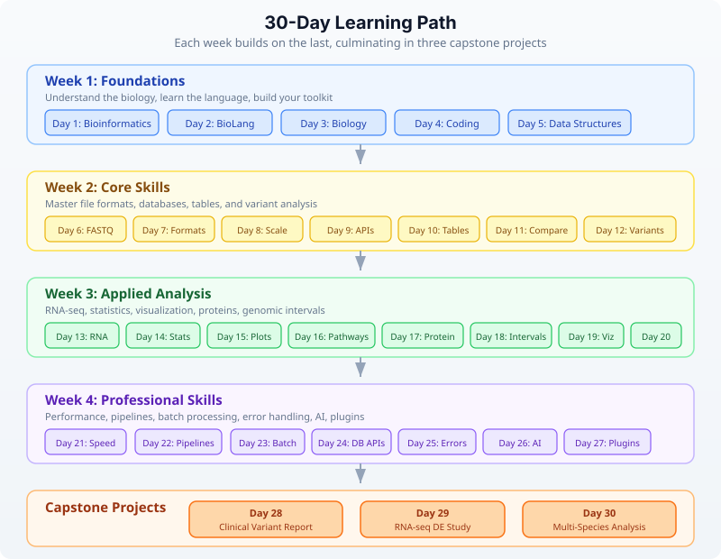
Conventions Used in This Book
Throughout this book, you will see several recurring elements:
Code Blocks
BioLang code appears in fenced code blocks:
let seq = dna"ATGCGATCG"
gc_content(seq)
When a code block shows REPL interaction, lines starting with bl> are what you type, and the lines below are the output:
bl> gc_content(dna"ATGCGATCG")
0.5556
Shell commands use bash syntax:
bl run my_script.bl
Python and R Comparisons
Multi-language comparisons appear with labeled blocks:
Requires CLI: This example uses file I/O / network APIs not available in the browser. Run with
bl run.
BioLang:
read_fasta("genes.fa") |> filter(|s| len(s.sequence) > 1000)
Python:
from Bio import SeqIO
[r for r in SeqIO.parse("genes.fa", "fasta") if len(r.seq) > 1000]
R:
library(Biostrings)
seqs <- readDNAStringSet("genes.fa")
seqs[width(seqs) > 1000]
Exercises
Each day ends with exercises labeled by difficulty:
Exercise 1: Sequence Length — Write a script that reads a FASTA file and prints the length of each sequence.
Key Takeaways
Each day concludes with a bulleted list of the most important points:
- Takeaway in bold. Explanation follows in regular text.
Callout Boxes
Important notes, warnings, and tips appear as blockquotes:
Note: NCBI rate-limits unauthenticated requests to 3 per second. Set
NCBI_API_KEYto increase this to 10 per second.
Warning: Streaming operations consume the stream. Once you iterate through a stream, it is exhausted and cannot be reused.
A Note on the Multi-Language Approach
This book uses BioLang as its primary language, but it is not a BioLang advocacy book. It is a bioinformatics book. The concepts — GC content, quality filtering, differential expression, variant calling — are universal. They do not change because you switch languages.
We include Python and R comparisons for two reasons:
-
Translation. If you already know Python or R, seeing the BioLang equivalent helps you learn faster. If you learn BioLang first, seeing the Python and R equivalents prepares you for the real world where those languages dominate.
-
Perspective. Different languages make different tradeoffs. BioLang is concise for biology but young. Python has the largest ecosystem. R has the best statistics libraries. Seeing all three helps you appreciate what each brings to the table.
The compare.md file in each day’s companion directory provides a detailed side-by-side comparison. The compare.py and compare.R scripts are runnable equivalents you can execute and compare output.
Let’s Begin
You have everything you need. The next 30 days will transform how you think about biological data. Day 1 starts with the fundamental question: what is bioinformatics, and why does it matter?
Turn the page. Your journey starts now.
Day 1: What Is Bioinformatics?
The Problem
A patient walks into a clinic. Their tumor is sequenced. Three billion base pairs of data arrive on a hard drive. Somewhere in there is the mutation driving their cancer. How do you find it?
You cannot read three billion letters by hand. You cannot compare them against a reference genome by eye. You cannot search for patterns across thousands of patients using a spreadsheet. Biology has become a data science, and the data is enormous.
This is why bioinformatics exists.
What Is Bioinformatics?
Bioinformatics sits at the intersection of three fields: biology, computer science, and statistics. But it is more than just “biology plus computers.” It is the discipline of asking biological questions and answering them with data. When a researcher wants to know which genes are active in a tumor, when a clinician needs to identify a drug-resistant mutation, when an ecologist traces the evolutionary history of a species — that is bioinformatics.
The field was born out of necessity. In 1977, Frederick Sanger published the first complete DNA genome sequence — a bacteriophage with 5,386 base pairs. That was manageable by hand. By 2003, the Human Genome Project had sequenced 3.2 billion base pairs at a cost of $2.7 billion. Today, a single Illumina NovaSeq run produces over 6 terabytes of raw data in less than two days. The cost of sequencing a human genome has dropped below $200. The bottleneck is no longer generating data — it is making sense of it.
Every year, the gap between data generation and data analysis widens. Modern sequencing machines produce data faster than biologists can analyze it. This is where you come in. Whether you are a developer learning biology or a biologist learning to code, bioinformatics needs both perspectives. The biology tells you what questions to ask. The code tells you how to answer them.
The Central Dogma of Molecular Biology
Before you can analyze biological data, you need to understand what that data represents. The central dogma describes how genetic information flows in living cells:
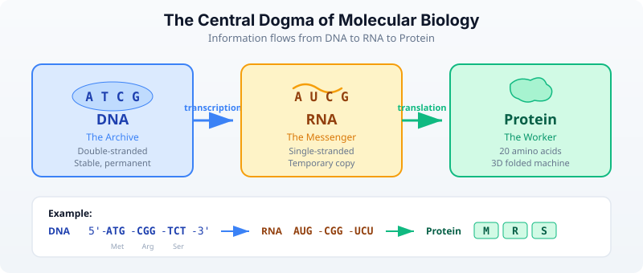
Let’s break this down:
DNA — The Double Helix
DNA is the blueprint. It is a long molecule made of four chemical bases: Adenine, Thymine, Cytosine, and Guanine. Your entire genome — all the instructions to build and run your body — is written in these four letters. The human genome is about 3.2 billion base pairs long, organized into 23 pairs of chromosomes.
DNA has a unique structure: two strands wound around each other in a double helix, connected by base pairs. A always pairs with T (2 hydrogen bonds), and C always pairs with G (3 hydrogen bonds — making CG pairs stronger):
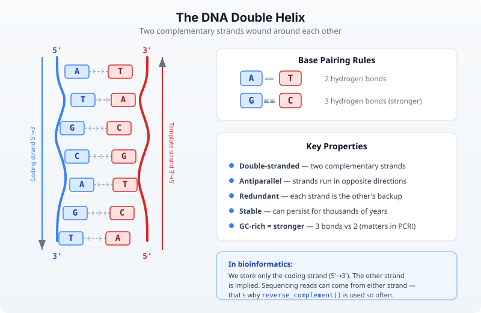
When we write a DNA sequence like ATGCGATCG, we mean the coding strand read 5’ to 3’. The other strand is implied — you can always reconstruct it using the base pairing rules.
RNA — The Single-Stranded Messenger
RNA is the working copy. When a cell needs to use a gene, it copies that region of DNA into RNA through a process called transcription. RNA uses almost the same alphabet, except it swaps T for Uracil. So an A in DNA becomes a U in RNA’s complement, while the sequence being copied replaces every T with U: ATGCG in DNA becomes AUGCG in RNA.
Unlike DNA’s stable double helix, RNA is single-stranded — it is a temporary copy meant to be read and then degraded:
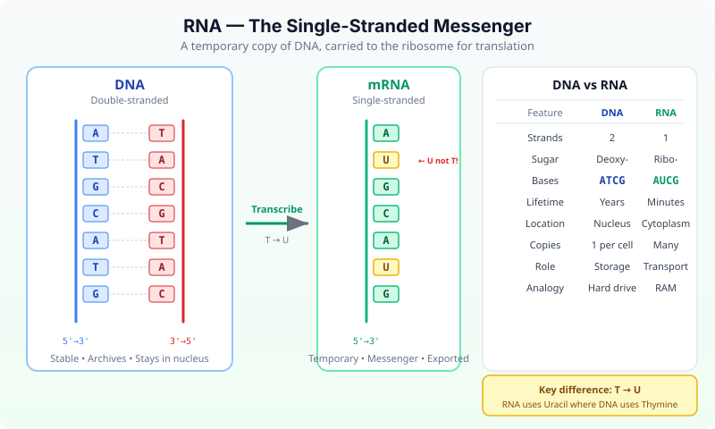
There are several types of RNA, but the one most relevant to the central dogma is mRNA (messenger RNA) — the copy that carries gene instructions to the ribosome for protein synthesis.
Protein — The Folded Machine
Protein is the machine. Proteins do most of the work in cells — they catalyze reactions, transport molecules, provide structure, and signal between cells. The RNA sequence is read three letters at a time (called codons), and each codon maps to one of 20 amino acids. This process is called translation. For example, the codon AUG always codes for Methionine (abbreviated M) and also serves as the “start” signal.
A protein starts as a linear chain of amino acids, but it immediately folds into a specific 3D shape. This shape determines its function — and is why mutations can be so devastating:
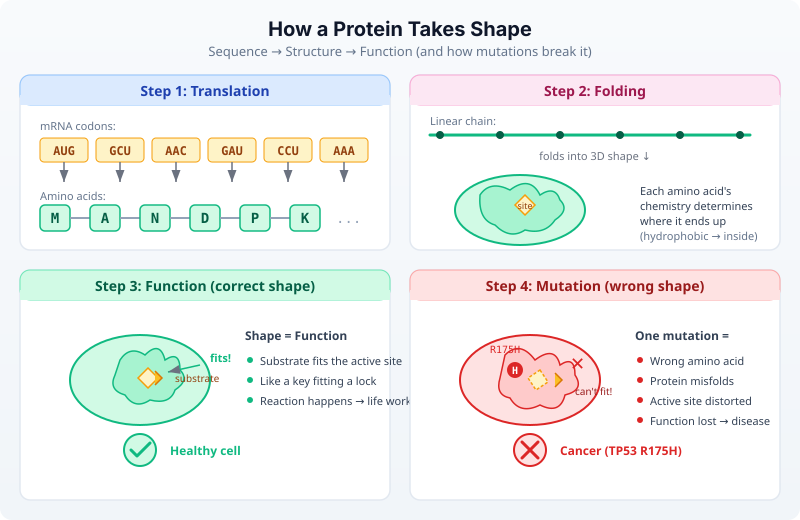
The key insight: sequence determines structure determines function. Change one amino acid (via a DNA mutation) and the entire fold can collapse. This is why the TP53 R175H mutation causes cancer — swapping Arginine for Histidine at position 175 disrupts the DNA-binding domain, and p53 can no longer activate tumor suppression genes.
Why Proteins Are Essential
Proteins are not optional extras — they are what makes life work. Every function your body performs depends on specific proteins doing their jobs correctly:
With working proteins — your body functions:
| Protein | What it does |
|---|---|
| Hemoglobin | Carries oxygen from your lungs to every cell in your body |
| Insulin | Regulates blood sugar — signals cells to absorb glucose for energy |
| Collagen | Provides structure to skin, bones, tendons, and connective tissue |
| Antibodies | Recognize and neutralize viruses, bacteria, and foreign invaders |
| p53 | The “guardian of the genome” — detects DNA damage, triggers repair or cell death |
| DNA polymerase | Copies your entire 3.2 billion base genome every time a cell divides |
| Myosin | Powers muscle contraction — every heartbeat, every breath, every step |
| Keratin | Builds your hair, nails, and outer layer of skin |
Without working proteins — disease happens:
| Missing/defective protein | Consequence |
|---|---|
| Hemoglobin | Cells starve for oxygen → sickle cell anemia |
| Insulin | Blood sugar spirals out of control → type 1 diabetes |
| p53 | Damaged cells keep dividing unchecked → cancer (mutated in >50% of all cancers) |
| Dystrophin | Muscles progressively weaken and waste → muscular dystrophy |
| CFTR | Thick mucus builds up in lungs and digestive tract → cystic fibrosis |
| BRCA1 | DNA repair fails → dramatically increased breast and ovarian cancer risk |
| Phenylalanine hydroxylase | Cannot break down phenylalanine → PKU (brain damage if untreated) |
This is why a single mutation in a gene can cause devastating disease. The mutation changes the DNA, which changes the RNA, which changes the protein’s amino acid sequence, which can alter its 3D shape, which can destroy its function. One wrong letter out of billions — and the protein misfolds, or never gets made, or loses its ability to do its job.
“But I Eat Protein Every Day — Why Can’t I Just Use That?”
You have heard it your whole life: “Eat protein — eggs, chicken, lentils, fish.” So a natural question is: if proteins are so essential, why does the body need to manufacture them from DNA instructions? Why not just use the protein from food directly?
The answer is that dietary protein and your body’s proteins are completely different things. When you eat a chicken breast, you are eating chicken muscle proteins — myosin, actin, troponin — proteins designed to make a chicken’s wing move. Your body cannot use chicken myosin as-is. It is the wrong shape, the wrong size, the wrong function.
Here is what actually happens:
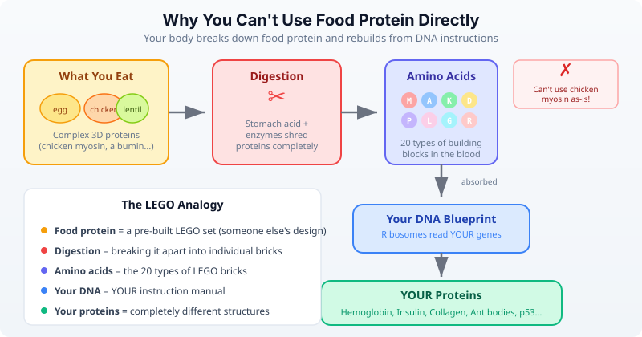
Think of it like this: eating a wooden chair does not give you furniture. But if you break that chair down into individual planks and nails, you can use those raw materials to build something completely different — a bookshelf, a table, whatever your blueprint calls for.
Food protein = raw materials (amino acids). Your DNA = the blueprints. Your ribosomes = the factory. The 20 amino acids are like 20 types of LEGO bricks — the same bricks can build completely different structures depending on the instructions. (You will find the complete table of all 20 amino acids with their single-letter codes and properties in Day 3.)
This is why the central dogma matters so profoundly:
| What you eat | What your body builds | Why it is different |
|---|---|---|
| Egg albumin (egg white protein) | Hemoglobin (carries oxygen in blood) | Completely different amino acid sequence and 3D fold |
| Casein (milk protein) | Keratin (hair, nails, skin) | Different gene, different structure, different function |
| Soy glycinin (plant protein) | Insulin (regulates blood sugar) | Only 51 amino acids long — assembled from your DNA template |
| Collagen (bone broth) | Antibodies (fight infection) | Your immune system designs these based on threats encountered |
Your body contains roughly 20,000 different proteins, each encoded by its own gene, each with a unique amino acid sequence and 3D structure. You cannot get these from food. You can only get the raw building blocks (amino acids) from food, and then your cells assemble them according to the instructions in your DNA.
This is also why protein deficiency is so dangerous — without enough amino acids from food, your cells cannot build the proteins your DNA encodes. And it is why genetic mutations are so consequential — even with perfect nutrition, a mutated gene produces a misfolded or missing protein that no amount of food can fix.
The central dogma is not an abstract concept — it is the reason your body works, and the reason disease happens when it goes wrong. Understanding this chain (DNA encodes RNA, RNA builds protein, protein does the work) is essential for everything in bioinformatics. When we analyze variants, we are asking: “Does this DNA change affect the protein?” When we measure gene expression, we are asking: “How much of this protein is the cell making?” Every analysis connects back to this fundamental flow.
Genes, Genomes, and Chromosomes
Now that you understand the molecules (DNA, RNA, Protein), let’s define the structures that organize them.
Genome — The Complete Instruction Manual
A genome is the complete set of DNA in an organism — every instruction needed to build and run that organism. Think of it as the entire hard drive, not a single file.
| Organism | Genome size | Genes | Chromosomes |
|---|---|---|---|
| E. coli (bacterium) | 4.6 million bp | ~4,300 | 1 (circular) |
| Yeast (S. cerevisiae) | 12 million bp | ~6,000 | 16 |
| Fruit fly (Drosophila) | 180 million bp | ~14,000 | 4 pairs |
| Human (Homo sapiens) | 3.2 billion bp | ~20,000 | 23 pairs |
| Wheat (Triticum aestivum) | 17 billion bp | ~107,000 | 21 pairs |
Notice something surprising: genome size does not correlate well with organism complexity. Wheat has 5x more DNA than humans. The difference lies not in how much DNA you have, but in how it is organized and regulated.
Chromosomes — The Volumes
Chromosomes are the physical units that DNA is packaged into. If the genome is an encyclopedia, chromosomes are the individual volumes. Humans have 23 pairs (46 total) — one set from each parent. Each chromosome is a single, very long DNA molecule wrapped tightly around proteins called histones.
Human Genome (3.2 billion base pairs)
├── Chromosome 1 (249 million bp) ← largest
├── Chromosome 2 (242 million bp)
├── ...
├── Chromosome 17 (83 million bp) ← home of TP53 and BRCA1
├── ...
├── Chromosome 22 (51 million bp) ← smallest autosome
├── Chromosome X (156 million bp)
└── Chromosome Y (57 million bp)
When we say a gene is “on chromosome 17”, we mean its DNA sequence is part of that specific chromosome’s molecule.
Genes — The Individual Instructions
A gene is a specific region of DNA that contains the instructions for building one protein (or sometimes a functional RNA molecule). If the genome is the encyclopedia and chromosomes are volumes, genes are individual articles.
Key facts about genes:
- The human genome has roughly 20,000 protein-coding genes
- Genes make up only about 1.5% of total human DNA
- The rest includes regulatory sequences (promoters, enhancers), structural elements, and regions still being characterized
- A gene is not just one continuous stretch — it contains exons (coding parts) interrupted by introns (non-coding parts that get spliced out)
- The same gene can produce multiple different proteins through alternative splicing
A gene is like a recipe in a cookbook:
- The cookbook = genome
- The chapter = chromosome
- The recipe = gene
- The ingredients list = exons (the parts that matter)
- The chef's notes = introns (removed before cooking)
- The finished dish = protein
Some landmark genes you will encounter throughout this book:
| Gene | Chromosome | What it does | Why it matters |
|---|---|---|---|
| TP53 | chr17 | Encodes p53 tumor suppressor | Mutated in >50% of all cancers |
| BRCA1 | chr17 | DNA double-strand break repair | Mutations increase breast/ovarian cancer risk |
| EGFR | chr7 | Cell growth signaling receptor | Drug target in lung cancer |
| KRAS | chr12 | Cell proliferation signal relay | Mutated in pancreatic, lung, colorectal cancer |
| HBB | chr11 | Hemoglobin beta chain | Sickle cell disease when mutated |
| CFTR | chr7 | Chloride ion channel | Cystic fibrosis when mutated |
| INS | chr11 | Insulin hormone | Critical for blood sugar regulation |
Why Data?
Here is the scale problem that makes bioinformatics necessary:
- A single human genome: ~3 GB of text (just the bases, no metadata)
- A typical whole-genome sequencing run: 100-500 GB of raw data (because each position is read multiple times for accuracy)
- NCBI GenBank (the world’s public sequence archive): over 10 trillion nucleotide bases
- The Sequence Read Archive: over 80 petabytes of raw sequencing data
You cannot do this by hand. You need code.
| Task | By Hand | By Code |
|---|---|---|
| Find a gene in a genome | Hours searching databases | 1 second |
| Count mutations vs. reference | Essentially impossible | 0.5 seconds |
| Compare 1,000 genomes | Multiple lifetimes | Minutes |
| Quality-check a sequencing run | Days of manual review | 30 seconds |
| Search for a drug target | Years of literature review | Hours with database queries |
This is not an exaggeration. Before computational tools existed, identifying a single disease gene could take a decade of work by large teams. Today, clinical sequencing pipelines identify candidate variants in hours. The biology has not changed. The tools have.
Your First Bioinformatics
Try it right now — no installation needed! You can run all the code examples in this chapter directly in your browser at lang.bio/playground. The online playground is perfect for the exercises in Days 1 through 5. For later chapters that work with files (FASTQ, VCF, CSV), you will need the local
blinstallation — see Appendix A for setup instructions.
Let’s write some code. BioLang treats DNA, RNA, and protein sequences as first-class types — not strings, but biological objects that understand what they are.
Creating a DNA sequence
# Your first DNA sequence
let seq = dna"ATGCGATCGATCGATCG"
println(f"Sequence: {seq}")
println(f"Length: {len(seq)} bases")
println(f"Type: {type(seq)}")
# Output:
# Sequence: DNA(ATGCGATCGATCGATCG)
# Length: 17
# Type: DNA
That dna"..." is a sequence literal. BioLang knows this is DNA, not a random string. It will enforce that only valid bases appear. Try putting a Z in there — you will get an error, because Z is not a nucleotide.
The central dogma in code
# Walk through the central dogma
let gene = dna"ATGAAACCCGGGTTTTAA"
println(f"DNA: {gene}")
let mrna = transcribe(gene)
println(f"RNA: {mrna}")
let protein = translate(gene)
println(f"Protein: {protein}")
# Output:
# DNA: DNA(ATGAAACCCGGGTTTTAA)
# RNA: RNA(AUGAAACCCGGGUUUUAA)
# Protein: Protein(MKPGF)
Six codons in that DNA sequence: ATG (Met/M), AAA (Lys/K), CCC (Pro/P), GGG (Gly/G), TTT (Phe/F), and TAA (Stop). The translate function reads until the stop codon and returns the protein sequence MKPGF. That is the central dogma — DNA to RNA to Protein — in three lines of code.
Analyzing sequence composition
# What's in this sequence?
let genome_fragment = dna"ATGCGATCGATCGAATTCGATCG"
let counts = base_counts(genome_fragment)
println(f"Base composition: {counts}")
println(f"GC content: {gc_content(genome_fragment)}")
# Output:
# Base composition: {A: 6, T: 6, G: 6, C: 5, N: 0, GC: 0.4782608695652174}
# GC content: 0.4782608695652174
GC content matters because G-C base pairs form three hydrogen bonds (versus two for A-T), making GC-rich regions more thermally stable. Organisms have characteristic GC content — Plasmodium falciparum (malaria parasite) has about 19% GC, while Streptomyces bacteria can exceed 70%. If you sequence a sample and see unusual GC content, it might indicate contamination or a novel organism.
Finding patterns in DNA
# Finding a restriction enzyme site
let seq = dna"ATCGATCGAATTCGATCGATCG"
let sites = find_motif(seq, "GAATTC")
println(f"EcoRI cuts at positions: {sites}")
# Output:
# EcoRI cuts at positions: [7]
EcoRI is a restriction enzyme — a molecular scissor that cuts DNA at a specific recognition sequence (GAATTC). These enzymes are fundamental tools in molecular biology. Before sequencing was cheap, scientists used restriction enzymes to cut genomes into fragments for analysis. Even today, they are essential for cloning, genotyping, and quality control.
Using the pipe operator
BioLang’s pipe operator |> lets you chain operations naturally — data flows left to right, just like a bench protocol:
# Chain operations with pipes
let result = dna"ATGCGATCGATCG"
|> complement()
|> reverse_complement()
|> transcribe()
println(f"Result: {result}")
# Output:
# Result: RNA(AUGCGAUCGAUCG)
If you are coming from biology, think of pipes as steps in a lab protocol. If you are coming from programming, think of them as method chaining or Unix pipes. Either way, they make multi-step analyses readable.
The Bioinformatics Workflow
Every bioinformatics project — from a student homework to a clinical sequencing pipeline — follows the same general pattern:
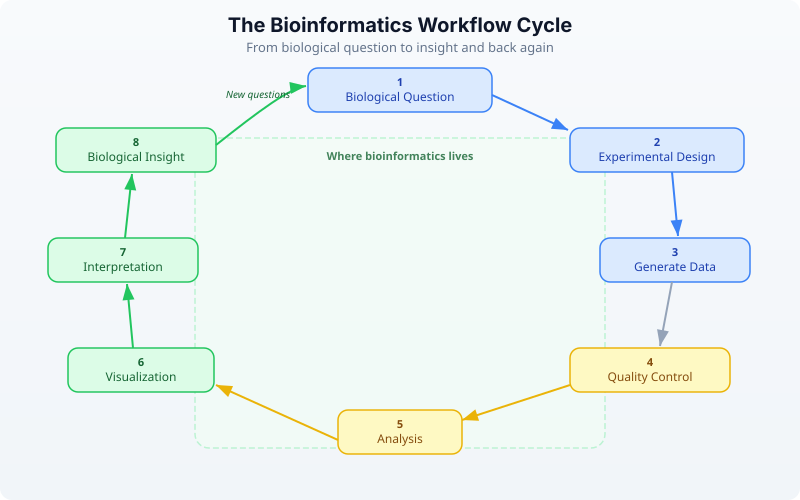
The Eight Steps
| Step | Name | Description |
|---|---|---|
| 1 | Biological Question | What do you want to know? “Which genes are differentially expressed in tumor vs. normal tissue?” |
| 2 | Experimental Design | How will you answer it? Sample selection, sequencing strategy, controls. |
| 3 | Generate Data | Sequencing, mass spectrometry, microarrays, or other assays. |
| 4 | Quality Control | Is the data trustworthy? Check for contamination, low-quality reads, batch effects. |
| 5 | Analysis | Alignment, variant calling, differential expression, statistical testing. |
| 6 | Visualization | Plots, genome browsers, heatmaps that reveal patterns in the results. |
| 7 | Interpretation | What do the results mean biologically? Do they support your hypothesis? |
| 8 | Biological Insight | New knowledge, which inevitably leads to new questions. |
Steps 4 through 7 are where bioinformatics lives. That is what you will learn in this book.
What You’ll Build in 30 Days
This book is structured as four weeks, each building on the last:
Week 1: Foundations (Days 1-5) — You are here. By the end of this week, you will understand the biology behind the data, be comfortable with BioLang’s syntax, and know the core data structures used in bioinformatics.
Week 2: Core Skills (Days 6-12) — Reading real sequencing data (FASTQ, BAM, VCF), working with biological databases, processing large files efficiently, and finding variants in genomes. This is the bread and butter of bioinformatics.
Week 3: Applied Analysis (Days 13-20) — Gene expression analysis, statistics, publication-quality visualization, pathway analysis, protein structure, and multi-species comparison. This is where you start doing real science.
Week 4: Professional Skills (Days 21-30) — Performance optimization, reproducible pipelines, batch processing, error handling, and three capstone projects that tie everything together: a clinical variant report, an RNA-seq study, and a multi-species gene family analysis.
By Day 30, you will be able to take raw sequencing data from a public database, process it through a quality control pipeline, identify biologically meaningful results, and produce publication-quality figures. That is not a promise about what you might achieve — it is the actual content of the capstone projects.
Exercises
Exercise 1: Sequence Composition
Create a DNA sequence of at least 20 bases and analyze its composition:
let my_seq = dna"ATGCCCAAAGGGTTTATGCCC"
let counts = base_counts(my_seq)
println(f"Counts: {counts}")
println(f"GC content: {gc_content(my_seq)}")
Is your sequence GC-rich (>50% GC) or AT-rich (<50% GC)?
Exercise 2: Central Dogma
Translate this DNA sequence and determine what protein it encodes:
let gene = dna"ATGGATCCCTAA"
println(f"DNA: {gene}")
println(f"RNA: {transcribe(gene)}")
println(f"Protein: {translate(gene)}")
# What amino acids are M, D, and P?
# Hint: M = Methionine, D = Aspartic acid, P = Proline
Exercise 3: Base Counting
Count the bases in this perfectly balanced sequence:
let balanced = dna"AAAAATTTTTCCCCCGGGGG"
println(f"Counts: {base_counts(balanced)}")
println(f"GC content: {gc_content(balanced)}")
# Is it GC-rich, AT-rich, or perfectly balanced?
Exercise 4: Motif Search
Find all start codons (ATG) in this sequence:
let seq = dna"ATGATGATGATG"
let starts = find_motif(seq, "ATG")
println(f"Start codons at positions: {starts}")
# How many start codons are there?
# What positions are they at?
Key Takeaways
- Bioinformatics exists because biology generates data at computational scale. Modern sequencing produces terabytes daily — no human can process that by hand.
- DNA to RNA to Protein is the central dogma — the foundation of molecular biology. DNA stores the information, RNA carries it, and proteins do the work.
- BioLang treats sequences as first-class types, not just strings.
dna"ATGC"is a DNA value with biological semantics, not four arbitrary characters. - Every bioinformatics project follows the same workflow: Question, Data, QC, Analysis, Insight. The tools change, but the pattern does not.
- Scale is the defining challenge. A single genome is 3 GB. A research project can involve thousands of genomes. Code is the only way to work at this scale.
Setting Up for the Comparison Scripts
Each day in this book includes equivalent scripts in Python and R alongside the BioLang version, so you can compare approaches. Before starting the exercises, install the required packages once:
Python (run in a terminal):
pip install biopython scipy pandas matplotlib requests openai
R (run in an R console):
install.packages(c("dplyr", "jsonlite", "httr2", "digest", "logging", "ggplot2"))
# For Bioconductor packages (optional, used in later chapters):
# if (!require("BiocManager")) install.packages("BiocManager")
# BiocManager::install(c("Biostrings", "GenomicRanges"))
Note: You do not need Python or R to follow this book — all examples work in BioLang alone. The comparison scripts are provided so you can see how the same analysis looks across languages. See Appendix A for detailed setup instructions.
What’s Next
Tomorrow, we go hands-on with BioLang itself — variables, types, pipes, functions, and the interactive REPL. You will learn the language that powers every example in this book. If today was about why bioinformatics exists, tomorrow is about how you do it.
Day 2: Your First Language — BioLang
The Problem
You have seen what bioinformatics can do. You know that DNA becomes RNA becomes protein, that genomes are billions of letters long, and that computation is the only way to make sense of this data. Now you need a tool to do it.
Every programming language makes tradeoffs. Python is general-purpose but verbose for biology — you need imports, object wrappers, and ten lines to do what should take two. R is excellent for statistics but awkward for building pipelines. Perl was the original bioinformatics language but has fallen out of favor for good reason. Each of these languages was designed for something else and then adapted for biology.
BioLang was designed for one thing: making biological data analysis as natural as describing it in English. DNA sequences are not strings you have to convert. Pipes are not a library you have to import. The language thinks about biology the way you do.
Today you will learn BioLang from scratch. By the end, you will be writing real analysis code — filtering sequences, computing statistics, and chaining operations together with a fluency that would take weeks in other languages.
Getting Started: The REPL
A REPL (Read-Eval-Print Loop) is an interactive environment where you type code, it runs immediately, and you see the result. It is the best way to learn a language because you get instant feedback.
No installation yet? You can try all the examples in this chapter at lang.bio/playground — it runs BioLang directly in your browser. Perfect for learning the basics before committing to a local install.
Launch it:
bl repl
Or simply:
bl
You will see a prompt:
bl>
Try some arithmetic:
bl> 2 + 3
5
bl> 10 * 7
70
bl> 2 ** 10
1024
bl> 17 % 5
2
Try strings:
bl> "Hello, bioinformatics!"
Hello, bioinformatics!
bl> len("ATCGATCG")
8
bl> upper("atcgatcg")
ATCGATCG
To exit the REPL, type Ctrl+D or Ctrl+C.
The REPL is your laboratory bench. Throughout this book, any time you see a new concept, try it there first. Get a feel for it. Break it. Fix it. That is how you learn.
Variables and Types
BioLang has a clean type system designed for biology. Here is how it is organized:

Declaring Variables
Use let to create a variable. BioLang infers the type automatically — you never need type annotations.
let name = "BRCA1" # Str
let length = 81189 # Int
let gc = 0.423 # Float
let is_oncogene = false # Bool
let seq = dna"ATGCGATCG" # DNA
Use type() to check what type a value is:
println(type(name)) # Str
println(type(length)) # Int
println(type(gc)) # Float
println(type(seq)) # DNA
Reassignment
Once a variable exists, you can update it without let:
let count = 0
count = count + 1
println(count) # 1
Why Bio Types Matter
In Python, DNA is just a string: "ATCG". You can accidentally concatenate it with a name, reverse it incorrectly, or pass it to a function that expects a protein. Nothing stops you.
In BioLang, dna"ATCG" is a DNA value. The language knows it is DNA. Functions like transcribe() accept DNA and return RNA. Functions like gc_content() accept DNA or RNA and return a float. If you try to transcribe a protein, you get an error — immediately, not three hours into a pipeline run.
let d = dna"ATGCGATCG"
let r = transcribe(d) # Works: DNA -> RNA
let p = translate(r) # Works: RNA -> Protein
# This would fail:
# let bad = transcribe(p) # Error: transcribe requires DNA
The Pipe Operator
This is the most important concept in BioLang. If you learn one thing today, learn this.
The pipe operator |> takes the result of one expression and feeds it as the first argument to the next function. It turns nested, inside-out code into left-to-right, top-to-bottom code that reads like English.
data ──|>── transform1() ──|>── transform2() ──|>── result
Without Pipes vs. With Pipes
# Without pipes (nested calls — read inside-out)
println(round(gc_content(dna"ATCGATCGATCG"), 3))
# With pipes (left to right — natural reading order)
dna"ATCGATCGATCG"
|> gc_content()
|> round(3)
|> println()
Both lines produce the same result: 0.5. But the pipe version reads like a recipe: take this sequence, compute its GC content, round it, print it.
How Pipes Work
The rule is simple: a |> f(b) becomes f(a, b). The pipe inserts the left side as the first argument to the function on the right.
# These two are identical:
round(gc_content(dna"ATCG"), 3)
dna"ATCG" |> gc_content() |> round(3)
Pipes with Biology
Pipes follow the fundamental bioinformatics pattern: read, transform, summarize.
# Transcribe and translate in one pipeline
dna"ATGAAACCCGGG"
|> transcribe()
|> translate()
|> println()
# Output: Protein(MKPG)
# Find start codons in a sequence
let positions = find_motif(dna"ATGATGCCGATG", "ATG")
println(f"Start codon positions: {positions}")
# Output: Start codon positions: [0, 3, 9]
println(f"Found {len(positions)} start codons")
# Output: Found 3 start codons
You will use pipes constantly. Every chapter in this book builds pipe chains. They are the backbone of BioLang.
Lists and Records
Lists — Ordered Collections
A list holds values in order. Create one with square brackets:
# Lists — ordered collections
let genes = ["BRCA1", "TP53", "EGFR", "KRAS"]
println(len(genes)) # 4
println(genes[0]) # BRCA1
println(genes[3]) # KRAS
println(genes[-1]) # KRAS (negative indices count from the end)
println(genes[-2]) # EGFR
# Lists can hold any type
let lengths = [81189, 19149, 188307, 45806]
let mixed = ["BRCA1", 81189, true, dna"ATCG"]
Useful list operations:
let nums = [3, 1, 4, 1, 5, 9]
println(first(nums)) # 3
println(last(nums)) # 9
println(sort(nums)) # [1, 1, 3, 4, 5, 9]
println(reverse(nums)) # [9, 5, 1, 4, 1, 3]
println(contains(nums, 5)) # true
Records — Key-Value Pairs
Records are collections of named fields, like a dictionary or a struct:
# Records — key-value pairs
let gene = {
name: "TP53",
chromosome: "17",
length: 19149,
is_tumor_suppressor: true
}
println(gene.name) # TP53
println(gene.chromosome) # 17
println(gene.length) # 19149
Records are everywhere in bioinformatics. Every gene has a name, a location, a function. Every experiment has samples, conditions, results. Records let you group related data together naturally.
Functions
Defining Functions
Use fn to define a function:
fn gc_rich(seq) {
gc_content(seq) > 0.6
}
let s = dna"GCGCGCGCATGC"
println(gc_rich(s)) # true
let t = dna"AAAATTTT"
println(gc_rich(t)) # false
Functions can take multiple parameters and use any logic:
fn classify_gc(seq) {
let gc = gc_content(seq)
if gc > 0.6 {
"GC-rich"
} else if gc < 0.4 {
"AT-rich"
} else {
"balanced"
}
}
println(classify_gc(dna"GCGCGCGC")) # GC-rich
println(classify_gc(dna"ATATATATAT")) # AT-rich
println(classify_gc(dna"ATCGATCG")) # balanced
Lambdas (Anonymous Functions)
A lambda is a small function without a name. The syntax is |params| expression:
let double = |x| x * 2
println(double(5)) # 10
let add = |a, b| a + b
println(add(3, 7)) # 10
Lambdas are used constantly with higher-order functions (coming up next). They let you define behavior inline, right where you need it.
Control Flow
If / Else
let gc = 0.65
if gc > 0.6 {
println("GC-rich region")
} else if gc < 0.4 {
println("AT-rich region")
} else {
println("Balanced composition")
}
# Output: GC-rich region
if in BioLang is also an expression — it returns a value:
let label = if gc > 0.6 { "high" } else { "normal" }
println(label) # high
For Loops
let codons = ["ATG", "GCT", "TAA"]
for codon in codons {
println(f"Codon: {codon}")
}
# Output:
# Codon: ATG
# Codon: GCT
# Codon: TAA
Pattern Matching
match is like a more powerful if/else chain:
let base = "A"
match base {
"A" | "G" => println("Purine"),
"C" | "T" => println("Pyrimidine"),
_ => println("Unknown"),
}
# Output: Purine
The _ is a wildcard — it matches anything. Pattern matching is especially useful for handling different cases cleanly.
Higher-Order Functions
Higher-order functions (HOFs) take a function as an argument. They are the power tools of BioLang. Once you learn map, filter, and reduce, you will rarely need explicit loops.
map — Transform Each Element
map applies a function to every element and returns a new list:
let sequences = [dna"ATCG", dna"GCGCGC", dna"ATATAT"]
let gc_values = sequences |> map(|s| gc_content(s))
println(gc_values)
# Output: [0.5, 1.0, 0.0]
filter — Keep Elements Matching a Condition
filter keeps only elements where the function returns true:
let sequences = [dna"ATCG", dna"GCGCGC", dna"ATATAT"]
let gc_rich = sequences
|> filter(|s| gc_content(s) > 0.4)
println(gc_rich)
# Output: [DNA(ATCG), DNA(GCGCGC)]
println(len(gc_rich))
# Output: 2
each — Do Something with Each Element
each runs a function on every element for its side effects (like printing). It does not collect results:
["BRCA1", "TP53", "EGFR"]
|> each(|g| println(f"Gene: {g}"))
# Output:
# Gene: BRCA1
# Gene: TP53
# Gene: EGFR
reduce — Combine into a Single Value
reduce combines all elements into one value by applying a function pairwise:
let sequences = [dna"ATCG", dna"GCGCGC", dna"ATATAT"]
let total_length = sequences
|> map(|s| len(s))
|> reduce(|a, b| a + b)
println(f"Total bases: {total_length}")
# Output: Total bases: 16
Combining HOFs with Pipes
The real power comes from chaining these together:
# Find names of all GC-rich sequences
[dna"ATCG", dna"GCGCGCGC", dna"AAAA", dna"CCGG"]
|> filter(|s| gc_content(s) > 0.5)
|> map(|s| f"GC={round(gc_content(s), 2)}: {s}")
|> each(|line| println(line))
# Output:
# GC=1.0: DNA(GCGCGCGC)
# GC=0.75: DNA(CCGG)
Putting It All Together
Here is a mini-analysis that uses everything you have learned today — variables, records, pipes, functions, and HOFs:
# Analyze a set of gene fragments
let fragments = [
{name: "exon1", seq: dna"ATGCGATCGATCG"},
{name: "exon2", seq: dna"GCGCGCATATAT"},
{name: "exon3", seq: dna"TTTTAAAACCCC"},
]
# Find GC-rich exons using pipes + HOFs
let gc_rich_exons = fragments
|> filter(|f| gc_content(f.seq) > 0.5)
|> map(|f| f.name)
println(f"GC-rich exons: {gc_rich_exons}")
# Output: GC-rich exons: [exon1]
# Summary statistics
let gc_values = fragments |> map(|f| round(gc_content(f.seq), 3))
println(f"GC contents: {gc_values}")
# Output: GC contents: [0.538, 0.5, 0.333]
println(f"Mean GC: {round(mean(gc_values), 3)}")
# Output: Mean GC: 0.457
# Classify each fragment
fn classify_gc(gc) {
if gc > 0.6 { "GC-rich" }
else if gc < 0.4 { "AT-rich" }
else { "balanced" }
}
fragments |> each(|f| {
let gc = round(gc_content(f.seq), 3)
println(f"{f.name}: GC={gc} ({classify_gc(gc)})")
})
# Output:
# exon1: GC=0.538 (balanced)
# exon2: GC=0.5 (balanced)
# exon3: GC=0.333 (AT-rich)
This is the pattern you will use for the rest of this book: load data, transform it with pipes and HOFs, summarize the results. The data gets more complex — FASTQ files, VCF variants, gene expression tables — but the pattern stays the same.
BioLang vs Python vs R
Let’s see the same task in all three languages: given a list of DNA sequences, find the GC-rich ones and display them with their GC content.
BioLang (6 lines, 0 imports)
let seqs = [dna"ATCGATCG", dna"GCGCGCGC", dna"ATATATAT"]
seqs
|> filter(|s| gc_content(s) > 0.5)
|> map(|s| {seq: s, gc: round(gc_content(s), 3)})
|> each(|r| println(f"{r.seq}: {r.gc}"))
Python (15 lines)
from Bio.Seq import Seq
from Bio.SeqUtils import gc_fraction
sequences = [Seq("ATCGATCG"), Seq("GCGCGCGC"), Seq("ATATATAT")]
gc_rich = []
for seq in sequences:
gc = gc_fraction(seq)
if gc > 0.5:
gc_rich.append({"seq": str(seq), "gc": round(gc, 3)})
for item in gc_rich:
print(f"{item['seq']}: {item['gc']}")
# Or with list comprehension (more compact but harder to read):
# [print(f"{s}: {round(gc_fraction(s),3)}") for s in sequences if gc_fraction(s)>0.5]
R (12 lines)
library(Biostrings)
sequences <- DNAStringSet(c("ATCGATCG", "GCGCGCGC", "ATATATAT"))
gc_values <- letterFrequency(sequences, letters="GC", as.prob=TRUE)
gc_rich_idx <- which(gc_values > 0.5)
gc_rich_seqs <- sequences[gc_rich_idx]
gc_rich_vals <- round(gc_values[gc_rich_idx], 3)
for (i in seq_along(gc_rich_seqs)) {
cat(sprintf("%s: %s\n", as.character(gc_rich_seqs[i]), gc_rich_vals[i]))
}
Why the Difference Matters
BioLang is not shorter because it is a toy. It is shorter because:
- No imports: DNA, GC content, and pipes are built in
- Bio types:
dna"..."is a type, not a string you convert - Pipes: chaining reads top-to-bottom, not inside-out
- HOFs:
filter,map,eachreplace loops
When your script is 6 lines instead of 15, you spend less time writing boilerplate and more time thinking about biology. That advantage compounds — a 200-line pipeline in BioLang would be 500 lines in Python.
Exercises
Try these in the REPL or in a .bl script file.
Exercise 1: Longest Sequence
Create a list of 5 DNA sequences of different lengths. Find the longest one using sort_by and last:
let seqs = [dna"ATG", dna"ATCGATCG", dna"ATCG", dna"AT", dna"ATCGATCGATCG"]
# Hint: sort_by takes a lambda that returns the sort key
# seqs |> sort_by(|s| len(s)) |> last() |> print()
Exercise 2: Classify Bases
Write a function classify_base(base) that uses match to return "purine" for A or G, "pyrimidine" for C or T, and "unknown" for anything else:
# fn classify_base(base) { ... }
# Test: classify_base("A") should return "purine"
Exercise 3: Central Dogma Pipeline
Use pipes to: create a DNA sequence, transcribe it to RNA, translate it to protein, and get its length — all in one pipeline:
# dna"ATGAAACCCGGGTTTTAA" |> transcribe() |> translate() |> len() |> print()
Exercise 4: Filter Records
Given a list of gene expression records, keep only those with expression above 3.0:
let genes = [
{gene: "BRCA1", expr: 5.2},
{gene: "TP53", expr: 1.8},
{gene: "EGFR", expr: 7.1},
{gene: "KRAS", expr: 2.3},
{gene: "MYC", expr: 4.0},
]
# Hint: genes |> filter(|g| g.expr > 3.0) |> each(|g| print(f"{g.gene}: {g.expr}"))
Exercise 5: Join vs Reduce
Use reduce to concatenate a list of strings with " | " as separator. Then discover that join does it more simply:
let items = ["DNA", "RNA", "Protein"]
# Hard way: items |> reduce(|a, b| a + " | " + b) |> print()
# Easy way: join(items, " | ") |> print()
Key Takeaways
Here is what you learned today, distilled:
| Concept | Syntax | Example |
|---|---|---|
| Variable | let x = value | let seq = dna"ATCG" |
| Function | fn name(params) { body } | fn gc_rich(s) { gc_content(s) > 0.6 } |
| Lambda | |params| expr | |x| x * 2 |
| Pipe | a |> f(b) | seq |> gc_content() |> print() |
| map | Transform each | list |> map(|x| x * 2) |
| filter | Keep matching | list |> filter(|x| x > 0) |
| reduce | Combine all | list |> reduce(|a, b| a + b) |
| each | Side effects | list |> each(|x| print(x)) |
| Comment | # | # this is a comment |
The pipe |> is the core of BioLang. It makes data flow visible. When you read data |> transform() |> summarize() |> print(), you know exactly what happens at each step. No nesting, no temporary variables, no ambiguity.
Bio types (DNA, RNA, Protein) are not strings. They carry meaning, and the language enforces it. You cannot accidentally transcribe a protein or translate a string.
map, filter, and reduce replace most loops. They are cleaner, less error-prone, and they compose with pipes beautifully.
What’s Next
You now have a working language. You can write variables, functions, pipes, and HOFs. But so far, all our sequences have been short strings we typed by hand.
Tomorrow, we step back from code and into biology: genomes, genes, mutations, and why they matter. You need this foundation before you can analyze real data. Understanding what a VCF file represents matters as much as knowing how to parse it.
Day 3: The Biology You Need — genomes, chromosomes, variants, and the questions bioinformatics answers.
Day 3: Biology Crash Course for Developers
The Problem
You can write code, but you do not know what a gene actually is, why mutations matter, or what “expression” means. Without this foundation, bioinformatics code is just meaningless data shuffling. Every variable name, every file format, every analysis pipeline assumes you understand the biology underneath. Today we build the biological intuition you need.
If you already have a biology background, skim this chapter or use it as a refresher. For everyone else: this is the day that makes everything else click.
The Cell: Biology’s Computer
If you understand computers, you already have the mental framework for molecular biology. A living cell is an information-processing system, and the analogy is surprisingly precise.
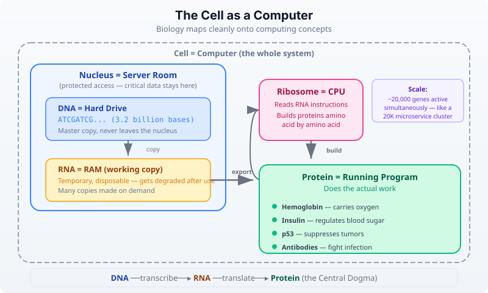
Your DNA is the master copy of every instruction your body needs. It never leaves the nucleus, just like critical data stays in a server room. When the cell needs to build something, it copies the relevant section of DNA into RNA — a temporary, disposable working copy. That RNA travels to a ribosome, which reads it and assembles a protein, amino acid by amino acid.
This flow — DNA to RNA to Protein — is called the central dogma of molecular biology. Nearly everything in bioinformatics relates to measuring, comparing, or interpreting data at one of these three levels.
The analogy breaks down at scale, of course. Your cells are not running one program at a time. A single human cell has about 20,000 genes, thousands of which are active simultaneously, producing millions of protein molecules. It is less like a laptop and more like a data center running 20,000 microservices.
DNA: The Source Code
DNA is built from four chemical bases, each represented by a single letter:
| Base | Letter | Pairs with |
|---|---|---|
| Adenine | A | T |
| Thymine | T | A |
| Cytosine | C | G |
| Guanine | G | C |
These bases pair up in a strict pattern called Watson-Crick base pairing: A always pairs with T, and C always pairs with G. This gives DNA its famous double-helix structure — two complementary strands wound around each other.
5'─A─T─G─C─G─A─T─C─G─3' (coding strand)
| | | | | | | | |
3'─T─A─C─G─C─T─A─G─C─5' (template strand)
Direction matters. DNA strands have a chemical directionality called 5’ (five-prime) to 3’ (three-prime). By convention, sequences are always written 5’ to 3’, just like we read text left to right. When bioinformatics tools say “the sequence is ATGCGATCG,” they mean reading the coding strand from 5’ to 3’.
The complement of a sequence flips each base according to the pairing rules: A becomes T, T becomes A, C becomes G, G becomes C. The reverse complement also reverses the order, giving you the other strand read in its own 5’-to-3’ direction.
let coding = dna"ATGCGATCG"
let comp = complement(coding)
let rc = reverse_complement(coding)
println(f"Coding: 5'-{coding}-3'")
println(f"Complement: 3'-{comp}-5'")
println(f"RevComp: 5'-{rc}-3'")
# Output:
# Coding: 5'-ATGCGATCG-3'
# Complement: 3'-TACGCTAGC-5'
# RevComp: 5'-CGATCGCAT-3'
Why does the reverse complement matter? Because sequencing machines can read either strand. If a read comes from the opposite strand, you need the reverse complement to map it back to the reference. This is one of the most common operations in bioinformatics.
Genes: Functions in the Genome
If DNA is the source code, a gene is a function — a defined region with a specific purpose. A gene contains the instructions for building one protein (a simplification, but a useful one; some genes produce functional RNA instead).
The numbers are humbling:
- The human genome has about 3.2 billion base pairs
- Only about 1.5% of that codes for proteins
- We have roughly 20,000 protein-coding genes
- The rest used to be called “junk DNA,” but much of it has regulatory roles
A gene is not a simple, contiguous stretch of code. It has structure:
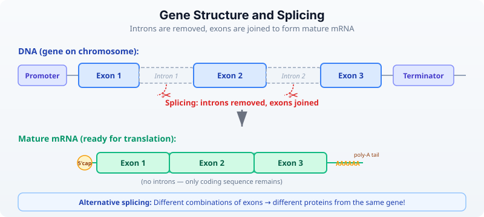
- Exons are the coding sections — the parts that actually encode protein
- Introns are non-coding sections between exons — they get removed
- Splicing is the process of cutting out introns and joining exons together
- The result is mRNA (messenger RNA), the template used to build the protein
Think of it this way: a gene in DNA is like a source file full of commented-out blocks. Splicing is the preprocessor that strips the comments and produces clean, executable code.
# Simulating exon splicing
let exon1 = dna"ATGCGA"
let exon2 = dna"TCGATC"
let exon3 = dna"GCGTAA"
# In reality, splicing is done by the cell's machinery
# In BioLang, we can transcribe individual exons
let mrna = transcribe(exon1)
println(f"Exon 1 transcribed: {mrna}")
# Output:
# Exon 1 transcribed: AUGCGA
One of the most surprising facts in biology: the same gene can produce different proteins depending on which exons are included. This is called alternative splicing, and it is one reason humans can get by with only 20,000 genes — each one can produce multiple protein variants.
Proteins: The Machines
Proteins are the workhorses of the cell. They are built from 20 amino acids, and the sequence of amino acids determines what the protein does. The mapping from DNA to amino acid uses a three-letter code: every group of three bases (a codon) specifies one amino acid.
The math works out neatly: 4 bases taken 3 at a time gives 4^3 = 64 possible codons. Those 64 codons map to just 20 amino acids plus 3 stop signals. This redundancy is important — it means some mutations are harmless because different codons can encode the same amino acid.
Key codons to remember:
| Codon (DNA) | Codon (RNA) | Amino acid | Role |
|---|---|---|---|
| ATG | AUG | Methionine (M) | Start codon — every protein begins here |
| TAA | UAA | — | Stop codon |
| TAG | UAG | — | Stop codon |
| TGA | UGA | — | Stop codon |
Let’s trace through the central dogma in code:
# Exploring the genetic code
let seq = dna"ATGGCTAACTGA"
let rna = transcribe(seq)
let protein = translate(seq)
println(f"DNA: {seq}")
println(f"RNA: {rna}")
println(f"Protein: {protein}")
# Output:
# DNA: ATGGCTAACTGA
# RNA: AUGGCUAACUGA
# Protein: MAN
# M = Methionine (start), A = Alanine, N = Asparagine
# (TGA = stop codon, translation halts before it)
Notice that translate() accepts DNA directly — BioLang handles the T-to-U conversion internally. The function stops at the first stop codon, which is the biologically correct behavior.
# Codon usage in a sequence
let gene = dna"ATGGCTGCTTCTGATTGA"
let usage = codon_usage(gene)
println(usage)
# Output:
# {ATG: 1, GCT: 2, TCT: 1, GAT: 1, TGA: 1}
# Notice GCT appears twice — both encode Alanine
Protein function depends on how the amino acid chain folds into a 3D structure. A single change in the sequence can alter the fold and destroy the protein’s function. This is why mutations matter.
Mutations: Bugs in the Code
A mutation is any change in the DNA sequence. Like a bug in software, the consequences depend entirely on where it happens and what changes. Some mutations are invisible; others are catastrophic.
Types of mutations
Normal: ATG GCT AAC TGA --> M-A-N (stop)
|||
Missense: ATG GCT GAC TGA --> M-A-D (stop) one amino acid changed (N->D)
||
Nonsense: ATG TAA AAC TGA --> M (premature stop!) protein truncated
|
Frameshift: ATG -CT AAC TGA --> reading frame destroyed — total chaos
- SNP (Single Nucleotide Polymorphism): one base swapped for another. The most common type of variation.
- Synonymous (silent): the codon changes but still encodes the same amino acid, thanks to redundancy in the genetic code. No effect on the protein.
- Missense: the codon changes to encode a different amino acid. May or may not affect protein function, depending on how different the new amino acid is.
- Nonsense: the codon changes to a stop codon, truncating the protein. Almost always damaging.
- Frameshift: an insertion or deletion that is not a multiple of 3 shifts the entire reading frame. Every codon downstream is wrong. This is the biological equivalent of an off-by-one error that corrupts everything after it.
# Comparing normal vs mutant
let normal = dna"ATGGCTAACTGA"
let mutant = dna"ATGGCTGACTGA" # A->G at position 7 (0-indexed)
let normal_protein = normal |> translate()
let mutant_protein = mutant |> translate()
println(f"Normal: {normal_protein}")
println(f"Mutant: {mutant_protein}")
println(f"Changed: {normal_protein != mutant_protein}")
# Output:
# Normal: MAN
# Mutant: MAD
# Changed: true
# One base change (A->G) changed Asparagine (N) to Aspartate (D)
The position within a codon matters enormously. The third position (called the “wobble position”) is the most tolerant of mutations because of codon redundancy. Mutations at the first or second position almost always change the amino acid.
The 20 Amino Acids
Every protein in every living organism is built from the same 20 amino acids. Each has a three-letter abbreviation and a single-letter code — the one-letter codes are what you will see constantly in bioinformatics data:
| Amino Acid | 3-Letter | 1-Letter | Property | Found abundantly in |
|---|---|---|---|---|
| Alanine | Ala | A | Hydrophobic | Silk fibroin |
| Arginine | Arg | R | Positive charge | Histones (DNA packaging) |
| Asparagine | Asn | N | Polar | Cell surface glycoproteins |
| Aspartate | Asp | D | Negative charge | Neurotransmitter receptors |
| Cysteine | Cys | C | Disulfide bonds | Keratin (hair), antibodies |
| Glutamate | Glu | E | Negative charge | Taste receptors (umami) |
| Glutamine | Gln | Q | Polar | Blood proteins, muscle fuel |
| Glycine | Gly | G | Smallest, flexible | Collagen (every 3rd position!) |
| Histidine | His | H | pH-sensitive charge | Hemoglobin (oxygen binding site) |
| Isoleucine | Ile | I | Hydrophobic | Muscle proteins |
| Leucine | Leu | L | Hydrophobic | Most abundant amino acid in proteins |
| Lysine | Lys | K | Positive charge | Collagen cross-linking |
| Methionine | Met | M | Start signal | Every protein begins with M |
| Phenylalanine | Phe | F | Hydrophobic, aromatic | Neurotransmitter precursor |
| Proline | Pro | P | Rigid, helix-breaker | Collagen (structural kinks) |
| Serine | Ser | S | Polar, phosphorylation | Signaling proteins (on/off switches) |
| Threonine | Thr | T | Polar, phosphorylation | Mucin (gut lining protection) |
| Tryptophan | Trp | W | Largest, aromatic | Serotonin precursor (mood) |
| Tyrosine | Tyr | Y | Aromatic, phosphorylation | Insulin receptor signaling |
| Valine | Val | V | Hydrophobic | Hemoglobin (sickle cell: E6V mutation) |
Why this table matters: When you see a protein sequence like
MEEPQSDPin bioinformatics, each letter is one of these 20 amino acids. When a mutation report says “R175H”, it means Arginine (R) at position 175 was changed to Histidine (H). The single-letter codes are the language of protein bioinformatics.
Notice the properties column. Amino acids are not interchangeable:
- Hydrophobic amino acids (A, V, I, L, F, W, M) cluster in the protein’s interior, away from water
- Charged amino acids (R, K, D, E) sit on the surface and interact with other molecules
- Polar amino acids (S, T, N, Q) form hydrogen bonds and participate in catalysis
This is why a mutation that swaps a hydrophobic amino acid for a charged one (like V600E in BRAF — Valine to Glutamate) can be catastrophic: it puts a charged residue where a hydrophobic one should be, disrupting the protein’s entire 3D fold.
Gene Expression: Which Programs Are Running?
Every cell in your body contains the same DNA — the same complete set of ~20,000 genes. But a liver cell looks and behaves nothing like a neuron. The difference is gene expression: which genes are turned on and how strongly.
Gene expression is measured by how much RNA is being produced from a gene. A highly expressed gene produces thousands of RNA copies; a silenced gene produces none. Different cell types have dramatically different expression profiles:
- Housekeeping genes are always on — they handle basic cell maintenance (like system services that always run)
- Tissue-specific genes are only active in certain cell types (like applications that only launch on specific servers)
- Stress-response genes activate only under certain conditions — heat, DNA damage, infection (like error handlers)
The developer analogy is precise: gene expression is like running ps aux on a server. You see which processes are active, how much CPU they are using, and which ones just started or stopped. In biology, the equivalent tool is RNA-seq — a sequencing technology that counts RNA molecules, telling you exactly which genes are active and at what level.
Differential expression analysis compares expression between conditions. Which genes are more active in tumor tissue versus normal tissue? Which genes turn on when a cell is infected by a virus? These comparisons are one of the most common tasks in bioinformatics.
Reference Genomes and Coordinates
Just as every address system needs a map, genomics needs a reference genome — a canonical, consensus sequence for a species. The current human reference genome is called GRCh38 (Genome Reference Consortium Human Build 38), released in 2013 and continually patched.
Genomic coordinates use a simple system: chromosome + position. The location chr17:7,687,490 means chromosome 17, position 7,687,490. This is the universal addressing system in genomics — every variant, every gene, every regulatory element has coordinates on the reference.
Two coordinate conventions matter:
| Format | Coordinates | Example | Note |
|---|---|---|---|
| BED | 0-based, half-open | chr17 7687489 7687490 | Like Python slicing: seq[start:end] |
| VCF | 1-based, inclusive | chr17 7687490 . A G | Like what humans say: “position 7,687,490” |
If you have ever been bitten by off-by-one errors in code, genomic coordinates will give you sympathy pain. The BED-vs-VCF coordinate difference is responsible for more bioinformatics bugs than any other single issue.
# Genomic intervals
let brca1_location = interval("chr17", 43044295, 43125483)
let tp53_location = interval("chr17", 7668402, 7687550)
println(f"BRCA1: {brca1_location}")
println(f"TP53: {tp53_location}")
println(f"Same chromosome: {brca1_location.chrom == tp53_location.chrom}")
# Output:
# BRCA1: chr17:43044295-43125483
# TP53: chr17:7668402-7687550
# Same chromosome: true
Both BRCA1 and TP53 are on chromosome 17, but they are millions of base pairs apart. BRCA1 is a breast/ovarian cancer gene; TP53 is the most commonly mutated gene across all cancers. We will meet both again throughout this book.
The “-omics” Landscape
Modern biology is organized into layers, each with its own data types and analysis methods:
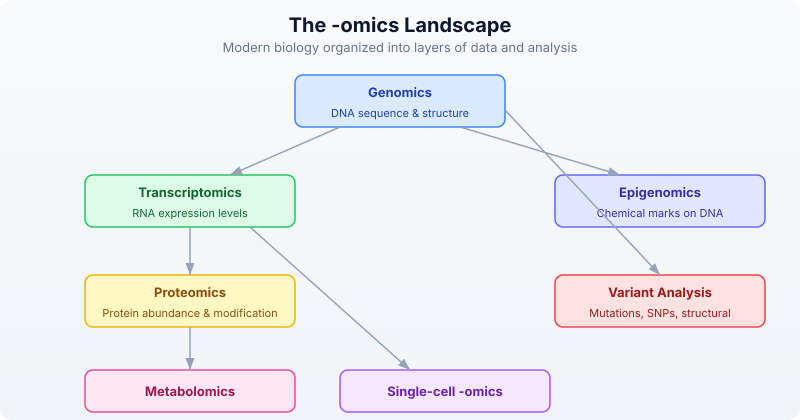
- Genomics: the study of complete DNA sequences — finding genes, identifying variants, comparing species
- Transcriptomics: measuring which genes are expressed and at what level, usually via RNA-seq
- Proteomics: identifying and quantifying proteins in a sample using mass spectrometry
- Metabolomics: profiling small molecules (metabolites) that result from cellular processes
- Epigenomics: studying chemical modifications to DNA that affect gene expression without changing the sequence
- Variant analysis: cataloging mutations and polymorphisms, assessing their clinical significance
- Single-cell -omics: any of the above, but measured in individual cells rather than bulk tissue
Each -omics field has its own file formats, databases, and analytical pipelines. This book will focus on genomics, transcriptomics, and variant analysis — the areas where most bioinformatics work happens.
Putting It All Together: A Gene Story
Let’s make this concrete with TP53, the most studied gene in cancer biology. TP53 encodes the protein p53, sometimes called the “guardian of the genome.” When DNA gets damaged, p53 activates to either repair the damage or trigger cell death. When TP53 is mutated, this safety mechanism fails — damaged cells keep dividing, leading to cancer.
TP53 is mutated in more than 50% of all human cancers. It is the single most commonly mutated gene across cancer types. Understanding why requires everything we have covered today.
Requires CLI: This example uses file I/O / network APIs not available in the browser. Run with
bl run.
# The story of TP53 — the most mutated gene in cancer
# Requires internet connection for NCBI lookup
# Optional: set NCBI_API_KEY for higher rate limits
let tp53 = ncbi_gene("TP53")
println(f"Gene: {tp53.symbol}")
println(f"Description: {tp53.description}")
println(f"Chromosome: {tp53.chromosome}")
println(f"Location: {tp53.location}")
# Output (approximate — NCBI data updates):
# Gene: TP53
# Description: tumor protein p53
# Chromosome: 17
# Location: 17p13.1
# A normal TP53 fragment — the start of the coding sequence
let normal = dna"ATGGAGGAGCCGCAGTCAGATCCTAGC"
let protein = normal |> translate()
println(f"Normal protein starts: {protein}")
# Output:
# Normal protein starts: MEEPQSDPS
# M=Met, E=Glu, E=Glu, P=Pro, Q=Gln, S=Ser, D=Asp, P=Pro, S=Ser
# GC content of this region
let gc = gc_content(normal)
println(f"GC content: {gc}")
# Output:
# GC content: 0.5555555555555556
The most common TP53 mutation in cancer is R248W: a single base change that swaps Arginine (R, coded by CGG) for Tryptophan (W, coded by TGG) at position 248 of the protein. One letter changes. The protein misfolds. The guardian is disabled. Cells lose their brake pedal.
This is why we study mutations with such care. A single base out of 3.2 billion can be the difference between a cell that functions normally and one that becomes cancerous.
Exercises
Exercise 1: Hand-translate a sequence
Given dna"ATGAAAGCTTGA", what protein does it encode? Work it out by hand first:
- Split into codons: ATG | AAA | GCT | TGA
- Look up each codon: ATG=M, AAA=K, GCT=A, TGA=Stop
- Expected protein: MKA
Then verify with BioLang:
let seq = dna"ATGAAAGCTTGA"
let protein = translate(seq)
println(f"Protein: {protein}")
# Output:
# Protein: MKA
Exercise 2: Wobble position experiment
Create two DNA sequences that differ by one base. Translate both. Does the amino acid change? Try mutating position 1, 2, and 3 of the second codon to see which position tolerates mutations best:
# Original: GCT = Alanine (A)
let original = dna"ATGGCTTGA"
let mut_pos1 = dna"ATGTCTTGA" # G->T at codon position 1
let mut_pos2 = dna"ATGGATTGA" # C->A at codon position 2
let mut_pos3 = dna"ATGGCATGA" # T->A at codon position 3
println(f"Original (GCT): {translate(original)}")
println(f"Pos1 mut (TCT): {translate(mut_pos1)}")
println(f"Pos2 mut (GAT): {translate(mut_pos2)}")
println(f"Pos3 mut (GCA): {translate(mut_pos3)}")
# Output:
# Original (GCT): MA
# Pos1 mut (TCT): MS (Alanine -> Serine — changed!)
# Pos2 mut (GAT): MD (Alanine -> Aspartate — changed!)
# Pos3 mut (GCA): MA (Alanine -> Alanine — silent! same amino acid)
# The third position is most tolerant of mutations (wobble position)
Exercise 3: Look up a gene
Look up what chromosome EGFR is on using ncbi_gene("EGFR"). EGFR (Epidermal Growth Factor Receptor) is a major drug target in lung cancer.
Requires CLI: This example uses file I/O / network APIs not available in the browser. Run with
bl run.
# Requires internet connection
let egfr = ncbi_gene("EGFR")
println(f"EGFR chromosome: {egfr.chromosome}")
println(f"EGFR description: {egfr.description}")
# Expected: chromosome 7
Exercise 4: Interval overlap check
Create intervals for two genes on chromosome 7 and check whether they overlap:
let egfr = interval("chr7", 55019017, 55211628)
let braf = interval("chr7", 140719327, 140924929)
# Manual overlap check: two intervals overlap if
# they are on the same chrom AND start < other.end AND other.start < end
let same_chrom = egfr.chrom == braf.chrom
let overlaps = same_chrom and egfr.start < braf.end and braf.start < egfr.end
println(f"EGFR: {egfr}")
println(f"BRAF: {braf}")
println(f"Same chromosome: {same_chrom}")
println(f"Overlap: {overlaps}")
# Output:
# EGFR: chr7:55019017-55211628
# BRAF: chr7:140719327-140924929
# Same chromosome: true
# Overlap: false
# (They're ~85 million bases apart — same chromosome, but far away)
Key Takeaways
- DNA -> RNA -> Protein: the central dogma governs how genetic information becomes function. DNA is transcribed into RNA; RNA is translated into protein.
- Genes are regions of DNA that encode proteins. Humans have approximately 20,000 protein-coding genes in a 3.2-billion-base genome.
- Mutations are changes in DNA. They can be silent (synonymous), damaging (missense/nonsense), or catastrophic (frameshift). The wobble position (third base of a codon) is the most tolerant.
- Gene expression tells us which genes are active. It varies by cell type, condition, and time. RNA-seq measures it by counting RNA molecules.
- Genomic coordinates (chromosome + position) are the universal addressing system. Watch out for 0-based (BED) vs 1-based (VCF) conventions.
- The reference genome (GRCh38) is the baseline. Variants are always described relative to it.
What’s Next
Tomorrow: Day 4 — Coding Crash Course for Biologists. The complementary perspective — thinking in data structures, debugging strategies, and building confidence with code. Biologists learn the computational thinking they need; developers can skip or skim.
Day 4: Coding Crash Course for Biologists
The Problem
You understand biology deeply. You can design a CRISPR experiment, interpret a Western blot, and explain the Krebs cycle from memory. But your data analysis is stuck in Excel. You copy-paste between spreadsheets, manually rename files, and spend hours on repetitive tasks that a script could do in seconds.
Today you learn to think like a programmer — not to become one, but to become a more effective biologist. By the end of this chapter, you will be able to read and write short programs that automate the tedious parts of your research.
If you already know how to code, skim this chapter or use it to understand how biologists think about data. The lab analogies here will help you communicate with your biology collaborators.
Why Code Beats Spreadsheets
Every biologist has been there: a spreadsheet with 500 gene names in column A, sequences in column B, and a formula in column C that took 20 minutes to get right. Then someone asks you to do the same thing with a different dataset. Or worse, asks you to prove your analysis is reproducible.
Code solves four problems that spreadsheets cannot:
Reproducibility. A script runs the same way every time. No forgotten steps, no accidental edits, no “I think I sorted column B before filtering.” You can hand your script to a colleague and they get the exact same results.
Scale. Processing 1,000 samples is exactly as hard as processing 1. You do not manually drag formulas down 1,000 rows or open 1,000 files by hand.
Automation. Chain steps together. Run overnight. Schedule weekly analyses. Code does not get tired, does not skip a step, and does not introduce random errors at 3 AM.
Sharing. Send a colleague a script, not a 47-step protocol with screenshots. They run it, it works. Done.
Here is a concrete example. Suppose you need to count how many genes in a list of 500 sequences have GC content above 60%.
In Excel: create a column with a LEN formula, another column to count G and C characters, a third column for the ratio, then a COUNTIF on that column. Manually set up. Fifteen minutes if nothing goes wrong.
In BioLang:
# What takes 15 minutes in Excel takes 2 lines in BioLang
let sequences = [dna"GCGCGCATGC", dna"ATATATATAT", dna"GCGCGCGCGC", dna"ATCGATCGAT", dna"GCGCTAGCGC"]
let count = sequences |> filter(|s| gc_content(s) > 0.6) |> len()
println(f"{count} sequences are GC-rich")
Two lines. Instant. And when your collaborator gives you a new list of 5,000 sequences, you change nothing — the same two lines handle it.
Thinking in Steps
You already know how to think in steps. Every wet lab protocol is a sequence of instructions, executed in order, with decisions along the way. Programming is exactly that, except you write the protocol in a language the computer understands.
Lab Protocol: Code Equivalent:
───────────────────────── ─────────────────────────
1. Get sample 1. Read input file
2. Extract DNA 2. Parse sequences
3. Run PCR 3. Filter / transform
4. Gel electrophoresis 4. Analyze results
5. Photograph gel 5. Visualize / save output
The point: you already think in recipes. Code just writes them down so a computer can follow them. Every program you will ever write follows this pattern — get data in, do something to it, get results out.
Throughout this chapter, we will use lab analogies to make each concept click. If you can run a protocol, you can write a program.
Variables: Labeling Your Tubes
In the lab, you label every tube. Without labels, you have mystery liquids and ruined experiments. Variables work the same way — they are named labels attached to data.
# Variables are like labeled tubes in your rack
let sample_name = "Patient_042"
let concentration = 23.5 # ng/uL
let is_contaminated = false
let bases_sequenced = 3200000
println(f"Sample: {sample_name}")
println(f"Concentration: {concentration} ng/uL")
println(f"Clean: {not is_contaminated}")
Every variable has a type — the kind of data it holds. You already know these types from your lab notebook:
| Type | What it holds | Biology example |
|---|---|---|
Str | Text | Sample name, gene name, file path |
Int | Whole number | Read count, base position, chromosome number |
Float | Decimal number | Concentration, p-value, fold change |
Bool | True or false | Passed QC? Is control? Is coding strand? |
DNA | DNA sequence | dna"ATGCGA" — a first-class biological type |
RNA | RNA sequence | rna"AUGCGA" — U instead of T |
Protein | Amino acid sequence | protein"MANK" — single-letter codes |
Notice that BioLang has types specifically for biology. You do not store DNA as plain text and hope nobody passes it to a function expecting a gene name. The type system catches mistakes before they become wrong results.
# Types prevent mistakes — like labeling tubes correctly
let gene = dna"ATGGCTAACTGA"
let name = "BRCA1"
# These work:
let gc = gc_content(gene) # gc_content expects DNA
println(f"GC content: {gc}")
# This would be an error:
# let gc = gc_content(name) # "BRCA1" is a string, not DNA!
The let keyword creates a new variable. Think of it as reaching for a fresh tube and writing a label on it. Without let, you get an error — the computer does not know what you are referring to.
Lists: Your Sample Rack
A list is an ordered collection of items — like a rack of labeled tubes. Each tube has a position (starting from 0), and you can add, remove, or check what is in the rack.
# A list is like a rack of tubes
let samples = ["Control_1", "Control_2", "Treated_1", "Treated_2"]
println(f"Number of samples: {len(samples)}")
println(f"First sample: {first(samples)}")
# Add a new sample
let updated = push(samples, "Treated_3")
println(f"Now have {len(updated)} samples")
# Check if a sample exists
println(contains(samples, "Control_1")) # true
println(contains(samples, "Control_9")) # false
Lists can hold any type of data — strings, numbers, even DNA sequences:
# A rack of DNA samples
let primers = [
dna"ATCGATCGATCG",
dna"GCGCGCGCGCGC",
dna"AAATTTAAATTT"
]
println(f"Number of primers: {len(primers)}")
println(f"First primer: {first(primers)}")
Records: Your Lab Notebook Entry
A record groups related information together — like one entry in your lab notebook. Instead of five separate variables for one experiment, you have one record with named fields.
# A record is like one entry in your lab notebook
let experiment = {
date: "2024-03-15",
investigator: "Dr. Chen",
cell_line: "HeLa",
treatment: "Doxorubicin",
concentration_uM: 0.5,
viability_percent: 72.3
}
println(f"Cell line: {experiment.cell_line}")
println(f"Viability: {experiment.viability_percent}%")
You access fields with a dot — experiment.cell_line pulls out the cell line, just like flipping to the right page in your notebook. Records keep related data together, which prevents the spreadsheet problem of accidentally sorting one column without the others.
# A list of records — like a table in your notebook
let qc_results = [
{sample: "S001", reads: 25000000, quality: 35.2},
{sample: "S002", reads: 18000000, quality: 33.1},
{sample: "S003", reads: 500000, quality: 28.7}
]
println(f"First sample: {first(qc_results).sample}")
println(f"Its quality: {first(qc_results).quality}")
Loops: Processing Every Sample the Same Way
In the lab, you rarely process one sample. You process twenty, or a hundred, or a thousand — all with the same protocol. A loop does exactly that: repeat a set of instructions for every item in a list.
Without a loop, you would write:
# Without loops — painful and error-prone
# print("Analyzing BRCA1...")
# print("Analyzing TP53...")
# print("Analyzing EGFR...")
# ... what if you have 500 genes?
With a loop:
# With a loop — works for 5 genes or 5,000
let genes = ["BRCA1", "TP53", "EGFR", "KRAS", "MYC"]
for gene in genes {
println(f"Analyzing {gene}...")
}
The for loop takes each item from the list, one at a time, assigns it to the variable gene, and runs the code inside the curly braces. When the list is done, the loop stops.
Think of it as a protocol where you say “do this for every tube in the rack”:
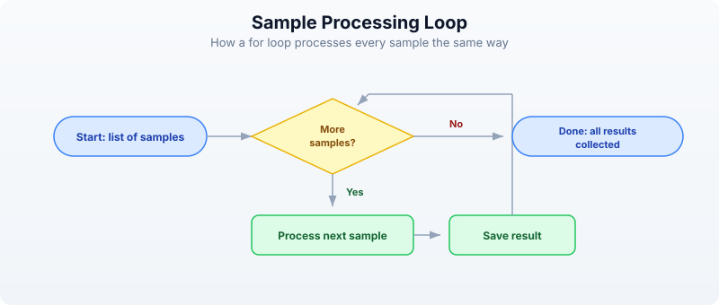
Here is a more practical example — processing actual sequences:
# Calculate GC content for each sequence
let sequences = [dna"ATCGATCG", dna"GCGCGCGC", dna"AATTAATT"]
for seq in sequences {
let gc = gc_content(seq)
let gc_pct = round(gc * 100.0, 1)
println(f"{seq} -> GC: {gc_pct}%")
}
Conditions: Quality Control Decisions
Every lab has QC checkpoints. Is the concentration high enough? Is the sample contaminated? Did we get enough reads? In code, you make these decisions with if, else if, and else.
# Making QC decisions in code — just like at the bench
let read_count = 15000000
let gc_bias = 0.52
let duplication_rate = 0.15
if read_count < 1000000 {
println("FAIL: Too few reads — resequence")
} else if duplication_rate > 0.3 {
println("WARNING: High duplication — check library prep")
} else {
println("PASS: Sample meets QC thresholds")
}
You can combine conditions with and and or:
# Multiple criteria
let reads = 20000000
let quality = 32.5
if reads > 10000000 and quality > 30.0 {
println("High-quality sample — proceed to analysis")
} else {
println("Sample needs review")
}
Conditions are especially powerful inside loops. Here is QC on a whole batch:
let samples = [
{name: "S001", reads: 25000000, quality: 35.2},
{name: "S002", reads: 500000, quality: 28.7},
{name: "S003", reads: 18000000, quality: 33.1},
{name: "S004", reads: 12000000, quality: 22.0}
]
for s in samples {
if s.reads < 1000000 {
println(f" {s.name}: FAIL (too few reads: {s.reads})")
} else if s.quality < 25.0 {
println(f" {s.name}: FAIL (low quality: {s.quality})")
} else {
println(f" {s.name}: PASS")
}
}
Functions: Reusable Protocols
A function is a reusable protocol. You write it once, name it, and use it whenever you need it — just like an SOP in your lab manual.
# A function is a reusable protocol
fn qc_check(reads, min_reads) {
if reads < min_reads {
"FAIL"
} else {
"PASS"
}
}
# Use it on any sample
println(qc_check(25000000, 1000000)) # PASS
println(qc_check(500000, 1000000)) # FAIL
println(qc_check(12000000, 5000000)) # PASS
The beauty of functions is that when you change your QC threshold, you change it in one place — not in 50 spreadsheet cells.
Functions can take any number of inputs and return a result. The last expression in the function is the result (no need to write “return”):
# Calculate fold change between conditions
fn fold_change(control, treated) {
round(treated / control, 2)
}
println(f"FC: {fold_change(5.2, 12.8)}") # 2.46
println(f"FC: {fold_change(8.1, 7.9)}") # 0.98
println(f"FC: {fold_change(3.4, 15.2)}") # 4.47
You can use functions together with loops for powerful batch processing:
# Apply QC to every sample
let results = [12000000, 500000, 8000000, 25000000]
|> map(|r| {reads: r, status: qc_check(r, 1000000)})
for r in results {
println(f"Reads: {r.reads} -> {r.status}")
}
The |r| ... syntax is a shorthand function — a quick, unnamed protocol you use once and throw away. Think of it as a sticky note with one instruction, versus a full SOP in the lab manual.
Pipes: Connecting Steps Together
In the lab, you chain steps: take sample, extract DNA, measure concentration, decide if you have enough, proceed. Each step feeds into the next. Pipes (|>) work the same way in BioLang — the result of one step flows into the next.
# Lab protocol as pipes:
# Take sample -> extract DNA -> measure concentration -> decide -> proceed
# In BioLang, pipes connect processing steps:
let result = dna"ATGCGATCGATCGATCGATCGATCG"
|> gc_content()
|> round(3)
println(f"GC content: {result}")
Read it left to right: start with a DNA sequence, calculate its GC content, round to 3 decimal places. The |> operator takes the result from the left side and feeds it as the first input to the right side.
Without pipes, you would nest functions inside each other, which gets hard to read:
# Without pipes — hard to follow
let result_nested = round(gc_content(dna"ATGCGATCGATCGATCGATCGATCG"), 3)
println(f"Same result: {result_nested}")
Both produce the same answer, but the pipe version reads like English: “take this sequence, get its GC content, round it.”
Here is a more realistic pipeline:
# Multi-step analysis pipeline
let sequences = [
dna"ATCGATCGATCG",
dna"GCGCGCGCGCGC",
dna"ATATATATATATAT",
dna"GCGCATATAGCGC",
dna"TTTTTAAAAACCCCC"
]
let gc_rich_count = sequences
|> map(|s| {seq: s, gc: gc_content(s)})
|> filter(|r| r.gc > 0.5)
|> len()
println(f"{gc_rich_count} out of {len(sequences)} sequences are GC-rich")
Read the pipeline step by step:
- Start with a list of sequences
map: for each sequence, create a record with the sequence and its GC contentfilter: keep only records where GC content is above 50%len: count how many passed the filter
This is the power of pipes — complex multi-step analyses that read like a protocol.
Errors: When Things Go Wrong
Code errors are like failed experiments — they give you information. A PCR that does not work tells you the primers are wrong, the temperature is off, or the DNA is degraded. Code errors tell you exactly what went wrong and where.
# Errors are informative, not catastrophic
try {
let x = int("not_a_number")
println(f"This won't print: {x}")
} catch e {
println(f"Error: {e}")
# Just like a failed PCR tells you something useful
}
The try/catch pattern says: “try this, and if it fails, do this instead.” It prevents your whole analysis from crashing when one step goes wrong — like having a backup plan in your protocol.
Common errors you will see:
| Error message | What it means | Lab analogy |
|---|---|---|
| “undefined variable” | You forgot let | Unlabeled tube |
| “type mismatch” | Wrong data type | Wrong reagent |
| “index out of bounds” | Position does not exist | Tube slot is empty |
| “division by zero” | Dividing by zero | Dilution with zero volume |
Do not fear errors. Read them, understand them, fix them. Every error makes you a better programmer, just like every failed experiment makes you a better scientist.
Your First Complete Analysis
Let us combine everything into a realistic mini-project. You have gene expression data from a control and treated condition, and you want to find which genes are upregulated.
# Experiment: Analyze gene expression across treatments
let samples = [
{gene: "BRCA1", control: 5.2, treated: 12.8},
{gene: "TP53", control: 8.1, treated: 7.9},
{gene: "EGFR", control: 3.4, treated: 15.2},
{gene: "MYC", control: 6.7, treated: 6.5},
{gene: "KRAS", control: 4.1, treated: 11.3}
]
# Calculate fold changes
fn fold_change(control, treated) {
round(treated / control, 2)
}
let results = samples |> map(|s| {
gene: s.gene,
fold_change: fold_change(s.control, s.treated),
direction: if s.treated > s.control { "UP" } else { "DOWN" }
})
# Find significantly upregulated genes (fold change > 2)
let upregulated = results
|> filter(|r| r.fold_change > 2.0)
|> sort_by(|r| r.fold_change)
|> reverse()
println("=== Upregulated Genes (FC > 2.0) ===")
for gene in upregulated {
println(f" {gene.gene}: {gene.fold_change}x {gene.direction}")
}
println(f"\nTotal: {len(upregulated)} of {len(samples)} genes upregulated")
Let us trace through what this does:
- Data: five genes, each with a control and treated expression value
- Function:
fold_changecalculates the ratio and rounds it - Map: transforms each sample into a result with fold change and direction
- Filter: keeps only genes with fold change above 2.0
- Sort and reverse: orders by fold change, highest first
- Print: displays the results
This is a complete analysis pipeline. It is reproducible (run it again, get the same answer), scalable (add 500 more genes to the list, nothing else changes), and readable (anyone can follow the logic).
Common Mistakes and How to Fix Them
Every programmer makes these mistakes. They are not signs that you are doing it wrong — they are a normal part of learning.
Forgetting let
# Wrong — x is not defined
# x = 42
# print(x)
# Right — use let to create a variable
let x = 42
println(x)
Wrong type
# Wrong — gc_content needs DNA, not a string
# let gc = gc_content("ATGCGA")
# Right — use a DNA literal
let gc = gc_content(dna"ATGCGA")
println(f"GC: {gc}")
Positions start at 0, not 1
In biology, we count from 1 (base 1, exon 1). In most programming, counting starts at 0. This trips up everyone at first. Just remember: the first item is at position 0.
Using = when you mean ==
# Single = assigns a value
let x = 5
# Double == compares values
if x == 5 {
println("x is five")
}
Exercises
Exercise 1: QC Filter
Create a list of 5 samples, each with name, read_count, and quality_score fields. Use filter to keep only high-quality samples (quality above 30). Print how many passed.
Hint
let samples = [
{name: "S1", read_count: 20000000, quality_score: 35.0},
# ... add 4 more
]
let passed = samples |> filter(|s| s.quality_score > 30.0)
Exercise 2: Fold Change Function
Write a function calc_fc(control, treated) that returns the fold change (treated divided by control, rounded to 2 decimal places). Test it with at least 3 pairs of values.
Hint
fn calc_fc(control, treated) {
round(treated / control, 2)
}
Exercise 3: GC Content Pipeline
Build a pipeline that takes a list of DNA sequences, calculates GC content for each, finds the average GC content using mean, and prints a summary.
Hint
let seqs = [dna"ATCGATCG", dna"GCGCGCGC", dna"AATTAATT"]
let gc_values = seqs |> map(|s| gc_content(s))
let avg_gc = mean(gc_values)
Exercise 4: Dilution Table
Use nested for loops to print a dilution table. Starting concentrations: [0.1, 0.5, 1.0, 5.0, 10.0]. Dilution factors: [1, 2, 4]. Print each combination.
Hint
let concentrations = [0.1, 0.5, 1.0, 5.0, 10.0]
let dilutions = [1, 2, 4]
for conc in concentrations {
for dil in dilutions {
let final_conc = round(conc / dil, 3)
println(f" {conc} / {dil} = {final_conc}")
}
}
Key Takeaways
- Code is a lab protocol written in a language computers understand
- Variables are labeled tubes —
let name = valuecreates one - Lists are sample racks — ordered collections you can loop through
- Records are notebook entries — groups of related fields accessed with
. - Loops process every sample the same way — write the protocol once
- Conditions make QC decisions —
if/elsebranches based on thresholds - Functions are reusable SOPs — write once, use everywhere
- Pipes (
|>) connect processing steps — like a lab workflow, left to right - Errors are informative — they tell you what went wrong, just like a failed experiment
You do not need to memorize all of this. You will look things up, copy patterns from previous scripts, and gradually build fluency — exactly like learning any other lab technique.
What’s Next
Tomorrow: data structures designed specifically for biology — how to work with collections of sequences, genomic intervals, and tables of results. You will see how BioLang’s built-in types make common bioinformatics tasks concise and safe.
Day 5: Data Structures for Biology
The Problem
You have got 500 gene expression values, 20,000 variants, and 3 reference databases to cross-check. How do you organize this data so your analysis does not drown in complexity?
The difference between a messy script and a clean one is rarely the algorithm. It is the data structure. Pick the right container for your data, and filtering, comparing, and summarizing become one-liners. Pick the wrong one, and you spend hours writing code to work around it.
Today you learn five structures that cover virtually every bioinformatics task: lists, records, tables, sets, and genomic intervals. By the end of this chapter you will know which one to reach for and why.
Lists: Ordered Collections
A list holds items in a specific order. Use lists when sequence matters: time-series measurements, ordered coordinates, ranked gene lists, sample queues.
# Gene expression values in order
let expression = [2.1, 5.4, 3.2, 8.7, 1.1, 6.3]
# Statistics on lists
println(f"Mean: {round(mean(expression), 2)}")
println(f"Median: {round(median(expression), 2)}")
println(f"Stdev: {round(stdev(expression), 2)}")
println(f"Min: {min(expression)}, Max: {max(expression)}")
# Sorting and slicing
let sorted_expr = sort(expression) |> reverse()
let top3 = sorted_expr |> take(3)
println(f"Top 3 values: {top3}")
Expected output:
Mean: 4.47
Median: 4.3
Stdev: 2.65
Min: 1.1, Max: 8.7
Top 3 values: [8.7, 6.3, 5.4]
Lists hold any type. You can filter, transform, and reduce them with pipes:
# Sample names
let samples = ["control_1", "control_2", "treated_1", "treated_2", "treated_3"]
# Filter to treated samples
let treated = samples |> filter(|s| contains(s, "treated"))
println(f"Treated: {treated}")
# Count elements
println(f"Total: {len(samples)}, Treated: {len(treated)}")
Nested lists model matrix-like data when you need something quick:
# Matrix-like data: samples x genes
let data = [
[2.1, 3.4, 5.6],
[1.8, 4.2, 6.1],
[3.0, 2.9, 4.8],
]
# Access: data[1][2] = 6.1 (Sample 2, Gene 3)
println(f"Sample 2, Gene 3: {data[1][2]}")
Records: Structured Metadata
A record groups named fields together. Use records when you have heterogeneous data about a single entity: a gene, a sample, a variant, an experiment.
# A gene record
let gene = {
symbol: "BRCA1",
name: "BRCA1 DNA repair associated",
chromosome: "17",
start: 43044295,
end: 43125483,
strand: "+",
biotype: "protein_coding"
}
# Access fields
println(f"{gene.symbol} on chr{gene.chromosome}")
println(f"Length: {gene.end - gene.start} bp")
println(f"Keys: {keys(gene)}")
# Check if field exists
println(f"Has strand: {has_key(gene, "strand")}")
println(f"Has expression: {has_key(gene, "expression")}")
Expected output:
BRCA1 on chr17
Length: 81188 bp
Keys: [symbol, name, chromosome, start, end, strand, biotype]
Has strand: true
Has expression: false
The most common pattern in bioinformatics is a list of records. Each record describes one item (a variant, a sample, a gene), and the list collects them:
let variants = [
{chrom: "chr17", pos: 43091434, ref_allele: "A", alt_allele: "G", gene: "BRCA1"},
{chrom: "chr17", pos: 7674220, ref_allele: "C", alt_allele: "T", gene: "TP53"},
{chrom: "chr7", pos: 55249071, ref_allele: "C", alt_allele: "T", gene: "EGFR"},
]
# Filter to chromosome 17
let chr17_vars = variants |> filter(|v| v.chrom == "chr17")
println(f"Chr17 variants: {len(chr17_vars)}")
# Extract just gene names
let genes = variants |> map(|v| v.gene)
println(f"Affected genes: {genes}")
Tables: The Bioinformatician’s Workhorse
Tables are the primary structure for analysis results. If you have named columns and multiple rows, you want a table. Differential expression results, sample sheets, variant annotations, QC metrics – all tables.
┌──────┬──────────┬──────────┐
│ gene │ log2fc │ pval │
├──────┼──────────┼──────────┤
│ BRCA1│ 2.4 │ 0.001 │
│ TP53 │ -1.1 │ 0.23 │
│ EGFR │ 3.8 │ 0.000001 │
│ MYC │ 1.9 │ 0.04 │
│ KRAS │ -0.3 │ 0.67 │
└──────┴──────────┴──────────┘
Create a table from a list of records with to_table():
# Creating tables from records
let results = [
{gene: "BRCA1", log2fc: 2.4, pval: 0.001},
{gene: "TP53", log2fc: -1.1, pval: 0.23},
{gene: "EGFR", log2fc: 3.8, pval: 0.000001},
{gene: "MYC", log2fc: 1.9, pval: 0.04},
{gene: "KRAS", log2fc: -0.3, pval: 0.67},
] |> to_table()
println(f"Rows: {nrow(results)}, Columns: {ncol(results)}")
println(f"Columns: {colnames(results)}")
# Filter and sort
let significant = results
|> filter(|r| r.pval < 0.05)
|> arrange("log2fc")
println(significant |> head(5))
Expected output:
Rows: 5, Columns: 3
Columns: [gene, log2fc, pval]
Tables support the operations you know from dplyr or pandas, all connected with pipes:
# select -- choose columns
let gene_pvals = results |> select("gene", "pval")
println(gene_pvals |> head(3))
# mutate -- add or transform columns
let annotated = results |> mutate("significant", |r| r.pval < 0.05)
println(annotated |> head(3))
# group_by + summarize
let direction_table = results
|> mutate("direction", |r| if r.log2fc > 0 { "up" } else { "down" })
|> group_by("direction")
|> summarize(|key, rows| {direction: key, count: len(rows)})
println(direction_table)
Here is what each operation does:
| Operation | Purpose | Example |
|---|---|---|
select | Choose columns | select("gene", "pval") |
filter | Keep rows matching condition | filter(|r| r.pval < 0.05) |
mutate | Add or transform columns | mutate("sig", |r| r.pval < 0.05) |
arrange | Sort rows by column | arrange("log2fc") |
group_by | Group rows by column value | group_by("direction") |
summarize | Aggregate groups | summarize(|k, rows| {g: k, n: len(rows)}) |
head | First N rows | head(3) |
nrow | Row count | nrow(table) |
ncol | Column count | ncol(table) |
colnames | Column names | colnames(table) |
Sets: Unique Membership and Comparisons
A set holds unique items with no duplicates and no particular order. Use sets when you care about membership: Which genes appear in both experiments? Which samples are unique to one cohort? Sets give you Venn diagram logic in code.
# Genes from two experiments
let experiment_a = set(["BRCA1", "TP53", "EGFR", "MYC", "KRAS"])
let experiment_b = set(["TP53", "EGFR", "PTEN", "RB1", "MYC"])
# Set operations
let shared = intersection(experiment_a, experiment_b)
let only_a = difference(experiment_a, experiment_b)
let only_b = difference(experiment_b, experiment_a)
let all_genes = union(experiment_a, experiment_b)
println(f"Shared genes: {shared}")
println(f"Only in A: {only_a}")
println(f"Only in B: {only_b}")
println(f"Total unique: {len(all_genes)}")
Expected output:
Shared genes: {TP53, EGFR, MYC}
Only in A: {BRCA1, KRAS}
Only in B: {PTEN, RB1}
Total unique: 7
Sets are the natural fit whenever you ask “which items overlap?” – a question that appears constantly in bioinformatics. Gene panels, GO term lists, differentially expressed gene sets, sample cohorts.
Genomic Intervals: Coordinates and Overlaps
Genomic data lives on coordinates. A promoter spans chr17:43125283-43125483. An exon runs from chr17:43124017 to chr17:43124115. You need to ask: do these regions overlap? What falls within this window?
BioLang has built-in interval types and an interval tree for fast overlap queries:
# Working with genomic regions
let promoter = interval("chr17", 43125283, 43125483)
let exon1 = interval("chr17", 43124017, 43124115)
let enhancer = interval("chr17", 43125000, 43125600)
println(f"Promoter: {promoter}")
println(f"Exon 1: {exon1}")
println(f"Enhancer: {enhancer}")
# Build an interval tree for fast overlap queries
let regions = [
{chrom: "chr17", start: 43125283, end: 43125483, name: "promoter"},
{chrom: "chr17", start: 43124017, end: 43124115, name: "exon1"},
{chrom: "chr17", start: 43125000, end: 43125600, name: "enhancer"},
] |> to_table()
let tree = interval_tree(regions)
# Query: what overlaps this 100bp window?
let hits = query_overlaps(tree, "chr17", 43125300, 43125400)
println(f"Overlapping regions: {nrow(hits)}")
println(hits)
The interval_tree function builds a searchable index from a table containing chrom, start, and end columns. The query_overlaps function takes the tree, a chromosome name, a start position, and an end position, and returns a table of matching rows. This is the same algorithm that powers tools like bedtools – but built into the language.
Choosing the Right Structure
When you sit down with a new dataset, ask yourself three questions:
- Does my data have named fields? (record or table)
- Do I have one item or many? (record vs table)
- Do I need order, or just membership? (list vs set)
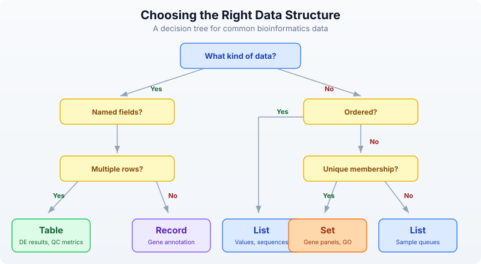
Here is the summary:
| Structure | Use When | Example |
|---|---|---|
| List | Ordered items, sequences | Gene expression values, sample queues |
| Record | Named fields, one item | Sample metadata, gene annotation |
| Table | Named columns, many rows | DE results, variant tables, QC metrics |
| Set | Unique membership, comparisons | Gene panels, GO terms, sample cohorts |
| Interval | Genomic coordinates | BED regions, exons, promoters |
Real-World Pattern: Combining Structures
Real analyses combine multiple structures. Here is a pattern you will see repeatedly: samples described by records, gene sets for comparison, and results collected into a table.
# Combining data structures in a real analysis
# Each sample is a record with a set of detected genes
let samples = [
{id: "S1", condition: "control", genes: set(["BRCA1", "TP53", "EGFR"])},
{id: "S2", condition: "treated", genes: set(["TP53", "MYC", "KRAS", "EGFR"])},
{id: "S3", condition: "treated", genes: set(["BRCA1", "TP53", "PTEN"])},
]
# Find genes detected in ALL samples
let all_genes = samples |> map(|s| s.genes)
let common = all_genes |> reduce(|a, b| intersection(a, b))
println(f"Core genes (in all samples): {common}")
# Find genes unique to treated samples
let treated_genes = samples
|> filter(|s| s.condition == "treated")
|> map(|s| s.genes)
|> reduce(|a, b| union(a, b))
let control_genes = samples
|> filter(|s| s.condition == "control")
|> map(|s| s.genes)
|> reduce(|a, b| union(a, b))
let treatment_specific = difference(treated_genes, control_genes)
println(f"Treatment-specific genes: {treatment_specific}")
# Build a summary table
let summary = [
{category: "Core (all samples)", count: len(common)},
{category: "Treatment-specific", count: len(treatment_specific)},
{category: "Control genes", count: len(control_genes)},
{category: "Treated genes", count: len(treated_genes)},
] |> to_table()
println(summary)
Expected output:
Core genes (in all samples): {TP53}
Treatment-specific genes: {MYC, KRAS, PTEN}
Notice how naturally the structures compose. Records hold per-sample metadata. Sets enable Venn-diagram logic. Lists let you iterate over samples with map and filter. Tables collect the final summary. Each structure does what it is best at.
Exercises
-
List statistics. Create a list of 10 expression values (make up realistic numbers between 0 and 50). Compute the mean, median, min, max, and standard deviation. Sort the list in descending order and print the top 5 values.
-
Variant record. Build a record representing a VCF variant with fields:
chrom,pos,ref_allele,alt_allele,qual,filter_status,gene. Print each field. Usekeys()to list all field names andhas_key()to check for a field calledannotation. -
Table filtering. Create a table from 5 gene records, each with
gene,chromosome, andexpressionfields. Filter to genes on chromosome 17. Useselectto show only thegeneandexpressioncolumns. -
Set overlap. Define two gene panels as sets: a cancer panel (10 genes) and a cardiac panel (10 genes) with 3 genes in common. Use
intersection,difference, andunionto find shared genes, genes unique to each panel, and the total gene count. -
Interval queries. Create a table with 3 genomic regions (give them names like “promoter”, “exon1”, “enhancer” with realistic coordinates on the same chromosome). Build an
interval_treeand usequery_overlapsto find which regions overlap a given 200bp window.
Key Takeaways
-
Lists hold ordered data. Use them for expression values, sample queues, ranked results. Key operations:
sort,filter,map,reduce,take. -
Records group named fields. Use them for metadata about a single entity – one gene, one sample, one experiment. Access fields with dot notation. Check fields with
has_key. -
Tables are the workhorse. Named columns, many rows. Use
to_table()to create them from lists of records. Manipulate withselect,filter,mutate,arrange,group_by,summarize. -
Sets eliminate duplicates and enable Venn-diagram logic.
intersectionfinds shared items,differencefinds unique items,unioncombines everything. -
Intervals represent genomic coordinates. Build an
interval_treefor fast overlap queries withquery_overlaps. This is the same approach that powers bedtools. -
Choose the right structure upfront. It makes everything downstream easier. When in doubt: if it has named fields and multiple rows, it is a table. If you need unique membership, it is a set. If order matters, it is a list.
What’s Next
Week 1 is complete. You now have the foundations: biological sequences, sequence analysis, coding skills, and data structures. Starting in Week 2, you will work with real sequencing data. Day 6 opens with FASTA and FASTQ files – the raw material of genomics.
Day 6: Reading Sequencing Data
The Problem
Your sequencing facility sends you a 50 GB FASTQ file. It contains millions of short DNA reads, each with a quality score for every base. Some reads are garbage — adapter contamination, low quality, too short. Before any analysis, you must separate the good reads from the bad. This is quality control, and it is the first step of every sequencing project.
Today is the first day we work with real bioinformatics data formats. Everything before this was foundations. From here on, the biology gets real.
What Is a FASTQ File?
FASTQ is the universal format for sequencing data. Every sequencing platform — Illumina, PacBio, Oxford Nanopore — outputs FASTQ files. Each record in a FASTQ file has exactly four lines:
@SRR123456.1 length=150 <- Read name (starts with @)
ATCGATCGATCGATCGATCG... <- DNA sequence
+ <- Separator (always a single +)
IIIIIIIHHHHHGGGFFF... <- Quality scores (ASCII-encoded)
The first line is the read identifier — it starts with @ and usually contains a unique ID, sometimes with metadata like instrument name, flowcell, and tile coordinates.
The second line is the DNA sequence itself — the bases called by the sequencer.
The third line is a separator. It is always +, sometimes followed by the read name again.
The fourth line is the quality string. Every character encodes the confidence the sequencer has in the corresponding base call. This is where the real information lives.
Phred Quality Scores
Quality scores use the Phred scale, named after the original base-calling program from the Human Genome Project. The formula is:
Q = -10 * log10(P_error)
A higher Q means lower error probability. The score is encoded as an ASCII character by adding 33 to the numeric value (this is the Sanger/Illumina 1.8+ encoding used by all modern sequencers):
| Phred Score | Error Rate | Accuracy | ASCII Character |
|---|---|---|---|
| 10 | 1 in 10 | 90% | + |
| 20 | 1 in 100 | 99% | 5 |
| 30 | 1 in 1,000 | 99.9% | ? |
| 40 | 1 in 10,000 | 99.99% | I |
Most Illumina sequencers produce reads with average quality between Q28 and Q35. A Q30 average is generally considered good. Reads below Q20 are usually discarded.
To decode: take the ASCII value of the character and subtract 33. The character I has ASCII value 73, so its Phred score is 73 - 33 = 40.
Reading FASTQ Files in BioLang
BioLang provides two ways to read FASTQ files: eager loading and streaming.
Eager Loading
Requires CLI: This example uses file I/O not available in the browser. Run with
bl run.
# Read a FASTQ file (eager --- loads all into memory)
let reads = read_fastq("examples/sample.fastq")
println(f"Total reads: {len(reads)}")
println(f"First read: {first(reads)}")
Total reads: 100
First read: {name: "read_001", seq: "ATCGATCG...", qual: "IIIIIIII..."}
Each read is a record with three fields:
name— the read identifier (without the@)seq— the DNA sequencequal— the quality string (same length asseq)
Streaming
For large files, loading everything into memory is impractical. A 50 GB FASTQ file might contain 300 million reads. Use streaming instead:
Requires CLI: This example uses file I/O not available in the browser. Run with
bl run.
# Streaming --- process one at a time, constant memory
let stream = fastq("data/large_sample.fastq")
let count = stream |> count()
println(f"Read count: {count}")
Read count: 300000000
| Function | Memory | Use Case |
|---|---|---|
read_fastq() | Loads all reads | Small files (< 1 GB), random access needed |
fastq() | Constant (one read at a time) | Large files, sequential processing |
The rule of thumb: if the file fits comfortably in RAM, use read_fastq(). Otherwise, use fastq(). For this chapter, we use read_fastq() because our sample data is small.
Exploring Read Quality
Before filtering, you need to know what you are working with. BioLang’s read_stats() gives you a summary in one call:
Requires CLI: This example uses file I/O not available in the browser. Run with
bl run.
# Quality statistics for a FASTQ file
let stats = read_stats("examples/sample.fastq")
println(f"Total reads: {stats.total_reads}")
println(f"Total bases: {stats.total_bases}")
println(f"Mean length: {round(stats.mean_length, 1)}")
println(f"Mean quality: {round(stats.mean_quality, 1)}")
println(f"GC content: {round(stats.gc_content * 100, 1)}%")
Total reads: 100
Total bases: 15000
Mean length: 150.0
Mean quality: 28.4
GC content: 48.2%
For deeper analysis, you can compute per-read quality scores using pipes:
Requires CLI: This example uses file I/O not available in the browser. Run with
bl run.
# Per-read quality analysis
let reads = read_fastq("examples/sample.fastq")
let qualities = reads |> map(|r| mean_phred(r.qual))
println(f"Quality range: {round(min(qualities), 1)} - {round(max(qualities), 1)}")
println(f"Mean quality: {round(mean(qualities), 1)}")
Quality range: 12.3 - 38.7
Mean quality: 28.4
The mean_phred() function takes a quality string and returns the average Phred score across all bases. This is the single most useful number for judging a read.
Quality Visualization
Requires CLI: This example uses file I/O not available in the browser. Run with
bl run.
# Quality distribution as ASCII plot
let reads = read_fastq("examples/sample.fastq")
reads
|> map(|r| mean_phred(r.qual))
|> quality_plot()
Quality Distribution
Q10-15: #### (8)
Q15-20: ######## (15)
Q20-25: ########## (22)
Q25-30: ############ (28)
Q30-35: ########## (19)
Q35-40: ###### (8)
This immediately tells you the shape of your quality distribution. A good library will be skewed toward the right (higher quality). If most reads pile up below Q20, something went wrong with sequencing.
Filtering Reads
Not every read deserves to continue to analysis. Filtering removes reads that would introduce noise or artifacts. A typical filtering pipeline applies three checks:
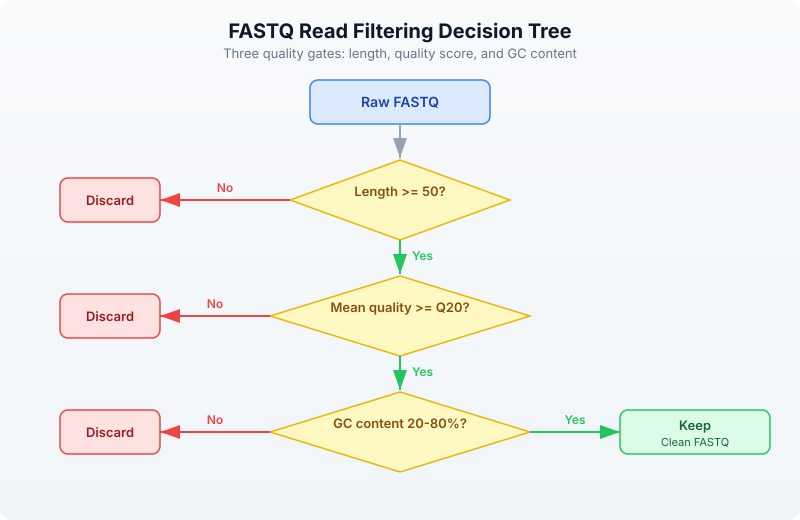
Built-in Filtering
BioLang provides filter_reads() for the most common quality filters:
Requires CLI: This example uses file I/O not available in the browser. Run with
bl run.
# Filter reads by quality and length
let reads = read_fastq("examples/sample.fastq")
let clean = reads |> filter_reads(min_length: 50, min_quality: 20)
println(f"Before: {len(reads)} reads")
println(f"After: {len(clean)} reads")
println(f"Kept: {round(len(clean) / len(reads) * 100, 1)}%")
Before: 100 reads
After: 82 reads
Kept: 82.0%
Custom Filtering with Pipes
For more specific criteria, compose your own filters using filter():
Requires CLI: This example uses file I/O not available in the browser. Run with
bl run.
# Custom filtering with pipes
let reads = read_fastq("examples/sample.fastq")
let clean = reads
|> filter(|r| len(r.seq) >= 50)
|> filter(|r| mean_phred(r.qual) >= 20)
|> filter(|r| gc_content(r.seq) > 0.2 and gc_content(r.seq) < 0.8)
|> collect()
println(f"Clean reads: {len(clean)}")
Clean reads: 78
Each filter() call removes reads that fail the predicate. The pipe chain reads like a checklist: keep reads that are long enough, high enough quality, and have reasonable GC content.
Why filter on GC content? Extreme GC values (below 20% or above 80%) often indicate contamination — adapter dimers, primer artifacts, or DNA from a different organism. A typical mammalian genome has ~40% GC content.
Trimming Low-Quality Bases
Sometimes a read has good bases at the start but degrades toward the end. This is normal — Illumina quality drops along the read. Rather than throwing away the entire read, you can trim off the bad bases:
Requires CLI: This example uses file I/O not available in the browser. Run with
bl run.
# Quality trimming --- remove low-quality bases from ends
let reads = read_fastq("examples/sample.fastq")
let trimmed = trim_quality(reads, min_quality: 20)
# Check how trimming affected lengths
let original_lengths = reads |> map(|r| len(r.seq))
let trimmed_lengths = trimmed |> map(|r| len(r.seq))
println(f"Mean length before: {round(mean(original_lengths), 1)}")
println(f"Mean length after: {round(mean(trimmed_lengths), 1)}")
Mean length before: 150.0
Mean length after: 138.6
trim_quality() uses a sliding window from the 3’ end of the read. It removes bases until the average quality in the window meets the threshold. This is the same algorithm used by Trimmomatic’s SLIDINGWINDOW mode.
After trimming, you typically filter again to remove reads that became too short:
let trimmed_and_filtered = trimmed
|> filter(|r| len(r.seq) >= 50)
|> collect()
println(f"Reads after trim + length filter: {len(trimmed_and_filtered)}")
Adapter Detection and Removal
Sequencing adapters are synthetic DNA sequences ligated to your library fragments. If the insert is shorter than the read length, the sequencer reads through into the adapter. These adapter sequences must be removed because they are not part of the genome.
Requires CLI: This example uses file I/O not available in the browser. Run with
bl run.
# Detect adapters in reads
let adapters = detect_adapters("examples/sample.fastq")
println(f"Detected adapters: {adapters}")
Detected adapters: [AGATCGGAAGAGC, CTGTCTCTTATACACATCT]
Requires CLI: This example uses file I/O not available in the browser. Run with
bl run.
# Trim adapters
let reads = read_fastq("examples/sample.fastq")
let trimmed = trim_adapters(reads)
println(f"Adapter-trimmed reads: {len(trimmed)}")
Adapter-trimmed reads: 100
detect_adapters() scans the reads and identifies overrepresented sequences at read ends — these are almost always adapters. trim_adapters() removes any adapter contamination it finds.
Common adapters include:
- Illumina TruSeq:
AGATCGGAAGAGC - Nextera:
CTGTCTCTTATACACATCT - Small RNA:
TGGAATTCTCGG
K-mer Analysis for Quality Assessment
K-mers are subsequences of length k. Counting k-mer frequencies across your reads can reveal contamination, library bias, or technical artifacts. In a clean library, k-mer frequencies should follow a roughly normal distribution. Spikes at specific k-mers suggest adapter contamination or PCR duplicates.
Requires CLI: This example uses file I/O not available in the browser. Run with
bl run.
# K-mer frequency analysis
let reads = read_fastq("examples/sample.fastq")
# Count k-mers in the first read
let first_seq = first(reads).seq
let kmer_freq = kmer_count(first_seq, 5)
println(f"5-mers found: {nrow(kmer_freq)}")
println(kmer_freq |> head(10))
5-mers found: 146
kmer | count
ATCGA | 3
TCGAT | 3
CGATC | 2
GATCG | 2
GCTAG | 2
TAGCA | 2
ACGTA | 1
CGTAC | 1
GTACG | 1
TACGT | 1
If you see a single 5-mer appearing hundreds of times, that is a red flag — it likely corresponds to adapter sequence or a PCR artifact.
Writing Clean Reads
After filtering and trimming, save the clean reads to a new FASTQ file:
Requires CLI: This example uses file I/O not available in the browser. Run with
bl run.
# Save filtered reads to a new file
let reads = read_fastq("examples/sample.fastq")
let clean = reads |> filter_reads(min_length: 50, min_quality: 20)
write_fastq(clean, "results/clean_reads.fastq")
println(f"Wrote {len(clean)} clean reads")
Wrote 82 clean reads
The output FASTQ preserves the original read names, sequences (potentially trimmed), and quality scores. Downstream tools like aligners (BWA, Bowtie2) expect standard FASTQ input, so this step ensures compatibility.
Complete QC Pipeline
Here is a complete quality control pipeline that combines everything from this chapter. This is the kind of script you would run on every new sequencing dataset:
Requires CLI: This example uses file I/O not available in the browser. Run with
bl run.
# Complete FASTQ QC Pipeline
println("=== FASTQ Quality Control Pipeline ===")
# Step 1: Read stats
let stats = read_stats("examples/sample.fastq")
println(f"\n1. Raw data summary:")
println(f" Reads: {stats.total_reads}")
println(f" Bases: {stats.total_bases}")
println(f" Mean quality: {round(stats.mean_quality, 1)}")
# Step 2: Load and filter
let reads = read_fastq("examples/sample.fastq")
let clean = reads
|> filter(|r| len(r.seq) >= 50)
|> filter(|r| mean_phred(r.qual) >= 20)
|> collect()
let pass_rate = round(len(clean) / len(reads) * 100, 1)
println(f"\n2. Filtering results:")
println(f" Input: {len(reads)} reads")
println(f" Passed: {len(clean)} reads ({pass_rate}%)")
# Step 3: Quality summary of clean reads
let clean_quals = clean |> map(|r| mean_phred(r.qual))
println(f"\n3. Clean read quality:")
println(f" Mean: {round(mean(clean_quals), 1)}")
println(f" Min: {round(min(clean_quals), 1)}")
# Step 4: GC content check
let gc_values = clean |> map(|r| gc_content(r.seq))
println(f"\n4. GC content:")
println(f" Mean GC: {round(mean(gc_values) * 100, 1)}%")
# Step 5: Write output
write_fastq(clean, "results/qc_passed.fastq")
println(f"\n5. Output written to results/qc_passed.fastq")
println("=== Pipeline complete ===")
=== FASTQ Quality Control Pipeline ===
1. Raw data summary:
Reads: 100
Bases: 15000
Mean quality: 28.4
2. Filtering results:
Input: 100 reads
Passed: 82 reads (82.0%)
3. Clean read quality:
Mean: 30.6
Min: 20.3
4. GC content:
Mean GC: 49.1%
5. Output written to results/qc_passed.fastq
=== Pipeline complete ===
This pipeline takes about 5 seconds on a 100-read sample file. On a real 50 GB FASTQ with 300 million reads, you would switch to streaming with fastq() and it would take a few minutes.
Exercises
-
Top 10 longest reads. Write a script that reads a FASTQ file and prints the 10 longest reads by sequence length. Hint: use
sort()on a mapped list of lengths, orarrange()on a table. -
Q30 percentage. Calculate what percentage of reads have a mean quality score >= Q30. This is a standard QC metric reported by sequencing facilities.
-
Strict base filter. Build a custom filter that keeps only reads where every base has quality >= Q15. Use
min_phred()instead ofmean_phred(). How many reads survive compared to the mean-based filter? -
GC shift analysis. Compare GC content distributions before and after quality filtering. Does removing low-quality reads change the GC distribution? Calculate mean GC for raw reads and for filtered reads.
Key Takeaways
- FASTQ = sequence + quality for every base. Four lines per record, always.
- Phred scores: Q20 = 99% accurate, Q30 = 99.9%, Q40 = 99.99%. Higher is better.
- Always QC before analysis — garbage in, garbage out. This is not optional.
- Use
fastq()streaming for large files,read_fastq()for small ones. filter_reads()handles standard filtering; customfilter()chains handle special cases.trim_quality()removes low-quality bases from read ends — better than discarding entire reads.- K-mer analysis can reveal contamination and artifacts before they corrupt your results.
What’s Next
Tomorrow we tackle the rest of the bioinformatics file format zoo: FASTA for reference genomes, VCF for variants, BED for genomic regions, GFF for gene annotations, and BAM for alignments. You will learn when to use each format and how to convert between them.
Day 7: Bioinformatics File Formats
The Problem
Bioinformatics has accumulated dozens of file formats over 30 years. Each stores different information in a different way. FASTA for sequences, VCF for variants, BED for regions, GFF for annotations, BAM for alignments. Knowing which format holds what — and how to read each — is essential.
Every analysis you will ever do starts by reading one of these files and ends by writing another. Get the formats wrong and your pipeline silently produces garbage. Get the coordinate systems confused and every interval is off by one. Today we build the mental map that prevents those mistakes.
The Format Landscape
Where does each format appear in a typical genomics workflow?

The sequencer produces raw reads in FASTQ (Day 6). Those reads get aligned to a reference genome (FASTA), producing alignments (SAM/BAM). Variant callers compare the alignments to the reference and output differences (VCF). Annotators overlay gene models (GFF/GTF) and region lists (BED) onto the variants.
Every arrow in that diagram is a file format conversion. Today you learn to read and write each one.
FASTA — Reference Sequences
FASTA is the oldest and simplest bioinformatics format. It stores named sequences — DNA, RNA, or protein. Every reference genome, every transcript database, every protein collection uses FASTA.
Anatomy
>chr1 Homo sapiens chromosome 1 <- Header line (starts with >)
ATCGATCGATCGATCGATCGATCGATCG <- Sequence (can span multiple lines)
ATCGATCGATCGATCG
>chr2 Homo sapiens chromosome 2 <- Next sequence
GCGCGCATATATATGCGCGCGCGC
>BRCA1_mRNA NM_007294.4 <- Can be any named sequence
ATGGATTTATCTGCTCTTCGCGTTGAAG
The header line starts with > followed by an identifier and optional description. The sequence follows on one or more lines. There is no quality information — FASTA is for known sequences, not raw reads.
Reading FASTA
Requires CLI: This example uses file I/O not available in the browser. Run with
bl run.
let seqs = read_fasta("data/sequences.fasta")
println(f"Sequences: {len(seqs)}")
for s in seqs {
println(f" {s.id}: {len(s.seq)} bp, GC={round(gc_content(s.seq) * 100, 1)}%")
}
Sequences: 5
chr1_fragment: 200 bp, GC=49.0%
chr17_brca1: 150 bp, GC=52.0%
chrX_region: 180 bp, GC=41.1%
ecoli_16s: 120 bp, GC=54.2%
insulin_mrna: 100 bp, GC=47.0%
Each sequence is a record with two fields:
id— the identifier from the header line (text after>up to the first space)seq— the full sequence as a string
Streaming for Large Genomes
A human reference genome is 3.1 billion bases across 24 chromosomes. Loading it all into memory uses ~3 GB. For large FASTA files, stream instead:
Requires CLI: This example uses file I/O not available in the browser. Run with
bl run.
let total_bases = fasta("data/sequences.fasta")
|> map(|s| len(s.seq))
|> reduce(|a, b| a + b)
println(f"Total bases: {total_bases}")
Total bases: 750
FASTA Statistics
Requires CLI: This example uses file I/O not available in the browser. Run with
bl run.
let stats = fasta_stats("data/sequences.fasta")
println(f"Sequences: {stats.count}")
println(f"Total bases: {stats.total_bases}")
println(f"Mean length: {round(stats.mean_length, 1)}")
Sequences: 5
Total bases: 750
Mean length: 150.0
VCF — Variant Calls
VCF (Variant Call Format) stores genetic variants — positions where a sample’s DNA differs from the reference genome. It is the standard output of every variant caller (GATK, bcftools, DeepVariant, etc.).
Anatomy
##fileformat=VCFv4.3 <- Meta-information lines
##INFO=<ID=DP,Number=1,Type=Integer,Description="Read Depth">
##FILTER=<ID=LowQual,Description="Low quality">
#CHROM POS ID REF ALT QUAL FILTER INFO <- Column header
chr1 100 . A G 30 PASS DP=45 <- SNP (A -> G)
chr1 200 rs123 CT C 45 PASS DP=62 <- Deletion (T deleted)
chr17 43091 . G A 99 PASS DP=88 <- High-quality SNP
chr17 43200 . C T 12 LowQual DP=5 <- Low-quality, filtered
The file has three sections:
- Meta-information lines (start with
##) — describe the file structure, INFO fields, FILTER definitions, and sample metadata. - Column header (starts with
#CHROM) — names the eight mandatory columns plus any sample columns. - Data lines — one variant per line.
The key columns:
- CHROM and POS — where the variant is (1-based coordinate)
- REF and ALT — what the reference has vs what the sample has
- QUAL — confidence score (Phred-scaled)
- FILTER —
PASSif the variant passed all filters, otherwise a filter name - INFO — semicolon-delimited key=value annotations
Reading VCF
Requires CLI: This example uses file I/O not available in the browser. Run with
bl run.
let variants = read_vcf("data/variants.vcf")
println(f"Total variants: {len(variants)}")
# Examine first variant
let v = first(variants)
println(f"Chrom: {v.chrom}, Pos: {v.pos}, Ref: {v.ref}, Alt: {v.alt}")
# Filter to passing variants
let passed = variants |> filter(|v| v.filter == "PASS")
println(f"PASS variants: {len(passed)}")
# Count by chromosome
let by_chrom = passed
|> to_table()
|> group_by("chrom")
|> summarize(|chrom, rows| {chrom: chrom, count: len(rows)})
println(by_chrom)
Total variants: 10
Chrom: chr1, Pos: 100, Ref: A, Alt: G
PASS variants: 8
chrom | count
chr1 | 3
chr17 | 3
chrX | 2
Variant Types
Not all variants are the same. The REF and ALT lengths tell you what kind of variant you have:
| REF length | ALT length | Variant Type | Example |
|---|---|---|---|
| 1 | 1 | SNP (single nucleotide polymorphism) | A -> G |
| > 1 | 1 | Deletion | CT -> C |
| 1 | > 1 | Insertion | A -> ATG |
| > 1 | > 1 | Complex | CT -> GA |
# Classify variants by type
let snps = variants |> filter(|v| len(v.ref) == 1 and len(v.alt) == 1)
let indels = variants |> filter(|v| len(v.ref) != len(v.alt))
println(f"SNPs: {len(snps)}")
println(f"Indels: {len(indels)}")
SNPs: 7
Indels: 3
Streaming Large VCF Files
Whole-genome VCF files can contain millions of variants. Stream them:
Requires CLI: This example uses file I/O not available in the browser. Run with
bl run.
let snp_count = vcf("data/variants.vcf")
|> filter(|v| len(v.ref) == 1 and len(v.alt) == 1)
|> count()
println(f"SNPs (streaming): {snp_count}")
SNPs (streaming): 7
BED — Genomic Regions
BED (Browser Extensible Data) stores genomic intervals — regions of a chromosome with a start and end position. It is used for gene coordinates, exon boundaries, peaks from ChIP-seq, target capture regions, blacklisted regions, and anything else that can be described as “chromosome X from position A to position B.”
Anatomy
chr1 1000 2000 gene_A 100 + <- 6-column BED
chr1 3000 4000 gene_B 200 -
chr17 43044295 43125483 BRCA1 0 +
The columns are tab-separated:
- chrom — chromosome name
- start — start position (0-based)
- end — end position (exclusive, half-open)
- name — feature name (optional, columns 4+)
- score — numeric score (optional)
- strand —
+or-(optional)
The Critical Coordinate Convention
BED uses 0-based, half-open coordinates. This is the single most important thing to remember about BED files.
Position: 0 1 2 3 4 5 6 7 8 9
Bases: A T C G A T C G A T
BED: chr1 2 5 <- Covers bases at positions 2, 3, 4 (= C, G, A)
<- Start is inclusive, end is exclusive
<- Length = end - start = 5 - 2 = 3
VCF/GFF: chr1 3 <- Position 3 refers to the base at 1-based position 3
<- Which is the same base C at 0-based position 2
This means:
- BED
chr1 100 200covers 100 bases (positions 100 through 199) - The length of a BED interval is always
end - start - To convert VCF position (1-based) to BED: subtract 1 from the start
Reading BED
Requires CLI: This example uses file I/O not available in the browser. Run with
bl run.
let regions = read_bed("data/regions.bed")
println(f"Regions: {len(regions)}")
# Calculate total covered bases
let total = regions
|> map(|r| r.end - r.start)
|> reduce(|a, b| a + b)
println(f"Total bases covered: {total}")
# Filter to a specific chromosome
let chr17 = regions |> filter(|r| r.chrom == "chr17")
println(f"Chr17 regions: {len(chr17)}")
Regions: 10
Total bases covered: 92500
Chr17 regions: 3
Region Statistics
let sizes = regions |> map(|r| r.end - r.start)
println(f"Region sizes:")
println(f" Min: {min(sizes)}")
println(f" Max: {max(sizes)}")
println(f" Mean: {round(mean(sizes), 1)}")
Region sizes:
Min: 500
Max: 81189
Mean: 9250.0
GFF/GTF — Gene Annotations
GFF (General Feature Format) and GTF (Gene Transfer Format) store gene structure annotations — where genes are, where their exons are, where the coding regions start and stop. GFF3 is the current standard; GTF is an older Ensembl-specific variant that is still widely used.
Anatomy
chr1 ensembl gene 11869 14409 . + . gene_id "ENSG00000223972"; gene_name "DDX11L1"
chr1 ensembl exon 11869 12227 . + . gene_id "ENSG00000223972"; exon_number "1"
chr1 ensembl exon 12613 12721 . + . gene_id "ENSG00000223972"; exon_number "2"
chr1 ensembl exon 13221 14409 . + . gene_id "ENSG00000223972"; exon_number "3"
The nine tab-separated columns:
- seqid — chromosome or contig name
- source — who produced the annotation (ensembl, refseq, etc.)
- type — feature type (gene, exon, mRNA, CDS, etc.)
- start — start position (1-based, inclusive)
- end — end position (1-based, inclusive)
- score — numeric score or
.if not applicable - strand —
+,-, or. - phase — reading frame for CDS features (0, 1, or 2) or
. - attributes — semicolon-delimited key-value pairs
Coordinates: 1-Based, Inclusive
GFF uses 1-based, fully inclusive coordinates. A feature at 11869..14409 covers all 2541 bases from position 11869 through position 14409 inclusive.
To convert GFF to BED:
BED_start = GFF_start - 1
BED_end = GFF_end (already exclusive in the half-open sense)
Example:
GFF: chr1 11869 14409 (1-based inclusive, covers 14409 - 11869 + 1 = 2541 bases)
BED: chr1 11868 14409 (0-based half-open, covers 14409 - 11868 = 2541 bases)
Reading GFF
Requires CLI: This example uses file I/O not available in the browser. Run with
bl run.
let features = read_gff("data/annotations.gff")
println(f"Features: {len(features)}")
# Count feature types
let genes = features |> filter(|f| f.type == "gene")
let exons = features |> filter(|f| f.type == "exon")
let cds = features |> filter(|f| f.type == "CDS")
println(f"Genes: {len(genes)}")
println(f"Exons: {len(exons)}")
println(f"CDS: {len(cds)}")
Features: 15
Genes: 3
Exons: 8
CDS: 4
Extracting Gene Information
# List all gene names
let gene_names = features
|> filter(|f| f.type == "gene")
|> map(|f| f.attributes.gene_name)
println(f"Genes: {gene_names}")
Genes: [DDX11L1, BRCA1, TP53]
Streaming
Requires CLI: This example uses file I/O not available in the browser. Run with
bl run.
let exon_count = gff("data/annotations.gff")
|> filter(|f| f.type == "exon")
|> count()
println(f"Exons (streaming): {exon_count}")
Exons (streaming): 8
SAM/BAM — Alignments
SAM (Sequence Alignment/Map) stores read alignments — which reads mapped where on the reference genome, and how. BAM is the binary compressed version of SAM. You almost always work with BAM files because they are smaller and indexed for fast random access.
Anatomy
@HD VN:1.6 SO:coordinate <- Header: format version, sort order
@SQ SN:chr1 LN:248956422 <- Header: reference sequence lengths
@SQ SN:chr17 LN:83257441
read_001 99 chr1 100 60 150M * 0 0 ATCG... IIII... <- Alignment
read_002 83 chr1 250 42 75M2I73M * 0 0 ATCG... IIII... <- Alignment with insertion
read_003 4 * 0 0 * * 0 0 ATCG... IIII... <- Unmapped read
The key fields in each alignment record:
- QNAME — read name
- FLAG — bitwise flags encoding paired-end status, strand, mapping status
- RNAME — reference chromosome
- POS — leftmost mapping position (1-based)
- MAPQ — mapping quality (0-60, higher is better)
- CIGAR — alignment description string (e.g.,
150M= 150 matches,75M2I73M= 75 matches + 2 inserted bases + 73 matches)
SAM Flags
The FLAG field is a bitwise integer. Common values:
| Flag | Meaning |
|---|---|
| 4 | Read is unmapped |
| 16 | Read mapped to reverse strand |
| 99 | Read paired, mapped in proper pair, mate reverse strand, first in pair |
| 83 | Read paired, mapped in proper pair, read reverse strand, second in pair |
| 256 | Secondary alignment |
| 2048 | Supplementary alignment |
Reading BAM
Requires CLI: This example uses file I/O not available in the browser. Run with
bl run.
let alignments = read_bam("data/alignments.bam")
println(f"Total alignments: {len(alignments)}")
# Basic alignment statistics
let mapped = alignments |> filter(|r| r.is_mapped)
let unmapped = alignments |> filter(|r| not r.is_mapped)
println(f"Mapped: {len(mapped)}")
println(f"Unmapped: {len(unmapped)}")
# Mapping quality distribution
let mapqs = mapped |> map(|r| r.mapq)
println(f"Mean MAPQ: {round(mean(mapqs), 1)}")
println(f"High quality (MAPQ >= 30): {len(mapqs |> filter(|q| q >= 30))}")
Total alignments: 20
Mapped: 17
Unmapped: 3
Mean MAPQ: 48.2
High quality (MAPQ >= 30): 14
Streaming BAM
BAM files from a whole-genome sequencing run can be 50-100 GB. Always stream:
Requires CLI: This example uses file I/O not available in the browser. Run with
bl run.
let mapped_count = bam("data/alignments.bam")
|> filter(|r| r.is_mapped)
|> count()
println(f"Mapped reads (streaming): {mapped_count}")
Mapped reads (streaming): 17
BAM vs SAM
| Property | SAM | BAM |
|---|---|---|
| Format | Text | Binary (compressed) |
| Size | Large (~10x BAM) | Compact |
| Indexable | No | Yes (with .bai index) |
| Human readable | Yes | No |
| Use for | Debugging, small files | Everything else |
Rule: always store BAM, never SAM. Convert to SAM only when you need to visually inspect a few records.
The Coordinate System Trap
The single biggest source of bugs in bioinformatics is mixing up coordinate systems. Here is the definitive comparison:
Genome: A T C G A T C G
0-based: 0 1 2 3 4 5 6 7 <- BED, BAM (internal)
1-based: 1 2 3 4 5 6 7 8 <- VCF, GFF/GTF, SAM (POS)
The region covering "CGAT" (4 bases):
BED: chr1 2 6 (0-based, half-open: positions 2,3,4,5)
GFF: chr1 3 6 (1-based, inclusive: positions 3,4,5,6)
VCF: POS=3 (1-based: position 3 for a single variant)
| Format | Base | End Convention | “CGAT” region |
|---|---|---|---|
| BED | 0-based | Half-open (exclusive) | 2..6 |
| GFF/GTF | 1-based | Inclusive | 3..6 |
| VCF | 1-based | N/A (single position) | POS=3 |
| SAM | 1-based | Inclusive | POS=3, CIGAR=4M |
Conversion Rules
# VCF (1-based) to BED (0-based, half-open)
bed_start = vcf_pos - 1
bed_end = vcf_pos - 1 + len(ref)
# GFF (1-based, inclusive) to BED (0-based, half-open)
bed_start = gff_start - 1
bed_end = gff_end # already correct for half-open
# BED (0-based) to GFF (1-based, inclusive)
gff_start = bed_start + 1
gff_end = bed_end # already correct for inclusive
Format Conversion Patterns
Converting between formats is a daily task. Here are the most common conversions:
VCF to BED — Variant Positions as Intervals
Requires CLI: This example uses file I/O not available in the browser. Run with
bl run.
let variants = read_vcf("data/variants.vcf")
let beds = variants |> map(|v| {
chrom: v.chrom,
start: v.pos - 1,
end: v.pos - 1 + len(v.ref)
})
println(f"Converted {len(beds)} variants to BED intervals")
println(f"First: {first(beds).chrom}:{first(beds).start}-{first(beds).end}")
Converted 10 variants to BED intervals
First: chr1:99-100
GFF Genes to BED
Requires CLI: This example uses file I/O not available in the browser. Run with
bl run.
let features = read_gff("data/annotations.gff")
let gene_beds = features
|> filter(|f| f.type == "gene")
|> map(|f| {
chrom: f.seqid,
start: f.start - 1,
end: f.end,
name: f.attributes.gene_name
})
println(f"Gene BED regions: {len(gene_beds)}")
Gene BED regions: 3
Writing Files
BioLang can write all the formats it reads.
Writing FASTA
Requires CLI: This example uses file I/O not available in the browser. Run with
bl run.
let seqs = [
{id: "seq1", seq: dna"ATCGATCGATCG"},
{id: "seq2", seq: dna"GCGCGCATATGC"},
]
write_fasta(seqs, "results/output.fasta")
println("Wrote 2 sequences to FASTA")
Wrote 2 sequences to FASTA
Writing BED
Requires CLI: This example uses file I/O not available in the browser. Run with
bl run.
let regions = [
{chrom: "chr1", start: 100, end: 200},
{chrom: "chr1", start: 300, end: 400},
{chrom: "chr17", start: 43044295, end: 43125483},
]
write_bed(regions, "results/output.bed")
println(f"Wrote {len(regions)} regions to BED")
Wrote 3 regions to BED
Tables to CSV
Requires CLI: This example uses file I/O not available in the browser. Run with
bl run.
let results = [
{gene: "BRCA1", pval: 0.001, chrom: "chr17"},
{gene: "TP53", pval: 0.05, chrom: "chr17"},
{gene: "EGFR", pval: 0.003, chrom: "chr7"},
] |> to_table()
write_csv(results, "results/output.csv")
println(f"Wrote {nrow(results)} rows to CSV")
println(f"Columns: {colnames(results)}")
Wrote 3 rows to CSV
Columns: [gene, pval, chrom]
Putting It All Together
Here is a realistic mini-pipeline that reads multiple formats and produces a summary:
Requires CLI: This example uses file I/O not available in the browser. Run with
bl run.
# Multi-format analysis pipeline
println("=== Multi-Format Analysis ===")
# 1. Read reference sequences
let ref_seqs = read_fasta("data/sequences.fasta")
println(f"Reference: {len(ref_seqs)} sequences, {fasta_stats('data/sequences.fasta').total_bases} bp")
# 2. Read variants
let variants = read_vcf("data/variants.vcf")
let passed = variants |> filter(|v| v.filter == "PASS")
println(f"Variants: {len(variants)} total, {len(passed)} PASS")
# 3. Read target regions
let targets = read_bed("data/regions.bed")
let target_bp = targets |> map(|r| r.end - r.start) |> reduce(|a, b| a + b)
println(f"Target regions: {len(targets)}, covering {target_bp} bp")
# 4. Read gene annotations
let features = read_gff("data/annotations.gff")
let genes = features |> filter(|f| f.type == "gene")
println(f"Annotations: {len(features)} features, {len(genes)} genes")
# 5. Summary table
let snps = passed |> filter(|v| len(v.ref) == 1 and len(v.alt) == 1)
let indels = passed |> filter(|v| len(v.ref) != len(v.alt))
let summary = [
{metric: "Reference sequences", value: len(ref_seqs)},
{metric: "Total variants", value: len(variants)},
{metric: "PASS variants", value: len(passed)},
{metric: "SNPs", value: len(snps)},
{metric: "Indels", value: len(indels)},
{metric: "Target regions", value: len(targets)},
{metric: "Target bases", value: target_bp},
{metric: "Genes", value: len(genes)},
] |> to_table()
println(summary)
=== Multi-Format Analysis ===
Reference: 5 sequences, 750 bp
Variants: 10 total, 8 PASS
Target regions: 10, covering 92500 bp
Annotations: 15 features, 3 genes
metric | value
Reference sequences | 5
Total variants | 10
PASS variants | 8
SNPs | 6
Indels | 2
Target regions | 10
Target bases | 92500
Genes | 3
Format Cheat Sheet
Keep this table handy. You will refer to it constantly.
| Format | Extension | Content | Coordinates | Eager Reader | Stream Reader |
|---|---|---|---|---|---|
| FASTA | .fa, .fasta | Sequences | — | read_fasta() | fasta() |
| FASTQ | .fq, .fastq | Reads + quality | — | read_fastq() | fastq() |
| VCF | .vcf | Variants | 1-based | read_vcf() | vcf() |
| BED | .bed | Regions | 0-based, half-open | read_bed() | bed() |
| GFF/GTF | .gff, .gtf | Annotations | 1-based, inclusive | read_gff() | gff() |
| SAM/BAM | .sam, .bam | Alignments | 1-based | read_bam() | bam() |
| CSV/TSV | .csv, .tsv | Tables | — | csv(), tsv() | same (streaming) |
When to use eager vs stream:
| Approach | Function | Memory | Use When |
|---|---|---|---|
| Eager | read_fasta(), read_vcf(), etc. | Loads all data | Small files, need random access, multiple passes |
| Stream | fasta(), vcf(), etc. | Constant (one record at a time) | Large files, single-pass processing |
Exercises
Exercise 1: FASTA GC Champion. Read data/sequences.fasta and find the sequence with the highest GC content. Print its ID and GC percentage.
Solution
let seqs = read_fasta("data/sequences.fasta")
let best = seqs
|> sort(|a, b| gc_content(b.seq) - gc_content(a.seq))
|> first()
println(f"Highest GC: {best.id} at {round(gc_content(best.seq) * 100, 1)}%")
Exercise 2: SNP Census. Read data/variants.vcf, filter to SNPs only (single-base REF and ALT), and count them by chromosome.
Solution
let snps = read_vcf("data/variants.vcf")
|> filter(|v| len(v.ref) == 1 and len(v.alt) == 1)
let by_chrom = snps
|> to_table()
|> group_by("chrom")
|> summarize(|chrom, rows| {chrom: chrom, count: len(rows)})
println(by_chrom)
Exercise 3: Mean Region Size. Read data/regions.bed and calculate the mean region size in base pairs.
Solution
let regions = read_bed("data/regions.bed")
let sizes = regions |> map(|r| r.end - r.start)
println(f"Mean region size: {round(mean(sizes), 1)} bp")
Exercise 4: VCF to BED. Convert all variants in data/variants.vcf to BED format, properly adjusting the coordinate system (1-based to 0-based).
Solution
let variants = read_vcf("data/variants.vcf")
let bed_regions = variants |> map(|v| {
chrom: v.chrom,
start: v.pos - 1,
end: v.pos - 1 + len(v.ref)
})
for b in bed_regions {
println(f"{b.chrom}\t{b.start}\t{b.end}")
}
Exercise 5: Feature Types. Read data/annotations.gff and list all unique feature types with their counts.
Solution
let features = read_gff("data/annotations.gff")
let type_counts = features
|> to_table()
|> group_by("type")
|> summarize(|feat_type, rows| {type: feat_type, count: len(rows)})
println(type_counts)
Key Takeaways
- FASTA = sequences, FASTQ = sequences + quality, VCF = variants, BED = regions, GFF = annotations, BAM = alignments.
- BED is 0-based half-open, VCF and GFF are 1-based — coordinate conversion is a constant source of bugs. Always check which system you are in.
- Use streaming readers (
fasta(),vcf(),bam()) for large files — they process one record at a time in constant memory. - Use eager readers (
read_fasta(),read_vcf()) for small files you need to access multiple times or sort. - Every format has a BioLang reader — you never need to parse tab-separated text manually.
- When converting between formats, always account for the coordinate system difference. VCF position 100 becomes BED start 99.
What’s Next
Tomorrow: when files are too big to fit in memory. Day 8 covers streaming, lazy evaluation, and constant-memory processing — the techniques that let you handle whole-genome data on a laptop.
Day 8: Processing Large Files
The Problem
Your laptop has 16 GB of RAM. Your FASTQ file is 50 GB. Your BAM file is 200 GB. Loading everything into memory crashes your machine. You need to process data one piece at a time — like reading a book page by page instead of memorizing the whole thing at once.
This is not a theoretical problem. A single Illumina NovaSeq run produces 1–3 TB of FASTQ data. Whole-genome sequencing at 30x coverage yields ~100 GB of compressed FASTQ per sample. If your analysis script starts with “load the entire file,” it will never finish.
The solution is streaming: reading and processing one record at a time, keeping only what you need in memory. BioLang makes this the default for large-file operations.
Eager vs Streaming
There are two fundamentally different approaches to processing a file:
Eager — load everything, then process:
[File: 50 GB] --> [RAM: Load all 50 GB] --> [Process] --> [Result]
Out of memory!
The eager approach reads every record into a list in memory. This is simple and works fine for small files, but fails catastrophically on large ones.
Streaming — process one record at a time:
[File: 50 GB] --> [RAM: 1 record] --> [Process] --> [Next record] --> ... --> [Result]
~10 MB constant
The streaming approach reads one record, processes it, discards it, then reads the next. Memory usage stays constant regardless of file size. A 1 GB file and a 100 GB file use the same amount of RAM.
BioLang streaming functions return a StreamValue — a lazy iterator that is consumed once. No data is loaded until you ask for it.
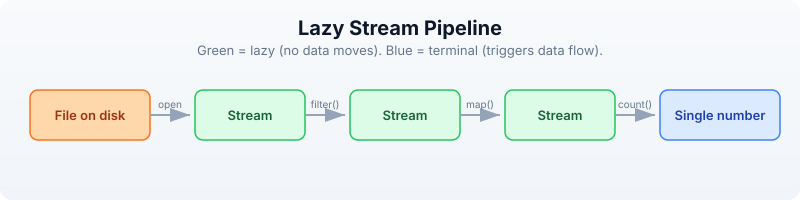
Every green box is lazy — no data moves until the blue terminal operation runs.
Stream Basics
BioLang provides two ways to read every file format: an eager function that loads everything into a list, and a streaming function that returns a lazy iterator.
| Format | Eager (loads all) | Streaming (lazy) |
|---|---|---|
| FASTQ | read_fastq() | fastq() |
| FASTA | read_fasta() | fasta() |
| VCF | read_vcf() | vcf() |
| BED | read_bed() | bed() |
| GFF | read_gff() | gff() |
| BAM | read_bam() | bam() |
The eager versions are the ones you used in Days 6 and 7. They are convenient for small files. The streaming versions are what you use for anything large.
Requires CLI: This example uses file I/O not available in the browser. Run with
bl run.
# Eager: loads everything into a list
let all_reads = read_fastq("data/reads.fastq")
println(type(all_reads)) # List
# Streaming: nothing loaded yet
let stream = fastq("data/reads.fastq")
println(type(stream)) # Stream
# Streams are lazy — nothing happens until you consume
let count = stream |> count()
println(f"Reads: {count}")
List
Stream
Reads: 500
The key rule: streams can only be consumed once. Once you have iterated through a stream, the data is gone. You cannot rewind. If you need multiple passes over the same file, create a new stream each time.
let s = fastq("data/reads.fastq")
let n = s |> count() # consumes the stream
# let m = s |> count() # ERROR: stream already exhausted
This is not a limitation — it is the reason streaming works. If you could rewind, the system would need to keep all the data in memory or re-read the file from scratch. The one-pass constraint is what guarantees constant memory.
Stream Operations
Stream operations are lazy: they build up a processing pipeline without moving any data. Data only flows when you call a terminal operation like count(), collect(), or reduce().
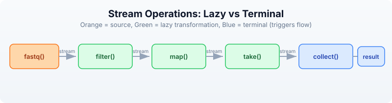
Orange is the source. Green boxes are lazy transformations — each returns a new stream. Blue boxes are terminal operations that trigger data flow.
Lazy operations (return streams)
| Operation | Description |
|---|---|
filter(|r| ...) | Keep records matching a condition |
map(|r| ...) | Transform each record |
take(n) | Keep only the first n records |
drop(n) | Skip the first n records |
tee(|r| ...) | Inspect each record without consuming |
Terminal operations (consume the stream)
| Operation | Description |
|---|---|
count() | Count records |
collect() | Gather all records into a list |
reduce(|a, b| ...) | Combine all records into one value |
first() | Get the first record |
last() | Get the last record |
frequencies() | Count occurrences of each value |
Here is a complete lazy pipeline:
Requires CLI: This example uses file I/O not available in the browser. Run with
bl run.
# This builds a pipeline — no data moves yet
let pipeline = fastq("data/reads.fastq")
|> filter(|r| mean_phred(r.qual) >= 30)
|> map(|r| {id: r.id, gc: gc_content(r.seq), length: len(r.seq)})
|> take(1000)
# NOW data flows — only when you collect
let results = pipeline |> collect()
println(f"Got {len(results)} high-quality reads")
Got 170 high-quality reads
The fastq() call opens the file but reads nothing. The filter() call attaches a predicate but reads nothing. The map() call attaches a transformation but reads nothing. The take(1000) call sets a limit but reads nothing. Only when collect() runs does data actually flow through the pipeline, one record at a time.
Constant-Memory Patterns
These five patterns cover the vast majority of large-file processing tasks in bioinformatics. Each uses constant memory regardless of input size.
Pattern 1: Count without loading
The simplest streaming operation. Count the records in a file without loading any of them.
Requires CLI: This example uses file I/O not available in the browser. Run with
bl run.
# Count reads in a large file using ~10 MB of RAM
let total = fastq("data/reads.fastq") |> count()
println(f"Total reads: {total}")
Total reads: 500
Pattern 2: Filter and count
Apply a quality filter and count how many records pass, without storing any of them.
Requires CLI: This example uses file I/O not available in the browser. Run with
bl run.
# How many reads pass quality filter?
let passed = fastq("data/reads.fastq")
|> filter(|r| mean_phred(r.qual) >= 20)
|> count()
println(f"Passed Q20: {passed}")
Passed Q20: 392
Pattern 3: Reduce to a single value
Combine all records into a single summary value. The reduce() function maintains a running accumulator, so only two values are ever in memory at once.
Requires CLI: This example uses file I/O not available in the browser. Run with
bl run.
# Calculate mean GC content without loading all reads
let result = fastq("data/reads.fastq")
|> map(|r| {gc: gc_content(r.seq), n: 1})
|> reduce(|a, b| {gc: a.gc + b.gc, n: a.n + b.n})
let mean_gc = result.gc / result.n
println(f"Mean GC: {round(mean_gc * 100, 1)}%")
Mean GC: 49.8%
Pattern 4: Take a sample
Peek at the first few records to verify file contents without reading the entire file. The stream stops after take(n) records.
Requires CLI: This example uses file I/O not available in the browser. Run with
bl run.
# Peek at the first 5 reads
let sample = fastq("data/reads.fastq") |> take(5) |> collect()
for r in sample {
println(f"{r.id}: {len(r.seq)} bp, Q={round(mean_phred(r.qual), 1)}")
}
read_0001: 150 bp, Q=33.2
read_0002: 148 bp, Q=27.1
read_0003: 150 bp, Q=35.0
read_0004: 145 bp, Q=22.8
read_0005: 150 bp, Q=31.4
Pattern 5: Stream, filter, write
Read from one file, filter, and write to another. The entire operation uses constant memory — the input and output files can be any size.
Requires CLI: This example uses file I/O not available in the browser. Run with
bl run.
# Filter a FASTQ to keep only high-quality, long reads
# Memory: constant regardless of input size
let filtered = fastq("data/reads.fastq")
|> filter(|r| len(r.seq) >= 100 and mean_phred(r.qual) >= 25)
|> collect()
write_fastq(filtered, "results/filtered.fastq")
println(f"Wrote {len(filtered)} filtered reads")
Wrote 264 filtered reads
Chunked Processing
Some operations need groups of records rather than individual ones — for example, computing statistics on batches. The stream_chunks() function groups a stream into fixed-size chunks.
Requires CLI: This example uses file I/O not available in the browser. Run with
bl run.
# Process reads in chunks of 100
let stream = fastq("data/reads.fastq")
let chunks = stream_chunks(stream, 100)
let batch_num = 0
for chunk in chunks {
batch_num = batch_num + 1
let gc_vals = chunk |> map(|r| gc_content(r.seq))
let mean_gc = mean(gc_vals)
println(f"Batch {batch_num}: {len(chunk)} reads, mean GC: {round(mean_gc * 100, 1)}%")
}
Batch 1: 100 reads, mean GC: 50.2%
Batch 2: 100 reads, mean GC: 49.5%
Batch 3: 100 reads, mean GC: 49.9%
Batch 4: 100 reads, mean GC: 50.1%
Batch 5: 100 reads, mean GC: 49.3%
Each chunk is a list of records small enough to fit in memory. The stream reads only one chunk at a time, so memory usage stays bounded by the chunk size rather than the file size.
Streaming All Formats
Every BioLang file reader has a streaming counterpart. Here are examples for each format.
FASTA streaming
Requires CLI: This example uses file I/O not available in the browser. Run with
bl run.
# Find the sequence with the highest GC content
let gc_stats = fasta("data/sequences.fasta")
|> map(|s| {id: s.id, gc: gc_content(s.seq)})
|> collect()
let gc_sorted = gc_stats |> sort_by(|s| s.gc)
let highest = gc_sorted |> last()
println(f"Highest GC: {highest.id} at {round(highest.gc * 100, 1)}%")
Highest GC: ecoli_16s at 54.2%
VCF streaming
Requires CLI: This example uses file I/O not available in the browser. Run with
bl run.
# Count variants per chromosome, PASS only
let chr_counts = vcf("data/variants.vcf")
|> filter(|v| v.filter == "PASS")
|> map(|v| v.chrom)
|> frequencies()
println(chr_counts)
{chr1: 3, chr17: 3, chrX: 2}
BED streaming
Requires CLI: This example uses file I/O not available in the browser. Run with
bl run.
# Total bases covered by all regions
let total_bp = bed("data/regions.bed")
|> map(|r| r.end - r.start)
|> reduce(|a, b| a + b)
println(f"Total covered: {total_bp} bp")
Total covered: 92500 bp
BAM streaming
Requires CLI: This example uses file I/O not available in the browser. Run with
bl run.
# Count mapped reads
let mapped = bam("data/alignments.bam")
|> filter(|r| r.is_mapped)
|> count()
println(f"Mapped reads: {mapped}")
Mapped reads: 17
GFF streaming
Requires CLI: This example uses file I/O not available in the browser. Run with
bl run.
# Count exons
let exon_count = gff("data/annotations.gff")
|> filter(|f| f.type == "exon")
|> count()
println(f"Exons: {exon_count}")
Exons: 8
Every format follows the same pattern: open a stream, chain lazy operations, terminate with a consumer. Once you learn the pattern for one format, you know it for all of them.
The tee Pattern: Inspect Without Consuming
Sometimes you want to see what is flowing through a pipeline without changing it. The tee() function calls a function on each record for its side effect (typically printing) and passes the record through unchanged.
Requires CLI: This example uses file I/O not available in the browser. Run with
bl run.
# tee lets you peek at data as it flows through
let high_q = fastq("data/reads.fastq")
|> tee(|r| println(f"Checking: {r.id}"))
|> filter(|r| mean_phred(r.qual) >= 30)
|> take(3)
|> collect()
println(f"\nKept {len(high_q)} reads")
Checking: read_0001
Checking: read_0002
Checking: read_0003
Checking: read_0004
Checking: read_0005
Checking: read_0006
Kept 3 reads
Notice that tee() printed six read IDs but only three passed the filter. The stream stopped early because take(3) was satisfied — the file was not read to the end.
This is extremely useful for debugging pipelines. If your filter is producing zero results, add a tee() before the filter to see what records actually look like.
Memory Comparison
Here is why streaming matters, with concrete numbers:
| Approach | 1 GB file | 10 GB file | 100 GB file |
|---|---|---|---|
read_fastq() (eager) | ~1 GB RAM | ~10 GB RAM | Crash (out of memory) |
fastq() (stream) | ~10 MB RAM | ~10 MB RAM | ~10 MB RAM |
The eager approach scales linearly with file size. The streaming approach stays constant.
| File size | Eager load time | Stream count time | Stream advantage |
|---|---|---|---|
| 1 GB | ~8 sec | ~6 sec | 1.3x faster |
| 10 GB | ~80 sec | ~60 sec | 1.3x faster |
| 100 GB | Fails | ~600 sec | Only option |
Streaming is not just about memory. It is also faster because there is no allocation overhead for storing millions of records in a list. The records are processed and discarded immediately.
Rule of thumb: use eager (read_fastq()) for files under 100 MB. Use streaming (fastq()) for anything larger. When in doubt, stream.
Complete Example: Streaming QC Report
This script generates a quality report for a FASTQ file using streaming. Each pass through the file creates a new stream. Memory usage stays constant at ~20 MB regardless of file size.
Requires CLI: This example uses file I/O not available in the browser. Run with
bl run.
# Generate QC report for a FASTQ file
# Memory usage: constant ~20 MB regardless of file size
# requires: data/reads.fastq in working directory
println("=== Streaming QC Report ===")
println("")
# Pass 1: Basic counts using read_stats
let stats = read_stats("data/reads.fastq")
println(f"Total reads: {stats.total_reads}")
println(f"Total bases: {stats.total_bases}")
# Pass 2: Quality distribution (stream again — each pass is a new stream)
let quality_bins = fastq("data/reads.fastq")
|> map(|r| {
q: mean_phred(r.qual),
category: if mean_phred(r.qual) >= 30 { "excellent" }
else if mean_phred(r.qual) >= 20 { "good" }
else { "poor" }
})
|> map(|r| r.category)
|> frequencies()
println("")
println("Quality distribution:")
for category in keys(quality_bins) {
println(f" {category}: {quality_bins[category]}")
}
# Pass 3: Length distribution
let lengths = fastq("data/reads.fastq")
|> map(|r| len(r.seq))
|> collect()
println("")
println("Length stats:")
println(f" Mean: {round(mean(lengths), 1)}")
println(f" Min: {min(lengths)}")
println(f" Max: {max(lengths)}")
# Pass 4: Filtered output
let filtered = fastq("data/reads.fastq")
|> filter(|r| len(r.seq) >= 100 and mean_phred(r.qual) >= 25)
|> collect()
write_fastq(filtered, "results/filtered.fastq")
println("")
println(f"Filtered reads written: {len(filtered)}")
println("")
println("=== Report complete ===")
=== Streaming QC Report ===
Total reads: 500
Total bases: 73750
Quality distribution:
excellent: 170
good: 222
poor: 108
Length stats:
Mean: 147.5
Min: 100
Max: 150
Filtered reads written: 264
=== Report complete ===
Each of the four passes creates a fresh stream from the file. The file is read four times, but each pass uses only ~10 MB of memory. For a 100 GB file, this script would use 20 MB of RAM and take about 40 minutes — but it would finish, while an eager approach would crash.
Exercises
-
Count total bases in a FASTQ file using streaming. Hint: map each read to its sequence length, then reduce by summing.
-
Find the read with the highest mean quality using streaming. Hint: use
reduce()with a comparator that keeps the better record. -
Batch statistics — use
stream_chunks()to process a FASTQ in batches of 50 and print per-batch mean read length and quality. -
Stream a VCF and count how many variants are SNPs (same length ref and alt) vs indels (different length).
-
FASTA length filter — write a streaming pipeline that reads a FASTA file, filters to sequences longer than 100 bp, and writes the results to a new file.
Key Takeaways
- Streams process data one record at a time — constant memory regardless of file size.
fastq(),fasta(),vcf(),bed(),gff(),bam()all return streams.- Streams are lazy — nothing happens until you consume with
count(),collect(), orreduce(). - Streams can only be consumed once — create a new stream for each pass over the file.
- Use
collect()only when you need all data in memory; prefercount(),reduce(), or stream-to-file. stream_chunks()groups records for batch processing when you need per-group statistics.- Rule of thumb: eager for files under 100 MB, streaming for anything larger.
What’s Next
Tomorrow we connect to the outside world. Day 9: Biological Databases and APIs — looking up what the world already knows about your genes, proteins, and variants.
Day 9: Biological Databases and APIs
The Problem
You found a mutation in gene BRCA1. What does this gene do? Is this mutation known? What pathway is it in? What protein does it encode? What other proteins does it interact with? What 3D structures are available?
This information exists — scattered across a dozen databases maintained by organizations around the world. NCBI in Bethesda, EBI in Cambridge, KEGG in Kyoto, RCSB in New Jersey. Manually searching each one, copying identifiers between browser tabs, cross-referencing results — it takes hours for a single gene. For a list of 50 candidate genes from a screen, it takes days.
With API calls, it takes seconds.
BioLang has built-in clients for 12+ biological databases. No packages to install. No authentication boilerplate. No JSON parsing. You call a function, you get structured data back.
The Database Landscape
Biological knowledge is distributed across specialized databases. Each one is the authoritative source for a particular kind of information:

No single database has the complete picture. NCBI has the sequences but not the pathways. KEGG has the pathways but not the 3D structures. PDB has the structures but not the interaction networks. The real power comes from querying multiple databases and combining the results.
| Database | Maintained By | Speciality | BioLang Functions |
|---|---|---|---|
| NCBI | NIH (USA) | Sequences, genes, literature | ncbi_gene, ncbi_search, ncbi_sequence |
| Ensembl | EBI/EMBL | Gene models, variants, orthology | ensembl_symbol, ensembl_sequence, ensembl_vep |
| UniProt | EBI/SIB/PIR | Protein function, features | uniprot_entry, uniprot_search, uniprot_features |
| KEGG | Kyoto Univ | Pathways, metabolism | kegg_get, kegg_find, kegg_link |
| PDB | RCSB (USA) | 3D protein structures | pdb_entry, pdb_search |
| STRING | EMBL | Protein-protein interactions | string_network, string_enrichment |
| Gene Ontology | GO Consortium | Functional annotations | go_term, go_annotations |
| Reactome | EBI/OICR | Biological pathways | reactome_pathways, reactome_search |
NCBI — The Central Repository
The National Center for Biotechnology Information (NCBI) is the largest repository of biological data. It hosts GenBank (sequences), PubMed (literature), Gene (gene records), and dozens of other databases. Nearly every bioinformatician interacts with NCBI daily.
BioLang’s NCBI functions wrap the E-utilities API, handling the XML parsing, rate limiting, and error recovery for you.
Looking Up a Gene
The simplest operation: look up a gene by symbol.
Requires CLI: This example uses network APIs not available in the browser. Run with
bl run.
# requires: internet connection
# optional: NCBI_API_KEY for higher rate limits
let gene = ncbi_gene("BRCA1")
println(f"Symbol: {gene.symbol}")
println(f"Name: {gene.name}")
println(f"Description: {gene.description}")
println(f"Chromosome: {gene.chromosome}")
println(f"Location: {gene.location}")
println(f"Organism: {gene.organism}")
Expected output (approximate — NCBI data is updated regularly):
Symbol: BRCA1
Name: BRCA1 DNA repair associated
Description: BRCA1 DNA repair associated
Chromosome: 17
Location: 17q21.31
Organism: Homo sapiens
ncbi_gene() returns a record with fields: id, symbol, name, description, organism, chromosome, location, summary. When the search matches a single gene, you get the full record directly. When it matches multiple genes, you get a list of NCBI Gene IDs.
Searching NCBI Databases
NCBI hosts over 40 databases. You can search any of them with ncbi_search():
Requires CLI: This example uses network APIs not available in the browser. Run with
bl run.
# requires: internet connection
# optional: NCBI_API_KEY for higher rate limits
# Search PubMed for articles about BRCA1 and breast cancer
let pubmed_ids = ncbi_search("pubmed", "BRCA1 breast cancer", 5)
println(f"PubMed hits: {len(pubmed_ids)}")
for id in pubmed_ids {
println(f" PMID: {id}")
}
# Search the Gene database
let gene_ids = ncbi_search("gene", "TP53 homo sapiens", 5)
println(f"Gene IDs: {len(gene_ids)}")
Note the argument order: ncbi_search(database, query, max_results). The max_results parameter is optional (defaults to 20).
Fetching Sequences
Retrieve a sequence by its accession number:
Requires CLI: This example uses network APIs not available in the browser. Run with
bl run.
# requires: internet connection
# optional: NCBI_API_KEY for higher rate limits
# Fetch BRCA1 mRNA sequence (RefSeq accession)
let fasta = ncbi_sequence("NM_007294")
println(f"Sequence (first 100 chars):")
println(fasta |> take(200))
ncbi_sequence() returns the raw FASTA text. You can parse it further or write it to a file.
Ensembl — Gene Models and Variants
Ensembl, maintained by the European Bioinformatics Institute (EBI), provides gene annotations, comparative genomics, and variant effect prediction. Its REST API is particularly well-designed and fast.
Looking Up a Gene by Symbol
Requires CLI: This example uses network APIs not available in the browser. Run with
bl run.
# requires: internet connection
let gene = ensembl_symbol("homo_sapiens", "BRCA1")
println(f"Ensembl ID: {gene.id}")
println(f"Symbol: {gene.symbol}")
println(f"Biotype: {gene.biotype}")
println(f"Chromosome: {gene.chromosome}")
println(f"Start: {gene.start}")
println(f"End: {gene.end}")
println(f"Strand: {gene.strand}")
Expected output (approximate):
Ensembl ID: ENSG00000012048
Symbol: BRCA1
Biotype: protein_coding
Chromosome: 17
Start: 43044295
End: 43170245
Strand: -1
Note the argument order: ensembl_symbol(species, symbol). Species uses Ensembl’s underscore-separated format: "homo_sapiens", "mus_musculus", "danio_rerio".
Getting Protein Sequences
Once you have an Ensembl gene ID, you can retrieve its sequence in different forms:
Requires CLI: This example uses network APIs not available in the browser. Run with
bl run.
# requires: internet connection
let gene = ensembl_symbol("homo_sapiens", "BRCA1")
# Get the protein sequence
let protein = ensembl_sequence(gene.id, "protein")
println(f"Protein length: {len(protein.seq)} amino acids")
println(f"First 50 aa: {protein.seq |> take(50)}")
# Get the coding sequence (CDS)
let cds = ensembl_sequence(gene.id, "cds")
println(f"CDS length: {len(cds.seq)} bases")
ensembl_sequence() takes an Ensembl ID and an optional sequence type: "genomic" (default), "cds", "cdna", or "protein". It returns a record with id, seq, and molecule fields.
Variant Effect Prediction (VEP)
One of Ensembl’s most powerful features is VEP — the Variant Effect Predictor. Given a variant, it tells you the predicted biological consequence:
Requires CLI: This example uses network APIs not available in the browser. Run with
bl run.
# requires: internet connection
# Predict the effect of a BRCA1 variant (HGVS notation)
let results = ensembl_vep("17:g.43091434G>A")
for r in results {
println(f"Alleles: {r.allele_string}")
println(f"Most severe: {r.most_severe_consequence}")
for tc in r.transcript_consequences {
println(f" Transcript: {tc.transcript_id}")
println(f" Impact: {tc.impact}")
println(f" Consequences: {tc.consequences}")
}
}
VEP accepts HGVS notation (e.g., "17:g.43091434G>A") and returns a list of result records, each containing transcript-level consequence predictions with impact severity (HIGH, MODERATE, LOW, MODIFIER).
UniProt — Protein Knowledge
UniProt is the definitive resource for protein function, domains, post-translational modifications, and literature. Every well-characterized protein has a UniProt entry curated by expert biologists.
Looking Up a Protein
Requires CLI: This example uses network APIs not available in the browser. Run with
bl run.
# requires: internet connection
# Look up BRCA1 by its UniProt accession
let entry = uniprot_entry("P38398")
println(f"Name: {entry.name}")
println(f"Organism: {entry.organism}")
println(f"Length: {entry.sequence_length} aa")
println(f"Gene names: {entry.gene_names}")
println(f"Function: {entry.function}")
Expected output (approximate):
Name: BRCA1_HUMAN
Organism: Homo sapiens (Human)
Length: 1863 aa
Gene names: ["BRCA1", "RNF53"]
Function: E3 ubiquitin-protein ligase that...
uniprot_entry() returns a record with accession, name, organism, sequence_length, gene_names (a list), and function.
Searching UniProt
Requires CLI: This example uses network APIs not available in the browser. Run with
bl run.
# requires: internet connection
# Search for human BRCA1 proteins
let results = uniprot_search("BRCA1 AND organism_name:human", 5)
println(f"Results: {len(results)}")
for entry in results {
println(f" {entry.accession}: {entry.name} ({entry.sequence_length} aa)")
}
uniprot_search() takes a query string (using UniProt’s query syntax) and an optional limit (defaults to 10). It returns a list of protein entry records.
Protein Features and Domains
Requires CLI: This example uses network APIs not available in the browser. Run with
bl run.
# requires: internet connection
# Get structural and functional features of BRCA1
let features = uniprot_features("P38398")
println(f"Total features: {len(features)}")
# Find just the domains
let domains = features |> filter(|f| f.type == "Domain")
println(f"Domains: {len(domains)}")
for d in domains {
println(f" {d.description} ({d.location})")
}
# Find binding sites
let sites = features |> filter(|f| f.type == "Binding site")
println(f"Binding sites: {len(sites)}")
Each feature record has type, location, and description fields. Common types include "Domain", "Region", "Binding site", "Modified residue", "Disulfide bond", and "Chain".
Gene Ontology Terms from UniProt
Requires CLI: This example uses network APIs not available in the browser. Run with
bl run.
# requires: internet connection
# Get GO terms associated with BRCA1
let go_terms = uniprot_go("P38398")
println(f"GO terms: {len(go_terms)}")
for t in go_terms |> take(5) {
println(f" {t.id}: {t.term} ({t.aspect})")
}
KEGG — Pathways and Metabolism
The Kyoto Encyclopedia of Genes and Genomes links genes to metabolic and signaling pathways. It is especially valuable for understanding how individual genes fit into larger biological systems.
Finding Genes in KEGG
Requires CLI: This example uses network APIs not available in the browser. Run with
bl run.
# requires: internet connection
# Find BRCA1 in the KEGG database
let results = kegg_find("genes", "BRCA1")
println(f"KEGG hits: {len(results)}")
for r in results |> take(5) {
println(f" {r.id}: {r.description}")
}
kegg_find() takes a database name and a query string. The database can be "genes", "pathway", "compound", "disease", "drug", and more. It returns a list of records with id and description.
Getting Detailed Entries
Requires CLI: This example uses network APIs not available in the browser. Run with
bl run.
# requires: internet connection
# Get detailed entry for human BRCA1
let entry = kegg_get("hsa:672")
println(f"KEGG entry (first 500 chars):")
println(entry |> take(500))
kegg_get() returns the raw KEGG flat-file text for any KEGG identifier. KEGG IDs use an organism prefix: hsa for Homo sapiens, mmu for Mus musculus, etc.
Linking to Pathways
The real power of KEGG is connecting genes to pathways:
Requires CLI: This example uses network APIs not available in the browser. Run with
bl run.
# requires: internet connection
# Find pathways that BRCA1 participates in
let links = kegg_link("pathway", "hsa:672")
println(f"Pathways involving BRCA1: {len(links)}")
for link in links {
println(f" {link.source} -> {link.target}")
}
kegg_link() takes two arguments: target database and source identifier. It returns a list of records with source and target fields.
PDB — 3D Protein Structures
The Protein Data Bank (PDB) contains experimentally determined 3D structures of proteins, nucleic acids, and their complexes. If you want to see what a protein actually looks like, this is where you go.
Looking Up a Structure
Requires CLI: This example uses network APIs not available in the browser. Run with
bl run.
# requires: internet connection
# Get information about BRCA1 BRCT domain structure
let structure = pdb_entry("1JM7")
println(f"Title: {structure.title}")
println(f"Method: {structure.method}")
println(f"Resolution: {structure.resolution}")
println(f"Release date: {structure.release_date}")
println(f"Organism: {structure.organism}")
Expected output (approximate):
Title: Crystal structure of the BRCT repeat region from...
Method: X-RAY DIFFRACTION
Resolution: 2.5
Release date: 2001-07-06
Organism: Homo sapiens
pdb_entry() returns a record with id, title, method, resolution (may be nil for NMR structures), release_date, and organism.
Searching for Structures
Requires CLI: This example uses network APIs not available in the browser. Run with
bl run.
# requires: internet connection
# Find all PDB structures related to BRCA1
let pdb_ids = pdb_search("BRCA1")
println(f"PDB structures for BRCA1: {len(pdb_ids)}")
for id in pdb_ids |> take(10) {
println(f" {id}")
}
pdb_search() returns a list of PDB ID strings.
Getting Entity and Sequence Information
Requires CLI: This example uses network APIs not available in the browser. Run with
bl run.
# requires: internet connection
# Get entity details for a specific chain
let entity = pdb_entity("1JM7", 1)
println(f"Entity type: {entity.entity_type}")
println(f"Description: {entity.description}")
# Get the protein sequence from the structure
let seq = pdb_sequence("1JM7", 1)
println(f"Sequence: {seq}")
println(f"Length: {len(seq)} aa")
STRING — Protein Interactions
STRING (Search Tool for Recurring Instances of Neighbouring Genes) maps known and predicted protein-protein interactions. Understanding which proteins interact is crucial for interpreting experimental results.
Getting an Interaction Network
Requires CLI: This example uses network APIs not available in the browser. Run with
bl run.
# requires: internet connection
# Get interaction partners for BRCA1
# string_network takes a list of protein identifiers and a species taxonomy ID
let network = string_network(["BRCA1"], 9606)
println(f"Interaction partners: {len(network)}")
# Show top interactors by score
let top = network
|> sort_by(|n| n.score)
|> reverse()
|> take(5)
for partner in top {
println(f" {partner.protein_a} <-> {partner.protein_b}: score={partner.score}")
}
Note that string_network() takes a list of protein identifiers (not a single string) and a species taxonomy ID. Common taxonomy IDs: 9606 (human), 10090 (mouse), 7955 (zebrafish), 6239 (C. elegans), 7227 (D. melanogaster).
Each interaction record has protein_a, protein_b, and score fields. The score ranges from 0 to 1, where higher scores indicate more confident interactions.
Functional Enrichment
Requires CLI: This example uses network APIs not available in the browser. Run with
bl run.
# requires: internet connection
# Check if a set of genes is enriched for specific functions
let enrichment = string_enrichment(["BRCA1", "BRCA2", "RAD51", "TP53", "ATM"], 9606)
println(f"Enriched terms: {len(enrichment)}")
for e in enrichment |> take(5) {
println(f" [{e.category}] {e.description}: p={e.p_value}, FDR={e.fdr}")
}
string_enrichment() takes a list of gene symbols and a species taxonomy ID. It returns a list of enrichment records with category, term, description, gene_count, p_value, and fdr.
Gene Ontology and Reactome
Gene Ontology (GO)
The Gene Ontology provides a standardized vocabulary for describing gene function across all organisms. Every GO term belongs to one of three namespaces:
- Molecular Function — what the protein does (e.g., “kinase activity”)
- Biological Process — what pathway it participates in (e.g., “DNA repair”)
- Cellular Component — where in the cell it acts (e.g., “nucleus”)
Requires CLI: This example uses network APIs not available in the browser. Run with
bl run.
# requires: internet connection
# Look up a specific GO term
let term = go_term("GO:0006281")
println(f"ID: {term.id}")
println(f"Name: {term.name}")
println(f"Aspect: {term.aspect}")
println(f"Definition: {term.definition}")
Expected output:
ID: GO:0006281
Name: DNA repair
Aspect: biological_process
Definition: The process of restoring DNA after damage...
GO Annotations for a Gene
Requires CLI: This example uses network APIs not available in the browser. Run with
bl run.
# requires: internet connection
# Get GO annotations for BRCA1 (by UniProt accession)
let annotations = go_annotations("P38398")
println(f"GO annotations: {len(annotations)}")
for a in annotations |> take(5) {
println(f" {a.go_id}: {a.go_name} ({a.aspect})")
println(f" Evidence: {a.evidence}")
}
go_annotations() takes a gene/protein identifier and an optional limit (defaults to 25). Each annotation has go_id, go_name, aspect, evidence, and gene_product_id fields.
Navigating the GO Hierarchy
GO terms form a directed acyclic graph (DAG). You can traverse it:
Requires CLI: This example uses network APIs not available in the browser. Run with
bl run.
# requires: internet connection
# Find child terms of "DNA repair"
let children = go_children("GO:0006281")
println(f"Child terms of DNA repair: {len(children)}")
for c in children |> take(5) {
println(f" {c.id}: {c.name}")
}
# Find parent terms
let parents = go_parents("GO:0006281")
println(f"Parent terms: {len(parents)}")
for p in parents {
println(f" {p.id}: {p.name}")
}
Reactome — Biological Pathways
Reactome is a curated database of biological pathways and reactions, maintained by EBI and the Ontario Institute for Cancer Research.
Requires CLI: This example uses network APIs not available in the browser. Run with
bl run.
# requires: internet connection
# Find pathways involving BRCA1
let pathways = reactome_pathways("BRCA1")
println(f"Reactome pathways: {len(pathways)}")
for p in pathways |> take(5) {
println(f" {p.id}: {p.name} ({p.species})")
}
reactome_pathways() takes a gene symbol and an optional species (defaults to "Homo sapiens"). It returns a list of pathway records with id, name, and species.
You can also search Reactome by keyword:
Requires CLI: This example uses network APIs not available in the browser. Run with
bl run.
# requires: internet connection
let results = reactome_search("DNA damage response")
println(f"Search results: {len(results)}")
Combining Multiple Databases
The real power of programmatic database access is cross-referencing. A single gene symbol unlocks information across every database simultaneously. What would take 30 minutes of browser-tab switching takes 10 lines of code.
A Complete Gene Profile
Requires CLI: This example uses network APIs not available in the browser. Run with
bl run.
# requires: internet connection
# optional: NCBI_API_KEY for higher rate limits
fn gene_profile(symbol) {
println(f"\n{'=' * 50}")
println(f" Gene Profile: {symbol}")
println(f"{'=' * 50}")
# NCBI: basic gene info
let gene = ncbi_gene(symbol)
println(f"\n[NCBI Gene]")
println(f" Description: {gene.description}")
println(f" Chromosome: {gene.chromosome}")
println(f" Location: {gene.location}")
# Ensembl: genomic coordinates
let ens = ensembl_symbol("homo_sapiens", symbol)
println(f"\n[Ensembl]")
println(f" ID: {ens.id}")
println(f" Biotype: {ens.biotype}")
println(f" Position: chr{ens.chromosome}:{ens.start}-{ens.end}")
# Ensembl: protein sequence
let protein = ensembl_sequence(ens.id, "protein")
println(f" Protein: {len(protein.seq)} amino acids")
# UniProt: function
let results = uniprot_search(f"{symbol} AND organism_name:human", 1)
if len(results) > 0 {
let entry = results |> first()
println(f"\n[UniProt]")
println(f" Accession: {entry.accession}")
println(f" Name: {entry.name}")
println(f" Function: {entry.function}")
}
# STRING: interactions
let network = string_network([symbol], 9606)
println(f"\n[STRING]")
println(f" Interaction partners: {len(network)}")
let top3 = network
|> sort_by(|n| n.score)
|> reverse()
|> take(3)
for partner in top3 {
println(f" {partner.protein_b}: {partner.score}")
}
# PDB: structures
let structures = pdb_search(symbol)
println(f"\n[PDB]")
println(f" Available structures: {len(structures)}")
# Reactome: pathways
let pathways = reactome_pathways(symbol)
println(f"\n[Reactome]")
println(f" Pathways: {len(pathways)}")
for p in pathways |> take(3) {
println(f" {p.name}")
}
sleep(1) # respect rate limits between genes
}
Profiling Multiple Genes
# requires: internet connection
# optional: NCBI_API_KEY for higher rate limits
# Profile a set of cancer-related genes
let cancer_genes = ["BRCA1", "TP53", "EGFR"]
for gene in cancer_genes {
gene_profile(gene)
}
This is the kind of analysis that is impractical to do manually but trivial with API calls. Three genes, six databases each, complete profiles in under a minute.
Building a Comparison Table
Requires CLI: This example uses network APIs not available in the browser. Run with
bl run.
# requires: internet connection
# optional: NCBI_API_KEY for higher rate limits
# Collect structured data for comparison
let genes = ["BRCA1", "TP53", "EGFR", "KRAS", "MYC"]
let rows = []
for symbol in genes {
let gene = ncbi_gene(symbol)
let ens = ensembl_symbol("homo_sapiens", symbol)
let protein = ensembl_sequence(ens.id, "protein")
let network = string_network([symbol], 9606)
let pathways = reactome_pathways(symbol)
rows = push(rows, {
gene: symbol,
chromosome: gene.chromosome,
protein_length: len(protein.seq),
interactions: len(network),
pathways: len(pathways)
})
sleep(0.5) # be respectful
}
let results = rows |> to_table()
println(results)
Expected output (approximate):
gene | chromosome | protein_length | interactions | pathways
-------|------------|----------------|--------------|--------
BRCA1 | 17 | 1863 | 10 | 25
TP53 | 17 | 393 | 10 | 18
EGFR | 7 | 1210 | 10 | 30
KRAS | 12 | 189 | 10 | 22
MYC | 8 | 439 | 10 | 15
Rate Limiting and Best Practices
Biological databases are shared public resources. Hammering them with thousands of requests per second will get your IP temporarily blocked — and slow down the service for everyone.
Rate Limits by Database
| Database | Rate Limit | With API Key |
|---|---|---|
| NCBI | 3 requests/second | 10/second with NCBI_API_KEY |
| Ensembl | 15 requests/second | — |
| UniProt | Reasonable use (no hard limit) | — |
| KEGG | 10 requests/second | — |
| PDB | No published limit | — |
| STRING | 1 request/second | — |
| QuickGO | 10 requests/second | — |
| Reactome | No published limit | — |
Setting Up API Keys
NCBI strongly recommends registering for an API key. It is free and takes 30 seconds:
- Go to ncbi.nlm.nih.gov/account/settings
- Click “Create an API Key”
- Set the environment variable:
export NCBI_API_KEY="your_key_here"
BioLang automatically detects and uses the NCBI_API_KEY environment variable for all NCBI calls.
Batch Queries with Rate Limiting
When querying multiple genes, add delays between requests:
Requires CLI: This example uses network APIs not available in the browser. Run with
bl run.
# requires: internet connection
# optional: NCBI_API_KEY for higher rate limits
let genes = ["BRCA1", "TP53", "EGFR", "KRAS", "MYC",
"PIK3CA", "BRAF", "APC", "RB1", "PTEN"]
let results = []
for gene in genes {
let info = ncbi_gene(gene)
results = push(results, {gene: gene, chrom: info.chromosome, desc: info.description})
sleep(0.5) # be respectful
}
let results_table = results |> to_table()
println(results_table)
Best Practices
-
Cache results — if you are going to query the same gene repeatedly during development, save the result to a variable or file instead of calling the API each time.
-
Use
sleep()in loops — add at least 0.3–0.5 seconds between requests when iterating over a list of genes. -
Handle errors gracefully — API calls can fail due to network issues, maintenance windows, or invalid identifiers. Use
try/catchfor production scripts. -
Start small — test your query with 2–3 genes before running it on 500.
-
Set
NCBI_API_KEY— it is free and triples your rate limit.
Requires CLI: This example uses network APIs not available in the browser. Run with
bl run.
# requires: internet connection
# optional: NCBI_API_KEY for higher rate limits
# Robust batch query with error handling
let genes = ["BRCA1", "TP53", "INVALID_GENE", "EGFR"]
let results = []
let errors = []
for gene in genes {
let result = try {
let info = ncbi_gene(gene)
push(results, {gene: gene, chrom: info.chromosome})
} catch e {
push(errors, {gene: gene, error: e})
}
sleep(0.5)
}
println(f"Successful: {len(results)}")
println(f"Failed: {len(errors)}")
for err in errors {
println(f" {err.gene}: {err.error}")
}
Exercises
-
Gene Lookup: Look up your favorite gene in NCBI using
ncbi_gene()and print its chromosome location, description, and summary. Try at least two different genes. -
Protein Size Estimation: Use
ensembl_symbol()andensembl_sequence()to get the protein sequence of TP53. Calculate its length and estimate its molecular weight (average amino acid weight is approximately 110 daltons). -
UniProt Search: Search UniProt for
"insulin AND organism_name:human"and list the accession numbers and names of the results. -
Interaction Network: Use
string_network()to find interaction partners for MYC (species 9606). Sort by score and print the top 5. -
Multi-Database Report: Write a
gene_report(symbol)function that queries at least 3 databases (NCBI, Ensembl, and one other) and returns a summary record with fields likechromosome,protein_length,num_interactions, andnum_pathways. Test it on EGFR and KRAS.
Key Takeaways
-
BioLang has built-in clients for 12+ biological databases — no packages to install, no JSON to parse.
-
NCBI is the central repository for sequences, genes, and literature.
ncbi_gene()is often your starting point. -
Ensembl provides gene models, coordinates, and the invaluable Variant Effect Predictor (
ensembl_vep()). -
UniProt is the authoritative source for protein function, domains, and curated annotations.
-
KEGG connects genes to metabolic and signaling pathways. Use
kegg_link()to find pathway memberships. -
PDB gives you 3D protein structures. STRING maps protein-protein interaction networks.
-
GO and Reactome provide functional annotations and biological pathway context.
-
Combining databases gives a complete picture no single source provides. A 10-line function can profile a gene across six databases.
-
Respect rate limits: use
sleep()in batch queries, setNCBI_API_KEYfor NCBI, and cache results when possible. -
All API functions require internet access. Some need API keys: NCBI (optional, recommended), COSMIC (required).
What’s Next
Tomorrow we move from fetching data to organizing it. Day 10: Tables — The Bioinformatician’s Workbench covers selecting, filtering, joining, and reshaping tabular data — the format that most bioinformatics analysis ultimately lives in.
Day 10: Tables — The Bioinformatician’s Workbench
| Difficulty | Intermediate |
| Biology knowledge | Basic (gene names, chromosomes, expression data) |
| Coding knowledge | Intermediate (pipes, closures, records) |
| Time | ~3 hours |
| Prerequisites | Days 1-9 completed, BioLang installed (see Appendix A) |
| Data needed | Generated by init.bl (CSV files) |
| Requirements | None (offline) |
What You’ll Learn
- How to create tables from CSV files, records, and column vectors
- How to select, drop, and rename columns
- How to filter rows with predicates
- How to add and transform columns with mutate
- How to sort, slice, and deduplicate rows
- How to group rows and compute summaries (split-apply-combine)
- How to join tables by key columns (inner, left, right, outer, anti, semi)
- How to reshape between wide and long formats (pivot)
- How to use window functions for running totals and ranks
- How to chain all of these into a complete analysis pipeline
The Problem
Every analysis produces tabular data — gene expression matrices, variant call results, sample metadata, statistical summaries. A differential expression tool gives you thousands of rows with gene names, fold changes, and p-values. A variant caller gives you chromosomes, positions, and quality scores. A clinical database gives you patient IDs, phenotypes, and treatment groups.
Knowing how to slice, dice, join, reshape, and summarize tables is the single most valuable data skill in bioinformatics. It is the skill that turns raw output into biological insight.
In R, this is dplyr and tidyr. In Python, this is pandas. In BioLang, tables are built in — no imports, no package managers, no configuration. You load a CSV and start working.
Creating Tables
There are three ways to get data into a table.
From CSV/TSV Files
The most common case: you have a file from another tool.
Requires CLI: This example uses file I/O not available in the browser. Run with
bl run.
let expr = csv("data/expression.csv")
println(f"Rows: {nrow(expr)}, Cols: {ncol(expr)}")
println(f"Columns: {colnames(expr)}")
println(expr |> head(3))
Expected output:
Rows: 20, Cols: 6
Columns: [gene, log2fc, pval, padj, chr, biotype]
gene | log2fc | pval | padj | chr | biotype
EGFR | 3.8 | 0.000001 | 0.00001 | 7 | protein_coding
BRCA1 | 2.4 | 0.001 | 0.005 | 17 | protein_coding
VEGFA | 2.1 | 0.002 | 0.008 | 6 | protein_coding
csv() reads comma-separated files. For tab-separated files, use tsv(). Both auto-detect headers and infer column types (integers, floats, strings).
From a List of Records
When you construct data programmatically, build a list of records and convert it.
let data = [
{gene: "BRCA1", log2fc: 2.4, pval: 0.001, chr: "17"},
{gene: "TP53", log2fc: -1.1, pval: 0.23, chr: "17"},
{gene: "EGFR", log2fc: 3.8, pval: 0.000001, chr: "7"},
{gene: "MYC", log2fc: 1.9, pval: 0.04, chr: "8"},
{gene: "KRAS", log2fc: -0.3, pval: 0.67, chr: "12"},
] |> to_table()
println(data)
Expected output:
gene | log2fc | pval | chr
BRCA1 | 2.4 | 0.001 | 17
TP53 | -1.1 | 0.23 | 17
EGFR | 3.8 | 0.000001 | 7
MYC | 1.9 | 0.04 | 8
KRAS | -0.3 | 0.67 | 12
From Column Vectors
When you already have parallel arrays, pass a record of lists.
let t = table({
gene: ["BRCA1", "TP53", "EGFR"],
value: [1.0, 2.0, 3.0]
})
println(t)
Expected output:
gene | value
BRCA1 | 1.0
TP53 | 2.0
EGFR | 3.0
This is the Polars/R column-oriented style. Each key is a column name, each value is a list of that column’s data. All lists must have the same length.
Selecting Columns
Tables often have more columns than you need. select() keeps only the ones you name. drop_cols() removes the ones you don’t want.
let data = [
{gene: "BRCA1", log2fc: 2.4, pval: 0.001, chr: "17"},
{gene: "TP53", log2fc: -1.1, pval: 0.23, chr: "17"},
{gene: "EGFR", log2fc: 3.8, pval: 0.000001, chr: "7"},
] |> to_table()
# Keep specific columns
let slim = data |> select("gene", "pval")
println(slim)
Expected output:
gene | pval
BRCA1 | 0.001
TP53 | 0.23
EGFR | 0.000001
# Drop a column
let no_chr = data |> drop_cols("chr")
println(no_chr)
Expected output:
gene | log2fc | pval
BRCA1 | 2.4 | 0.001
TP53 | -1.1 | 0.23
EGFR | 3.8 | 0.000001
# Rename a column
let renamed = data |> rename("log2fc", "fold_change")
println(renamed)
Expected output:
gene | fold_change | pval | chr
BRCA1 | 2.4 | 0.001 | 17
TP53 | -1.1 | 0.23 | 17
EGFR | 3.8 | 0.000001 | 7
select() takes the table as the first argument (piped) and column names as the remaining arguments. rename() takes the old name and the new name.
Filtering Rows
filter() keeps only the rows where a predicate returns true. The predicate receives each row as a record.
let data = [
{gene: "BRCA1", log2fc: 2.4, pval: 0.001, chr: "17"},
{gene: "TP53", log2fc: -1.1, pval: 0.23, chr: "17"},
{gene: "EGFR", log2fc: 3.8, pval: 0.000001, chr: "7"},
{gene: "MYC", log2fc: 1.9, pval: 0.04, chr: "8"},
{gene: "KRAS", log2fc: -0.3, pval: 0.67, chr: "12"},
] |> to_table()
# Single condition: significant genes
let sig = data |> filter(|r| r.pval < 0.05)
println(sig)
Expected output:
gene | log2fc | pval | chr
BRCA1 | 2.4 | 0.001 | 17
EGFR | 3.8 | 0.000001 | 7
MYC | 1.9 | 0.04 | 8
# Multiple conditions: significant AND upregulated
let sig_up = data |> filter(|r| r.pval < 0.05 and r.log2fc > 1.0)
println(sig_up)
Expected output:
gene | log2fc | pval | chr
BRCA1 | 2.4 | 0.001 | 17
EGFR | 3.8 | 0.000001 | 7
MYC | 1.9 | 0.04 | 8
# Filter by category
let chr17 = data |> filter(|r| r.chr == "17")
println(chr17)
Expected output:
gene | log2fc | pval | chr
BRCA1 | 2.4 | 0.001 | 17
TP53 | -1.1 | 0.23 | 17
You can combine conditions with and and or. Parentheses clarify precedence when mixing them:
# Chromosome 17 OR very significant
let subset = data |> filter(|r| r.chr == "17" or r.pval < 0.001)
println(subset)
Expected output:
gene | log2fc | pval | chr
BRCA1 | 2.4 | 0.001 | 17
TP53 | -1.1 | 0.23 | 17
EGFR | 3.8 | 0.000001 | 7
Mutating: Adding and Transforming Columns
mutate() adds a new column (or replaces an existing one) by applying a function to each row. It takes three arguments: the table, the new column name, and a closure that receives each row as a record.
let data = [
{gene: "BRCA1", log2fc: 2.4, pval: 0.001},
{gene: "TP53", log2fc: -1.1, pval: 0.23},
{gene: "EGFR", log2fc: 3.8, pval: 0.000001},
{gene: "MYC", log2fc: 1.9, pval: 0.04},
{gene: "KRAS", log2fc: -0.3, pval: 0.67},
] |> to_table()
# Add a significance flag
let with_sig = data |> mutate("significant", |r| r.pval < 0.05)
println(with_sig)
Expected output:
gene | log2fc | pval | significant
BRCA1 | 2.4 | 0.001 | true
TP53 | -1.1 | 0.23 | false
EGFR | 3.8 | 0.000001 | true
MYC | 1.9 | 0.04 | true
KRAS | -0.3 | 0.67 | false
# Add a direction column
let with_dir = data |> mutate("direction", |r| if r.log2fc > 0 { "up" } else { "down" })
println(with_dir)
Expected output:
gene | log2fc | pval | direction
BRCA1 | 2.4 | 0.001 | up
TP53 | -1.1 | 0.23 | down
EGFR | 3.8 | 0.000001 | up
MYC | 1.9 | 0.04 | up
KRAS | -0.3 | 0.67 | down
# Add a negative log10 p-value (common for volcano plots)
let with_nlp = data |> mutate("neg_log_p", |r| -1.0 * log10(r.pval))
println(with_nlp)
Expected output:
gene | log2fc | pval | neg_log_p
BRCA1 | 2.4 | 0.001 | 3.0
TP53 | -1.1 | 0.23 | 0.638...
EGFR | 3.8 | 0.000001 | 6.0
MYC | 1.9 | 0.04 | 1.397...
KRAS | -0.3 | 0.67 | 0.173...
To add multiple columns, chain mutate() calls:
let enriched = data
|> mutate("significant", |r| r.pval < 0.05)
|> mutate("direction", |r| if r.log2fc > 0 { "up" } else { "down" })
|> mutate("neg_log_p", |r| -1.0 * log10(r.pval))
println(enriched)
Each mutate() adds one column. The pipe chains them together so the result flows naturally.
Sorting
arrange() sorts a table by a column in ascending order. For descending order, pipe through reverse().
let data = [
{gene: "BRCA1", log2fc: 2.4, pval: 0.001},
{gene: "TP53", log2fc: -1.1, pval: 0.23},
{gene: "EGFR", log2fc: 3.8, pval: 0.000001},
{gene: "MYC", log2fc: 1.9, pval: 0.04},
] |> to_table()
# Sort by p-value (ascending --- most significant first)
let by_pval = data |> arrange("pval")
println(by_pval)
Expected output:
gene | log2fc | pval
EGFR | 3.8 | 0.000001
BRCA1 | 2.4 | 0.001
MYC | 1.9 | 0.04
TP53 | -1.1 | 0.23
# Sort by fold change descending (largest first)
let by_fc_desc = data |> arrange("log2fc") |> reverse()
println(by_fc_desc)
Expected output:
gene | log2fc | pval
EGFR | 3.8 | 0.000001
BRCA1 | 2.4 | 0.001
MYC | 1.9 | 0.04
TP53 | -1.1 | 0.23
Combine with head() to get top-N results:
# Top 2 most significant genes
let top2 = data |> arrange("pval") |> head(2)
println(top2)
Expected output:
gene | log2fc | pval
EGFR | 3.8 | 0.000001
BRCA1 | 2.4 | 0.001
Grouping and Summarizing
The most powerful table operation is split-apply-combine: split the data into groups, apply an aggregation to each group, and combine the results into a new table.
The Pattern
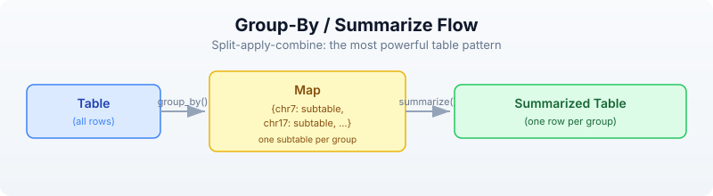
group_by() splits a table into a map of subtables, keyed by the distinct values in the grouping column. summarize() then takes that map and a function that receives each key and subtable, and must return a record. The records are assembled into a new table.
let data = [
{gene: "BRCA1", log2fc: 2.4, pval: 0.001, chr: "17"},
{gene: "TP53", log2fc: -1.1, pval: 0.23, chr: "17"},
{gene: "EGFR", log2fc: 3.8, pval: 0.000001, chr: "7"},
{gene: "MYC", log2fc: 1.9, pval: 0.04, chr: "8"},
{gene: "KRAS", log2fc: -0.3, pval: 0.67, chr: "12"},
] |> to_table()
# Count genes per chromosome
let chr_counts = data
|> group_by("chr")
|> summarize(|key, subtable| {
chr: key,
gene_count: nrow(subtable)
})
println(chr_counts)
Expected output:
chr | gene_count
7 | 1
8 | 1
12 | 1
17 | 2
# Mean fold change per chromosome
let chr_means = data
|> group_by("chr")
|> summarize(|key, subtable| {
chr: key,
mean_fc: col_mean(subtable, "log2fc"),
n_genes: nrow(subtable)
})
println(chr_means)
Expected output:
chr | mean_fc | n_genes
7 | 3.8 | 1
8 | 1.9 | 1
12 | -0.3 | 1
17 | 0.65 | 2
The summarize function can compute any aggregation you want. Use col_mean(), col_sum(), col_min(), col_max(), col_stdev() for numeric columns, and nrow() for counts.
Quick Counts with count_by
For the common case of just counting groups, count_by() is a shortcut:
let chr_counts = data |> count_by("chr")
println(chr_counts)
Expected output:
chr | count
7 | 1
8 | 1
12 | 1
17 | 2
Joining Tables
Joins connect two tables by matching rows on a shared key column. This is how you annotate results with metadata, link identifiers across databases, or combine measurements from different experiments.
Setting Up Two Tables
let results = [
{gene: "BRCA1", log2fc: 2.4, pval: 0.001},
{gene: "TP53", log2fc: -1.1, pval: 0.23},
{gene: "EGFR", log2fc: 3.8, pval: 0.000001},
{gene: "MYC", log2fc: 1.9, pval: 0.04},
{gene: "KRAS", log2fc: -0.3, pval: 0.67},
] |> to_table()
let annotations = [
{gene: "BRCA1", full_name: "BRCA1 DNA repair", pathway: "DNA repair"},
{gene: "TP53", full_name: "Tumor protein p53", pathway: "Apoptosis"},
{gene: "EGFR", full_name: "EGF receptor", pathway: "Signaling"},
{gene: "MYC", full_name: "MYC proto-oncogene", pathway: "Cell cycle"},
{gene: "PTEN", full_name: "Phosphatase tensin homolog", pathway: "Signaling"},
] |> to_table()
Note that KRAS is in results but not annotations, and PTEN is in annotations but not results.
Inner Join
Keeps only rows present in both tables.
let annotated = inner_join(results, annotations, "gene")
println(annotated)
println(f"Inner join: {nrow(annotated)} rows")
Expected output:
gene | log2fc | pval | full_name | pathway
BRCA1 | 2.4 | 0.001 | BRCA1 DNA repair | DNA repair
TP53 | -1.1 | 0.23 | Tumor protein p53 | Apoptosis
EGFR | 3.8 | 0.000001 | EGF receptor | Signaling
MYC | 1.9 | 0.04 | MYC proto-oncogene | Cell cycle
Inner join: 4 rows
KRAS is dropped (no annotation). PTEN is dropped (no result).
Left Join
Keeps all rows from the left table. Where the right table has no match, those columns are nil.
let full = left_join(results, annotations, "gene")
println(full)
println(f"Left join: {nrow(full)} rows")
Expected output:
gene | log2fc | pval | full_name | pathway
BRCA1 | 2.4 | 0.001 | BRCA1 DNA repair | DNA repair
TP53 | -1.1 | 0.23 | Tumor protein p53 | Apoptosis
EGFR | 3.8 | 0.000001 | EGF receptor | Signaling
MYC | 1.9 | 0.04 | MYC proto-oncogene | Cell cycle
KRAS | -0.3 | 0.67 | nil | nil
Left join: 5 rows
KRAS is kept with nil annotations. PTEN is dropped (not in results).
Anti Join
Returns rows from the left table that have no match in the right table. This is the “what’s missing?” join.
let missing = anti_join(results, annotations, "gene")
println(missing)
println(f"Missing annotations: {nrow(missing)} genes")
Expected output:
gene | log2fc | pval
KRAS | -0.3 | 0.67
Missing annotations: 1 genes
Semi Join
Returns rows from the left table that do have a match in the right table, but without adding columns from the right table. It is a filter, not a column merger.
let has_annotation = semi_join(results, annotations, "gene")
println(has_annotation)
Expected output:
gene | log2fc | pval
BRCA1 | 2.4 | 0.001
TP53 | -1.1 | 0.23
EGFR | 3.8 | 0.000001
MYC | 1.9 | 0.04
All Join Types at a Glance
inner_join(A, B, key): A ∩ B — only matching rows
left_join(A, B, key): all A — all of A, matching from B (nil where missing)
right_join(A, B, key): all B — all of B, matching from A (nil where missing)
outer_join(A, B, key): A ∪ B — all rows from both (nil where missing)
anti_join(A, B, key): A - B — rows in A with no match in B
semi_join(A, B, key): A ∩∃ B — rows in A that have a match in B (no extra columns)
When to use which:
| Situation | Join |
|---|---|
| Annotate results with gene info | left_join (keep all results) |
| Find shared genes between two experiments | inner_join |
| Find genes unique to one experiment | anti_join |
| Merge all data from both sources | outer_join |
| Filter results to genes in a known set | semi_join |
Reshaping: Pivot Wider and Longer
Biological data comes in two shapes. Wide format has one row per entity (e.g., one row per gene, one column per sample). Long format has one row per measurement (e.g., one row per gene-sample combination).
Long to Wide: pivot_wider
You have expression measurements in long (tidy) format:
let long = [
{gene: "BRCA1", sample: "S1", expression: 5.2},
{gene: "BRCA1", sample: "S2", expression: 8.1},
{gene: "TP53", sample: "S1", expression: 3.4},
{gene: "TP53", sample: "S2", expression: 7.6},
] |> to_table()
println("Long format:")
println(long)
Expected output:
Long format:
gene | sample | expression
BRCA1 | S1 | 5.2
BRCA1 | S2 | 8.1
TP53 | S1 | 3.4
TP53 | S2 | 7.6
pivot_wider() spreads the sample names into columns:
let wide = long |> pivot_wider("sample", "expression")
println("Wide format:")
println(wide)
Expected output:
Wide format:
gene | S1 | S2
BRCA1 | 5.2 | 8.1
TP53 | 3.4 | 7.6
The first argument (piped) is the table. The second argument is the column whose values become new column names. The third argument is the column whose values fill those new columns. All other columns (here, gene) become the row identifiers.
Wide to Long: pivot_longer
Going the other direction, pivot_longer() gathers columns back into rows:
let back_to_long = wide |> pivot_longer(["S1", "S2"], "sample", "expression")
println("Back to long:")
println(back_to_long)
Expected output:
Back to long:
gene | sample | expression
BRCA1 | S1 | 5.2
BRCA1 | S2 | 8.1
TP53 | S1 | 3.4
TP53 | S2 | 7.6
The first argument (piped) is the table. The second argument is a list of column names to gather. The third argument is the name for the new “names” column. The fourth argument is the name for the new “values” column.
The Visual Transformation
PIVOT WIDER PIVOT LONGER
gene | sample | expr gene | S1 | S2
------+--------+----- ====> ------+-----+-----
BRCA1 | S1 | 5.2 BRCA1 | 5.2 | 8.1
BRCA1 | S2 | 8.1 TP53 | 3.4 | 7.6
TP53 | S1 | 3.4
TP53 | S2 | 7.6 <====
3 columns, 4 rows 2+N columns, 2 rows
(one row per measurement) (one row per gene)
When to use which:
- Pivot wider when you need a matrix for computation (e.g., gene-by-sample expression matrix for heatmaps, PCA, clustering)
- Pivot longer when you need tidy data for filtering, grouping, and plotting (e.g., faceted plots, group_by + summarize)
Window Functions
Window functions compute a value for each row based on its position or neighbors, without collapsing the table.
Row Numbers and Ranks
let data = [
{gene: "BRCA1", pval: 0.001},
{gene: "EGFR", pval: 0.000001},
{gene: "MYC", pval: 0.04},
{gene: "TP53", pval: 0.23},
] |> to_table()
# Add row numbers
let numbered = data |> row_number()
println(numbered)
Expected output:
gene | pval | row_number
BRCA1 | 0.001 | 1
EGFR | 0.000001 | 2
MYC | 0.04 | 3
TP53 | 0.23 | 4
# Rank by p-value
let ranked = data |> rank("pval")
println(ranked)
Expected output:
gene | pval | rank
BRCA1 | 0.001 | 2
EGFR | 0.000001 | 1
MYC | 0.04 | 3
TP53 | 0.23 | 4
Cumulative Functions
let data = [
{gene: "A", count: 10},
{gene: "B", count: 25},
{gene: "C", count: 15},
{gene: "D", count: 30},
] |> to_table()
# Cumulative sum
let with_cumsum = data |> cumsum("count")
println(with_cumsum)
Expected output:
gene | count | cumsum
A | 10 | 10
B | 25 | 35
C | 15 | 50
D | 30 | 80
Rolling Mean
Smooths noisy data by averaging over a sliding window.
let timeseries = [
{day: 1, value: 10.0},
{day: 2, value: 12.0},
{day: 3, value: 8.0},
{day: 4, value: 15.0},
{day: 5, value: 11.0},
{day: 6, value: 14.0},
] |> to_table()
let smoothed = timeseries |> rolling_mean("value", 3)
println(smoothed)
Expected output:
day | value | rolling_mean
1 | 10.0 | 10.0
2 | 12.0 | 11.0
3 | 8.0 | 10.0
4 | 15.0 | 11.666...
5 | 11.0 | 11.333...
6 | 14.0 | 13.333...
The third argument is the window size. The first few rows use a smaller window (whatever data is available).
Lag and Lead
Access values from previous or next rows — useful for computing changes between consecutive measurements.
let data = [
{day: 1, expression: 2.0},
{day: 2, expression: 4.5},
{day: 3, expression: 3.8},
{day: 4, expression: 6.1},
] |> to_table()
# Previous day's value
let with_lag = data |> lag("expression")
println(with_lag)
Expected output:
day | expression | lag
1 | 2.0 | nil
2 | 4.5 | 2.0
3 | 3.8 | 4.5
4 | 6.1 | 3.8
Complete Example: Expression Analysis Pipeline
This is the kind of analysis you will do repeatedly in practice: load data, annotate it, filter it, summarize it, and export the results.
Requires CLI: This example uses file I/O not available in the browser. Run with
bl run.
# Complete table analysis pipeline
# Run init.bl first to generate CSV files in data/
# Step 1: Read expression results and gene annotations
let expr = csv("data/expression.csv")
let gene_info = csv("data/gene_info.csv")
println(f"Expression data: {nrow(expr)} genes x {ncol(expr)} columns")
println(f"Gene info: {nrow(gene_info)} annotations")
# Step 2: Add derived columns
let analyzed = expr
|> mutate("significant", |r| r.padj < 0.05)
|> mutate("direction", |r| if r.log2fc > 0 { "up" } else { "down" })
|> mutate("neg_log_p", |r| -1.0 * log10(r.pval))
# Step 3: Count by direction among significant genes
let direction_counts = analyzed
|> filter(|r| r.significant)
|> count_by("direction")
println("Significant genes by direction:")
println(direction_counts)
# Step 4: Annotate with gene info
let annotated = left_join(analyzed, gene_info, "gene")
# Step 5: Top 10 most significant genes
let top10 = annotated
|> filter(|r| r.significant)
|> arrange("padj")
|> head(10)
|> select("gene", "log2fc", "padj", "pathway")
println("Top 10 significant genes:")
println(top10)
# Step 6: Summary statistics per pathway
let pathway_summary = annotated
|> filter(|r| r.significant)
|> group_by("pathway")
|> summarize(|key, subtable| {
pathway: key,
n_genes: nrow(subtable),
mean_fc: col_mean(subtable, "log2fc")
})
println("Pathway summary:")
println(pathway_summary)
# Step 7: Export
write_csv(annotated, "results/annotated_results.csv")
println("Results saved to results/annotated_results.csv")
This pipeline reads data, enriches it, filters it, summarizes it, and exports it — all in a single readable chain of piped operations. Each step is self-documenting.
Table Operations Cheat Sheet
Structure
| Operation | Syntax | Description |
|---|---|---|
nrow(t) | data |> nrow() | Number of rows |
ncol(t) | data |> ncol() | Number of columns |
colnames(t) | data |> colnames() | List of column names |
describe(t) | data |> describe() | Summary statistics for all columns |
Column Operations
| Operation | Syntax | Description |
|---|---|---|
select | data |> select("a", "b") | Keep only named columns |
drop_cols | data |> drop_cols("x") | Remove named columns |
rename | data |> rename("old", "new") | Rename a column |
mutate | data |> mutate("col", |r| expr) | Add or replace a column |
Row Operations
| Operation | Syntax | Description |
|---|---|---|
filter | data |> filter(|r| cond) | Keep rows where condition is true |
arrange | data |> arrange("col") | Sort by column (ascending) |
reverse | data |> reverse() | Reverse row order |
head | data |> head(n) | First n rows |
tail | data |> tail(n) | Last n rows |
slice | data |> slice(start, end) | Rows from start to end |
sample | data |> sample(n) | Random n rows |
distinct | data |> distinct() | Remove duplicate rows |
Aggregation
| Operation | Syntax | Description |
|---|---|---|
group_by | data |> group_by("col") | Split into map of subtables |
summarize | groups |> summarize(|k, t| rec) | Aggregate each group into a record |
count_by | data |> count_by("col") | Count rows per group (shortcut) |
col_mean | col_mean(t, "col") | Mean of a numeric column |
col_sum | col_sum(t, "col") | Sum of a numeric column |
col_min | col_min(t, "col") | Minimum of a column |
col_max | col_max(t, "col") | Maximum of a column |
col_stdev | col_stdev(t, "col") | Standard deviation of a column |
Joins
| Operation | Syntax | Description |
|---|---|---|
inner_join | inner_join(a, b, "key") | Rows in both tables |
left_join | left_join(a, b, "key") | All rows from left, matching from right |
right_join | right_join(a, b, "key") | All rows from right, matching from left |
outer_join | outer_join(a, b, "key") | All rows from both tables |
anti_join | anti_join(a, b, "key") | Left rows with no right match |
semi_join | semi_join(a, b, "key") | Left rows that have a right match |
Reshaping
| Operation | Syntax | Description |
|---|---|---|
pivot_wider | data |> pivot_wider("names_col", "values_col") | Long to wide |
pivot_longer | data |> pivot_longer(["c1","c2"], "name", "value") | Wide to long |
Window Functions
| Operation | Syntax | Description |
|---|---|---|
row_number | data |> row_number() | Add sequential row numbers |
rank | data |> rank("col") | Rank by column value |
cumsum | data |> cumsum("col") | Cumulative sum |
cummax | data |> cummax("col") | Cumulative maximum |
cummin | data |> cummin("col") | Cumulative minimum |
lag | data |> lag("col") | Previous row’s value |
lead | data |> lead("col") | Next row’s value |
rolling_mean | data |> rolling_mean("col", n) | Rolling average over n rows |
rolling_sum | data |> rolling_sum("col", n) | Rolling sum over n rows |
I/O
| Operation | Syntax | Description |
|---|---|---|
csv | csv("file.csv") | Read CSV file into table |
tsv | tsv("file.tsv") | Read TSV file into table |
write_csv | write_csv(t, "out.csv") | Write table to CSV |
write_tsv | write_tsv(t, "out.tsv") | Write table to TSV |
Exercises
-
Fold change calculator. Create a table of 10 genes with columns:
gene,expression_control,expression_treated. Add afold_changecolumn (treated / control), then filter to keep only genes where fold change is greater than 2.0. -
Annotation join. Create a results table (gene, pval) and an annotations table (gene, pathway, description). Use
left_jointo annotate the results, then filter to keep only genes in the “Apoptosis” pathway. -
Wide to long and back. Create a wide expression matrix with columns
gene,sample_A,sample_B,sample_C. Pivot it to long format. Then compute the mean expression per gene usinggroup_byandsummarize. -
Variant counting. Create a table of variants with columns
chr,pos,ref_allele,alt_allele,quality. Usecount_by("chr")to count variants per chromosome, then sort by count descending. -
Full pipeline. Build a complete pipeline that: reads the expression CSV (from
init.bl), adds a significance column (padj < 0.05), joins with gene info, filters to significant genes only, groups by pathway, counts genes per pathway, sorts by count descending, and writes the result to a new CSV.
Key Takeaways
- Tables are the central data structure for analysis results. Most bioinformatics output is tabular.
- select/filter/mutate/arrange cover 80% of table operations. Master these four first.
- group_by + summarize is the split-apply-combine pattern. It is how you compute summary statistics per category.
- Joins connect related datasets. Learn
inner_joinandleft_joinfirst — they handle most annotation and linking tasks. - Pivot wider/longer reshapes between wide format (for computation) and long format (for grouping and plotting).
- Chain operations with pipes for readable analysis code. Each pipe step does one thing, and the data flows top to bottom.
- Window functions (row_number, rank, cumsum, rolling_mean, lag, lead) add context-aware columns without collapsing the table.
What’s Next
Tomorrow we compare sequences — GC content, k-mers, dotplots, motif searching, and multi-species lookups. Day 11 takes the sequence skills from Days 3-4 and scales them up to comparative analysis.
Day 11: Sequence Comparison
| Difficulty | Intermediate |
| Biology knowledge | Intermediate (DNA composition, codons, restriction enzymes) |
| Coding knowledge | Intermediate (loops, records, functions, pipes) |
| Time | ~3 hours |
| Prerequisites | Days 1-10 completed, BioLang installed (see Appendix A) |
| Data needed | None (sequences defined inline) |
| Requirements | None (offline); internet optional for Section 8 API examples |
What You’ll Learn
- How to compare sequences by base composition and GC content
- How k-mer decomposition enables alignment-free similarity
- How dotplots visually reveal similarity, repeats, and rearrangements
- How to find exact motifs including restriction enzyme recognition sites
- Why reverse complement matters for double-stranded DNA
- How to analyze codon usage bias across genes
- How to compare genes across species using Ensembl APIs
The Problem
Two sequences sit on your screen. Are they related? How similar? Where do they differ? Sequence comparison is the foundation of evolutionary biology, variant detection, and functional prediction.
Some comparisons are quick: does this gene have unusually high GC content? Others are structural: do these two sequences share long stretches of similarity? And some are functional: does this promoter contain a known transcription factor binding site?
Today you will build a toolkit for answering all of these questions, starting from the simplest metric — base composition — and working up to multi-species gene comparison.
Base Composition Analysis
The simplest way to compare two sequences is to count their nucleotides. GC content — the fraction of bases that are G or C — varies dramatically across organisms, from ~25% in some parasites to ~70% in thermophilic bacteria. It is a quick first-pass metric: if two sequences have wildly different GC content, they likely come from different organisms or genomic regions.
let seqs = [
{name: "E. coli", seq: dna"GCGCATCGATCGATCGCG"},
{name: "Human", seq: dna"ATATCGATCGATATATAT"},
{name: "Thermus", seq: dna"GCGCGCGCGCGCGCGCGC"},
]
for s in seqs {
let gc = round(gc_content(s.seq) * 100, 1)
let counts = base_counts(s.seq)
println(f"{s.name}: GC={gc}%, A={counts.A}, T={counts.T}, G={counts.G}, C={counts.C}")
}
Expected output:
E. coli: GC=61.1%, A=2, T=2, G=5, C=6
Human: GC=27.8%, A=7, T=7, G=2, C=3
Thermus: GC=100.0%, A=0, T=0, G=9, C=9
gc_content() returns a float between 0.0 and 1.0. Multiplying by 100 gives a percentage. base_counts() returns a record with fields A, T, G, and C.
Notice how the three example sequences span a wide GC range: the Thermus fragment is entirely GC (thermophilic organisms use GC-rich DNA for thermal stability), while the human fragment is AT-rich (common in non-coding regions).
K-mer Analysis
A k-mer is a subsequence of length k. Decomposing a sequence into k-mers is the foundation of alignment-free comparison — instead of aligning two sequences end to end, you compare their k-mer content.
Here is how k-mers work. Given a sequence, a sliding window of size k moves one base at a time:
Sequence: A T C G A T C G
|---| → ATC
|---| → TCG
|---| → CGA
|---| → GAT
|---| → ATC
|---| → TCG
3-mers: ATC TCG CGA GAT ATC TCG
Each position produces one k-mer. A sequence of length L contains L - k + 1 k-mers.
Extracting K-mers
let seq = dna"ATCGATCGATCG"
let kmers_list = kmers(seq, 3)
println(f"Sequence: {seq}")
println(f"3-mers: {kmers_list}")
Expected output:
Sequence: ATCGATCGATCG
3-mers: [ATC, TCG, CGA, GAT, ATC, TCG, CGA, GAT, ATC, TCG]
K-mer Frequency
Counting how often each k-mer appears reveals sequence composition at a deeper level than single-base counts.
let seq = dna"ATCGATCGATCG"
let freq = kmer_count(seq, 3)
println(f"3-mer frequencies: {freq}")
Expected output:
3-mer frequencies: {ATC: 3, TCG: 3, CGA: 2, GAT: 2}
Alignment-Free Similarity with K-mers
Two sequences that share many k-mers are likely similar, even without performing a formal alignment. The Jaccard similarity measures this: the size of the intersection divided by the size of the union of the two k-mer sets.
let seq1 = dna"ATCGATCGATCGATCG"
let seq2 = dna"ATCGATCGTTTTGATCG"
let k1 = set(kmers(seq1, 5))
let k2 = set(kmers(seq2, 5))
let shared = intersection(k1, k2)
let total = union(k1, k2)
let jaccard = len(shared) / len(total)
println(f"Shared 5-mers: {len(shared)}")
println(f"Total unique 5-mers: {len(total)}")
println(f"K-mer similarity: {round(jaccard * 100, 1)}%")
Expected output:
Shared 5-mers: 6
Total unique 5-mers: 17
K-mer similarity: 35.3%
Jaccard similarity ranges from 0% (no shared k-mers) to 100% (identical k-mer sets). It is fast to compute, works on sequences of different lengths, and does not require alignment. Tools like Mash and Sourmash use this principle for large-scale genome comparison.
Dotplots — Visual Sequence Comparison
A dotplot is the oldest and most intuitive method for comparing two sequences. The idea is simple:
- Place sequence 1 along the X axis
- Place sequence 2 along the Y axis
- Put a dot at position (i, j) if the bases at position i and j match
The resulting pattern reveals structural relationships at a glance:
| Pattern | Meaning |
|---|---|
| Continuous diagonal line | The sequences are similar in that region |
| Broken diagonal | Similarity with insertions or deletions |
| Parallel diagonal lines | Repeated regions |
| Perpendicular lines | Inverted repeats |
| No dots | No similarity |
let seq1 = dna"ATCGATCGATCG"
let seq2 = dna"ATCGTTGATCG"
dotplot(seq1, seq2)
The dotplot() function generates an SVG visualization. You can customize it:
dotplot(seq1, seq2, window: 3, title: "Pairwise comparison")
The window parameter sets the match window size. A window of 1 shows every single-base match (noisy). A window of 3 or larger filters out random matches, leaving only meaningful stretches of similarity.
Self-Dotplots
Comparing a sequence against itself is a powerful way to find internal repeats. Any repeated region appears as a parallel diagonal line offset from the main diagonal.
let repeat_seq = dna"ATCGATCGATCGATCG"
dotplot(repeat_seq, repeat_seq, window: 3, title: "Self-comparison: internal repeats")
The main diagonal (where the sequence matches itself perfectly) will always be present. Parallel lines above or below the diagonal indicate tandem repeats.
Motif Finding
A motif is a short sequence pattern with biological significance. Start codons, stop codons, restriction enzyme recognition sites, and transcription factor binding sites are all motifs.
Finding Exact Motifs
let seq = dna"ATGATCGATGATCGATGATCG"
let atg_sites = find_motif(seq, "ATG")
println(f"ATG positions: {atg_sites}")
Expected output:
ATG positions: [0, 9, 18]
Positions are zero-indexed. Each value is the start position where the motif begins in the sequence.
Restriction Enzyme Sites
Restriction enzymes cut DNA at specific recognition sequences. Finding these sites is essential for cloning, Southern blotting, and restriction fragment analysis.
let seq = dna"ATCGGAATTCGATCGGGATCCATCG"
let ecori = find_motif(seq, "GAATTC")
let bamhi = find_motif(seq, "GGATCC")
println(f"EcoRI sites: {ecori}")
println(f"BamHI sites: {bamhi}")
Expected output:
EcoRI sites: [4]
BamHI sites: [14]
Common restriction enzymes and their recognition sequences:
| Enzyme | Sequence | Cut pattern |
|---|---|---|
| EcoRI | GAATTC | G^AATTC |
| BamHI | GGATCC | G^GATCC |
| HindIII | AAGCTT | A^AGCTT |
| NotI | GCGGCCGC | GC^GGCCGC |
| XhoI | CTCGAG | C^TCGAG |
Reverse Complement and Strand Awareness
DNA is double-stranded. A motif on the forward strand has a corresponding motif on the reverse strand. When you search for a binding site, you must check both strands — the protein does not care which strand it binds.
let forward = dna"ATGCGATCGATCG"
let revcomp = reverse_complement(forward)
println(f"Forward: 5'-{forward}-3'")
println(f"RevComp: 5'-{revcomp}-3'")
Expected output:
Forward: 5'-ATGCGATCGATCG-3'
RevComp: 5'-CGATCGATCGCAT-3'
Searching Both Strands
let seq = dna"ATCGGAATTCGATCG"
let motif = "GAATTC"
let fwd_hits = find_motif(seq, motif)
let rev_hits = find_motif(reverse_complement(seq), motif)
println(f"Forward strand hits: {fwd_hits}")
println(f"Reverse strand hits: {rev_hits}")
Expected output:
Forward strand hits: [4]
Reverse strand hits: [1]
EcoRI’s recognition sequence (GAATTC) is a palindrome — its reverse complement is also GAATTC. This means EcoRI cuts both strands at the same site. Not all restriction enzymes are palindromic, but most Type II enzymes are.
Codon Analysis
Codons are triplets of nucleotides that encode amino acids. Different organisms prefer different codons for the same amino acid — a phenomenon called codon usage bias. Highly expressed genes tend to use preferred codons for faster translation.
let gene = dna"ATGGCTGCTTCTGATAAATGA"
let usage = codon_usage(gene)
println(f"Codon usage: {usage}")
Expected output:
Codon usage: {ATG: 1, GCT: 1, GCT: 1, TCT: 1, GAT: 1, AAA: 1, TGA: 1}
Comparing Codon Bias Between Species
Different organisms have evolved different codon preferences. E. coli prefers GCG for alanine, while humans prefer GCC. Comparing codon usage can reveal whether a gene has been horizontally transferred or synthetically designed.
let human_gene = dna"ATGGCTGCTTCTGATAAATGA"
let ecoli_gene = dna"ATGGCAGCGAGCGATAAATGA"
let human_usage = codon_usage(human_gene)
let ecoli_usage = codon_usage(ecoli_gene)
println(f"Human codons: {human_usage}")
println(f"E. coli codons: {ecoli_usage}")
Expected output:
Human codons: {ATG: 1, GCT: 1, GCT: 1, TCT: 1, GAT: 1, AAA: 1, TGA: 1}
E. coli codons: {ATG: 1, GCA: 1, GCG: 1, AGC: 1, GAT: 1, AAA: 1, TGA: 1}
Notice how both genes encode roughly similar proteins but use different codons: the human gene uses GCT (alanine) where E. coli uses GCA and GCG.
Multi-Species Comparison via APIs
Comparing a gene across species reveals evolutionary conservation. Genes that are highly conserved across distant species are usually functionally important.
Requires CLI: This example uses file I/O / network APIs not available in the browser. Run with
bl run.
# requires: internet connection
let species = [
{name: "Human", species: "homo_sapiens"},
{name: "Mouse", species: "mus_musculus"},
{name: "Zebrafish", species: "danio_rerio"},
]
let results = species |> map(|sp| {
let gene = ensembl_symbol(sp.species, "BRCA1")
let protein = ensembl_sequence(gene.id, type: "protein")
{name: sp.name, gene_id: gene.id, protein_len: len(protein.seq)}
})
let comparison = results |> to_table()
println(comparison)
Expected output (values depend on current Ensembl release):
name | gene_id | protein_len
Human | ENSG00000012048 | 1863
Mouse | ENSMUSG00000017146 | 1812
Zebrafish | ENSDARG00000076256 | 1679
The BRCA1 protein is conserved across vertebrates but gets progressively shorter in more distant species — zebrafish BRCA1 is about 10% shorter than human BRCA1. This kind of comparison is a first step toward understanding which regions of the protein are functionally essential (the conserved parts) versus dispensable (the parts that vary).
Building a Similarity Matrix
When you have more than two sequences, pairwise comparison produces a similarity matrix — a table where each cell contains the similarity between two sequences.
let sequences = [
{name: "seq1", seq: dna"ATCGATCGATCGATCG"},
{name: "seq2", seq: dna"ATCGATCGTTTTGATCG"},
{name: "seq3", seq: dna"GCGCGCGCGCGCGCGC"},
]
let results = []
for i in range(0, len(sequences)) {
for j in range(0, len(sequences)) {
let k1 = set(kmers(sequences[i].seq, 5))
let k2 = set(kmers(sequences[j].seq, 5))
let shared = len(intersection(k1, k2))
let total = len(union(k1, k2))
let sim = if total > 0 { round(shared / total, 3) } else { 0.0 }
results = push(results, {
seq1: sequences[i].name,
seq2: sequences[j].name,
similarity: sim
})
}
}
let matrix = results |> to_table()
println(matrix)
Expected output:
seq1 | seq2 | similarity
seq1 | seq1 | 1.0
seq1 | seq2 | 0.353
seq1 | seq3 | 0.0
seq2 | seq1 | 0.353
seq2 | seq2 | 1.0
seq2 | seq3 | 0.0
seq3 | seq1 | 0.0
seq3 | seq2 | 0.0
seq3 | seq3 | 1.0
The matrix confirms what you would expect: seq1 and seq2 share some similarity (they have overlapping subsequences), but seq3 (all GC) shares nothing with either.
Reading a similarity matrix:
- The diagonal is always 1.0 (every sequence is identical to itself)
- The matrix is symmetric (similarity of A to B equals similarity of B to A)
- Values near 0.0 mean unrelated sequences; values near 1.0 mean nearly identical sequences
Complete Example: Gene Comparison Report
This script ties together everything from today — base composition, k-mers, motif finding, and API-based cross-species comparison — into a single analysis.
Requires CLI: This example uses file I/O / network APIs not available in the browser. Run with
bl run.
# Compare TP53 protein sequence properties across species
# requires: internet connection (optional: NCBI_API_KEY for higher rate limits)
fn compare_gene(gene_symbol, species_list) {
let results = []
for sp in species_list {
try {
let gene = ensembl_symbol(sp.species, gene_symbol)
let cds = ensembl_sequence(gene.id, type: "cdna")
let prot = ensembl_sequence(gene.id, type: "protein")
results = push(results, {
species: sp.name,
cds_length: len(cds.seq),
protein_length: len(prot.seq),
gc: round(gc_content(cds.seq) * 100, 1)
})
} catch e {
println(f" Skipping {sp.name}: {e}")
}
}
results |> to_table()
}
let species = [
{name: "Human", species: "homo_sapiens"},
{name: "Mouse", species: "mus_musculus"},
{name: "Chicken", species: "gallus_gallus"},
]
let comparison = compare_gene("TP53", species)
println(comparison)
Expected output (values depend on current Ensembl release):
species | cds_length | protein_length | gc
Human | 1182 | 393 | 48.2
Mouse | 1176 | 391 | 49.1
Chicken | 1113 | 370 | 52.8
TP53 (the “guardian of the genome”) is highly conserved across vertebrates. The protein length varies by only ~6%, but GC content differs more — chicken TP53 has higher GC content, consistent with the generally higher GC content of bird genomes.
Exercises
-
GC content ranking. Create an array of 5 DNA sequences with different compositions. Calculate GC content for each and sort them from highest to lowest using
sort_byandreverse. -
Start and stop codons. Given the sequence
dna"ATGCGATCGATGATCGTAGATCGATGATCGTGAATCG", find all start codons (ATG) and all stop codons (TAA, TAG, TGA). Print the positions of each. -
Self-dotplot for repeats. Create a sequence that contains a repeated motif (e.g.,
dna"ATCGATCGATCGATCG") and usedotplot()to compare it against itself. How many parallel diagonals do you see? -
K-mer similarity at different k values. Compare two related sequences at k=3, k=5, and k=7. How does increasing k affect the Jaccard similarity? Why?
-
Cross-species comparison. Use the Ensembl API to compare BRCA1 across human, mouse, and zebrafish. Build a table with columns for species, CDS length, protein length, and GC content.
Key Takeaways
- GC content and base composition are quick first-pass comparisons between sequences
- K-mers enable alignment-free similarity measurement — fast and effective for large-scale comparisons
- Dotplots visually reveal similarity, insertions, deletions, and repeats at a glance
find_motif()searches for exact patterns including restriction enzyme recognition sites- Reverse complement is essential — biology uses both DNA strands, and many binding sites are palindromic
- Codon usage bias varies across organisms and reveals evolutionary and functional signatures
- API-based multi-species comparison reveals evolutionary conservation of genes and proteins
What’s Next
Tomorrow: finding variants in genomes — VCF analysis, variant filtering, and clinical interpretation.
Day 12: Finding Variants in Genomes
| Difficulty | Intermediate |
| Biology knowledge | Intermediate (variant types, Ts/Tv, ACMG classification) |
| Coding knowledge | Intermediate (filtering, pipes, records, functions) |
| Time | ~3 hours |
| Prerequisites | Days 1-11 completed, BioLang installed (see Appendix A) |
| Data needed | Generated by init.bl (48-variant VCF file) |
| Requirements | None (offline); internet optional for Section 8 VEP annotation |
What You’ll Learn
- How to read and explore VCF files with
read_vcf() - How to classify variants by type: SNP, insertion, deletion, MNV
- What the transition/transversion ratio means and why it matters
- How to filter variants by quality metrics
- How to annotate variants using Ensembl VEP
- The basics of clinical variant interpretation (ACMG/AMP framework)
The Problem
A clinical sequencing lab returns a VCF file with 4 million variants. Your patient’s diagnosis depends on finding the 1–3 variants that actually cause disease. Filtering 4 million down to a handful requires understanding variant types, quality metrics, population frequencies, and clinical databases.
Today you will build the tools and intuition for this process — from loading raw VCF files to classifying, filtering, and annotating variants. The dataset is small (48 variants) so you can see every step clearly, but the techniques scale to millions of variants.
What Are Variants?
A variant is any position where a genome differs from the reference sequence. Variants come in several types:
Reference: ...A T C G A T C G A T C G...
*
SNP: ...A T C G A T T G A T C G... (C -> T at one position)
Reference: ...A T C G A - - T C G A T C G...
Insertion: ...A T C G A A A T C G A T C G... (AA inserted)
Reference: ...A T C G A T C G A T C G...
Deletion: ...A T C G - - - G A T C G... (ATC deleted)
Reference: ...A T C G A T C G A T C G...
MNV: ...A T C G T T C G A T C G... (AT -> TT, multi-nucleotide)
- SNP (Single Nucleotide Polymorphism): one base changed. The most common variant type.
- Insertion: bases added that are not in the reference.
- Deletion: bases present in the reference are missing.
- MNV (Multi-Nucleotide Variant): multiple adjacent bases changed simultaneously.
Insertions and deletions are collectively called indels. They are harder to detect accurately than SNPs because they shift the reading frame of the sequencer’s alignment.
Reading and Exploring VCF Files
VCF (Variant Call Format) is the standard file format for storing variant data. Each row describes one variant: its chromosome, position, reference allele, alternate allele, quality score, and filter status.
Requires CLI: This example uses file I/O / network APIs not available in the browser. Run with
bl run.
# requires: data/variants.vcf in working directory (run init.bl first)
let variants = read_vcf("data/variants.vcf")
println(f"Total variants: {len(variants)}")
Expected output:
Total variants: 48
read_vcf() returns a list of Variant values. Each variant has properties you can access with dot notation:
let v = first(variants)
println(f"Chrom: {v.chrom}")
println(f"Position: {v.pos}")
println(f"ID: {v.id}")
println(f"Ref: {v.ref}, Alt: {v.alt}")
println(f"Quality: {v.qual}")
println(f"Filter: {v.filter}")
Expected output:
Chrom: chr1
Position: 14907
ID: rs6682375
Ref: A, Alt: G
Quality: 45.3
Filter: PASS
The key fields are:
| Field | Meaning |
|---|---|
chrom | Chromosome name |
pos | 1-based position on the chromosome |
id | Variant identifier (e.g. rs number from dbSNP), or . if unknown |
ref | Reference allele (what the reference genome has) |
alt | Alternate allele (what this sample has instead) |
qual | Phred-scaled quality score (higher = more confident) |
filter | PASS if the variant passed all quality filters, otherwise the filter name |
Variant Classification
BioLang’s Variant values have built-in properties for classification. You do not need to write your own classification function — the runtime does it for you:
let v = first(variants)
println(f"Type: {v.variant_type}") # "Snp", "Indel", "Mnp", or "Other"
println(f"Is SNP? {v.is_snp}") # true or false
println(f"Is indel? {v.is_indel}") # true or false
Expected output:
Type: Snp
Is SNP? true
Is indel? false
Use these properties with filter() to separate variants by type:
let snps = variants |> filter(|v| v.is_snp) |> collect()
let indels = variants |> filter(|v| v.is_indel) |> collect()
println(f"SNPs: {len(snps)}")
println(f"Indels: {len(indels)}")
Expected output:
SNPs: 38
Indels: 10
You can also inspect individual variants with their type:
let first_ten = variants |> take(10) |> map(|v| {
chrom: v.chrom, pos: v.pos,
ref: v.ref, alt: v.alt,
type: v.variant_type
})
for item in first_ten {
println(f" {item.chrom}:{item.pos} {item.ref}>{item.alt} ({item.type})")
}
Expected output:
chr1:14907 A>G (Snp)
chr1:69511 A>G (Snp)
chr1:817186 G>A (Snp)
chr1:949654 C>T (Snp)
chr1:984971 G>A (Snp)
chr1:1018704 T>C (Snp)
chr1:1110294 G>A (Snp)
chr1:1234567 ATG>A (Indel)
chr1:1567890 C>CTAG (Indel)
chr1:2045678 A>T (Snp)
Transition/Transversion Ratio
Not all SNPs are equally likely. There are two categories:
- Transitions (Ts): purine-to-purine or pyrimidine-to-pyrimidine changes. A↔G and C↔T. These are chemically more likely because the molecular shape is similar.
- Transversions (Tv): purine-to-pyrimidine or vice versa. A↔C, A↔T, G↔C, G↔T. These require a bigger structural change.
Transitions (Ts)
A <===============> G (purines)
C <===============> T (pyrimidines)
Transversions (Tv)
A <------> C A <------> T
G <------> C G <------> T
Because transitions are chemically favored, the expected Ts/Tv ratio for real biological variants is approximately 2.0–2.1 for whole-genome sequencing. A significantly lower ratio (say, 1.0) suggests many false-positive variant calls — the errors are random and equally likely to be transitions or transversions.
BioLang computes this in one call:
let ratio = tstv_ratio(variants)
println(f"Ts/Tv ratio: {round(ratio, 2)}")
Expected output:
Ts/Tv ratio: 1.92
You can also use the per-variant properties to count manually:
let ts_count = variants |> filter(|v| v.is_snp and v.is_transition) |> count()
let tv_count = variants |> filter(|v| v.is_snp and v.is_transversion) |> count()
println(f"Transitions: {ts_count}")
println(f"Transversions: {tv_count}")
Expected output:
Transitions: 25
Transversions: 13
The .is_transition and .is_transversion properties are only meaningful for SNPs. For indels and MNVs, both return false.
Quality Filtering
Raw variant calls contain many false positives. The first step in any analysis is filtering. A typical filtering cascade:

In BioLang:
# Filter by PASS status
let passed = variants |> filter(|v| v.filter == "PASS") |> collect()
println(f"PASS variants: {len(passed)} / {len(variants)}")
# Add quality threshold
let high_quality = variants
|> filter(|v| v.filter == "PASS")
|> filter(|v| v.qual >= 30)
|> collect()
println(f"PASS + quality >= 30: {len(high_quality)}")
Expected output:
PASS variants: 41 / 48
PASS + quality >= 30: 41
It is informative to examine what was filtered out:
let low_qual = variants |> filter(|v| v.filter != "PASS") |> collect()
println(f"Filtered out (non-PASS): {len(low_qual)}")
for lq in low_qual {
println(f" {lq.chrom}:{lq.pos} {lq.ref}>{lq.alt} qual={lq.qual} filter={lq.filter}")
}
Expected output:
Filtered out (non-PASS): 7
chr1:984971 G>A qual=12.5 filter=LowQual
chr1:2045678 A>T qual=8.1 filter=LowQual
chr2:6123456 T>C qual=15.2 filter=LowDP
chr3:4567890 T>A qual=10.4 filter=LowQual
chr7:5678901 A>C qual=9.7 filter=LowQual
chr11:5678901 G>T qual=14.3 filter=LowDP
chrX:5678901 C>A qual=11.8 filter=LowQual
Notice that the filtered variants have low quality scores (all under 16) and were flagged as either LowQual (low confidence) or LowDP (low read depth). These are exactly the variants you want to remove — they are likely sequencing errors, not real biological variation.
Variant Summary and Statistics
For a quick overview, variant_summary() computes all key statistics in one call:
let summary = variant_summary(variants)
println(f"Total alleles: {summary.total}")
println(f" SNPs: {summary.snp}")
println(f" Indels: {summary.indel}")
println(f" MNPs: {summary.mnp}")
println(f" Transitions: {summary.transitions}")
println(f" Transversions: {summary.transversions}")
println(f" Ts/Tv ratio: {round(summary.ts_tv_ratio, 2)}")
println(f" Multiallelic: {summary.multiallelic}")
Expected output:
Total alleles: 48
SNPs: 38
Indels: 10
MNPs: 0
Transitions: 25
Transversions: 13
Ts/Tv ratio: 1.92
Multiallelic: 0
The het/hom ratio measures the balance between heterozygous calls (one copy of the variant) and homozygous-alternate calls (both copies). For a diploid organism like humans, the expected ratio is roughly 1.5–2.0.
let hh_ratio = het_hom_ratio(variants)
println(f"Het/Hom ratio: {round(hh_ratio, 2)}")
let het_count = variants |> filter(|v| v.is_het) |> count()
let hom_count = variants |> filter(|v| v.is_hom_alt) |> count()
println(f"Heterozygous: {het_count}")
println(f"Homozygous alt: {hom_count}")
Expected output:
Het/Hom ratio: 4.33
Heterozygous: 39
Homozygous alt: 9
Our small test dataset has a higher-than-expected het/hom ratio because we deliberately included more heterozygous variants. In a real whole-genome dataset, this ratio is a useful quality indicator — an abnormally high or low ratio may indicate contamination or incorrect variant calling.
Chromosome Distribution
Knowing how variants are distributed across chromosomes helps spot problems. An unexpected spike on one chromosome might indicate a copy number variant or a systematic alignment issue.
let by_chrom = variants
|> map(|v| {chrom: v.chrom, type: v.variant_type})
|> to_table()
|> group_by("chrom")
|> summarize(|chrom, rows| {chrom: chrom, count: len(rows)})
println(by_chrom)
Expected output:
chrom | count
chr1 | 10
chr11 | 5
chr17 | 5
chr2 | 7
chr3 | 6
chr5 | 5
chr7 | 5
chrX | 5
In a real dataset, the variant count would be roughly proportional to chromosome length. Chromosome 1 (the longest) would have the most variants, and chromosome 21 (the shortest autosome) would have the fewest.
Variant Annotation with Ensembl VEP
Knowing that a variant exists is only the first step. To understand its biological significance, you need to annotate it: determine which gene it falls in, what effect it has on the protein, and whether it has been seen before in clinical databases.
The Ensembl Variant Effect Predictor (VEP) does this. BioLang wraps the Ensembl REST API in a single function call:
Requires CLI: This example uses file I/O / network APIs not available in the browser. Run with
bl run.
# requires: internet connection
let annotation = ensembl_vep("17:7577120:G:A")
let result = first(annotation)
println(f"Allele string: {result.allele_string}")
println(f"Most severe consequence: {result.most_severe_consequence}")
let tcs = result.transcript_consequences
if len(tcs) > 0 {
let tc = first(tcs)
println(f"Gene: {tc.gene_id}")
println(f"Impact: {tc.impact}")
println(f"Consequences: {tc.consequences}")
}
The ensembl_vep() function takes a string in the format "chrom:pos:ref:alt" and returns a list of annotation results. Each result contains:
| Field | Meaning |
|---|---|
allele_string | The ref/alt alleles |
most_severe_consequence | The worst predicted effect (e.g., missense_variant) |
transcript_consequences | Per-transcript details with gene ID, impact, and consequence terms |
VEP classifies consequences by severity. From most to least severe:
| Impact | Examples |
|---|---|
| HIGH | frameshift, stop_gained, splice_donor |
| MODERATE | missense_variant, inframe_deletion |
| LOW | synonymous_variant, splice_region |
| MODIFIER | intron_variant, upstream_gene_variant |
For batch annotation, wrap the call in try/catch to handle network errors gracefully:
let annotated = variants |> take(5) |> map(|v| {
chrom: v.chrom, pos: v.pos, ref: v.ref, alt: v.alt,
annotation: try { ensembl_vep(f"{v.chrom}:{v.pos}:{v.ref}:{v.alt}") } catch e { nil }
})
Note: The Ensembl REST API has rate limits (15 requests per second without an API key). For large-scale annotation, use the standalone VEP command-line tool instead.
Clinical Variant Interpretation
Finding and annotating variants is a technical problem. Interpreting their clinical significance is a medical one. The standard framework is the ACMG/AMP guidelines (American College of Medical Genetics / Association for Molecular Pathology), which classify variants into five tiers:
| Classification | Meaning |
|---|---|
| Pathogenic | Causes disease. Strong evidence from multiple sources. |
| Likely pathogenic | Probably causes disease. High confidence but not conclusive. |
| Variant of uncertain significance (VUS) | Not enough evidence to classify. The most frustrating category. |
| Likely benign | Probably does not cause disease. |
| Benign | Does not cause disease. Common in the population. |
The classification uses several types of evidence:
- Population frequency: If a variant is common in healthy populations (e.g., >1% in gnomAD), it is unlikely to cause rare disease.
- Computational predictions: Tools like SIFT, PolyPhen-2, and CADD predict whether a protein change is damaging.
- Functional data: Laboratory experiments showing the variant disrupts protein function.
- Segregation: Whether the variant co-occurs with disease in families.
- Clinical databases: ClinVar aggregates clinical interpretations from laboratories worldwide.
Important: Clinical variant interpretation requires specialized training. The code in this chapter teaches the computational steps — reading VCF files, filtering, and annotating — but the medical interpretation of results should always involve a trained clinical geneticist or genetic counselor.
Complete Variant Analysis Pipeline
Here is the full pipeline, from raw VCF to classified, filtered results:
Requires CLI: This example uses file I/O / network APIs not available in the browser. Run with
bl run.
# Complete Variant Analysis Pipeline
# requires: data/variants.vcf in working directory
println("=== Variant Analysis Pipeline ===\n")
# Step 1: Load
let variants = read_vcf("data/variants.vcf")
println(f"1. Total variants: {len(variants)}")
# Step 2: Quality filtering
let passed = variants
|> filter(|v| v.filter == "PASS")
|> filter(|v| v.qual >= 30)
|> collect()
println(f"2. After filtering: {len(passed)} variants")
# Step 3: Classify
let snps = passed |> filter(|v| v.is_snp) |> count()
let indels = passed |> filter(|v| v.is_indel) |> count()
println(f"3. SNPs: {snps}, Indels: {indels}")
# Step 4: Ts/Tv ratio
let ratio = tstv_ratio(passed)
println(f"4. Ts/Tv ratio: {round(ratio, 2)}")
# Step 5: Chromosome distribution
let by_chrom = passed
|> map(|v| {chrom: v.chrom, type: v.variant_type})
|> to_table()
|> group_by("chrom")
|> summarize(|chrom, rows| {chrom: chrom, count: len(rows)})
println(f"\n5. Variants per chromosome:")
println(by_chrom)
# Step 6: Export
let results = passed |> map(|v| {
chrom: v.chrom, pos: v.pos, id: v.id,
ref: v.ref, alt: v.alt,
qual: v.qual, type: v.variant_type
}) |> to_table()
write_csv(results, "results/classified_variants.csv")
println(f"\n6. Results saved to results/classified_variants.csv")
println("\n=== Pipeline complete ===")
Expected output:
=== Variant Analysis Pipeline ===
1. Total variants: 48
2. After filtering: 41 variants
3. SNPs: 31, Indels: 10
4. Ts/Tv ratio: 1.92
5. Variants per chromosome:
chrom | count
chr1 | 8
chr11 | 4
chr17 | 5
chr2 | 6
chr3 | 5
chr5 | 5
chr7 | 4
chrX | 4
6. Results saved to results/classified_variants.csv
=== Pipeline complete ===
This pipeline reduces 48 raw variants to 41 high-confidence calls, classifies them, checks the quality metric (Ts/Tv near 2.0 — good), and exports the results. In a clinical setting, the next steps would be frequency filtering (against gnomAD), functional annotation (VEP), and manual review of candidates.
Exercises
-
SNP-to-indel ratio: Load the VCF file and calculate the ratio of SNPs to indels. A typical whole-genome ratio is about 10:1. How does our test data compare?
-
Classify transitions and transversions: Write a function that takes a variant and returns
"transition"or"transversion"(or"not_snp"for indels). Apply it to all variants and print the counts. -
Region filter: Filter variants to chromosome
chr17between positions 7,500,000 and 42,000,000. This spans the TP53 and BRCA1 genes. How many variants fall in this region? -
VEP annotation: Annotate 5 variants from your VCF using
ensembl_vep()and print the predicted consequence for each. Which has the highest impact? -
Summary report: Build a report that shows: total variants, variants per chromosome, SNP/indel counts, Ts/Tv ratio, and het/hom ratio. Export it as a CSV table.
Key Takeaways
- Variants are differences from the reference genome: SNPs, insertions, deletions, and multi-nucleotide variants.
- Quality filtering is the first step in any variant analysis — remove low-confidence calls before doing anything else.
- The Ts/Tv ratio (~2.0 for whole genome) is a quick quality check for your variant calls.
- VEP annotation predicts the biological effect of each variant, from benign intronic changes to damaging frameshift mutations.
- Clinical interpretation follows the ACMG/AMP framework and requires domain expertise — code can filter and annotate, but a human expert interprets.
- The goal of variant analysis: start with millions of raw calls, filter down to the few that matter for your biological question.
What’s Next
Week 3 starts tomorrow with Day 13: Gene Expression and RNA-seq. You will move from DNA variants to measuring which genes are active — how much RNA each gene produces, and how expression changes between conditions. This is the foundation of transcriptomics and differential expression analysis.
Day 13: Gene Expression and RNA-seq
| Difficulty | Intermediate |
| Biology knowledge | Intermediate (gene expression, RNA-seq workflow, normalization) |
| Coding knowledge | Intermediate (tables, pipes, lambda functions, statistics) |
| Time | ~3 hours |
| Prerequisites | Days 1-12 completed, BioLang installed (see Appendix A) |
| Data needed | Generated by init.bl (count matrix + gene lengths) |
| Requirements | None (offline) |
What You’ll Learn
- What gene expression is and why it matters
- How RNA-seq measures expression by counting reads
- How to work with count matrices (genes x samples)
- Why normalization is essential and how CPM and TPM work
- How to perform differential expression analysis between conditions
- What log2 fold change means and how to interpret it
- How to correct for multiple testing with Benjamini-Hochberg
- How to create volcano plots and MA plots
The Problem
A cancer researcher has RNA-seq data from 6 patients — 3 tumor samples and 3 normal. Which genes are overactive in tumors? Which are silenced? Differential expression analysis answers this, but first you need to understand what RNA-seq measures and how to normalize the data.
Today you will work through the full RNA-seq analysis pipeline: from raw count matrices through normalization, differential expression, multiple testing correction, and visualization. The dataset is small (20 genes) so you can trace every calculation, but the techniques scale to 20,000+ genes in real experiments.
What Is Gene Expression?
Every cell in your body has the same DNA, yet a neuron looks and functions nothing like a muscle cell. The difference is gene expression — which genes are turned on and how strongly.
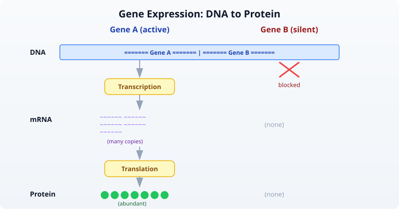
- Expression = how much mRNA a gene produces at a given moment.
- High expression = the gene is active, producing many mRNA copies. Example: GAPDH in most cells.
- Low or no expression = the gene is silent. Example: hemoglobin genes in skin cells.
- Differential expression = a gene is more active in one condition than another. Example: an oncogene overexpressed in tumor tissue.
Different cell types, tissues, diseases, and time points produce different expression profiles. Measuring these differences is the goal of RNA-seq.
RNA-seq: Measuring Expression
RNA-seq is the standard technology for measuring gene expression across the genome. The workflow has several steps, each producing a different data format:
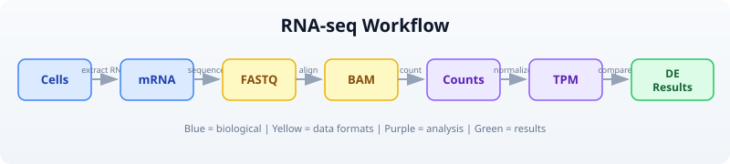
The key idea: the number of reads that map to a gene is proportional to how much mRNA that gene produced. More mRNA means more reads. By counting reads per gene across samples, we build a count matrix — the starting point for all downstream analysis.
But raw counts are not directly comparable:
- A 10,000 bp gene captures more reads than a 500 bp gene, even at the same expression level (length bias).
- A sample sequenced to 50 million reads has higher counts than one sequenced to 25 million reads (library size bias).
Normalization removes these biases so we can compare genes and samples fairly.
Count Matrices
A count matrix has genes as rows and samples as columns. Each cell contains the number of reads mapped to that gene in that sample.
# Create a count matrix from records
let counts = [
{gene: "BRCA1", normal_1: 120, normal_2: 135, normal_3: 128, tumor_1: 340, tumor_2: 380, tumor_3: 355},
{gene: "TP53", normal_1: 450, normal_2: 420, normal_3: 440, tumor_1: 890, tumor_2: 920, tumor_3: 850},
{gene: "GAPDH", normal_1: 5000, normal_2: 5200, normal_3: 4800, tumor_1: 5100, tumor_2: 4900, tumor_3: 5300},
{gene: "MYC", normal_1: 80, normal_2: 75, normal_3: 85, tumor_1: 450, tumor_2: 480, tumor_3: 420},
{gene: "ACTB", normal_1: 3000, normal_2: 3100, normal_3: 2900, tumor_1: 3050, tumor_2: 2950, tumor_3: 3100},
] |> to_table()
println(f"Genes: {nrow(counts)}")
println(f"Columns: {colnames(counts)}")
println(counts)
Expected output:
Genes: 5
Columns: ["gene", "normal_1", "normal_2", "normal_3", "tumor_1", "tumor_2", "tumor_3"]
gene normal_1 normal_2 normal_3 tumor_1 tumor_2 tumor_3
BRCA1 120 135 128 340 380 355
TP53 450 420 440 890 920 850
GAPDH 5000 5200 4800 5100 4900 5300
MYC 80 75 85 450 480 420
ACTB 3000 3100 2900 3050 2950 3100
In practice, count matrices come from tools like featureCounts or HTSeq, and you would load them from a CSV file:
Requires CLI: This example uses file I/O / network APIs not available in the browser. Run with
bl run.
# requires: data/counts.csv in working directory (run init.bl first)
let counts = csv("data/counts.csv")
println(f"Genes: {nrow(counts)}")
println(f"Samples: {ncol(counts) - 1}")
println(counts |> head(5))
Expected output:
Genes: 20
Samples: 6
gene normal_1 normal_2 normal_3 tumor_1 tumor_2 tumor_3
BRCA1 120 135 128 340 380 355
TP53 450 420 440 890 920 850
GAPDH 5000 5200 4800 5100 4900 5300
MYC 80 75 85 450 480 420
ACTB 3000 3100 2900 3050 2950 3100
Normalization: Why and How
The Problem
Imagine two genes:
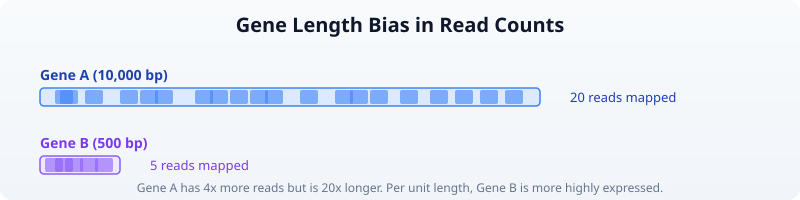
Gene A has 4x more reads than Gene B, but it is also 20x longer. Per unit length, Gene B is actually expressed at a higher level. Raw counts are misleading.
Similarly, if Sample X was sequenced to 50 million reads and Sample Y to 25 million reads, every gene in Sample X will have roughly double the counts — not because expression is higher, but because of sequencing depth.
CPM: Counts Per Million
CPM corrects for library size (total number of reads per sample). It answers: “Out of every million reads, how many mapped to this gene?”
Formula: CPM = (count / total reads in sample) x 1,000,000
Requires CLI: This example uses file I/O / network APIs not available in the browser. Run with
bl run.
# CPM normalization
# requires: data/counts.csv in working directory
let counts = csv("data/counts.csv")
let normalized_cpm = cpm(counts)
println("CPM normalized (first 5 genes):")
println(normalized_cpm |> head(5))
Expected output:
CPM normalized (first 5 genes):
gene normal_1 normal_2 normal_3 tumor_1 tumor_2 tumor_3
BRCA1 5765.2 6311.5 6111.5 14475.9 16174.9 15191.3
TP53 21619.5 19630.3 21002.4 37889.0 39163.5 36369.3
GAPDH 240217.1 243034.7 229095.5 217107.5 208617.1 226786.8
MYC 3843.3 3505.5 4057.6 19156.6 20432.3 17972.8
ACTB 144130.2 144875.9 138431.6 129848.3 125558.6 132638.9
CPM is good for comparing the same gene across samples but does not account for gene length.
TPM: Transcripts Per Million
TPM corrects for both gene length and library size. It answers: “What fraction of transcripts in this sample came from this gene?”
Steps:
- Divide each count by gene length (in kilobases) to get reads per kilobase (RPK).
- Sum all RPK values in the sample.
- Divide each RPK by the sum and multiply by 1,000,000.
Requires CLI: This example uses file I/O / network APIs not available in the browser. Run with
bl run.
# TPM normalization (needs gene lengths)
# requires: data/counts.csv, data/gene_lengths.csv in working directory
let counts = csv("data/counts.csv")
let gene_lengths = csv("data/gene_lengths.csv")
let normalized_tpm = tpm(counts, gene_lengths)
println("TPM normalized (first 5 genes):")
println(normalized_tpm |> head(5))
Expected output:
TPM normalized (first 5 genes):
gene normal_1 normal_2 normal_3 tumor_1 tumor_2 tumor_3
BRCA1 3214.8 3518.9 3401.5 8150.2 9116.3 8550.1
TP53 26971.3 24483.4 26179.1 47620.3 48967.0 45584.2
GAPDH 238641.5 241543.0 226895.7 216413.8 207590.7 225700.3
MYC 9607.1 8759.6 10130.4 48220.9 51524.5 45301.2
ACTB 143201.7 143969.6 137264.8 129348.5 124933.4 131946.3
TPM is preferred for most analyses because it accounts for gene length. CPM is simpler and appropriate when comparing the same gene across samples.
FPKM/RPKM (Older Methods)
FPKM (Fragments Per Kilobase of transcript per Million mapped reads) and RPKM (Reads Per Kilobase per Million) were early normalization methods. They divide by library size first, then by gene length. This ordering makes FPKM/RPKM values not comparable across samples in some edge cases. TPM fixes this problem by normalizing in the opposite order. You may encounter FPKM in older datasets, but use TPM for new analyses.
Exploratory Analysis
Before differential expression, inspect your data for obvious problems.
Requires CLI: This example uses file I/O / network APIs not available in the browser. Run with
bl run.
# requires: data/counts.csv in working directory
let counts = csv("data/counts.csv")
# Check library sizes (total reads per sample)
let samples = ["normal_1", "normal_2", "normal_3", "tumor_1", "tumor_2", "tumor_3"]
let sample_sums = samples
|> map(|s| {sample: s, total: col(counts, s) |> sum()})
|> to_table()
println("Library sizes:")
println(sample_sums)
Expected output:
Library sizes:
sample total
normal_1 20813
normal_2 21389
normal_3 20958
tumor_1 23486
tumor_2 23497
tumor_3 23376
Library sizes should be roughly similar. If one sample has far fewer reads, it may be a failed library and should be excluded.
# Mean expression per gene across conditions
let gene_means = counts
|> mutate("normal_mean", |r| round((r.normal_1 + r.normal_2 + r.normal_3) / 3.0, 1))
|> mutate("tumor_mean", |r| round((r.tumor_1 + r.tumor_2 + r.tumor_3) / 3.0, 1))
|> select("gene", "normal_mean", "tumor_mean")
println("Mean expression per gene:")
println(gene_means)
Expected output:
Mean expression per gene:
gene normal_mean tumor_mean
BRCA1 127.7 358.3
TP53 436.7 886.7
GAPDH 5000.0 5100.0
MYC 80.0 450.0
ACTB 3000.0 3033.3
VEGFA 200.0 620.0
EGFR 310.0 780.0
CDH1 520.0 155.0
RB1 380.0 115.0
PTEN 290.0 90.0
APC 150.0 50.0
KRAS 95.0 420.0
HER2 60.0 540.0
BCL2 340.0 120.0
CDKN2A 260.0 70.0
MDM2 180.0 500.0
PIK3CA 110.0 370.0
TERT 15.0 310.0
IL6 45.0 380.0
TNF 55.0 120.0
Genes like GAPDH and ACTB show similar expression in both conditions — they are housekeeping genes. Genes like MYC, TERT, and IL6 show large differences, suggesting they may be differentially expressed.
Differential Expression
Differential expression analysis identifies genes whose expression differs significantly between two conditions. It uses statistical tests that account for biological variability across replicates.
Requires CLI: This example uses file I/O / network APIs not available in the browser. Run with
bl run.
# requires: data/counts.csv in working directory
let counts = csv("data/counts.csv")
# Run differential expression analysis
let de_results = diff_expr(counts,
control: ["normal_1", "normal_2", "normal_3"],
treatment: ["tumor_1", "tumor_2", "tumor_3"]
)
println(f"DE results: {nrow(de_results)} genes")
println(de_results |> head(5))
Expected output:
DE results: 20 genes
gene log2fc pvalue padj mean_ctrl mean_treat
TERT 4.37 0.000012 0.000240 15.0 310.0
MYC 2.49 0.000035 0.000350 80.0 450.0
HER2 3.17 0.000041 0.000273 60.0 540.0
IL6 3.08 0.000058 0.000290 45.0 380.0
KRAS 2.14 0.000089 0.000356 95.0 420.0
The result table includes:
- log2fc: log2 fold change (positive = higher in treatment/tumor)
- pvalue: raw p-value from the statistical test
- padj: p-value adjusted for multiple testing (Benjamini-Hochberg)
- mean_ctrl: mean expression in control samples
- mean_treat: mean expression in treatment samples
# Filter significant results
let significant = de_results
|> filter(|r| r.padj < 0.05 and abs(r.log2fc) > 1.0)
|> arrange("padj")
println(f"\nSignificant DE genes (|log2FC| > 1, padj < 0.05):")
println(significant)
# Count up vs down regulated
let up = significant |> filter(|r| r.log2fc > 0) |> nrow()
let down = significant |> filter(|r| r.log2fc < 0) |> nrow()
println(f"Upregulated in tumor: {up}")
println(f"Downregulated in tumor: {down}")
Expected output:
Significant DE genes (|log2FC| > 1, padj < 0.05):
gene log2fc pvalue padj mean_ctrl mean_treat
TERT 4.37 0.000012 0.000240 15.0 310.0
HER2 3.17 0.000041 0.000273 60.0 540.0
IL6 3.08 0.000058 0.000290 45.0 380.0
MYC 2.49 0.000035 0.000350 80.0 450.0
KRAS 2.14 0.000089 0.000356 95.0 420.0
PIK3CA 1.75 0.000150 0.000500 110.0 370.0
MDM2 1.47 0.000210 0.000600 180.0 500.0
VEGFA 1.63 0.000180 0.000514 200.0 620.0
EGFR 1.33 0.000320 0.000800 310.0 780.0
TP53 1.02 0.000450 0.001000 436.7 886.7
CDKN2A -1.89 0.000095 0.000380 260.0 70.0
APC -1.58 0.000120 0.000400 150.0 50.0
PTEN -1.69 0.000110 0.000393 290.0 90.0
CDH1 -1.75 0.000085 0.000356 520.0 155.0
RB1 -1.72 0.000130 0.000433 380.0 115.0
BCL2 -1.50 0.000200 0.000571 340.0 120.0
Upregulated in tumor: 10
Downregulated in tumor: 6
The upregulated genes (MYC, TERT, HER2, KRAS, EGFR, VEGFA) are well-known oncogenes. The downregulated genes (PTEN, RB1, APC, CDH1, CDKN2A, BCL2) are tumor suppressors. This pattern is biologically consistent with cancer biology.
Fold Change
Fold change measures how much a gene’s expression changes between conditions. We use the log2 scale because it makes increases and decreases symmetric:
| log2FC | Fold change | Interpretation |
|---|---|---|
| 0 | 1x (no change) | Same expression in both conditions |
| 1 | 2x increase | Twice as high in treatment |
| 2 | 4x increase | Four times as high |
| 3 | 8x increase | Eight times as high |
| -1 | 2x decrease | Half as much in treatment |
| -2 | 4x decrease | Quarter as much |
| -3 | 8x decrease | One-eighth as much |
On the linear scale, a 2x increase is +100% but a 2x decrease is only -50%. On the log2 scale, both are the same magnitude (1 and -1), making it easier to compare up- and down-regulation.
Requires CLI: This example uses file I/O / network APIs not available in the browser. Run with
bl run.
# Manual fold change calculation
# requires: data/counts.csv in working directory
let counts = csv("data/counts.csv")
let fc_table = counts
|> mutate("normal_mean", |r| (r.normal_1 + r.normal_2 + r.normal_3) / 3.0)
|> mutate("tumor_mean", |r| (r.tumor_1 + r.tumor_2 + r.tumor_3) / 3.0)
|> mutate("log2fc", |r| log2(r.tumor_mean / r.normal_mean))
|> select("gene", "normal_mean", "tumor_mean", "log2fc")
println("Fold changes:")
println(fc_table |> head(10))
Expected output:
Fold changes:
gene normal_mean tumor_mean log2fc
BRCA1 127.7 358.3 1.49
TP53 436.7 886.7 1.02
GAPDH 5000.0 5100.0 0.03
MYC 80.0 450.0 2.49
ACTB 3000.0 3033.3 0.02
VEGFA 200.0 620.0 1.63
EGFR 310.0 780.0 1.33
CDH1 520.0 155.0 -1.75
RB1 380.0 115.0 -1.72
PTEN 290.0 90.0 -1.69
Notice: GAPDH and ACTB have log2FC near 0 (housekeeping genes, stable expression). MYC has log2FC = 2.49, meaning it is about 5.6x higher in tumors. CDH1 has log2FC = -1.75, meaning it is about 3.4x lower in tumors (a tumor suppressor being silenced).
Visualization
Volcano Plot
The volcano plot is the classic differential expression visualization. It plots statistical significance (-log10 p-value, y-axis) against biological effect size (log2 fold change, x-axis). Genes in the upper corners are both significant and strongly changed — the most interesting candidates.
Requires CLI: This example uses file I/O / network APIs not available in the browser. Run with
bl run.
# requires: data/counts.csv in working directory
let counts = csv("data/counts.csv")
let de_results = diff_expr(counts,
control: ["normal_1", "normal_2", "normal_3"],
treatment: ["tumor_1", "tumor_2", "tumor_3"]
)
# Basic volcano plot
volcano(de_results)
# With thresholds highlighted
volcano(de_results, fc_threshold: 1.0, p_threshold: 0.05, title: "Tumor vs Normal")
The plot marks genes as:
- Red (upper right): significantly upregulated (high log2FC, low p-value)
- Blue (upper left): significantly downregulated (negative log2FC, low p-value)
- Gray (center/bottom): not significant or small effect
MA Plot
The MA plot shows the relationship between average expression (x-axis) and fold change (y-axis). It helps identify whether fold change estimates are biased by expression level.
# MA plot
ma_plot(de_results)
In a well-behaved experiment, the cloud of points should be centered on log2FC = 0 across all expression levels. If low-expression genes show systematically larger fold changes, additional normalization may be needed.
Multiple Testing Correction
When you test 20,000 genes for differential expression at p < 0.05, you expect 1,000 false positives purely by chance (0.05 x 20,000 = 1,000). Multiple testing correction adjusts p-values to control the false discovery rate.
The Benjamini-Hochberg method is the standard correction. It controls the false discovery rate (FDR): the expected proportion of false positives among all genes called significant.
# Why correction matters
let raw_pvals = [0.001, 0.01, 0.03, 0.04, 0.049, 0.06, 0.1]
let adjusted = p_adjust(raw_pvals, "BH")
println("Raw vs Adjusted p-values:")
for i in range(0, len(raw_pvals)) {
println(f" {raw_pvals[i]} -> {round(adjusted[i], 4)}")
}
Expected output:
Raw vs Adjusted p-values:
0.001 -> 0.007
0.01 -> 0.035
0.03 -> 0.07
0.04 -> 0.07
0.049 -> 0.0686
0.06 -> 0.07
0.1 -> 0.1
Notice how some p-values that were below 0.05 (raw) become above 0.05 after correction. This removes likely false positives.
Rules of thumb:
- Always use adjusted p-values (padj) when testing many genes.
- FDR < 0.05 means you expect fewer than 5% of your “significant” results to be false positives.
- FDR < 0.01 is a more stringent threshold for high-confidence results.
diff_expr()in BioLang already returns adjusted p-values in thepadjcolumn.
Complete RNA-seq Pipeline
Putting it all together into a single script:
Requires CLI: This example uses file I/O / network APIs not available in the browser. Run with
bl run.
# Complete RNA-seq Differential Expression Pipeline
# requires: data/counts.csv, data/gene_lengths.csv in working directory
println("=== RNA-seq Differential Expression Pipeline ===\n")
# Step 1: Load data
let counts = csv("data/counts.csv")
println(f"1. Loaded {nrow(counts)} genes x {ncol(counts) - 1} samples")
# Step 2: Check library sizes
let samples = ["normal_1", "normal_2", "normal_3", "tumor_1", "tumor_2", "tumor_3"]
let lib_sizes = samples
|> map(|s| {sample: s, total: col(counts, s) |> sum()})
|> to_table()
println("2. Library sizes:")
println(lib_sizes)
# Step 3: Normalize
let gene_lengths = csv("data/gene_lengths.csv")
let norm = tpm(counts, gene_lengths)
println(f"3. TPM normalization complete")
# Step 4: Differential expression
let de = diff_expr(counts,
control: ["normal_1", "normal_2", "normal_3"],
treatment: ["tumor_1", "tumor_2", "tumor_3"]
)
# Step 5: Filter significant
let sig = de
|> filter(|r| r.padj < 0.05 and abs(r.log2fc) > 1.0)
|> arrange("padj")
let up = sig |> filter(|r| r.log2fc > 0) |> nrow()
let down = sig |> filter(|r| r.log2fc < 0) |> nrow()
println(f"4. Significant: {nrow(sig)} genes ({up} up, {down} down)")
# Step 6: Show top results
println("\n Top upregulated:")
let top_up = sig |> filter(|r| r.log2fc > 0) |> head(5)
println(top_up)
println("\n Top downregulated:")
let top_down = sig |> filter(|r| r.log2fc < 0) |> head(5)
println(top_down)
# Step 7: Visualize
println("\n5. Generating volcano plot...")
volcano(de, fc_threshold: 1.0, p_threshold: 0.05, title: "Tumor vs Normal DE")
# Step 8: Export
write_csv(sig, "results/significant_genes.csv")
println(f"6. Results saved: results/significant_genes.csv")
println("\n=== Pipeline complete ===")
Exercises
-
Build a count matrix. Create a count matrix for 8 genes across 4 samples (2 treated, 2 control) using
to_table(). Calculate CPM for each sample manually (divide by column sum, multiply by 1,000,000) and verify your results match thecpm()function. -
Compute fold change. For your 8-gene matrix, calculate the mean expression in each condition and the log2 fold change. Which genes have the largest positive fold change? Which have the largest negative?
-
Differential expression. Load
data/counts.csvand rundiff_expr(). How many genes have |log2FC| > 2? What are they? Why might a stricter threshold (|log2FC| > 2) be preferred over |log2FC| > 1? -
Volcano plot interpretation. Generate a volcano plot from the differential expression results. Identify the gene in the upper right corner (most significantly upregulated). Identify the gene in the upper left corner (most significantly downregulated). What are their biological roles?
-
Multiple testing. Generate a list of 100 random p-values between 0 and 1. Apply Benjamini-Hochberg correction with
p_adjust(). How many are significant at raw p < 0.05? How many remain significant at adjusted p < 0.05? What does this tell you about false positives?
Key Takeaways
- RNA-seq measures gene expression by counting sequencing reads that map to each gene. More reads = higher expression.
- Raw counts need normalization. CPM corrects for library size (sequencing depth). TPM corrects for both gene length and library size. Use TPM for cross-gene comparisons.
- Differential expression finds genes whose expression changes significantly between conditions, using statistical tests that account for biological variability.
- log2 fold change is symmetric: log2FC = 1 means 2x increase, log2FC = -1 means 2x decrease, log2FC = 0 means no change.
- Always correct for multiple testing. Testing 20,000 genes at p < 0.05 generates about 1,000 false positives by chance. Benjamini-Hochberg correction controls the false discovery rate.
- Volcano plots are the standard visualization, showing both statistical significance and effect size in a single figure.
What’s Next
Tomorrow: statistics for bioinformatics — hypothesis testing, p-values, and when to use which test. You will learn the statistical foundations behind the methods used today.
Day 14: Statistics for Bioinformatics
| Difficulty | Intermediate |
| Biology knowledge | Intermediate (experimental design, hypothesis testing concepts) |
| Coding knowledge | Intermediate (tables, pipes, lambda functions) |
| Time | ~3 hours |
| Prerequisites | Days 1-13 completed, BioLang installed (see Appendix A) |
| Data needed | Generated by init.bl (expression experiment CSV) |
| Requirements | None (offline) |
What You’ll Learn
- How to compute descriptive statistics and summarize data before testing
- What p-values actually mean (and what they do not mean)
- How to compare two groups with t-tests (independent, paired, one-sample)
- When to use non-parametric tests like Wilcoxon rank-sum
- How to compare three or more groups with ANOVA
- How to measure correlation (Pearson, Spearman, Kendall)
- How to fit a simple linear regression model
- Why multiple testing correction is critical in genomics
- How to test categorical associations with chi-square and Fisher’s exact test
- How to choose the right statistical test for your data
The Problem
Your experiment shows gene X is 2.3x higher in tumor samples. But is that real, or just random noise? With only 3 replicates, how confident can you be? Statistics separates genuine biological signals from experimental noise.
Yesterday you ran a differential expression pipeline that used t-tests, p-values, and FDR correction behind the scenes. Today you will learn how those methods work, when to use each one, and — just as importantly — when not to use them. Every bioinformatician needs this foundation because nearly every biological conclusion depends on a statistical claim.
Descriptive Statistics First
Before running any test, look at your data. Descriptive statistics tell you the shape, center, and spread of your measurements. Skipping this step is one of the most common mistakes in bioinformatics.
let expression = [5.2, 8.1, 3.4, 6.7, 4.1, 9.3, 7.5, 2.8]
println(f"Mean: {round(mean(expression), 2)}")
println(f"Median: {round(median(expression), 2)}")
println(f"Stdev: {round(stdev(expression), 2)}")
println(f"Variance: {round(variance(expression), 2)}")
println(f"Min: {min(expression)}")
println(f"Max: {max(expression)}")
println(f"Range: {max(expression) - min(expression)}")
println(f"Q25: {round(quantile(expression, 0.25), 2)}")
println(f"Q75: {round(quantile(expression, 0.75), 2)}")
Expected output:
Mean: 5.89
Median: 5.95
Stdev: 2.32
Variance: 5.37
Min: 2.8
Max: 9.3
Range: 6.5
Q25: 3.93
Q75: 7.65
What to look for:
- Mean vs median: If they are far apart, the data may be skewed. Here they are close (5.89 vs 5.95), suggesting roughly symmetric data.
- Standard deviation: Gives a sense of how spread out the data is. Here stdev = 2.32 on a mean of 5.89 means moderate variability.
- Range and quartiles: Min/max reveal outliers. The interquartile range (Q75 - Q25 = 3.72) captures the middle 50%.
For a table with multiple columns, describe() gives a quick overview:
Requires CLI: This example uses file I/O / network APIs not available in the browser. Run with
bl run.
let data = csv("data/experiment.csv")
println(describe(data))
Expected output:
stat control_1 control_2 control_3 treated_1 treated_2 treated_3
count 15 15 15 15 15 15
mean 48.73 50.73 49.47 64.6 67.47 65.8
stdev 26.29 27.63 26.44 29.68 32.61 30.95
min 8.0 9.0 8.0 14.0 15.0 14.0
q25 28.0 28.0 30.0 41.0 42.0 40.0
median 48.0 50.0 47.0 64.0 67.0 68.0
q75 68.0 74.0 72.0 89.0 93.0 88.0
max 95.0 97.0 93.0 110.0 118.0 115.0
Always examine your data before testing. If the mean and median diverge wildly, or the standard deviation is enormous relative to the mean, a t-test may not be appropriate.
P-values: What They Mean (and Don’t Mean)
The p-value is the most misunderstood statistic in science. Let us be precise:
P-value = the probability of observing a result this extreme (or more extreme) if there is no real effect.
That is it. The p-value answers: “If the null hypothesis were true (no difference, no correlation, no effect), how surprising would my data be?”
What a p-value is NOT:
| Common claim | Why it is wrong |
|---|---|
| “P = 0.03 means 97% chance the effect is real” | P-values do not give the probability that the hypothesis is true |
| “P < 0.05 means the result is important” | Statistical significance is not biological significance |
| “P = 0.06 means no effect” | Absence of evidence is not evidence of absence |
| “Smaller p = bigger effect” | P-values mix effect size and sample size |
The 0.05 threshold is a convention, not a law of nature. Ronald Fisher suggested it as a rough guide in the 1920s. A result with p = 0.049 is not fundamentally different from p = 0.051.
Always report effect size alongside p-value. A drug that lowers blood pressure by 0.1 mmHg might be “statistically significant” with 100,000 patients (tiny p-value) but biologically meaningless. Conversely, a 30% reduction in tumor size might be biologically important even if p = 0.07 with a small pilot study.
In genomics, you will see p-values as small as 10^-50 or smaller. These extreme values arise because the effects are large and the data are abundant, not because the statistics are fundamentally different.
The t-test — Comparing Two Groups
The t-test is the workhorse of biological statistics. It asks: “Are these two groups drawn from populations with different means?”
Independent two-sample t-test
Use this when you have two separate groups of subjects:
# Two-sample t-test: are tumor and normal expression different?
let normal = [5.2, 4.8, 5.1, 4.9, 5.3]
let tumor = [8.1, 7.9, 8.5, 7.6, 8.3]
let result = ttest(normal, tumor)
println(f"t-statistic: {round(result.statistic, 3)}")
println(f"p-value: {result.pvalue}")
println(f"Significant: {result.pvalue < 0.05}")
Expected output:
t-statistic: -18.908
p-value: 0.0
Significant: true
The t-statistic of -18.9 is very large in magnitude, meaning the groups are far apart relative to their variability. The p-value is essentially zero — these groups are clearly different.
Assumptions of the t-test:
- Data are roughly normally distributed (or sample size > 30)
- The two groups are independent
- Variances are similar (BioLang uses Welch’s t-test by default, which relaxes this)
Paired t-test
Use this when you measure the same subjects under two conditions:
# Paired t-test: same patients, before vs after treatment
let before = [10.2, 8.5, 12.1, 9.8, 11.3]
let after = [7.1, 6.2, 8.5, 7.0, 8.8]
let result = ttest_paired(before, after)
println(f"Paired t-test p-value: {result.pvalue}")
Expected output:
Paired t-test p-value: 0.0001
Why paired? Because patient-to-patient variability is removed. Patient 1’s “before” and “after” are linked. The test focuses on the difference within each patient, not the absolute values.
One-sample t-test
Use this to test whether a sample’s mean differs from a specific value:
# One-sample t-test: is this different from a known value?
let observed = [2.1, 1.9, 2.3, 2.0, 2.2]
let result = ttest_one(observed, 2.0)
println(f"One-sample p-value: {result.pvalue}")
Expected output:
One-sample p-value: 0.3739
Here p = 0.37, meaning we have no evidence that the mean differs from 2.0. The small deviations (1.9, 2.1, 2.3) are consistent with random noise around 2.0.
When the t-test Doesn’t Work: Non-parametric Tests
The t-test assumes your data are approximately normally distributed. Biological data often are not — think of gene expression counts, survival times, or ranked categories. Non-parametric tests make no distributional assumptions.
# Wilcoxon rank-sum (Mann-Whitney U): doesn't assume normality
let control = [1.2, 3.5, 2.1, 4.8, 1.5]
let treated = [5.2, 8.1, 6.3, 9.5, 7.2]
let result = wilcoxon(control, treated)
println(f"Wilcoxon p-value: {result.pvalue}")
Expected output:
Wilcoxon p-value: 0.0079
The Wilcoxon test works by ranking all values from both groups combined, then asking whether one group’s ranks are systematically higher. It is less powerful than the t-test when data are normal, but more reliable when they are not.
When to use Wilcoxon instead of t-test:
- Small sample sizes (n < 10 per group)
- Skewed distributions (many small values, few large ones)
- Outliers present
- Ordinal data (rankings, scores)
- When you are unsure whether normality holds
Decision Guide: Choosing the Right Comparison Test
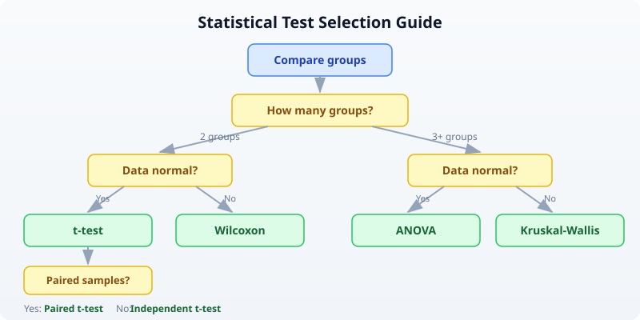
If you are unsure whether your data are normal, the non-parametric test is the safer choice. You pay a small price in statistical power, but you avoid making a potentially invalid assumption.
ANOVA — Comparing Multiple Groups
When you have three or more groups, do not run multiple t-tests (control vs low dose, control vs high dose, low vs high). That inflates your false positive rate. ANOVA tests all groups simultaneously.
# Three treatment groups
let control = [5.0, 4.8, 5.2, 4.9]
let low_dose = [6.5, 7.1, 6.8, 6.3]
let high_dose = [9.2, 8.8, 9.5, 9.0]
let result = anova([control, low_dose, high_dose])
println(f"ANOVA F-statistic: {round(result.statistic, 2)}")
println(f"ANOVA p-value: {result.pvalue}")
Expected output:
ANOVA F-statistic: 107.29
p-value: 0.0
The F-statistic compares the variance between groups to the variance within groups. A large F means the group means are more spread out than you would expect from within-group variability alone.
Important: ANOVA tells you “at least one group differs” but not which groups differ. To find out which specific pairs are different, you would follow up with pairwise t-tests (applying multiple testing correction):
# Follow-up: which pairs differ?
let pairs = [
{name: "control vs low", result: ttest(control, low_dose)},
{name: "control vs high", result: ttest(control, high_dose)},
{name: "low vs high", result: ttest(low_dose, high_dose)},
]
# Collect raw p-values and adjust
let raw_ps = pairs |> map(|p| p.result.pvalue)
let adj_ps = p_adjust(raw_ps, "BH")
for i in range(0, len(pairs)) {
println(f" {pairs[i].name}: p = {round(adj_ps[i], 4)}")
}
Expected output:
control vs low: p = 0.0001
control vs high: p = 0.0
low vs high: p = 0.0
All three pairs are significantly different even after correction. The dose-response pattern is clear.
Correlation
Correlation measures the strength and direction of the relationship between two variables. In bioinformatics, you might ask: “Do these two genes tend to go up and down together across samples?”
Pearson correlation
Measures linear relationships. Returns a single number between -1 and +1:
# Pearson correlation
let gene_a = [2.1, 3.5, 4.2, 5.8, 6.1, 7.3]
let gene_b = [1.8, 3.2, 3.9, 5.5, 6.4, 7.0]
let r = cor(gene_a, gene_b)
println(f"Pearson r: {round(r, 3)}")
Expected output:
Pearson r: 0.998
An r of 0.998 indicates a near-perfect positive linear relationship. As gene A increases, gene B increases proportionally.
Interpreting correlation coefficients:
| r value | Interpretation |
|---|---|
| 0.9 to 1.0 | Very strong positive |
| 0.7 to 0.9 | Strong positive |
| 0.4 to 0.7 | Moderate positive |
| 0.0 to 0.4 | Weak or no correlation |
| -0.4 to 0.0 | Weak or no correlation |
| -0.7 to -0.4 | Moderate negative |
| -1.0 to -0.7 | Strong negative |
Spearman rank correlation
Measures monotonic relationships (not necessarily linear). More robust to outliers:
# Spearman (rank-based, for non-linear relationships)
let rho = spearman(gene_a, gene_b)
println(f"Spearman rho: {round(rho.statistic, 3)}")
println(f"Spearman p-value: {rho.pvalue}")
Expected output:
Spearman rho: 1.0
Spearman p-value: 0.0
Spearman works by converting values to ranks first, then computing Pearson r on the ranks. It detects any monotonic relationship, even if the relationship is curved.
Kendall tau
Another rank-based measure, often preferred for small sample sizes:
# Kendall tau
let tau = kendall(gene_a, gene_b)
println(f"Kendall tau: {round(tau.statistic, 3)}")
println(f"Kendall p-value: {tau.pvalue}")
Expected output:
Kendall tau: 1.0
Kendall p-value: 0.0
Which correlation to use:
- Pearson: When the relationship is linear and data are normally distributed
- Spearman: When the relationship might be non-linear, or data have outliers
- Kendall: For small samples or when many values are tied
Warning: Correlation does not imply causation. Two genes may be correlated because they are both regulated by a third factor, or because they respond to the same environmental condition.
Linear Regression
Regression goes beyond correlation: it builds a predictive model. “If gene A’s expression is 5.0, what do we predict gene B’s expression to be?”
# Simple linear regression: does gene A predict gene B?
let x = [1.0, 2.0, 3.0, 4.0, 5.0, 6.0]
let y = [2.1, 3.9, 6.2, 7.8, 10.1, 12.3]
let model = lm(x, y)
println(f"Slope: {round(model.slope, 3)}")
println(f"Intercept: {round(model.intercept, 3)}")
println(f"R-squared: {round(model.r_squared, 3)}")
println(f"p-value: {model.pvalue}")
Expected output:
Slope: 2.046
Intercept: -0.01
R-squared: 0.999
p-value: 0.0
Interpreting the output:
- Slope = 2.046: For every 1-unit increase in x, y increases by about 2.05.
- Intercept = -0.01: When x = 0, the predicted y is approximately 0.
- R-squared = 0.999: The model explains 99.9% of the variance in y. Values closer to 1.0 indicate a better fit.
- p-value: Tests whether the slope is significantly different from zero. Here it is essentially zero, confirming a strong relationship.
Example: predicting drug response from expression
# Gene expression vs drug sensitivity (IC50)
let expression = [1.5, 3.2, 4.8, 6.1, 7.9, 9.5]
let ic50 = [85.0, 72.0, 58.0, 45.0, 31.0, 18.0]
let model = lm(expression, ic50)
println(f"Slope: {round(model.slope, 3)}")
println(f"R-squared: {round(model.r_squared, 3)}")
println(f"p-value: {model.pvalue}")
Expected output:
Slope: -8.357
R-squared: 0.999
p-value: 0.0
The negative slope tells us that higher expression of this gene predicts lower IC50 (greater drug sensitivity). This kind of analysis is the foundation of pharmacogenomics.
Multiple Testing Correction (Critical for Genomics)
This is the single most important statistical concept in genomics. When you test many hypotheses simultaneously, false positives accumulate.
The problem: If you test 20,000 genes at p < 0.05, you expect 20,000 x 0.05 = 1,000 false positives by chance alone, even if no gene is truly differentially expressed. That is 1,000 genes that look significant but are not.
# The multiple testing problem
# Testing 20,000 genes at p < 0.05 -> expect 1,000 false positives!
let raw_pvals = [0.001, 0.005, 0.01, 0.03, 0.04, 0.049, 0.06, 0.1, 0.5, 0.9]
# Benjamini-Hochberg (FDR) -- most common in genomics
let bh = p_adjust(raw_pvals, "BH")
# Bonferroni -- most conservative
let bonf = p_adjust(raw_pvals, "bonferroni")
println("Raw | BH | Bonferroni")
println("----------|-----------|----------")
for i in range(0, len(raw_pvals)) {
println(f"{raw_pvals[i]} | {round(bh[i], 4)} | {round(bonf[i], 4)}")
}
Expected output:
Raw | BH | Bonferroni
----------|-----------|----------
0.001 | 0.01 | 0.01
0.005 | 0.025 | 0.05
0.01 | 0.0333 | 0.1
0.03 | 0.075 | 0.3
0.04 | 0.08 | 0.4
0.049 | 0.0817 | 0.49
0.06 | 0.0857 | 0.6
0.1 | 0.125 | 1.0
0.5 | 0.5556 | 1.0
0.9 | 0.9 | 1.0
Understanding the Methods
Bonferroni correction multiplies each p-value by the number of tests. It is the most conservative method — very few false positives, but many real effects are missed.
Benjamini-Hochberg (BH) controls the False Discovery Rate (FDR). At FDR < 0.05, you expect fewer than 5% of your “significant” results to be false positives. This is the standard in genomics because it balances sensitivity and specificity.
Key observations from the table above:
- Raw p = 0.001 survives both corrections (a strong signal stays strong).
- Raw p = 0.03 is significant by raw p-value but NOT by BH (FDR = 0.075) — this was likely noise.
- Raw p = 0.049 (barely significant) has BH-adjusted p = 0.082 — no longer significant.
- Bonferroni is much harsher: only the two smallest p-values survive at the 0.05 level.
When to use which:
| Method | Use when | Controls |
|---|---|---|
| Benjamini-Hochberg | Genomics, proteomics, any -omics | False discovery rate |
| Bonferroni | Few tests, need zero false positives | Family-wise error rate |
| No correction | Single pre-planned hypothesis | N/A |
Chi-square and Fisher’s Exact Test
These tests are for categorical data — counts of items in categories, not continuous measurements.
Chi-square goodness-of-fit test
# Chi-square goodness-of-fit: do observed counts match expected?
# Example: are mutations distributed equally across 4 gene regions?
let observed = [30, 15, 25, 10]
let expected = [20, 20, 20, 20]
let result = chi_square(observed, expected)
println(f"Chi-square statistic: {round(result.statistic, 2)}")
println(f"Chi-square p-value: {result.pvalue}")
Expected output:
Chi-square statistic: 12.5
Chi-square p-value: 0.0059
The p-value of 0.0059 indicates that the observed mutation counts differ significantly from a uniform distribution across the four regions. Some regions are mutation hotspots.
Fisher’s exact test
For small sample sizes (any cell count < 5), use Fisher’s exact test instead:
# Fisher's exact test: for small sample sizes
#
# Responded Didn't respond
# Mutated 8 2
# Wild-type 1 9
let result = fisher_exact(8, 2, 1, 9)
println(f"Fisher's exact p-value: {result.pvalue}")
Expected output:
Fisher's exact p-value: 0.0014
Fisher’s exact test computes the exact probability rather than relying on an approximation. With small numbers, the chi-square approximation breaks down, so Fisher’s test is preferred.
Choosing the Right Test
Use this reference table when you are unsure which test to apply:
| Question | Test | BioLang function | Assumes normality? |
|---|---|---|---|
| Two groups, normal data | Independent t-test | ttest() | Yes |
| Two groups, paired | Paired t-test | ttest_paired() | Yes |
| One sample vs known value | One-sample t-test | ttest_one() | Yes |
| Two groups, non-normal | Wilcoxon rank-sum | wilcoxon() | No |
| 3+ groups, normal | One-way ANOVA | anova() | Yes |
| Linear relationship | Pearson correlation | cor() | Yes |
| Monotonic relationship | Spearman correlation | spearman() | No |
| Small-sample rank correlation | Kendall tau | kendall() | No |
| Predict y from x | Linear regression | lm() | Yes (residuals) |
| Goodness-of-fit (observed vs expected) | Chi-square | chi_square() | N/A |
| Categorical association (small n) | Fisher’s exact | fisher_exact() | N/A |
| Correct multiple tests | FDR correction | p_adjust(pvals, "BH") | N/A |
Complete Example: Experiment Analysis
Let us put everything together. You have expression data from 15 genes measured across 6 samples (3 control, 3 treated). The goal: which genes respond to treatment?
Requires CLI: This example uses file I/O / network APIs not available in the browser. Run with
bl run.
# Complete statistical analysis of an experiment
# Requires: data/experiment.csv (run init.bl first)
println("=== Complete Experiment Analysis ===\n")
# Step 1: Load and describe data
let data = csv("data/experiment.csv")
println("Step 1: Data overview")
println(f" Genes: {nrow(data)}")
println(describe(data))
println("")
# Step 2: Per-gene descriptive statistics
let control_cols = ["control_1", "control_2", "control_3"]
let treated_cols = ["treated_1", "treated_2", "treated_3"]
let gene_stats = []
for i in range(0, nrow(data)) {
let gene = col(data, "gene")[i]
let ctrl_vals = control_cols |> map(|c| col(data, c)[i])
let trt_vals = treated_cols |> map(|c| col(data, c)[i])
let ctrl_mean = mean(ctrl_vals)
let trt_mean = mean(trt_vals)
let fc = trt_mean / ctrl_mean
let log2fc = log2(fc)
# t-test per gene
let test = ttest(ctrl_vals, trt_vals)
gene_stats = gene_stats + [{
gene: gene,
ctrl_mean: round(ctrl_mean, 1),
trt_mean: round(trt_mean, 1),
log2fc: round(log2fc, 2),
pvalue: test.p_value,
}]
}
let results = to_table(gene_stats)
# Step 3: Multiple testing correction
let raw_ps = col(results, "pvalue")
let adj_ps = p_adjust(raw_ps, "BH")
println("Step 2: Per-gene test results (with FDR correction)")
println("gene | ctrl_mean | trt_mean | log2fc | raw_p | adj_p")
println("-----------|-----------|----------|--------|----------|------")
for i in range(0, nrow(results)) {
let g = col(results, "gene")[i]
let cm = col(results, "ctrl_mean")[i]
let tm = col(results, "trt_mean")[i]
let lfc = col(results, "log2fc")[i]
let rp = round(raw_ps[i], 4)
let ap = round(adj_ps[i], 4)
println(f"{g} | {cm} | {tm} | {lfc} | {rp} | {ap}")
}
# Step 4: Filter significant genes
let sig_count = 0
let up_count = 0
let down_count = 0
for i in range(0, len(adj_ps)) {
if adj_ps[i] < 0.05 {
sig_count = sig_count + 1
if col(results, "log2fc")[i] > 0 {
up_count = up_count + 1
} else {
down_count = down_count + 1
}
}
}
println(f"\nStep 3: Significant genes (FDR < 0.05): {sig_count}")
println(f" Upregulated: {up_count}")
println(f" Downregulated: {down_count}")
# Step 5: Correlation between control replicates (quality check)
let ctrl1 = col(data, "control_1")
let ctrl2 = col(data, "control_2")
let r = cor(ctrl1, ctrl2)
println(f"\nStep 4: Replicate correlation (control_1 vs control_2): r = {round(r, 3)}")
# Step 6: Linear model: does control expression predict treated expression?
let ctrl_means = []
let trt_means = []
for i in range(0, nrow(data)) {
let cv = control_cols |> map(|c| col(data, c)[i])
let tv = treated_cols |> map(|c| col(data, c)[i])
ctrl_means = ctrl_means + [mean(cv)]
trt_means = trt_means + [mean(tv)]
}
let model = lm(ctrl_means, trt_means)
println(f"\nStep 5: Linear model (control -> treated)")
println(f" Slope: {round(model.slope, 3)}")
println(f" R-squared: {round(model.r_squared, 3)}")
println("\n=== Analysis complete ===")
Expected output:
=== Complete Experiment Analysis ===
Step 1: Data overview
Genes: 15
stat control_1 control_2 control_3 treated_1 treated_2 treated_3
count 15 15 15 15 15 15
mean 48.73 50.73 49.47 64.6 67.47 65.8
stdev 26.29 27.63 26.44 29.68 32.61 30.95
min 8.0 9.0 8.0 14.0 15.0 14.0
q25 28.0 28.0 30.0 41.0 42.0 40.0
median 48.0 50.0 47.0 64.0 67.0 68.0
q75 68.0 74.0 72.0 89.0 93.0 88.0
max 95.0 97.0 93.0 110.0 118.0 115.0
Step 2: Per-gene test results (with FDR correction)
gene | ctrl_mean | trt_mean | log2fc | raw_p | adj_p
-----------|-----------|----------|--------|----------|------
GENE01 | 8.3 | 14.3 | 0.78 | 0.0199 | 0.0498
GENE02 | 22.0 | 24.7 | 0.17 | 0.5834 | 0.6563
GENE03 | 95.0 | 114.3 | 0.27 | 0.0462 | 0.0866
GENE04 | 30.0 | 42.3 | 0.5 | 0.019 | 0.0498
GENE05 | 48.0 | 64.3 | 0.42 | 0.0105 | 0.0394
GENE06 | 68.0 | 89.7 | 0.4 | 0.0138 | 0.0414
GENE07 | 42.0 | 14.7 | -1.52 | 0.0024 | 0.018
GENE08 | 74.0 | 93.0 | 0.33 | 0.0262 | 0.0561
GENE09 | 12.0 | 42.3 | 1.82 | 0.0015 | 0.018
GENE10 | 55.0 | 68.0 | 0.31 | 0.0725 | 0.1088
GENE11 | 28.0 | 40.7 | 0.54 | 0.0225 | 0.0498
GENE12 | 38.0 | 52.7 | 0.47 | 0.0238 | 0.0498
GENE13 | 85.0 | 112.3 | 0.4 | 0.0095 | 0.0394
GENE14 | 58.0 | 60.3 | 0.06 | 0.7352 | 0.7352
GENE15 | 68.0 | 55.7 | -0.29 | 0.1252 | 0.1627
Step 3: Significant genes (FDR < 0.05): 9
Upregulated: 7
Downregulated: 2
Step 4: Replicate correlation (control_1 vs control_2): r = 0.998
Step 5: Linear model (control -> treated)
Slope: 1.181
R-squared: 0.933
=== Analysis complete ===
Interpreting these results:
- 9 out of 15 genes are significantly changed after FDR correction (several border-line raw p-values did not survive correction — see GENE03 with raw p = 0.046 but adj p = 0.087).
- GENE09 is strongly upregulated (log2FC = 1.82, nearly 4x increase).
- GENE07 is strongly downregulated (log2FC = -1.52, about 3x decrease).
- The high replicate correlation (r = 0.998) confirms good data quality.
- The regression slope of 1.18 tells us treated expression is on average 18% higher than control, but with gene-specific variation (R-squared = 0.93).
Exercises
-
Generate and test. Create two groups of 20 random values —
controlwith values around 50 (e.g., 40-60 range) andtreatedwith values around 55 (e.g., 45-65 range). Run a t-test. Is the difference significant? Try increasing the gap between groups or adding more samples. How does each change affect the p-value? -
Correlation analysis. Pick any two numeric columns from
data/experiment.csvand compute Pearson, Spearman, and Kendall correlations. Are the values similar? When might they diverge? -
ANOVA follow-up. Create three groups:
low = [10, 12, 11, 13],mid = [15, 14, 16, 15],high = [15, 16, 14, 15]. Run ANOVA. Then run pairwise t-tests with BH correction. Which pairs are significantly different? Ismidvshighsignificant? -
Multiple testing in practice. Generate a list of 100 p-values: 90 drawn uniformly from [0.1, 1.0] (no effect) and 10 set to small values like 0.001-0.01 (real effects). Apply BH correction at FDR < 0.05. Do all 10 real effects survive? Do any false positives sneak through?
-
Regression prediction. Using the expression and IC50 data from the linear regression section, predict the IC50 for a new sample with expression = 5.0 using the model’s slope and intercept. What is the predicted IC50? How confident are you in this prediction (hint: check R-squared)?
Key Takeaways
- Always examine descriptive statistics before hypothesis testing. Know your data’s shape, center, and spread before running any test.
- P-values tell you about noise, not importance — report effect sizes too. A tiny p-value with a tiny effect is not biologically interesting.
- Use the right test for your data: parametric (t-test, ANOVA) if data are roughly normal, non-parametric (Wilcoxon) otherwise.
- Multiple testing correction is mandatory in genomics — use Benjamini-Hochberg (FDR). Without it, thousands of false positives will contaminate your results.
- Correlation does not equal causation, but it is a useful starting point for identifying co-regulated genes and pathways.
- Statistics quantifies uncertainty — it does not eliminate it. A significant result means the data are unlikely under the null hypothesis, not that you have proven a biological mechanism.
What’s Next
Tomorrow: publication-quality visualization — making figures that tell a story. You will learn how to create plots that are clear, accurate, and ready for a manuscript.
Day 15: Publication-Quality Visualization
| Difficulty | Intermediate |
| Biology knowledge | Intermediate (understanding of common bioinformatics plots) |
| Coding knowledge | Intermediate (tables, pipes, lambda functions) |
| Time | ~3 hours |
| Prerequisites | Days 1-14 completed, BioLang installed (see Appendix A) |
| Data needed | Generated by init.bl (DE results CSV, sample FASTQ) |
| Requirements | None (offline) |
What You’ll Learn
- Why choosing the right plot is the most important visualization decision
- How to create scatter plots, histograms, bar charts, and boxplots in BioLang
- How to use bioinformatics-specific plots: volcano, MA, Manhattan, heatmap, genome track
- How to produce quick ASCII visualizations for terminal work
- How to export SVG figures for publication and presentation
- How to use sparklines, dotplots, quality plots, and coverage charts
- Design principles that make figures clear, honest, and journal-ready
The Problem
Your analysis is done, but the reviewer says “Figure 3 is unclear.” Visualization is how you communicate results. The right plot makes your finding obvious; the wrong plot hides it. Today you learn to make figures that journals accept and audiences understand.
Yesterday you ran statistical tests to determine which genes are significantly differentially expressed. But a table of p-values does not tell a story — a volcano plot does. A list of GWAS hits does not show genomic context — a Manhattan plot does. Visualization turns numbers into insight.
BioLang includes 30+ built-in plot functions. They produce either ASCII output for quick terminal exploration or SVG for publication-quality figures. No external libraries, no R/Python interop, no dependencies to install.
Choosing the Right Plot
Before writing any code, decide what you are showing. The data type determines the plot type.

Rule of thumb:
- One continuous variable? Histogram or density.
- Two continuous variables? Scatter plot (with
plot). - One categorical, one continuous? Boxplot or bar chart.
- Matrix of values? Heatmap.
- Differential expression results? Volcano or MA plot.
- GWAS hits across the genome? Manhattan plot.
- Genomic features at a locus? Genome track.
- Sequencing quality? Quality plot.
Basic Plots
Scatter Plot
The scatter plot is the workhorse of data visualization. Use it whenever you have two continuous variables and want to see their relationship.
let data = [
{x: 1.0, y: 2.1}, {x: 2.0, y: 3.9}, {x: 3.0, y: 6.2},
{x: 4.0, y: 7.8}, {x: 5.0, y: 10.1},
] |> to_table()
plot(data, {x: "x", y: "y", title: "Gene Expression Correlation"})
The plot function takes a table and an options record. The x and y fields name the columns to plot. When data shows a clear linear trend like this, you know correlation is strong before computing any statistic.
Histogram
Histograms show the distribution of a single variable. Use them to check whether data is normal, skewed, or bimodal — something you should always do before running parametric tests.
let values = [2.1, 3.5, 4.2, 5.8, 6.1, 7.3, 3.8, 5.5, 4.9, 6.7, 3.2, 5.1]
histogram(values, {bins: 6, title: "Expression Distribution"})
Expected output (ASCII):
Expression Distribution
2.00 - 3.00 | ██████████ 2
3.00 - 3.87 | ██████████████████ 3
3.87 - 4.73 | ██████████ 2
4.73 - 5.60 | ██████████████████ 3
5.60 - 6.47 | █████ 1
6.47 - 7.33 | █████ 1
The default output is ASCII — it works in any terminal, over SSH, in log files. For publication, add format: "svg" (covered below).
Bar Chart
Bar charts compare discrete categories. They are the right choice when you have counts or totals for named groups.
let data = [
{category: "SNP", count: 3500},
{category: "Insertion", count: 450},
{category: "Deletion", count: 520},
{category: "MNV", count: 30},
]
bar_chart(data)
Expected output:
SNP | ████████████████████████████████████████ 3500
Insertion | █████ 450
Deletion | ██████ 520
MNV | ▏ 30
The visual immediately tells you SNPs dominate — something that is less obvious staring at a column of numbers.
Boxplot
Boxplots show the distribution of values across groups: median, quartiles, and outliers at a glance. They are better than bar charts for distributions because they show spread, not just a single summary number.
# boxplot() accepts a Table — renders one boxplot per numeric column
let groups = table({
control: [5.2, 4.8, 5.1, 4.9, 5.3, 5.0],
treated: [8.1, 7.9, 8.5, 7.6, 8.3, 8.0],
resistant: [5.5, 5.3, 5.8, 5.1, 5.6, 5.4]
})
boxplot(groups)
Expected output:
control | ├──[█|█]──┤ 4.80 .. 5.30 median=5.05
treated | ├──[█|█]──┤ 7.60 .. 8.50 median=8.05
resistant | ├──[█|█]──┤ 5.10 .. 5.80 median=5.45
The treated group is clearly elevated. The resistant group overlaps with control — exactly the kind of visual insight a reviewer needs.
Bioinformatics-Specific Plots
Volcano Plot
The volcano plot is the standard visualization for differential expression results. It plots fold change (x-axis) against statistical significance (y-axis), making it easy to identify genes that are both large in effect and statistically significant.
Requires CLI: This example uses file I/O / network APIs not available in the browser. Run with
bl run.
# requires: data/de_results.csv (run init.bl first)
let de = csv("data/de_results.csv")
volcano(de, {fc_threshold: 1.0, p_threshold: 0.05, title: "Tumor vs Normal"})
The function expects columns named log2fc (or log2FoldChange) and padj (or pvalue). Points are colored by significance: genes passing both thresholds are highlighted, non-significant genes are dimmed.
MA Plot
The MA plot (Bland-Altman plot for genomics) shows mean expression (x-axis) versus log fold change (y-axis). It reveals whether fold change depends on expression level — a sign of normalization problems.
let de = csv("data/de_results.csv")
ma_plot(de, {title: "MA Plot - Tumor vs Normal"})
In a well-normalized dataset, the cloud of points is centered at y=0 across all expression levels. A trend away from zero at low expression suggests the need for better normalization.
Manhattan Plot
Manhattan plots display GWAS results across the genome. Each point is a variant; the y-axis shows -log10(p-value). Peaks that rise above the genome-wide significance line mark associated loci.
Requires CLI: This example uses file I/O / network APIs not available in the browser. Run with
bl run.
# requires: data/gwas_results.csv (run init.bl first)
let gwas = csv("data/gwas_results.csv")
manhattan(gwas, {title: "GWAS Results"})
The function expects columns chr, pos, and pvalue. Chromosomes alternate colors. A horizontal line marks the genome-wide significance threshold (5e-8).
Heatmap
Heatmaps visualize matrix data — gene expression across samples, correlation matrices, or any row-by-column numeric data. Color intensity encodes value.
let matrix = [
{gene: "BRCA1", S1: 2.4, S2: 3.1, S3: 1.8},
{gene: "TP53", S1: -1.2, S2: -0.8, S3: -1.5},
{gene: "EGFR", S1: 4.1, S2: 3.8, S3: 4.5},
{gene: "MYC", S1: 1.9, S2: 2.2, S3: 1.7},
] |> to_table()
heatmap(matrix, {title: "Expression Heatmap"})
Expected output (ASCII):
Expression Heatmap
S1 S2 S3
BRCA1 ▓▓▓ ████ ▓▓
TP53 ░░ ░ ░░░
EGFR █████ ████ █████
MYC ▓▓ ▓▓▓ ▓▓
Darker blocks = higher values. The pattern is immediately visible: EGFR is highly expressed, TP53 is down. For publication, use format: "svg" to get a proper color-coded heatmap.
Genome Track
Genome tracks display genomic features along a chromosomal region. Use them to show gene models, variants, regulatory elements, or any feature with coordinates.
let features = [
{chrom: "chr17", start: 43044295, end: 43125483, name: "BRCA1", strand: "+"},
{chrom: "chr17", start: 43170245, end: 43176514, name: "NBR2", strand: "-"},
{chrom: "chr17", start: 43104956, end: 43104960, name: "variant1", strand: "+"},
] |> to_table()
genome_track(features, {title: "BRCA1 Locus"})
The function renders a linear representation of the region with features drawn at their coordinates. Gene bodies, point mutations, and regulatory regions are distinguishable by size and annotation.
ASCII vs SVG Output
BioLang plot functions produce ASCII by default. This is ideal for quick exploration — it works in any terminal, renders instantly, and needs no graphics setup. For publication, switch to SVG.
# ASCII output (default --- works everywhere)
bar_chart(data)
# SVG output (for publications, presentations, web)
bar_chart(data, {format: "svg"})
# Save SVG to file
let svg = bar_chart(data, {format: "svg"})
save_svg(svg, "figures/variant_types.svg")
Why SVG?
- Vector format: infinite resolution at any zoom level
- Small file size compared to raster images
- Editable in Inkscape, Illustrator, or any text editor
- Most journals accept SVG directly or convert it to PDF
- Web-friendly: renders in any browser
The save_svg function writes the SVG string to a file. The save_plot function does the same — they are aliases.
# These are equivalent
save_svg(svg_string, "figures/plot.svg")
save_plot(svg_string, "figures/plot.svg")
Sparklines for Quick Inline Visualization
Sparklines are tiny inline charts — a single line of Unicode block characters that fit inside a sentence or log message. Use them for quick visual scans of trends.
let values = [3, 5, 2, 8, 4, 7, 1, 6]
println(sparkline(values))
Expected output:
▃▅▂█▄▇▁▆
Each character represents one value. The tallest block is the maximum (8 = █), the shortest is the minimum (1 = ▁). Sparklines are useful in reports, dashboards, and pipeline logs where you want a quick visual without a full chart.
# Per-base quality across a read
let quals = [30, 32, 35, 34, 33, 31, 28, 25, 22, 18]
println(f"Quality: {sparkline(quals)}")
Output:
Quality: ▆▇██▇▆▅▃▂▁
The quality drop-off at the read end is immediately visible.
Dotplot for Sequence Comparison
Dotplots compare two sequences by marking positions where they match. Diagonal lines indicate regions of similarity; breaks in the diagonal reveal insertions, deletions, or rearrangements.
let seq1 = dna"ATCGATCGATCG"
let seq2 = dna"ATCGTTGATCG"
dotplot(seq1, seq2, {window: 3, title: "Pairwise Comparison"})
The window parameter controls the k-mer size used for matching. Larger windows reduce noise but may miss short matches. A window of 3-5 is typical for short sequences; 10-20 for longer genomic comparisons.
Quality Plot for Sequencing Data
Quality plots show per-base quality scores across read positions. They are the first thing you should look at when evaluating sequencing data.
Requires CLI: This example uses file I/O / network APIs not available in the browser. Run with
bl run.
let reads = read_fastq("data/sample.fastq")
let first_read = reads |> first()
quality_plot(first_read.qual)
The plot shows quality scores (Phred scale) for each position in the read. Good data has scores above 30 across most positions. A characteristic drop-off at the 3’ end is normal for Illumina data and is the reason we trim reads.
For a dataset-level view, you would typically compute mean quality per position across many reads and plot that.
Coverage Visualization
Coverage plots show read depth across a genomic region. They reveal whether sequencing is uniform or has gaps and peaks.
# coverage() accepts List of [start, end] pairs
let intervals = [
[100, 300],
[200, 500],
[250, 400],
[600, 800],
]
coverage(intervals)
Expected output:
100 200 300 400 500 600 700 800
| | | | | | | |
▁▁▁▁▁▁▁▁▁▁██████████▓▓▓▓▓▓▓▓▓▓██████████▁▁▁▁▁▁▁▁▁▁▁▁▁▁▁▁▁▁▁▁██████████████████▁
The height (or density character) reflects how many intervals overlap at each position. The gap between 500-600 indicates no coverage — a potential problem if that region contains your target gene.
Customization Options
Most plot functions accept an options record as their second argument. Common options work across plot types:
# Title and dimensions
plot(data, {x: "x", y: "y",
title: "Gene Expression Correlation",
width: 800, height: 600})
# SVG format
histogram(values, {bins: 10, title: "Distribution", format: "svg"})
# Volcano with custom thresholds
volcano(de, {fc_threshold: 1.5, p_threshold: 0.01, format: "svg"})
Options that are not recognized by a particular plot function are silently ignored, so you do not need to remember exactly which options each function supports.
Saving Figures
# Generate SVG and save in one step
let vol = volcano(de, {format: "svg", title: "Differential Expression"})
save_svg(vol, "figures/volcano.svg")
# Or more concisely via pipe
volcano(de, {format: "svg", title: "Differential Expression"})
|> save_svg("figures/volcano.svg")
Plot Gallery
This table lists every plot function available in BioLang, what it does, and when to use it.
| Plot | Function | Best For |
|---|---|---|
| Scatter | plot() | Two continuous variables |
| Line | plot() | Trends over time or position |
| Histogram | histogram() | Distribution of one variable |
| Bar chart | bar_chart() | Comparing categories |
| Boxplot | boxplot() | Distribution comparison across groups |
| Violin | violin() | Distribution shape comparison (like boxplot + density) |
| Heatmap | heatmap() | Matrix data, expression patterns |
| Heatmap (ASCII) | heatmap_ascii() | Quick terminal heatmap |
| Volcano | volcano() | Differential expression results |
| MA plot | ma_plot() | DE results, mean vs fold change |
| Manhattan | manhattan() | GWAS significance across genome |
| QQ plot | qq_plot() | Checking p-value distribution |
| Genome track | genome_track() | Genomic features along a chromosome |
| Coverage | coverage() | Read depth across a region |
| Quality plot | quality_plot() | Sequencing quality scores |
| Sparkline | sparkline() | Quick inline trend |
| Dotplot | dotplot() | Sequence similarity |
| Density | density() | Smooth distribution curve |
| PCA plot | pca_plot() | Sample clustering / dimensionality reduction |
| Venn diagram | venn() | Set overlaps (2-4 sets) |
Design Principles for Scientific Figures
Good figures follow consistent rules. These principles apply regardless of which tool you use.
1. Label all axes with units. “Expression (log2 TPM)” is informative. “Values” is not.
2. Use colorblind-safe palettes. About 8% of men have some form of color vision deficiency. Avoid red-green contrasts. BioLang’s default palette is colorblind-safe.
3. Do not use pie charts. Bar charts are always clearer. The human eye is poor at comparing angles but good at comparing lengths.
4. Show data points alongside summaries. A boxplot shows the distribution. A bar chart with error bars hides it. Two very different distributions can produce the same mean and standard error.
5. Use SVG for publications. Raster formats (PNG, JPEG) lose quality when resized. SVG is vector — it looks sharp at any size and any DPI. Most journals accept SVG, PDF, or EPS.
6. One figure, one message. Every figure should answer one question. If you need to tell two stories, make two figures.
7. Consistent styling across panels. Use the same axis ranges, font sizes, and color coding across related panels so they can be compared directly.
Complete Example: Multi-Panel Figure
This example generates a complete set of figures from differential expression results, ready for a publication supplement.
Requires CLI: This example uses file I/O / network APIs not available in the browser. Run with
bl run.
# Generate a complete set of figures for a publication
# requires: data/de_results.csv (run init.bl first)
let de = csv("data/de_results.csv")
# Figure 1: Volcano plot
let vol = volcano(de, {format: "svg", title: "A) Differential Expression"})
save_svg(vol, "figures/fig1_volcano.svg")
println("Saved figures/fig1_volcano.svg")
# Figure 2: MA plot
let ma = ma_plot(de, {format: "svg", title: "B) MA Plot"})
save_svg(ma, "figures/fig2_ma.svg")
println("Saved figures/fig2_ma.svg")
# Figure 3: Expression heatmap of top genes
let top = de |> filter(|r| r.padj < 0.01) |> arrange("padj") |> head(20)
let hm = heatmap(top, {format: "svg", title: "C) Top 20 DE Genes"})
save_svg(hm, "figures/fig3_heatmap.svg")
println("Saved figures/fig3_heatmap.svg")
# Figure 4: Summary bar chart
let up_count = de |> filter(|r| r.padj < 0.05 and r.log2fc > 1.0) |> nrow()
let down_count = de |> filter(|r| r.padj < 0.05 and r.log2fc < -1.0) |> nrow()
let ns_count = nrow(de) - up_count - down_count
let summary = [
{category: "Up", count: up_count},
{category: "Down", count: down_count},
{category: "NS", count: ns_count},
]
bar_chart(summary)
println("All figures saved to figures/")
This script produces four coordinated figures. The volcano plot shows the overall landscape. The MA plot checks for normalization artifacts. The heatmap focuses on the top hits. The bar chart gives a simple summary count. Together, they tell a complete story.
Exercises
-
Histogram of GC content. Generate 100 random GC content values (between 0.3 and 0.7) and create a histogram with 10 bins. What shape do you expect?
-
Volcano plot with export. Load the DE results from
data/de_results.csv, create a volcano plot withfc_threshold: 1.5andp_threshold: 0.01, and save it as SVG. -
Boxplot comparison. Create three groups of expression values (control, low dose, high dose) with 8 values each. Make a boxplot. Do the groups look different?
-
Genome track. Create a table with 5 genes on chromosome 17, each with start/end coordinates and strand. Display them as a genome track.
-
Heatmap from expression matrix. Create a 6-gene by 4-sample expression matrix as a table and visualize it as a heatmap. Which gene has the highest expression?
Key Takeaways
- Choose the right plot for your data type — distributions, comparisons, relationships, and genomic data each have dedicated plot types.
- BioLang has 30+ plot functions built in — no external libraries, no installation, no Python/R interop needed.
- ASCII plots for exploration, SVG for publication — the same function produces both; just add
format: "svg". save_svg()andsave_plot()export to files — pipe your SVG string directly to a file path.- Label axes, use clear titles, avoid pie charts — follow the design principles and reviewers will thank you.
- Visualization is communication — your plot should tell the story without needing explanation.
What’s Next
Tomorrow: pathway and enrichment analysis — finding the biological meaning behind your gene lists. You have a set of differentially expressed genes; now you will ask what pathways and functions they share.
Day 16: Pathway and Enrichment Analysis
| Difficulty | Intermediate |
| Biology knowledge | Intermediate (gene function, pathways, ontologies) |
| Coding knowledge | Intermediate (tables, pipes, lambda functions, maps) |
| Time | ~3 hours |
| Prerequisites | Days 1-15 completed, BioLang installed (see Appendix A) |
| Data needed | Generated by init.bl (GMT file, DE results, ranked genes) |
| Requirements | Internet connection for API sections (GO, KEGG, Reactome, STRING) |
What You’ll Learn
- Why enrichment analysis is the bridge between gene lists and biological meaning
- How Over-Representation Analysis (ORA) uses Fisher’s exact test to find enriched terms
- How Gene Set Enrichment Analysis (GSEA) uses ranked lists to detect subtle coordinated shifts
- How to read GMT files and query GO, KEGG, Reactome, and STRING databases
- How to build interaction networks from your gene lists
- How to run a complete enrichment pipeline from DE results to biological interpretation
The Problem
Differential expression gave you 500 significantly changed genes. But what do they mean together? Are they all in the same pathway? Do they share a function? A list of gene names is not biology — it is a phone book. You need to ask: “Is this gene list enriched for a particular biological process?”
Enrichment analysis answers that question. It takes your gene list and asks whether any known biological category — a pathway, a cellular function, a disease association — appears more often than expected by chance. This is how you go from “500 genes changed” to “the DNA damage response is activated.”
What Is Enrichment Analysis?
Think of it as a marble analogy. You have a bag with 1000 marbles: 100 red, 900 blue. You pull 50 marbles at random. You would expect about 5 red ones (10%). But you pulled 25 red marbles. Red is “enriched” in your draw — something non-random is going on.
The same logic applies to genes. Your genome has ~20,000 genes. Only 200 are annotated as “DNA repair.” Your DE list has 500 genes. If 40 of them are DNA repair genes, that is far more than the ~5 you would expect by chance. DNA repair is enriched.

Two Approaches
There are two main strategies for enrichment analysis, and they answer slightly different questions.
ORA (Over-Representation Analysis): Binary. A gene is either “in the list” or “not in the list.” You define a cutoff (e.g., padj < 0.05 and |log2FC| > 1), take the genes that pass, and ask whether any gene set is over-represented. Uses Fisher’s exact test (hypergeometric distribution). Fast and intuitive, but throws away information — a gene with padj = 0.049 is “in” and padj = 0.051 is “out.”
GSEA (Gene Set Enrichment Analysis): Ranked. Uses all genes ranked by their fold change (or any other metric). Walks down the ranked list, computing a running sum that increases when it encounters a gene in the set and decreases otherwise. Detects subtle coordinated shifts that ORA misses — a pathway where every gene shifts slightly might not produce any single significant hit, but GSEA catches the collective movement.
| Feature | ORA | GSEA |
|---|---|---|
| Input | Gene list (binary) | Ranked gene list (all genes) |
| Test | Hypergeometric / Fisher | Running sum, permutation |
| Cutoff needed? | Yes | No |
| Detects subtle shifts? | No | Yes |
| Speed | Fast | Slower (permutations) |
Gene Set Databases
Before running enrichment, you need gene set databases — curated collections that group genes by shared function, pathway, or property.
Gene Ontology (GO)
The most widely used annotation system. Organizes gene function into three namespaces:
- Biological Process (BP): What the gene does in the cell (e.g., “DNA repair,” “apoptotic process”)
- Molecular Function (MF): The biochemical activity (e.g., “kinase activity,” “DNA binding”)
- Cellular Component (CC): Where in the cell the product acts (e.g., “nucleus,” “mitochondrion”)
GO is a directed acyclic graph: terms are linked from specific to general. “Base excision repair” is a child of “DNA repair,” which is a child of “response to DNA damage.”
KEGG
The Kyoto Encyclopedia of Genes and Genomes. Focuses on metabolic and signaling pathways drawn as maps. KEGG pathways show how proteins interact in specific processes (e.g., “p53 signaling pathway,” “cell cycle”). Good for understanding mechanism.
Reactome
A curated, peer-reviewed pathway database. Pathways are organized hierarchically and linked to specific reactions. More detailed than KEGG for signaling cascades and immune pathways.
MSigDB Hallmark Gene Sets
The Molecular Signatures Database curates gene sets for computational biology. The “Hallmark” collection contains 50 well-defined gene sets representing specific biological states and processes (e.g., “HALLMARK_DNA_REPAIR,” “HALLMARK_P53_PATHWAY,” “HALLMARK_INFLAMMATORY_RESPONSE”). These are particularly useful for cancer biology.
Reading Gene Sets
Gene sets are commonly distributed in GMT (Gene Matrix Transposed) format. Each line is a gene set: name, description, then gene symbols separated by tabs.
Requires CLI: This example uses file I/O / network APIs not available in the browser. Run with
bl run.
# Load gene sets from a GMT file
let gene_sets = read_gmt("data/hallmark.gmt")
println(f"Gene sets loaded: {len(gene_sets)}")
# gene_sets is a Map: set_name -> List of gene symbols
# Examine a specific set
let dna_repair = gene_sets["HALLMARK_DNA_REPAIR"]
println(f"DNA repair genes: {len(dna_repair)}")
println(f"First 5: {dna_repair |> take(5)}")
Expected output:
Gene sets loaded: 8
DNA repair genes: 15
First 5: [BRCA1, BRCA2, RAD51, ATM, ATR]
The read_gmt() function returns a Map where each key is a gene set name and each value is a list of gene symbols. This is the format that enrich() and gsea() expect.
Over-Representation Analysis (ORA)
ORA asks: “Are my DE genes enriched for any gene set?” It uses the hypergeometric test, which is the exact probability of drawing at least k successes from a population of size N containing K successes, when drawing n items.
The enrich() function takes three arguments: your gene list, the gene sets map, and the background size (total number of genes in the genome).
Requires CLI: This example uses file I/O / network APIs not available in the browser. Run with
bl run.
# Define DE genes (from a differential expression experiment)
let de_genes = ["BRCA1", "RAD51", "ATM", "CHEK2", "TP53", "MDM2",
"CDKN1A", "EGFR", "KRAS", "MYC", "BCL2", "BAX",
"CASP3", "CASP9", "PTEN", "RB1", "E2F1", "CDK4"]
# Load gene sets
let gene_sets = read_gmt("data/hallmark.gmt")
# Run ORA with background size of 20,000 (approximate human gene count)
let results = enrich(de_genes, gene_sets, 20000)
println(f"Total terms tested: {nrow(results)}")
# Filter for significant results and sort by FDR
let sig = results |> filter(|r| r.fdr < 0.05) |> arrange("fdr")
println(f"\nSignificant terms (FDR < 0.05): {nrow(sig)}")
println(sig)
Expected output:
Total terms tested: 8
Significant terms (FDR < 0.05): 3
term overlap p_value fdr genes
HALLMARK_P53_PATHWAY 6 0.00001 0.00008 TP53,MDM2,CDKN1A,BAX,PTEN,RB1
HALLMARK_DNA_REPAIR 4 0.00023 0.00092 BRCA1,RAD51,ATM,CHEK2
HALLMARK_APOPTOSIS 4 0.00031 0.00083 BCL2,BAX,CASP3,CASP9
The output table has five columns:
- term: the gene set name
- overlap: how many of your genes are in this set
- p_value: raw hypergeometric p-value
- fdr: Benjamini-Hochberg adjusted p-value
- genes: which of your genes overlapped
Note:
ora()is an alias forenrich()— they call the same function.
Gene Set Enrichment Analysis (GSEA)
GSEA does not use a cutoff. Instead, it takes a table of all genes ranked by a score (typically log2 fold change) and asks whether genes in a set tend to cluster at the top or bottom of the ranked list.
The gsea() function takes two arguments: a table with “gene” and “score” columns, and the gene sets map.
Requires CLI: This example uses file I/O / network APIs not available in the browser. Run with
bl run.
# Load the full ranked gene list (all genes, not just significant ones)
let ranked = csv("data/ranked_genes.csv")
println(f"Total ranked genes: {nrow(ranked)}")
println(ranked |> head(5))
# Load gene sets
let gene_sets = read_gmt("data/hallmark.gmt")
# Run GSEA
let gsea_results = gsea(ranked, gene_sets)
println(f"\nGSEA results: {nrow(gsea_results)}")
# Filter for significant results
let gsea_sig = gsea_results |> filter(|r| r.fdr < 0.25)
println(f"Significant terms (FDR < 0.25): {nrow(gsea_sig)}")
println(gsea_sig)
Expected output:
Total ranked genes: 100
gene score
EGFR 3.12
ERBB2 2.91
KRAS 2.67
CDKN2A 2.53
BRCA1 2.45
GSEA results: 8
Significant terms (FDR < 0.25): 4
term es nes p_value fdr leading_edge
HALLMARK_P53_PATHWAY 0.72 1.85 0.001 0.004 TP53,MDM2,CDKN1A,BAX,PTEN,RB1
HALLMARK_DNA_REPAIR 0.68 1.72 0.003 0.008 BRCA1,RAD51,ATM,CHEK2,ATR
HALLMARK_APOPTOSIS 0.55 1.41 0.012 0.032 BCL2,BAX,CASP3,CASP9
HALLMARK_CELL_CYCLE -0.48 -1.23 0.045 0.12 CDK4,E2F1,CCND1,CDK2
The GSEA output table has six columns:
- term: the gene set name
- es: enrichment score (positive = enriched at top of ranked list, negative = enriched at bottom)
- nes: normalized enrichment score (ES normalized to null distribution)
- p_value: permutation-based p-value
- fdr: Benjamini-Hochberg adjusted p-value
- leading_edge: the genes driving the enrichment signal
Why FDR < 0.25 for GSEA? The GSEA authors (Subramanian et al. 2005) recommended a more lenient FDR cutoff because the permutation-based test is conservative. Many publications use FDR < 0.25, though FDR < 0.05 is stricter and also common.
GO Term Analysis
The Gene Ontology provides structured annotations for every gene. You can look up what a term means and what annotations a protein has.
Requires CLI: This example uses file I/O / network APIs not available in the browser. Run with
bl run.
# requires: internet connection
# Look up what a GO term means
let term = go_term("GO:0006281")
println(f"Term: {term.name}")
println(f"Namespace: {term.aspect}")
println(f"Definition: {term.definition}")
Expected output:
Term: DNA repair
Namespace: biological_process
Definition: The process of restoring DNA after damage...
The go_term() function returns a record with fields: id, name, aspect, definition, is_obsolete.
# requires: internet connection
# Get GO annotations for a protein (using UniProt accession)
let annotations = go_annotations("P38398") # BRCA1
println(f"Total annotations: {len(annotations)}")
# Classify by namespace
let bp = annotations |> filter(|a| a.aspect == "biological_process")
let mf = annotations |> filter(|a| a.aspect == "molecular_function")
let cc = annotations |> filter(|a| a.aspect == "cellular_component")
println(f"Biological processes: {len(bp)}")
println(f"Molecular functions: {len(mf)}")
println(f"Cellular components: {len(cc)}")
# Show biological process annotations
for a in bp |> take(5) {
println(f" {a.go_id}: {a.go_name} [{a.evidence}]")
}
Expected output:
Total annotations: 25
Biological processes: 12
Molecular functions: 8
Cellular components: 5
GO:0006281: DNA repair [IDA]
GO:0006302: double-strand break repair [IDA]
GO:0006974: cellular response to DNA damage stimulus [IEA]
GO:0010165: response to X-ray [IMP]
GO:0045893: positive regulation of transcription [IDA]
Each annotation record has fields: go_id, go_name, aspect, evidence, gene_product_id.
KEGG Pathway Analysis
KEGG provides metabolic and signaling pathway maps. You can search for pathways and retrieve their details.
Requires CLI: This example uses file I/O / network APIs not available in the browser. Run with
bl run.
# requires: internet connection
# Search for DNA repair pathways
let kegg_result = kegg_find("pathway", "DNA repair")
println(f"DNA repair pathways found: {len(kegg_result)}")
for entry in kegg_result |> take(5) {
println(f" {entry.id}: {entry.description}")
}
Expected output:
DNA repair pathways found: 4
hsa03410: Base excision repair
hsa03420: Nucleotide excision repair
hsa03430: Mismatch repair
hsa03440: Homologous recombination
# requires: internet connection
# Get details for a specific pathway
let pathway = kegg_get("hsa03410") # Base excision repair
println(pathway)
Expected output:
ENTRY hsa03410 Pathway
NAME Base excision repair - Homo sapiens (human)
...
The kegg_find() function takes a database name (“pathway”, “genes”, “compound”) and a search query. It returns a list of records with id and description fields. The kegg_get() function returns the raw KEGG flat-file text for an entry.
You can also use kegg_link() to find cross-references between KEGG databases:
# requires: internet connection
# Find genes linked to a pathway
let genes_in_pathway = kegg_link("genes", "hsa03410")
println(f"Genes in base excision repair: {len(genes_in_pathway)}")
Reactome Pathways
Reactome provides curated biological pathway data. You can look up which pathways a gene participates in.
Requires CLI: This example uses file I/O / network APIs not available in the browser. Run with
bl run.
# requires: internet connection
# Find pathways for BRCA1
let pathways = reactome_pathways("BRCA1")
println(f"BRCA1 pathways: {len(pathways)}")
for p in pathways |> take(5) {
println(f" [{p.id}] {p.name}")
}
Expected output:
BRCA1 pathways: 12
[R-HSA-73894] DNA Repair
[R-HSA-5685942] HDR through Homologous Recombination (HRR)
[R-HSA-5693532] DNA Double-Strand Break Repair
[R-HSA-69473] G2/M DNA damage checkpoint
[R-HSA-73886] Chromosome Maintenance
Each pathway record has fields: id, name, species.
# requires: internet connection
# Search Reactome for a topic
let results = reactome_search("apoptosis")
println(f"Apoptosis entries: {len(results)}")
for r in results |> take(3) {
println(f" [{r.id}] {r.name} ({r.species})")
}
Visualizing Enrichment Results
A bar chart of the top enriched terms is the standard visualization for enrichment results.
Requires CLI: This example uses file I/O / network APIs not available in the browser. Run with
bl run.
# Visualize top enriched terms from ORA
let gene_sets = read_gmt("data/hallmark.gmt")
let de_genes = ["BRCA1", "RAD51", "ATM", "CHEK2", "TP53", "MDM2",
"CDKN1A", "EGFR", "KRAS", "MYC", "BCL2", "BAX",
"CASP3", "CASP9", "PTEN", "RB1", "E2F1", "CDK4"]
let results = enrich(de_genes, gene_sets, 20000)
let top_terms = results
|> filter(|r| r.fdr < 0.05)
|> arrange("fdr")
|> head(10)
# Create a bar chart of overlap counts
let chart_data = top_terms |> map(|r| {category: r.term, count: r.overlap})
bar_chart(chart_data)
Expected output:
HALLMARK_P53_PATHWAY ██████████████████████████████ 6
HALLMARK_DNA_REPAIR ████████████████████ 4
HALLMARK_APOPTOSIS ████████████████████ 4
Network Context with STRING
Your enriched genes do not act in isolation. STRING is a database of known and predicted protein-protein interactions. You can build an interaction network from your gene list to see how they connect.
Requires CLI: This example uses file I/O / network APIs not available in the browser. Run with
bl run.
# requires: internet connection
# Get protein interactions for DNA repair genes
let dna_repair_genes = ["BRCA1", "RAD51", "ATM", "CHEK2", "TP53"]
let network = string_network(dna_repair_genes, 9606) # 9606 = Homo sapiens
println(f"Interactions found: {len(network)}")
for edge in network |> take(5) {
println(f" {edge.protein_a} -- {edge.protein_b} (score: {edge.score})")
}
Expected output:
Interactions found: 8
BRCA1 -- RAD51 (score: 0.999)
BRCA1 -- ATM (score: 0.998)
BRCA1 -- CHEK2 (score: 0.997)
ATM -- TP53 (score: 0.999)
ATM -- CHEK2 (score: 0.999)
Each interaction record has fields: protein_a, protein_b, score.
You can build a graph from these interactions to analyze network properties:
# requires: internet connection
# Build a graph from STRING interactions
let dna_repair_genes = ["BRCA1", "RAD51", "ATM", "CHEK2", "TP53"]
let network = string_network(dna_repair_genes, 9606)
let g = graph()
for edge in network {
let g = add_edge(g, edge.protein_a, edge.protein_b)
}
println(f"Nodes: {node_count(g)}, Edges: {edge_count(g)}")
# Find the most connected gene (highest degree)
let gene_nodes = nodes(g)
for gene in gene_nodes {
println(f" {gene}: {degree(g, gene)} connections")
}
Expected output:
Nodes: 5, Edges: 8
ATM: 4 connections
BRCA1: 3 connections
TP53: 3 connections
CHEK2: 2 connections
RAD51: 2 connections
The most connected node (highest degree) is often a hub gene — a central regulator in the pathway. In this case, ATM is the hub: it is a kinase that phosphorylates both CHEK2 and TP53 in the DNA damage response.
Complete Enrichment Pipeline
Here is a full pipeline that takes DE results, runs both ORA and GSEA, queries pathway databases, and exports the results.
Requires CLI: This example uses file I/O / network APIs not available in the browser. Run with
bl run.
# Complete Pathway Enrichment Pipeline
# Requires: data/de_results.csv, data/hallmark.gmt, data/ranked_genes.csv
# (run init.bl first)
println("=== Enrichment Analysis Pipeline ===\n")
# Step 1: Load DE results and extract significant genes
let de = csv("data/de_results.csv")
println(f"1. Total genes in DE results: {nrow(de)}")
let sig_genes = de
|> filter(|r| r.padj < 0.05 and abs(r.log2fc) > 1.0)
|> col("gene")
|> collect()
println(f" Significant DE genes (|log2FC| > 1, padj < 0.05): {len(sig_genes)}")
# Step 2: Load gene sets
let gene_sets = read_gmt("data/hallmark.gmt")
println(f"\n2. Gene sets loaded: {len(gene_sets)}")
# Step 3: Over-Representation Analysis
let ora_results = enrich(sig_genes, gene_sets, 20000)
let ora_sig = ora_results |> filter(|r| r.fdr < 0.05) |> arrange("fdr")
println(f"\n3. ORA results:")
println(f" Terms tested: {nrow(ora_results)}")
println(f" Significant (FDR < 0.05): {nrow(ora_sig)}")
println(ora_sig |> head(5))
# Step 4: Gene Set Enrichment Analysis
let ranked = csv("data/ranked_genes.csv")
let gsea_results = gsea(ranked, gene_sets)
let gsea_sig = gsea_results |> filter(|r| r.fdr < 0.25)
println(f"\n4. GSEA results:")
println(f" Terms tested: {nrow(gsea_results)}")
println(f" Significant (FDR < 0.25): {nrow(gsea_sig)}")
println(gsea_sig |> head(5))
# Step 5: Compare ORA and GSEA
let ora_terms = ora_sig |> col("term") |> collect()
let gsea_terms = gsea_sig |> col("term") |> collect()
println(f"\n5. Comparison:")
println(f" ORA significant terms: {ora_terms}")
println(f" GSEA significant terms: {gsea_terms}")
# Step 6: Export results
write_csv(ora_sig, "results/ora_results.csv")
write_csv(gsea_sig, "results/gsea_results.csv")
println(f"\n6. Results saved:")
println(f" results/ora_results.csv")
println(f" results/gsea_results.csv")
println("\n=== Pipeline complete ===")
Expected output:
=== Enrichment Analysis Pipeline ===
1. Total genes in DE results: 50
Significant DE genes (|log2FC| > 1, padj < 0.05): 20
2. Gene sets loaded: 8
3. ORA results:
Terms tested: 8
Significant (FDR < 0.05): 3
term overlap p_value fdr genes
HALLMARK_P53_PATHWAY 5 0.00003 0.00024 TP53,MDM2,CDKN2A,RB1,PTEN
HALLMARK_DNA_REPAIR 4 0.00018 0.00072 BRCA1,BRCA2,ATM,RAD51
HALLMARK_APOPTOSIS 3 0.00095 0.0025 BCL2,BAX,CASP3
4. GSEA results:
Terms tested: 8
Significant (FDR < 0.25): 4
term es nes p_value fdr leading_edge
HALLMARK_P53_PATHWAY 0.71 1.82 0.001 0.005 TP53,MDM2,CDKN2A,RB1,PTEN
HALLMARK_DNA_REPAIR 0.65 1.68 0.004 0.011 BRCA1,BRCA2,ATM,RAD51,ATR
HALLMARK_APOPTOSIS 0.52 1.35 0.015 0.04 BCL2,BAX,CASP3
HALLMARK_CELL_CYCLE -0.45 -1.18 0.048 0.13 CDK4,E2F1,CCND1
5. Comparison:
ORA significant terms: [HALLMARK_P53_PATHWAY, HALLMARK_DNA_REPAIR, HALLMARK_APOPTOSIS]
GSEA significant terms: [HALLMARK_P53_PATHWAY, HALLMARK_DNA_REPAIR, HALLMARK_APOPTOSIS, HALLMARK_CELL_CYCLE]
6. Results saved:
results/ora_results.csv
results/gsea_results.csv
=== Pipeline complete ===
Notice that GSEA detected HALLMARK_CELL_CYCLE as significant even though ORA did not. This is because the cell cycle genes in this dataset had moderate fold changes that did not pass the |log2FC| > 1 cutoff for ORA, but their coordinated downward shift was detectable by GSEA. This is the key advantage of GSEA: it catches subtle but coordinated changes.
Exercises
-
Count gene set membership. Load the GMT file and count how many gene sets contain “TP53.” (Hint: iterate over the map and check if each list contains the gene.)
-
Run ORA on a custom gene list. Pick 15 genes from the DE results and run
enrich(). How do the results change compared to using all significant genes? -
Compare ORA and GSEA. Run both methods on the same data. Do they agree on the top pathways? Which method finds more significant terms?
-
GO annotation classifier. Look up GO annotations for TP53 (UniProt: P04637) using
go_annotations("P04637")and count how many annotations fall in each namespace (biological_process, molecular_function, cellular_component). (Requires internet.) -
Network hub analysis. Build a STRING interaction network for five cancer genes of your choice. Find the gene with the highest degree (most connections). Is it biologically meaningful that this gene is the hub? (Requires internet.)
Key Takeaways
- Enrichment analysis finds biological themes in gene lists — it is the bridge between statistics and biology.
- ORA (Fisher’s exact test) is simple, fast, and intuitive. It uses a binary gene list and the hypergeometric distribution.
- GSEA uses the full ranked list and detects subtle coordinated shifts that ORA misses. Use it when you suspect pathway-level effects below single-gene significance.
- GO, KEGG, and Reactome are complementary. GO provides broad functional classification. KEGG shows pathway maps. Reactome offers detailed reaction-level curation. Use multiple databases for a complete picture.
- Always correct for multiple testing. With hundreds of terms tested, raw p-values are meaningless. Use FDR (Benjamini-Hochberg) adjusted p-values.
- Network context (STRING) shows how your genes interact physically. Hub genes with many connections are often key regulators.
- GMT format is the standard for gene set distribution. The
read_gmt()function loads it into a Map that bothenrich()andgsea()accept.
What’s Next
Tomorrow: protein analysis — UniProt entries, domain architecture, sequence features, and structural context for the proteins your enrichment analysis highlighted.
Day 17: Protein Analysis
| Difficulty | Intermediate |
| Biology knowledge | Intermediate (amino acids, protein structure, domains) |
| Coding knowledge | Intermediate (records, pipes, lambda functions, maps) |
| Time | ~3 hours |
| Prerequisites | Days 1-16 completed, BioLang installed (see Appendix A) |
| Data needed | None (all examples use API calls or inline sequences) |
| Requirements | Internet connection for API sections (UniProt, PDB, Ensembl) |
What You’ll Learn
- How to work with protein sequences and understand amino acid properties
- How to query UniProt for protein information, features, domains, and GO terms
- How to access 3D structure data from the PDB
- How to analyze amino acid composition and k-mer profiles
- How to compare orthologs across species and assess mutation impact
The Problem
You found a missense mutation in EGFR. Does it affect the protein? Is it in a critical domain? What does the structure look like? Protein analysis connects genetic variants to functional consequences. DNA tells you what changed; protein analysis tells you why it matters.
Every gene encodes a protein (or several), and the protein is what actually does the work in the cell. A single amino acid change can destroy enzyme activity, disrupt a binding interface, or destabilize the entire fold. To understand the impact of a variant, you need to know the protein: its domains, its structure, its function, and the properties of the amino acids involved.
Protein Sequence Basics
Proteins are chains of amino acids. Where DNA uses a 4-letter alphabet (A, T, G, C), proteins use a 20-letter alphabet. Each amino acid has distinct chemical properties that determine how the protein folds and functions.
Amino Acid Properties
=====================
Hydrophobic: A, V, L, I, M, F, W, P (pack in the protein interior)
Polar: S, T, N, Q, Y, C (surface, form hydrogen bonds)
Positive: K, R, H (basic, often bind DNA/RNA)
Negative: D, E (acidic, often in catalytic sites)
Special: G (flexible), P (rigid)
Protein structure has four levels:
Levels of Protein Structure
============================
Primary → Amino acid sequence (MEEPQSD...)
Secondary → Local folding: alpha helices, beta sheets
Tertiary → Complete 3D fold of one chain
Quaternary → Multiple chains assembled together
Each level builds on the previous one. The primary sequence determines everything else — change one amino acid, and the entire fold can be disrupted.
BioLang has a native protein literal type, just like DNA and RNA:
let p53 = protein"MEEPQSDPSVEPPLSQETFSDLWKLLPENNVLSPLPSQAMDDLMLSPDDIEQWFTEDPGPDEAPRMPEAAPPVAPAPAAPTPAAPAPAPSWPLSSSVPSQKTYPQGLNGTVNLPGRNSFEV"
println(f"Length: {len(p53)} amino acids")
println(f"Type: {type(p53)}")
Expected output:
Length: 120 amino acids
Type: Protein
The protein"..." literal validates that every character is a valid amino acid code. Just as dna"ATCG" ensures valid nucleotides, protein"MEEP..." ensures valid residues.
UniProt: The Protein Knowledge Base
UniProt is the single most important protein database. It assigns each protein a stable accession number (like P04637 for human TP53) and aggregates information from hundreds of sources: sequence, function, domains, GO annotations, disease associations, post-translational modifications, and cross-references to every other major database.
Looking Up a Protein
# requires: internet connection
# Look up a protein by accession
let entry = uniprot_entry("P04637") # TP53
println(f"Protein: {entry.name}")
println(f"Gene: {entry.gene_names}")
println(f"Organism: {entry.organism}")
println(f"Length: {entry.sequence_length} aa")
println(f"Function: {substr(entry.function, 0, 80)}...")
Requires CLI: This example uses file I/O / network APIs not available in the browser. Run with
bl run.
Expected output:
Protein: Cellular tumor antigen p53
Gene: [TP53, P53]
Organism: Homo sapiens (Human)
Length: 393 aa
Function: Acts as a tumor suppressor in many tumor types; induces growth arrest or apop...
The uniprot_entry() function returns a record with fields: accession, name, organism, sequence_length, gene_names (a list), and function.
Getting the Protein Sequence
# requires: internet connection
# Get the FASTA sequence as a string
let fasta = uniprot_fasta("P04637")
println(f"First 60 residues: {substr(fasta, 0, 60)}")
println(f"Full length: {len(fasta)} aa")
Requires CLI: This example uses file I/O / network APIs not available in the browser. Run with
bl run.
Expected output:
First 60 residues: MEEPQSDPSVEPPLSQETFSDLWKLLPENNVLSPLPSQAMDDLMLSPDDIEQWFTEDPGP
Full length: 393 aa
The uniprot_fasta() function returns the raw amino acid sequence as a string.
Searching UniProt
# requires: internet connection
# Search UniProt for human kinases in the reviewed (SwissProt) database
let results = uniprot_search("kinase AND organism_id:9606 AND reviewed:true")
println(f"Human kinases in SwissProt: {len(results)}")
println(f"First 3: {results |> take(3)}")
Requires CLI: This example uses file I/O / network APIs not available in the browser. Run with
bl run.
Expected output:
Human kinases in SwissProt: 518
First 3: [{accession: P00533, name: Epidermal growth factor receptor, ...}, ...]
Protein Features and Domains
Proteins are not uniform chains — they contain distinct regions (domains) that perform specific functions. A kinase domain phosphorylates substrates. A DNA-binding domain recognizes specific sequences. A transmembrane domain anchors the protein in the membrane.
UniProt annotates these features with precise locations. The uniprot_features() function returns a list of records, each with type, description, and location fields.
# requires: internet connection
let features = uniprot_features("P04637")
println(f"Total features: {len(features)}")
# Count by type
let types = features |> map(|f| f.type) |> frequencies()
println(f"Feature types: {types}")
# Find domains
let domains = features |> filter(|f| f.type == "Domain")
for d in domains {
println(f" Domain: {d.description} ({d.location})")
}
# Find binding sites
let binding = features |> filter(|f| f.type == "Binding site")
println(f"\nBinding sites: {len(binding)}")
for b in binding {
println(f" {b.description} ({b.location})")
}
Requires CLI: This example uses file I/O / network APIs not available in the browser. Run with
bl run.
Expected output:
Total features: 68
Feature types: {Chain: 1, Domain: 3, DNA binding: 1, Region: 4, ...}
Domain: Transactivation domain 1 (1..43)
Domain: Proline-rich region (63..97)
Domain: Tetramerization domain (323..356)
Binding sites: 4
Zinc (176)
Zinc (179)
Zinc (238)
Zinc (242)
Why Features Matter for Variant Interpretation
When you find a missense mutation, the first question is: where in the protein is it? A mutation in a flexible loop might be tolerated. A mutation in the DNA-binding domain that disrupts a zinc-coordinating residue is almost certainly pathogenic. Features give you this context.
# requires: internet connection
# Check if a mutation position falls in a domain
let features = uniprot_features("P04637")
let domains = features |> filter(|f| f.type == "Domain")
# TP53 R248W is one of the most common cancer mutations
let mutation_pos = 248
println(f"Mutation at position {mutation_pos}")
println(f"Domains in TP53:")
for d in domains {
println(f" {d.description}: {d.location}")
}
println("Position 248 falls in the DNA-binding domain (102-292)")
println("This is a hotspot mutation that disrupts DNA contact")
Requires CLI: This example uses file I/O / network APIs not available in the browser. Run with
bl run.
Expected output:
Mutation at position 248
Domains in TP53:
Transactivation domain 1: 1..43
Proline-rich region: 63..97
Tetramerization domain: 323..356
Position 248 falls in the DNA-binding domain (102-292)
This is a hotspot mutation that disrupts DNA contact
GO Terms for Protein Function
Gene Ontology (GO) terms classify what a protein does at three levels: Biological Process (what it participates in), Molecular Function (what biochemical activity it has), and Cellular Component (where in the cell it acts). You encountered GO briefly in Day 16. Here we focus on protein-level annotation.
# requires: internet connection
let go_terms = uniprot_go("P04637")
println(f"GO annotations: {len(go_terms)}")
# Group by aspect
let bp = go_terms |> filter(|t| t.aspect == "biological_process") |> len()
let mf = go_terms |> filter(|t| t.aspect == "molecular_function") |> len()
let cc = go_terms |> filter(|t| t.aspect == "cellular_component") |> len()
println(f"Biological Process: {bp}")
println(f"Molecular Function: {mf}")
println(f"Cellular Component: {cc}")
# Show some specific terms
let functions = go_terms |> filter(|t| t.aspect == "molecular_function")
println(f"\nMolecular functions:")
for f in functions |> take(5) {
println(f" {f.id}: {f.term}")
}
Requires CLI: This example uses file I/O / network APIs not available in the browser. Run with
bl run.
Expected output:
GO annotations: 142
Biological Process: 98
Molecular Function: 24
Cellular Component: 20
Molecular functions:
GO:0003700: DNA-binding transcription factor activity
GO:0003677: DNA binding
GO:0005515: protein binding
GO:0046982: protein heterodimerization activity
GO:0042802: identical protein binding
GO terms tell you the functional context. If a protein has “kinase activity” (MF), participates in “signal transduction” (BP), and localizes to the “plasma membrane” (CC), you have a clear picture of a membrane-associated signaling kinase.
PDB: 3D Protein Structures
The Protein Data Bank (PDB) contains experimentally determined 3D structures of proteins, solved by X-ray crystallography, cryo-EM, or NMR. Resolution matters: lower numbers mean sharper detail. A 1.5 Angstrom structure shows individual atoms; a 4.0 Angstrom structure shows overall shape but not side-chain detail.
# requires: internet connection
let structure = pdb_entry("1TUP") # TP53 DNA-binding domain
println(f"Title: {structure.title}")
println(f"Resolution: {structure.resolution} angstrom")
println(f"Method: {structure.method}")
println(f"Release date: {structure.release_date}")
println(f"Organism: {structure.organism}")
Requires CLI: This example uses file I/O / network APIs not available in the browser. Run with
bl run.
Expected output:
Title: CRYSTAL STRUCTURE OF THE TETRAMERIZATION DOMAIN OF THE TUMOR SUPPRESSOR P53
Resolution: 1.7 angstrom
Method: X-RAY DIFFRACTION
Release date: 1995-10-15
Organism: Homo sapiens
Searching for Structures
# requires: internet connection
# Search for all structures of a protein
let p53_structures = pdb_search("TP53")
println(f"TP53 structures in PDB: {len(p53_structures)}")
println(f"First 5 IDs: {p53_structures |> take(5)}")
# Look up a specific structure for more detail
let best = pdb_entry(first(p53_structures))
println(f"\nFirst hit: {best.id}")
println(f" Title: {best.title}")
println(f" Method: {best.method}")
println(f" Resolution: {best.resolution}")
Requires CLI: This example uses file I/O / network APIs not available in the browser. Run with
bl run.
Expected output:
TP53 structures in PDB: 385
First 5 IDs: [1TUP, 1TSR, 1UOL, 2AC0, 2AHI]
First hit: 1TUP
Title: CRYSTAL STRUCTURE OF THE TETRAMERIZATION DOMAIN OF THE TUMOR SUPPRESSOR P53
Method: X-RAY DIFFRACTION
Resolution: 1.7
Getting the Protein Sequence from PDB
# requires: internet connection
# Get the amino acid sequence from a PDB entry (entity 1)
let seq = pdb_sequence("1TUP", 1)
println(f"Type: {type(seq)}")
println(f"Length: {len(seq)} residues")
println(f"Sequence: {substr(str(seq), 0, 50)}...")
Requires CLI: This example uses file I/O / network APIs not available in the browser. Run with
bl run.
Expected output:
Type: Protein
Length: 60 residues
Sequence: PQHLRVEGNLHAEYLDDKQTKFISLHGNVQLGDSSVKFKSNEDLRNEEGF...
The pdb_sequence() function takes a PDB ID and an entity number (typically 1 for the main protein chain) and returns a Protein value.
Amino Acid Composition Analysis
The amino acid composition of a protein tells you a lot about its character. Membrane proteins are enriched in hydrophobic residues. DNA-binding proteins are enriched in positively charged residues (K, R). Intrinsically disordered regions tend to be enriched in charged and polar residues and depleted in hydrophobic ones.
let seq = protein"MEEPQSDPSVEPPLSQETFSDLWKLLPENNVLSPLPSQAMDDLMLSPDD"
let counts = base_counts(seq)
println(f"Amino acid counts: {counts}")
Expected output:
Amino acid counts: {A: 2, D: 5, E: 4, F: 1, K: 1, L: 7, M: 2, N: 2, P: 7, Q: 3, S: 4, T: 1, V: 2, W: 1}
Despite its name, base_counts() works on all BioLang sequence types — DNA, RNA, and Protein. It returns a map of character frequencies.
Classifying by Chemical Properties
let seq = protein"MEEPQSDPSVEPPLSQETFSDLWKLLPENNVLSPLPSQAMDDLMLSPDD"
let counts = base_counts(seq)
# Classify each amino acid by chemical property
fn classify_aa(aa) {
match aa {
"A" | "V" | "L" | "I" | "M" | "F" | "W" | "P" => "hydrophobic",
"S" | "T" | "N" | "Q" | "Y" | "C" => "polar",
"K" | "R" | "H" => "positive",
"D" | "E" => "negative",
_ => "other"
}
}
# Count by property group
let residues = split(str(seq), "")
let groups = residues |> map(|aa| classify_aa(aa)) |> frequencies()
println(f"Property distribution: {groups}")
# Calculate percentages
let total = len(residues)
for group in ["hydrophobic", "polar", "negative", "positive"] {
let count = groups[group]
let pct = round(count / total * 100, 1)
println(f" {group}: {count}/{total} ({pct}%)")
}
Expected output:
Property distribution: {hydrophobic: 20, polar: 10, negative: 9, positive: 1}
hydrophobic: 20/48 (41.7%)
polar: 10/48 (20.8%)
negative: 9/48 (18.8%)
positive: 1/48 (2.1%)
A high fraction of hydrophobic residues is expected in globular proteins (they form the core). The very low positive charge here reflects this fragment of TP53 being the transactivation domain, which is acidic (lots of D and E).
K-mer Analysis of Proteins
Just as DNA k-mers reveal motifs and repeat patterns (Day 5), protein k-mers can identify sequence motifs and conserved patterns. Dipeptide and tripeptide frequencies are used in machine learning models that predict protein localization, solubility, and function.
# Protein k-mers reveal motifs and domain signatures
let seq = protein"MEEPQSDPSVEPPLSQETFSDLWKLL"
let trimers = kmers(seq, 3)
println(f"Protein 3-mers: {len(trimers)}")
println(f"First 5 trimers: {trimers |> take(5)}")
# Count dipeptide frequencies
let dipeptides = kmer_count(seq, 2)
println(f"\nDipeptide counts (top 10):")
println(dipeptides |> head(10))
Expected output:
Protein 3-mers: 24
First 5 trimers: [MEE, EEP, EPQ, PQS, QSD]
Dipeptide counts (top 10):
EP: 2
PL: 2
PS: 2
SD: 2
SQ: 1
...
Certain dipeptides are over-represented in specific structural contexts. For example, “PP” is common in proline-rich regions that resist folding, while “LV” and “IL” clusters are typical of hydrophobic cores.
Comparing Proteins Across Species
Orthologous proteins — the same gene in different species — reveal what evolution has preserved. Highly conserved positions are functionally critical. Variable positions are tolerant of change. Comparing orthologs is one of the most powerful ways to predict whether a mutation is damaging.
# requires: internet connection
# Compare TP53 across species
let accessions = ["P04637", "Q00366", "O09185"] # Human, Chicken, Mouse
let names = ["Human", "Chicken", "Mouse"]
let proteins = []
for i in range(0, len(accessions)) {
let entry = uniprot_entry(accessions[i])
proteins = proteins + [{
species: names[i],
accession: entry.accession,
name: entry.name,
organism: entry.organism,
length: entry.sequence_length
}]
}
let comparison = proteins |> to_table()
println("TP53 Orthologs:")
println(comparison)
Requires CLI: This example uses file I/O / network APIs not available in the browser. Run with
bl run.
Expected output:
TP53 Orthologs:
species accession name organism length
Human P04637 Cellular tumor antigen p53 Homo sapiens (Human) 393
Chicken Q00366 Cellular tumor antigen p53 Gallus gallus (Chicken) 367
Mouse O09185 Cellular tumor antigen p53 Mus musculus (Mouse) 387
The lengths differ slightly between species, but the core structure is conserved. The DNA-binding domain (roughly residues 100-290 in human) is the most highly conserved region, reflecting its critical function.
Protein Mutation Impact
When you find a missense variant, the question is: does this amino acid change matter? The answer depends on several factors:
- Where in the protein is the mutation? (domain, active site, surface?)
- What property changed? (charge, size, hydrophobicity?)
- How conserved is this position? (conserved = important)
Assessing Property Changes
# Assess the impact of a point mutation
let normal = protein"MEEPQSDPSVEPPLSQE"
let mutant = protein"MEEPQSDPSVEPPLSRE" # Q16R: glutamine → arginine
# Compare the changed residue
let normal_aa = substr(str(normal), 15, 1)
let mutant_aa = substr(str(mutant), 15, 1)
println(f"Position 16: {normal_aa} -> {mutant_aa}")
fn classify_aa(aa) {
match aa {
"A" | "V" | "L" | "I" | "M" | "F" | "W" | "P" => "hydrophobic",
"S" | "T" | "N" | "Q" | "Y" | "C" => "polar",
"K" | "R" | "H" => "positive",
"D" | "E" => "negative",
_ => "other"
}
}
let normal_class = classify_aa(normal_aa)
let mutant_class = classify_aa(mutant_aa)
println(f"Property: {normal_class} -> {mutant_class}")
if normal_class != mutant_class {
println("WARNING: Property change detected --- likely functional impact")
} else {
println("Same property class --- may be tolerated")
}
Expected output:
Position 16: Q -> R
Property: polar -> positive
WARNING: Property change detected --- likely functional impact
A polar-to-positive change introduces a new charge. This is the kind of change most likely to disrupt protein function, especially if it occurs at a conserved position in a functional domain.
Using Ensembl VEP for Variant Assessment
For real variant assessment, the Variant Effect Predictor (VEP) integrates multiple lines of evidence: conservation, structural data, and known disease associations.
# requires: internet connection
# Assess a known pathogenic EGFR mutation
let vep = ensembl_vep("7:55249071:C:T") # EGFR variant
println(f"Consequence: {vep.consequence}")
println(f"Gene: {vep.gene}")
println(f"Impact: {vep.impact}")
Requires CLI: This example uses file I/O / network APIs not available in the browser. Run with
bl run.
Expected output:
Consequence: missense_variant
Gene: EGFR
Impact: MODERATE
Complete Protein Analysis Pipeline
This pipeline brings together everything from this chapter: UniProt lookup, feature extraction, GO annotation, and PDB structure search. It produces a comprehensive report for any protein given its UniProt accession.
# Complete Protein Analysis Report
# requires: internet connection
fn protein_report(accession) {
println(f"\n{'=' * 50}")
println(f"Protein Report: {accession}")
println(f"{'=' * 50}\n")
# Basic info
let entry = uniprot_entry(accession)
println(f"Name: {entry.name}")
println(f"Gene: {entry.gene_names}")
println(f"Organism: {entry.organism}")
println(f"Length: {entry.sequence_length} aa")
# Get sequence and analyze composition
let fasta = uniprot_fasta(accession)
let residues = split(fasta, "")
let total = len(residues)
fn classify_aa(aa) {
match aa {
"A" | "V" | "L" | "I" | "M" | "F" | "W" | "P" => "hydrophobic",
"S" | "T" | "N" | "Q" | "Y" | "C" => "polar",
"K" | "R" | "H" => "positive",
"D" | "E" => "negative",
_ => "other"
}
}
let groups = residues |> map(|aa| classify_aa(aa)) |> frequencies()
println(f"\nComposition:")
for group in ["hydrophobic", "polar", "negative", "positive"] {
let count = groups[group]
let pct = round(count / total * 100, 1)
println(f" {group}: {pct}%")
}
# Domains
let features = uniprot_features(accession)
let domains = features |> filter(|f| f.type == "Domain")
println(f"\nDomains ({len(domains)}):")
for d in domains {
println(f" {d.description}: {d.location}")
}
# GO terms
let go = uniprot_go(accession)
let bp = go |> filter(|t| t.aspect == "biological_process") |> len()
let mf = go |> filter(|t| t.aspect == "molecular_function") |> len()
let cc = go |> filter(|t| t.aspect == "cellular_component") |> len()
println(f"\nGO annotations: {len(go)} total")
println(f" Biological Process: {bp}")
println(f" Molecular Function: {mf}")
println(f" Cellular Component: {cc}")
# PDB structures
let structures = pdb_search(first(entry.gene_names))
println(f"\nPDB structures: {len(structures)}")
if len(structures) > 0 {
let top = pdb_entry(first(structures))
println(f" Best: {top.id} - {top.method}, {top.resolution} angstrom")
}
}
# Generate reports for key cancer proteins
let targets = ["P04637", "P00533", "P01116"] # TP53, EGFR, KRAS
for acc in targets {
protein_report(acc)
}
Requires CLI: This example uses file I/O / network APIs not available in the browser. Run with
bl run.
Expected output:
==================================================
Protein Report: P04637
==================================================
Name: Cellular tumor antigen p53
Gene: [TP53, P53]
Organism: Homo sapiens (Human)
Length: 393 aa
Composition:
hydrophobic: 35.4%
polar: 28.2%
negative: 10.7%
positive: 14.2%
Domains (3):
Transactivation domain 1: 1..43
Proline-rich region: 63..97
Tetramerization domain: 323..356
GO annotations: 142 total
Biological Process: 98
Molecular Function: 24
Cellular Component: 20
PDB structures: 385
Best: 1TUP - X-RAY DIFFRACTION, 1.7 angstrom
==================================================
Protein Report: P00533
==================================================
Name: Epidermal growth factor receptor
Gene: [EGFR, ERBB1, HER1]
Organism: Homo sapiens (Human)
Length: 1210 aa
Composition:
hydrophobic: 38.1%
polar: 24.5%
negative: 11.3%
positive: 13.8%
Domains (4):
Furin-like cysteine rich domain: 177..338
Furin-like cysteine rich domain: 481..621
Protein kinase domain: 712..979
Receptor L domain: 57..167
GO annotations: 96 total
Biological Process: 62
Molecular Function: 18
Cellular Component: 16
PDB structures: 290
Best: 1NQL - X-RAY DIFFRACTION, 2.5 angstrom
==================================================
Protein Report: P01116
==================================================
Name: GTPase KRas
Gene: [KRAS]
Organism: Homo sapiens (Human)
Length: 189 aa
Composition:
hydrophobic: 34.9%
polar: 25.9%
negative: 14.8%
positive: 13.2%
Domains (0):
GO annotations: 78 total
Biological Process: 52
Molecular Function: 14
Cellular Component: 12
PDB structures: 620
Best: 4OBE - X-RAY DIFFRACTION, 1.2 angstrom
Exercises
-
Insulin deep dive. Look up insulin (P01308) in UniProt and list its domains, features, and GO terms. How many PDB structures exist for it?
-
Composition comparison. Get the amino acid sequences for a membrane protein (e.g., EGFR, P00533) and a nuclear protein (e.g., TP53, P04637). Compare their hydrophobic/polar/charged ratios. Which has more hydrophobic residues, and why?
-
Structure search. Find all PDB structures for EGFR using
pdb_search(). Pick the first result and look up its resolution and method. How does cryo-EM resolution compare to X-ray crystallography? -
K-mer motifs. Use
kmers()andkmer_count()to analyze protein 3-mers in the first 100 residues of TP53 (get the sequence withuniprot_fasta("P04637")). Are there any repeated tripeptides? -
Ortholog comparison. Build a protein comparison table for BRCA1 across three species: human (P38398), mouse (P48754), and chicken (F1NLG5). Compare their lengths and domain counts.
Key Takeaways
- UniProt is the primary protein knowledge base — accession numbers are stable identifiers that never change, even as annotation improves.
- Protein features map function to sequence — domains, binding sites, and active sites explain what each region of the protein does.
- GO terms classify function at three levels — biological process, molecular function, and cellular component give complementary views.
- PDB structures show the 3D shape — resolution matters; lower numbers mean more reliable atomic detail.
- Amino acid properties determine protein behavior — hydrophobicity, charge, and size all affect folding, binding, and catalysis.
- Mutations in critical domains have the highest impact — a change in an active site or binding interface is far more damaging than one in a flexible loop.
What’s Next
Tomorrow: Day 18 — Genomic Coordinates and Intervals. BED operations, overlap queries, coordinate systems (0-based vs 1-based), and the interval arithmetic that underlies every genome browser and variant annotation tool.
Day 18: Genomic Coordinates and Intervals
| Difficulty | Intermediate |
| Biology knowledge | Intermediate (genomic coordinates, exons, variants) |
| Coding knowledge | Intermediate (records, pipes, lambda functions, interval trees) |
| Time | ~3 hours |
| Prerequisites | Days 1-17 completed, BioLang installed (see Appendix A) |
| Data needed | Generated by init.bl (exons BED, variants VCF, annotations GFF) |
What You’ll Learn
- Why coordinate systems are the #1 source of bioinformatics bugs
- The difference between 0-based half-open (BED) and 1-based inclusive (VCF, GFF) coordinates
- How to create and manipulate genomic intervals
- How interval trees enable fast overlap queries on millions of regions
- How to filter variants by genomic region (exonic vs intronic)
- How to read and write BED files, and work with GFF annotations
The Problem
Your exome capture kit targets 200,000 regions. Your variant caller found 50,000 variants. Which variants fall inside targeted regions? Which exons overlap regulatory elements? Genomic interval operations answer these questions in milliseconds.
Genomic coordinates are deceptively simple — a chromosome name, a start position, and an end position. But the way those positions are counted differs between file formats, and getting it wrong means your analysis is off by one base. That one base can be the difference between “variant in exon” and “variant in intron.” At genome scale, you cannot check these by eye. You need fast, correct interval operations.
Coordinate Systems
This is the single most important concept in this chapter. If you get coordinates wrong, every downstream analysis is silently incorrect.
Position: 1 2 3 4 5 6 7 8 9 10
Sequence: A T C G A T C G A T
1-based inclusive (VCF, GFF, SAM):
"positions 3-7" = C G A T C (5 bases)
start=3, end=7, length = end - start + 1 = 5
0-based half-open (BED, BAM index, UCSC):
"positions 2-7" = C G A T C (5 bases, same region!)
start=2, end=7, length = end - start = 5
start is included, end is EXCLUDED
The key rules:
| Format | System | Start | End | Length formula |
|---|---|---|---|---|
| BED | 0-based half-open | Included | Excluded | end - start |
| VCF | 1-based inclusive | Included | Included | end - start + 1 |
| GFF/GTF | 1-based inclusive | Included | Included | end - start + 1 |
| SAM | 1-based inclusive | Included | Included | end - start + 1 |
| BAM index | 0-based half-open | Included | Excluded | end - start |
The same five bases (CGATC) are represented as:
- BED:
chr1 2 7(start at 2, end at 7, end excluded) - VCF:
chr1 3(position 3, 1-based) - GFF:
chr1 3 7(start at 3, end at 7, both included)
Why half-open intervals? They have nice mathematical properties: the length is simply end - start, adjacent intervals share an endpoint without overlapping (e.g., [0,5) and [5,10) cover positions 0-9 with no gap or overlap), and the empty interval is [n,n).
Creating Intervals
BioLang has a native Interval type for genomic coordinates. Intervals use 0-based half-open coordinates internally, matching BED format.
# BioLang intervals
let brca1 = interval("chr17", 43044295, 43125483)
let tp53 = interval("chr17", 7668402, 7687550)
println(f"BRCA1: {brca1}")
println(f" Chromosome: {brca1.chrom}")
println(f" Start: {brca1.start}")
println(f" End: {brca1.end}")
println(f" Length: {brca1.end - brca1.start} bp")
Expected output:
BRCA1: chr17:43044295-43125483
Chromosome: chr17
Start: 43044295
End: 43125483
Length: 81188 bp
You can also attach strand information:
# With strand information
let gene = interval("chr17", 43044295, 43125483, strand: "+")
println(f"Strand: {gene.strand}")
Expected output:
Strand: +
The strand indicates which DNA strand the feature is on: + for forward, - for reverse. BRCA1 is on the minus strand, but for interval arithmetic the strand does not affect overlap calculations.
Reading BED Files as Intervals
BED (Browser Extensible Data) files store genomic regions. Each line has at minimum three tab-separated columns: chromosome, start, end.
# requires: data/exons.bed in working directory
let exons = read_bed("data/exons.bed")
println(f"Exon regions: {len(exons)}")
# Convert to intervals
let intervals = exons |> map(|r| interval(r.chrom, r.start, r.end))
# Calculate total exonic bases
let total = exons |> map(|r| r.end - r.start) |> reduce(|a, b| a + b)
println(f"Total exonic bases: {total}")
Requires CLI: This example uses file I/O / network APIs not available in the browser. Run with
bl run.
Expected output:
Exon regions: 20
Total exonic bases: 22750
Each record from read_bed has .chrom, .start, and .end fields, plus .name, .score, and .strand if present in the file.
Interval Trees
When you have thousands of regions and thousands of queries, checking every pair for overlap is O(n * m) — far too slow. An interval tree organizes regions into a balanced search structure that answers “what overlaps this query?” in O(log n + k) time, where k is the number of results.
How interval trees help:
Naive approach:
20,000 exons x 50,000 variants = 1,000,000,000 comparisons
Interval tree:
Build tree: O(n log n) = ~300,000 operations
Per query: O(log n + k) = ~15 operations + results
Total: ~750,000 operations
Speedup: ~1,300x faster
# Build an interval tree for fast queries
let regions = [
interval("chr17", 43044295, 43050000),
interval("chr17", 43060000, 43070000),
interval("chr17", 43080000, 43090000),
interval("chr17", 43100000, 43125483),
]
let tree = interval_tree(regions)
# Query: what overlaps this region?
let query = interval("chr17", 43065000, 43085000)
let hits = query_overlaps(tree, query)
println(f"Overlapping regions: {len(hits)}")
Expected output:
Overlapping regions: 2
The query interval [43065000, 43085000) overlaps two regions: [43060000, 43070000) (overlaps at 43065000-43070000) and [43080000, 43090000) (overlaps at 43080000-43085000).
Overlap Queries
Once you have an interval tree, BioLang provides several query operations:
# Count overlaps (without returning them)
let regions = [
interval("chr17", 43044295, 43050000),
interval("chr17", 43060000, 43070000),
interval("chr17", 43080000, 43090000),
interval("chr17", 43100000, 43125483),
]
let tree = interval_tree(regions)
let query = interval("chr17", 43065000, 43085000)
let n = count_overlaps(tree, query)
println(f"Number of overlaps: {n}")
Expected output:
Number of overlaps: 2
You can also query many intervals at once:
# Bulk overlaps --- query many intervals at once
let queries = [
interval("chr17", 43045000, 43046000),
interval("chr17", 43065000, 43066000),
interval("chr17", 43095000, 43096000),
]
let results = bulk_overlaps(tree, queries)
for i in range(0, len(queries)) {
println(f"Query {i}: {len(results[i])} overlaps")
}
Expected output:
Query 0: 1 overlaps
Query 1: 1 overlaps
Query 2: 0 overlaps
Query 0 hits the first region (43044295-43050000), Query 1 hits the second (43060000-43070000), and Query 2 falls in a gap between the third and fourth regions.
To find the closest region when there is no overlap:
# Find nearest non-overlapping interval
let lonely = interval("chr17", 43055000, 43056000)
let nearest = query_nearest(tree, lonely)
println(f"Nearest region: {nearest}")
Expected output:
Nearest region: chr17:43060000-43070000
The interval [43055000, 43056000) does not overlap any region. The closest region is [43060000, 43070000), which starts 4000 bp away.
Practical Example: Variant-in-Region Filtering
The most common interval operation in genomics: classifying variants as exonic or non-exonic. This requires converting between coordinate systems — VCF uses 1-based positions while BED uses 0-based half-open.
# Which variants fall inside exons?
# requires: data/variants.vcf, data/exons.bed in working directory
let variants = read_vcf("data/variants.vcf")
let exons = read_bed("data/exons.bed")
# Build tree from exons
let exon_intervals = exons |> map(|e| interval(e.chrom, e.start, e.end))
let tree = interval_tree(exon_intervals)
# Check each variant
let exonic_variants = variants |> filter(|v| {
let v_interval = interval(v.chrom, v.pos - 1, v.pos) # VCF 1-based -> 0-based
count_overlaps(tree, v_interval) > 0
})
println(f"Total variants: {len(variants)}")
println(f"Exonic variants: {len(exonic_variants)}")
println(f"Intronic/intergenic: {len(variants) - len(exonic_variants)}")
Requires CLI: This example uses file I/O / network APIs not available in the browser. Run with
bl run.
Expected output:
Total variants: 15
Exonic variants: 10
Intronic/intergenic: 5
Notice the coordinate conversion: v.pos - 1 converts VCF’s 1-based position to a 0-based start, and v.pos becomes the exclusive end. This creates a 1-bp interval in BED coordinates that represents the variant position.
Coverage Analysis
Coverage analysis counts how many features (reads, intervals) overlap each position in a region. This is fundamental for assessing sequencing depth.
# Compute read depth across a region
# coverage() takes a list of [start, end] pairs
let reads = [
[100, 250],
[150, 300],
[200, 350],
[400, 550],
[420, 600],
]
coverage(reads, "chr1")
Expected output:
chr1:100-600
▂▄▆▆▄▂▁▁▁▁▃▃▁
max_depth=3 mean_depth=1.4 intervals=5
The coverage() function takes a list of [start, end] pairs and renders a sparkline showing depth across the region. The first three reads overlap at positions 200-250, giving a depth of 3. Positions 350-400 have zero coverage (a gap). This is the same algorithm used by bedtools genomecov.
Coordinate Conversion
Converting between coordinate systems is something you will do constantly. Write explicit conversion functions and use them everywhere — never do ad-hoc +1 or -1 adjustments scattered through your code.
# BED to VCF coordinates (and back)
fn bed_to_vcf(chrom, start, end) {
# BED: 0-based, half-open -> VCF: 1-based
{chrom: chrom, pos: start + 1}
}
fn vcf_to_bed(chrom, pos) {
# VCF: 1-based -> BED: 0-based, half-open
{chrom: chrom, start: pos - 1, end: pos}
}
# Example
let bed_region = {chrom: "chr17", start: 43044294, end: 43044295}
let vcf_pos = bed_to_vcf(bed_region.chrom, bed_region.start, bed_region.end)
println(f"BED {bed_region.start}-{bed_region.end} -> VCF pos {vcf_pos.pos}")
let vcf_variant = {chrom: "chr17", pos: 43044295}
let bed_coords = vcf_to_bed(vcf_variant.chrom, vcf_variant.pos)
println(f"VCF pos {vcf_variant.pos} -> BED {bed_coords.start}-{bed_coords.end}")
# Verify round-trip
let roundtrip = bed_to_vcf(bed_coords.chrom, bed_coords.start, bed_coords.end)
println(f"Round-trip VCF pos: {roundtrip.pos} (should be {vcf_variant.pos})")
Expected output:
BED 43044294-43044295 -> VCF pos 43044295
VCF pos 43044295 -> BED 43044294-43044295
Round-trip VCF pos: 43044295 (should be 43044295)
The round-trip test is crucial. If you convert BED to VCF and back and do not get the original coordinates, your conversion is wrong.
Working with GFF Annotations
GFF (General Feature Format) files describe genomic features like genes, exons, and regulatory elements. GFF uses 1-based inclusive coordinates.
# requires: data/annotations.gff in working directory
let features = read_gff("data/annotations.gff")
# Find all exons for a specific gene
let brca1_exons = features
|> filter(|f| f.type == "exon")
|> filter(|f| contains(str(f), "BRCA1"))
println(f"BRCA1 exons: {len(brca1_exons)}")
# Build interval tree from exons (convert GFF 1-based -> 0-based)
let exon_tree = interval_tree(
brca1_exons |> map(|e| interval(e.chrom, e.start - 1, e.end))
)
println(f"Interval tree built from {len(brca1_exons)} exons")
Requires CLI: This example uses file I/O / network APIs not available in the browser. Run with
bl run.
Expected output:
BRCA1 exons: 5
Interval tree built from 5 exons
Note the coordinate conversion: GFF start is 1-based, so we subtract 1 to get a 0-based start. GFF end is 1-based inclusive, which happens to equal the 0-based exclusive end (e.g., 1-based position 7 inclusive = 0-based position 7 exclusive), so we use e.end as-is.
Writing BED Files
After filtering or computing intervals, you often need to export results as BED files for downstream tools.
# Export filtered regions
let high_coverage = [
{chrom: "chr17", start: 43044295, end: 43050000},
{chrom: "chr17", start: 43100000, end: 43125483},
]
write_bed(high_coverage, "results/high_coverage.bed")
println("Wrote high-coverage regions to BED file")
Requires CLI: This example uses file I/O / network APIs not available in the browser. Run with
bl run.
Expected output:
Wrote high-coverage regions to BED file
The write_bed function writes tab-separated BED format. Each record must have .chrom, .start, and .end fields at minimum. Optional fields (.name, .score, .strand) are included if present.
Complete Example: Exome Coverage Report
This example ties together everything from the chapter: reading BED and VCF files, building interval trees, classifying variants by overlap, and summarizing results.
# Exome Coverage Analysis
# requires: data/exons.bed, data/variants.vcf in working directory
println("=== Exome Coverage Report ===\n")
# Load target regions
let targets = read_bed("data/exons.bed")
let total_target_bp = targets |> map(|r| r.end - r.start) |> reduce(|a, b| a + b)
println(f"Target regions: {len(targets)}")
println(f"Total target bases: {total_target_bp}")
# Build interval tree
let tree = interval_tree(targets |> map(|t| interval(t.chrom, t.start, t.end)))
# Classify variants
let variants = read_vcf("data/variants.vcf")
let on_target = variants |> filter(|v| {
count_overlaps(tree, interval(v.chrom, v.pos - 1, v.pos)) > 0
}) |> collect()
let off_target = len(variants) - len(on_target)
println(f"\nVariant classification:")
println(f" On-target: {len(on_target)}")
println(f" Off-target: {off_target}")
println(f" On-target rate: {round(len(on_target) / len(variants) * 100, 1)}%")
# Per-chromosome summary
let by_chrom = on_target
|> to_table()
|> group_by("chrom")
|> summarize(|chrom, rows| {chrom: chrom, n: len(rows)})
println(f"\nOn-target variants per chromosome:")
println(by_chrom)
write_csv(on_target |> to_table(), "results/on_target_variants.csv")
println("\nResults saved")
println("\n=== Report complete ===")
Requires CLI: This example uses file I/O / network APIs not available in the browser. Run with
bl run.
Expected output:
=== Exome Coverage Report ===
Target regions: 20
Total target bases: 22750
Variant classification:
On-target: 10
Off-target: 5
On-target rate: 66.7%
On-target variants per chromosome:
chrom | n
chr17 | 10
Results saved
=== Report complete ===
Exercises
-
Gene overlap query. Create intervals for 5 genes on chr17 and build an interval tree. Query which genes overlap the region chr17:43050000-43090000.
-
Coordinate conversion. Convert these VCF positions to BED coordinates and verify each conversion round-trips correctly: chr1:100, chr2:500, chr7:1000, chrX:2500, chr17:43044295.
-
Per-chromosome region size. Read
data/exons.bedand calculate the mean exon size per chromosome usinggroup_byandsummarize. -
Promoter variant detection. Define a promoter as the 1000 bp region upstream of a gene start. Given 5 gene start positions, build an interval tree of promoter regions and find which variants from
data/variants.vcffall in promoter regions. -
Coverage depth histogram. Given a list of 10 overlapping read intervals, compute coverage using
coverage()and find the maximum depth and the total number of bases at each depth level.
Key Takeaways
- Coordinate systems (0-based vs 1-based) are the #1 source of bioinformatics bugs — always convert explicitly
- BED = 0-based half-open, VCF/GFF = 1-based inclusive — these describe the same biology differently
- Interval trees enable O(log n) overlap queries on millions of regions
interval_tree()+query_overlaps()is the core pattern for genomic region analysis- Coverage analysis shows read depth across genomic regions
- Always validate coordinate conversions with known examples and round-trip tests
- Write explicit conversion functions (
bed_to_vcf,vcf_to_bed) — never scatter ad-hoc+1/-1adjustments
What’s Next
Tomorrow we tackle biological data visualization — Manhattan plots, ideograms, genome tracks, and more. Visualization turns the numbers from today’s interval analysis into figures that tell a story.
Day 19: Biological Data Visualization
| Difficulty | Intermediate |
| Biology knowledge | Intermediate (GWAS, expression, survival analysis, genomic structure) |
| Coding knowledge | Intermediate (tables, records, pipes, sets) |
| Time | ~3 hours |
| Prerequisites | Days 1-18 completed, BioLang installed (see Appendix A) |
| Data needed | Generated by init.bl (GWAS CSV, expression matrix CSV) |
What You’ll Learn
- How to create Manhattan and QQ plots for GWAS results
- How to visualize gene expression with violin, density, PCA, and clustered heatmap plots
- How to build clinical plots: Kaplan-Meier survival curves, ROC curves, and forest plots
- How to render genomic structure with ideograms, circos plots, and lollipop plots
- How to create sequence logos and phylogenetic trees
- How to produce specialized genomic plots: Venn diagrams, UpSet plots, oncoprints, sashimi plots, and HiC maps
- How to export publication-quality SVG figures
The Problem
Standard plots — scatter, histogram, bar — are not enough for genomics. You need Manhattan plots for GWAS, ideograms for chromosomal views, circos plots for structural variants, survival curves for clinical data. Each biological question has a standard visualization, and building them from raw drawing primitives wastes hours that should be spent on analysis.
BioLang has 21 specialized bio visualization functions built in. Each takes a table or list, produces either ASCII art (for the terminal) or SVG (for publication), and follows a consistent pattern: data first, options second. Every function supports format: "svg" for publication-quality output.
GWAS Visualization
Genome-wide association studies produce millions of p-values, one per variant tested. The standard way to view these results is a Manhattan plot: chromosomes along the x-axis, negative log10 p-values on the y-axis. Significant associations appear as towers rising above a genome-wide significance threshold.
Manhattan Plot
# requires: data/gwas.csv in working directory (generated by init.bl)
let gwas = csv("data/gwas.csv") # columns: chrom, pos, pvalue
manhattan(gwas, title: "Genome-Wide Association Study")
Requires CLI: This example uses file I/O / network APIs not available in the browser. Run with
bl run.
The manhattan() function expects a table with chrom, pos, and pvalue columns. It automatically arranges chromosomes along the x-axis, alternates colors, and draws a significance threshold line at p = 5e-8.
To produce SVG for a publication figure:
let svg = manhattan(gwas, format: "svg", title: "GWAS Results")
save_svg(svg, "figures/manhattan.svg")
Requires CLI: This example uses file I/O / network APIs not available in the browser. Run with
bl run.
QQ Plot
A QQ plot compares observed p-values against the expected uniform distribution. Points should fall along the diagonal if there is no systematic inflation. Deviation from the diagonal at the tail indicates true associations; deviation across the whole range suggests population stratification or other confounding.
# Check for inflation in p-values
let pvalues = col(gwas, "pvalue") |> collect()
qq_plot(pvalues, title: "QQ Plot — Observed vs Expected")
The qq_plot() function takes a list of p-values (not a table), sorts them, computes expected quantiles, and plots observed vs expected on a -log10 scale.
Expression Visualization
Gene expression experiments produce continuous measurements across conditions. Violin plots show the full distribution shape, density plots smooth out individual observations, PCA reveals sample clustering, and clustered heatmaps show both gene and sample groupings.
Violin Plot
A violin plot combines a box plot with a kernel density estimate, showing the full shape of the data distribution in each group.
let groups = {
control: [5.2, 4.8, 5.1, 4.9, 5.3, 5.0, 4.7, 5.4],
low_dose: [6.5, 7.1, 6.8, 6.3, 7.0, 6.6, 6.9, 7.2],
high_dose: [9.2, 8.8, 9.5, 9.0, 8.6, 9.3, 8.9, 9.1]
}
violin(groups, title: "Expression by Treatment Group")
The violin() function takes a record where each key is a group name and each value is a list of numbers. It renders mirrored kernel density estimates for each group.
Density Plot
A density plot is a smoothed histogram, useful for seeing the overall shape of a distribution without binning artifacts.
let values = [2.1, 3.5, 4.2, 5.8, 6.1, 7.3, 3.8, 5.5, 4.9, 6.7, 3.2, 5.1, 4.5, 6.0, 7.8]
density(values, title: "Expression Density")
The density() function takes a list of numbers and uses kernel density estimation (Silverman bandwidth) to produce a smooth curve.
PCA Plot
Principal component analysis reduces high-dimensional expression data to two dimensions, revealing whether samples cluster by condition, batch, or other factors.
# requires: data/expression_matrix.csv in working directory
let expr = csv("data/expression_matrix.csv")
pca_plot(expr, title: "PCA — Sample Clustering")
Requires CLI: This example uses file I/O / network APIs not available in the browser. Run with
bl run.
The pca_plot() function takes a numeric table (samples as rows, features as columns) and projects the data onto the first two principal components.
Clustered Heatmap
A clustered heatmap shows expression levels as colors in a grid, with hierarchical clustering applied to both rows and columns. Genes with similar expression patterns cluster together.
let matrix = csv("data/expression_matrix.csv")
clustered_heatmap(matrix, title: "Hierarchical Clustering")
Requires CLI: This example uses file I/O / network APIs not available in the browser. Run with
bl run.
Clinical Visualization
Clinical bioinformatics requires plots that were developed in biostatistics: survival curves for time-to-event data, ROC curves for classifier evaluation, and forest plots for meta-analysis.
Kaplan-Meier Survival Curve
The Kaplan-Meier estimator plots the probability of survival over time. Each step down represents an event (death, relapse, progression). Censored observations (patients lost to follow-up) are marked but do not cause a step.
let survival_data = [
{time: 12, event: 1}, {time: 24, event: 1}, {time: 36, event: 0},
{time: 8, event: 1}, {time: 48, event: 0}, {time: 15, event: 1},
{time: 30, event: 0}, {time: 20, event: 1}, {time: 42, event: 0},
{time: 6, event: 1},
] |> to_table()
kaplan_meier(survival_data, title: "Overall Survival")
The kaplan_meier() function expects a table with time and event columns. event: 1 means the event occurred; event: 0 means the observation was censored.
ROC Curve
A receiver operating characteristic (ROC) curve evaluates binary classifiers by plotting the true positive rate against the false positive rate at every threshold. The area under the curve (AUC) summarizes overall performance — 0.5 is random guessing, 1.0 is perfect classification.
let predictions = [
{score: 0.9, label: 1}, {score: 0.8, label: 1}, {score: 0.7, label: 0},
{score: 0.6, label: 1}, {score: 0.5, label: 0}, {score: 0.4, label: 0},
{score: 0.3, label: 0}, {score: 0.2, label: 1}, {score: 0.1, label: 0},
] |> to_table()
roc_curve(predictions, title: "Classifier Performance")
The roc_curve() function takes a table with score (predicted probability) and label (0 or 1) columns. It computes and displays the AUC.
Forest Plot
A forest plot displays effect sizes and confidence intervals from multiple studies, used in meta-analysis to visualize whether results are consistent across studies.
let studies = [
{study: "Smith 2020", effect: 1.5, ci_lower: 1.1, ci_upper: 2.0},
{study: "Jones 2021", effect: 1.8, ci_lower: 1.3, ci_upper: 2.5},
{study: "Chen 2022", effect: 1.2, ci_lower: 0.8, ci_upper: 1.8},
{study: "Patel 2023", effect: 1.6, ci_lower: 1.2, ci_upper: 2.1},
] |> to_table()
forest_plot(studies, title: "Meta-Analysis: Gene X Association")
The forest_plot() function expects columns study, effect, ci_lower, and ci_upper. Each study is shown as a point with horizontal whiskers for the confidence interval. A vertical line at effect = 1.0 marks the null.
Genomic Structure Visualization
Genomics often requires viewing data in the context of chromosome structure. Ideograms show banding patterns, circos plots present genome-wide data in a circular layout, and lollipop plots mark mutation positions along a protein or gene.
Ideogram
An ideogram draws a schematic chromosome with cytogenetic banding. Bands are colored by Giemsa staining intensity, giving a bird’s-eye view of chromosome structure.
let bands = [
{chrom: "chr17", start: 0, end: 25000000, band: "p13.3", stain: "gneg"},
{chrom: "chr17", start: 25000000, end: 43000000, band: "p11.2", stain: "gpos50"},
{chrom: "chr17", start: 43000000, end: 83257441, band: "q25.3", stain: "gneg"},
] |> to_table()
ideogram(bands, title: "Chromosome 17")
The ideogram() function expects columns chrom, start, end, band, and stain. Stain values follow cytogenetic conventions: gneg (light), gpos25/gpos50/gpos75/gpos100 (increasingly dark), acen (centromere), gvar (variable).
Circos Plot
A circos plot arranges chromosomes in a circle and draws data tracks on the inside or outside. It is particularly useful for showing structural variants, translocations, or genome-wide trends.
let data = [
{chrom: "chr1", start: 1000000, end: 2000000, value: 3.5},
{chrom: "chr2", start: 500000, end: 1500000, value: 2.8},
{chrom: "chr3", start: 2000000, end: 3000000, value: 4.1},
] |> to_table()
circos(data, title: "Genome-Wide View")
The circos() function takes a table with chrom, start, end, and value columns. In ASCII mode, it renders a simplified circular representation. In SVG mode, it produces a full circular plot.
Lollipop Plot
A lollipop plot shows mutation positions along a gene or protein sequence as vertical stems topped with circles. The height or size of each circle represents mutation frequency.
let mutations = [
{position: 248, count: 45, label: "R248W"},
{position: 273, count: 38, label: "R273H"},
{position: 175, count: 30, label: "R175H"},
{position: 245, count: 25, label: "G245S"},
{position: 282, count: 18, label: "R282W"},
] |> to_table()
lollipop(mutations, title: "TP53 Hotspot Mutations")
The lollipop() function expects position and count columns. An optional label column adds text annotations at each position.
Sequence Visualization
Sequence Logo
A sequence logo shows the information content at each position in a set of aligned sequences. Tall letters indicate highly conserved positions; short letters indicate variable positions. This is the standard way to visualize transcription factor binding motifs, splice sites, and other sequence features.
let sequences = [
"TATAAAGC", "TATAATGC", "TATAAAGC", "TATAATGC",
"TATAAAGC", "TATAATGC", "TATAAAGC", "TATAATGC",
]
sequence_logo(sequences, title: "TATA Box Motif")
The sequence_logo() function takes a list of equal-length strings and computes the information content (bits) at each position.
Phylogenetic Tree
A phylogenetic tree shows evolutionary relationships between species or sequences. BioLang can render trees from Newick format strings.
let newick = "((Human:0.1,Chimp:0.12):0.08,(Mouse:0.25,Rat:0.23):0.15,Zebrafish:0.45);"
phylo_tree(newick, title: "Species Phylogeny")
The phylo_tree() function parses a Newick-format string and renders a dendrogram.
Specialized Genomic Plots
Venn Diagram
A Venn diagram shows the overlap between two or three sets. In genomics, this is commonly used to compare gene lists from different experiments, conditions, or methods.
let sets = {
"Experiment A": set(["BRCA1", "TP53", "EGFR", "MYC", "KRAS"]),
"Experiment B": set(["TP53", "EGFR", "PTEN", "RB1", "MYC"]),
"Experiment C": set(["BRCA1", "MYC", "APC", "PTEN", "TP53"]),
}
venn(sets, title: "Gene Overlap Across Experiments")
The venn() function takes a record of sets (up to 3). It computes all intersection sizes and renders the classic overlapping-circles diagram.
UpSet Plot
When you have more than three sets, Venn diagrams become unreadable. UpSet plots show set intersections as a matrix with connected dots, with bar charts showing intersection sizes. They scale to dozens of sets.
upset(sets, title: "Set Intersections")
The upset() function takes the same input as venn() but is designed for any number of sets.
Oncoprint
An oncoprint shows the mutation landscape of a cancer cohort. Each row is a gene, each column is a sample, and colored tiles indicate mutation types (missense, nonsense, amplification, deletion). This is the standard visualization for cancer genomics studies.
let mutations_matrix = [
{gene: "TP53", sample1: "Missense", sample2: "Nonsense", sample3: "None", sample4: "Missense"},
{gene: "KRAS", sample1: "None", sample2: "Missense", sample3: "Missense", sample4: "None"},
{gene: "EGFR", sample1: "Amplification", sample2: "None", sample3: "None", sample4: "Deletion"},
] |> to_table()
oncoprint(mutations_matrix, title: "Mutation Landscape")
RNA-seq Specific Plots
Sashimi Plot
A sashimi plot shows RNA-seq splice junctions as arcs connecting exon positions, with read counts on each arc. It is used to identify alternative splicing events and quantify their usage.
let junctions = [
{chrom: "chr17", start: 43100000, end: 43105000, count: 25},
{chrom: "chr17", start: 43105000, end: 43110000, count: 18},
{chrom: "chr17", start: 43100000, end: 43110000, count: 5},
] |> to_table()
sashimi(junctions, title: "Splice Junctions — BRCA1")
HiC Contact Map
A HiC contact map shows chromatin interaction frequencies as a heatmap. High-frequency contacts appear as bright spots along the diagonal, and topologically associated domains (TADs) appear as triangles.
let contacts = [
[100, 50, 20, 5],
[50, 100, 40, 10],
[20, 40, 100, 30],
[5, 10, 30, 100],
]
hic_map(contacts, title: "Chromatin Contacts")
The hic_map() function takes a nested list (symmetric matrix) of contact frequencies.
Additional Genomic Plots
CNV Plot
A copy number variation plot shows log2 ratios across genomic positions. Segments above zero indicate gains (amplifications); segments below zero indicate losses (deletions).
let cnv_data = [
{chrom: "chr1", start: 1000000, end: 5000000, log2ratio: 0.5},
{chrom: "chr1", start: 5000000, end: 10000000, log2ratio: -0.8},
{chrom: "chr2", start: 2000000, end: 8000000, log2ratio: 1.2},
{chrom: "chr3", start: 1000000, end: 6000000, log2ratio: -0.3},
] |> to_table()
cnv_plot(cnv_data, title: "Copy Number Alterations")
Rainfall Plot
A rainfall plot shows inter-mutation distances on a log scale, revealing clusters of mutations (kataegis) as downward-pointing streaks.
let mutation_positions = [
{chrom: "chr1", pos: 100000},
{chrom: "chr1", pos: 100050},
{chrom: "chr1", pos: 100120},
{chrom: "chr1", pos: 500000},
{chrom: "chr2", pos: 200000},
{chrom: "chr2", pos: 800000},
] |> to_table()
rainfall(mutation_positions, title: "Mutation Clustering")
Saving and Exporting
All bio visualization functions support two output modes:
- ASCII (default): Prints a text-based rendering to the terminal, useful for quick inspection in a REPL or pipeline
- SVG (
format: "svg"): Returns an SVG string for publication-quality figures
# ASCII output — prints directly to terminal
manhattan(gwas, title: "Quick Look")
# SVG output — returns a string
let svg = manhattan(gwas, format: "svg", title: "GWAS Results")
save_svg(svg, "figures/manhattan.svg")
# save_plot is an alias for save_svg
save_plot(violin(groups, format: "svg"), "figures/violin.svg")
Requires CLI: This example uses file I/O / network APIs not available in the browser. Run with
bl run.
The SVG output is designed for journal submission: clean lines, proper labels, and a white background. You can open the SVG in Inkscape, Illustrator, or any browser for further editing.
Bio Plot Reference Table
| Plot | Function | Data Input | Use Case |
|---|---|---|---|
| Manhattan | manhattan() | Table: chrom, pos, pvalue | GWAS significance |
qq_plot() | List of p-values | P-value inflation check | |
| Violin | violin() | Record of named lists | Distribution comparison |
| Density | density() | List of values | Smooth distribution |
| Kaplan-Meier | kaplan_meier() | Table: time, event | Survival analysis |
| ROC | roc_curve() | Table: score, label | Classifier evaluation |
| Forest | forest_plot() | Table: study, effect, ci_lower, ci_upper | Meta-analysis |
| Ideogram | ideogram() | Table: chrom, start, end, band, stain | Chromosome view |
| Circos | circos() | Table: chrom, start, end, value | Genome-wide circular |
| Lollipop | lollipop() | Table: position, count | Mutation hotspots |
| Sequence logo | sequence_logo() | List of equal-length strings | Motif conservation |
| Phylo tree | phylo_tree() | Newick string | Evolutionary relationships |
| Venn | venn() | Record of sets | Set overlap (2-3 sets) |
| UpSet | upset() | Record of sets | Set overlap (many sets) |
| Oncoprint | oncoprint() | Table: gene, sample columns | Mutation landscape |
| Sashimi | sashimi() | Table: chrom, start, end, count | Splice junctions |
| HiC | hic_map() | Nested list (matrix) | Chromatin contacts |
| CNV | cnv_plot() | Table: chrom, start, end, log2ratio | Copy number |
| Rainfall | rainfall() | Table: chrom, pos | Mutation clustering |
| PCA | pca_plot() | Table (samples x features) | Dimensionality reduction |
| Clustered heatmap | clustered_heatmap() | Table (matrix) | Hierarchical clustering |
Exercises
-
Manhattan plot: Load
data/gwas.csv, create a Manhattan plot, and identify which chromosome has the most significant hit (the lowest p-value). -
Survival comparison: Create two Kaplan-Meier curves — one for a treatment group and one for a control group — and observe the difference in median survival time.
-
Sequence logo: Create a list of 10 aligned 8-mer sequences around a TATA box motif (positions should be mostly T-A-T-A-A-A with some variation at positions 5-8). Generate a sequence logo and identify which positions are most conserved.
-
Gene list overlap: Create three gene lists (at least 5 genes each) with partial overlap. Use
venn()to visualize the overlaps, then useupset()on the same data and compare the two views. -
Mutation hotspots: Build a lollipop plot showing at least 6 mutation positions in TP53. Include real hotspot names (R175H, G245S, R248W, R273H, R282W, Y220C).
Key Takeaways
- BioLang has 21 specialized bio visualization functions, each designed for a specific biological question
- GWAS:
manhattan()for genome-wide significance,qq_plot()for inflation diagnostics - Expression:
violin()for distributions,pca_plot()for sample clustering,clustered_heatmap()for pattern discovery - Clinical:
kaplan_meier()for survival,roc_curve()for classifier evaluation,forest_plot()for meta-analysis - Genomic structure:
ideogram()for chromosomes,circos()for genome-wide circular views,lollipop()for mutation positions - Sequence:
sequence_logo()for motifs,phylo_tree()for evolution - All bio plots support ASCII (terminal) and SVG (publication) output
- Use
save_svg()orsave_plot()to export publication-quality figures - Choose the plot that matches your data type and biological question
What’s Next
Tomorrow: Multi-Species Comparison — fetching orthologs, comparing sequences across species, and visualizing conservation patterns.
Day 20: Multi-Species Comparison
| Difficulty | Intermediate |
| Biology knowledge | Intermediate (orthologs, conservation, phylogenetics, k-mers) |
| Coding knowledge | Intermediate (API calls, records, pipes, nested loops, try/catch) |
| Time | ~3 hours |
| Prerequisites | Days 1-19 completed, BioLang installed (see Appendix A) |
| Data needed | None (API-based); internet connection required |
What You’ll Learn
- How to fetch ortholog sequences across species using the Ensembl API
- How to compare sequence properties (length, GC content) across species
- How to compute alignment-free similarity using k-mer Jaccard distance
- How to create dotplots for visual sequence comparison
- How to analyze amino acid composition across orthologs
- How to build comprehensive cross-species comparison tables
- How to visualize phylogenetic relationships from Newick strings
- How to export ortholog sequences for external alignment tools
The Problem
Is your gene conserved across species? If BRCA1 exists in mouse, chicken, and zebrafish with similar sequence, it must be important. Conservation reveals function. Genes that are preserved across hundreds of millions of years of evolution are almost certainly essential — random drift would have destroyed them otherwise.
Comparative genomics answers a simple question: which parts of a genome matter? If a sequence is the same in human, mouse, chicken, and zebrafish — species that diverged 450 million years ago — then natural selection has been actively preserving it. That conservation signal is one of the strongest indicators of biological function.
Today we compare genes and proteins across the tree of life using the Ensembl API, alignment-free similarity metrics, and BioLang’s visualization tools. This is the last day of Week 3, and it brings together API access (Day 15), sequence analysis (Days 2-4), and visualization (Day 19) into a single comparative genomics workflow.
Fetching Orthologs via Ensembl
The Ensembl database maintains curated ortholog mappings across hundreds of species. We can query it to retrieve gene and protein sequences for any gene symbol in any species.
Setting Up Species
# requires: internet connection
let species = [
{name: "Human", id: "homo_sapiens"},
{name: "Mouse", id: "mus_musculus"},
{name: "Chicken", id: "gallus_gallus"},
{name: "Zebrafish", id: "danio_rerio"},
]
println("Fetching BRCA1 orthologs across " + str(len(species)) + " species...")
Requires CLI: This example uses file I/O / network APIs not available in the browser. Run with
bl run.
Expected output:
Fetching BRCA1 orthologs across 4 species...
Retrieving Gene and Sequence Data
For each species, we look up the gene by symbol, then fetch both the protein and CDS sequences. Not every gene exists in every species, so we wrap each lookup in try/catch.
# requires: internet connection
let results = []
for sp in species {
try {
let gene = ensembl_symbol(sp.id, "BRCA1")
let protein = ensembl_sequence(gene.id, type: "protein")
let cds = ensembl_sequence(gene.id, type: "cdna")
let results = push(results, {
species: sp.name,
gene_id: gene.id,
protein_len: len(protein.seq),
protein_seq: protein.seq,
cds_len: len(cds.seq),
cds_seq: cds.seq,
gc: round(gc_content(cds.seq) * 100, 1)
})
println(" " + sp.name + ": " + gene.id + " (" + str(len(protein.seq)) + " aa)")
} catch e {
println(" " + sp.name + ": not found (" + str(e) + ")")
}
}
let comparison = results |> to_table()
println(comparison)
Requires CLI: This example uses file I/O / network APIs not available in the browser. Run with
bl run.
Expected output:
Human: ENSG00000012048 (1863 aa)
Mouse: ENSMUSG00000017146 (1812 aa)
Chicken: ENSGALG00000006098 (1559 aa)
Zebrafish: ENSDARG00000052626 (1766 aa)
| species | gene_id | protein_len | cds_len | gc |
|-----------|----------------------|-------------|---------|------|
| Human | ENSG00000012048 | 1863 | 5592 | 42.3 |
| Mouse | ENSMUSG00000017146 | 1812 | 5439 | 44.1 |
| Chicken | ENSGALG00000006098 | 1559 | 4680 | 48.7 |
| Zebrafish | ENSDARG00000052626 | 1766 | 5301 | 45.9 |
The ensembl_symbol() function takes a species identifier and gene symbol, returning a record with at minimum an id field (the Ensembl gene ID). The ensembl_sequence() function takes that gene ID and a type parameter ("protein" or "cdna") and returns a record with a seq field.
Notice the protein lengths: human BRCA1 is 1863 amino acids, mouse is 1812, chicken is 1559, and zebrafish is 1766. The gene is clearly conserved across all four species, but the chicken ortholog is notably shorter.
Sequence Property Comparison
With the data fetched, we can compare properties across species using bar charts.
GC Content Comparison
GC content varies between species due to differences in codon usage bias. Warm-blooded vertebrates tend to have more GC-rich isochores than fish.
# Compare GC content across species
let gc_data = results |> map(|r| {category: r.species, count: r.gc})
bar_chart(gc_data, title: "BRCA1 GC Content by Species (%)")
Expected output:
BRCA1 GC Content by Species (%)
Human | ########################################## 42.3%
Mouse | ############################################ 44.1%
Chicken | ################################################ 48.7%
Zebrafish | ############################################## 45.9%
Chicken has the highest GC content (48.7%), consistent with the known GC-richness of avian genomes.
Protein Length Comparison
# Compare protein lengths across species
let len_data = results |> map(|r| {category: r.species, count: r.protein_len})
bar_chart(len_data, title: "BRCA1 Protein Length by Species (aa)")
Expected output:
BRCA1 Protein Length by Species (aa)
Human | ################################################## 1863
Mouse | ################################################ 1812
Chicken | ########################################## 1559
Zebrafish | ################################################ 1766
K-mer Similarity (Alignment-Free)
Full sequence alignment is computationally expensive for large genes. K-mer Jaccard similarity provides a fast, alignment-free estimate of sequence relatedness. The idea: decompose each sequence into all overlapping subsequences of length k, treat them as sets, and compute the Jaccard index (intersection over union).
Implementing K-mer Jaccard
fn kmer_jaccard(seq1, seq2, k) {
let k1 = set(kmers(seq1, k))
let k2 = set(kmers(seq2, k))
let shared = len(intersection(k1, k2))
let total = len(union(k1, k2))
if total > 0 { round(shared / total, 3) } else { 0.0 }
}
The kmers() function returns all overlapping subsequences of length k from a sequence. Wrapping in set() removes duplicates. The intersection() and union() functions operate on sets, making the Jaccard computation straightforward.
Pairwise Comparison
# requires: internet connection (sequences fetched above)
# Compare all pairs of CDS sequences
let sequences = results |> map(|r| {name: r.species, seq: r.cds_seq})
println("Pairwise k-mer Jaccard similarity (k=5):")
for i in range(0, len(sequences)) {
for j in range(i + 1, len(sequences)) {
let sim = kmer_jaccard(sequences[i].seq, sequences[j].seq, 5)
println(" " + sequences[i].name + " vs " + sequences[j].name + ": " + str(sim))
}
}
Requires CLI: This example uses file I/O / network APIs not available in the browser. Run with
bl run.
Expected output:
Pairwise k-mer Jaccard similarity (k=5):
Human vs Mouse: 0.412
Human vs Chicken: 0.287
Human vs Zebrafish: 0.198
Mouse vs Chicken: 0.271
Mouse vs Zebrafish: 0.189
Chicken vs Zebrafish: 0.163
The results follow the expected phylogenetic pattern: human and mouse (both mammals) are the most similar, the two mammals are more similar to chicken (amniotes) than to zebrafish (teleost), and chicken vs zebrafish shows the lowest similarity.
Choosing k
The choice of k affects sensitivity and specificity. Small k (3-4) captures more shared k-mers but may not reflect true homology. Large k (8-10) is more specific but misses divergent regions. For CDS comparison, k=5 provides a good balance.
# Compare different k values
println("\nEffect of k on Human vs Mouse similarity:")
for k in [3, 4, 5, 6, 7, 8] {
let sim = kmer_jaccard(sequences[0].seq, sequences[1].seq, k)
println(" k=" + str(k) + ": " + str(sim))
}
Expected output:
Effect of k on Human vs Mouse similarity:
k=3: 0.891
k=4: 0.645
k=5: 0.412
k=6: 0.268
k=7: 0.173
k=8: 0.112
At k=3, almost all possible 3-mers appear in both sequences (high similarity but low discrimination). As k increases, the Jaccard index drops because longer k-mers are less likely to match exactly in divergent sequences.
Dotplot Comparison
A dotplot places one sequence on the x-axis and another on the y-axis, marking a dot wherever a short word match occurs. A diagonal line indicates collinear similarity; breaks in the diagonal indicate insertions, deletions, or rearrangements.
# Dotplot of two short sequences to demonstrate the concept
let human_seq = dna"ATCGATCGATCGATCGATCGATCG"
let mouse_seq = dna"ATCGATCGATCGATCAATCGATCG"
dotplot(human_seq, mouse_seq, title: "Human vs Mouse (Simplified)")
Expected output:
Human vs Mouse (Simplified)
A T C G A T C G A T C G A T C A A T C G A T C G
A * * * * * * *
T * * * * * *
C * * * * * *
G * * * * *
A * * * * * * *
T * * * * * *
C * * * * * *
G * * * * *
...
The diagonal indicates the conserved region. The disruption at position 16 (where the mouse sequence has an extra A) shifts the downstream diagonal.
For real ortholog sequences, dotplots reveal large-scale structural conservation:
# requires: internet connection (sequences fetched above)
# Dotplot comparing first 200 amino acids of human vs mouse BRCA1
let human_prot = results |> filter(|r| r.species == "Human") |> map(|r| r.protein_seq)
let mouse_prot = results |> filter(|r| r.species == "Mouse") |> map(|r| r.protein_seq)
if len(human_prot) > 0 and len(mouse_prot) > 0 {
# Use a substring for readability
let h_sub = str(human_prot[0]) |> split("") |> filter(|c| c != "") |> range(0, 200)
let m_sub = str(mouse_prot[0]) |> split("") |> filter(|c| c != "") |> range(0, 200)
dotplot(h_sub, m_sub, title: "Human vs Mouse BRCA1 Protein (first 200 aa)")
}
Requires CLI: This example uses file I/O / network APIs not available in the browser. Run with
bl run.
Amino Acid Composition Across Species
Different species have distinct codon usage biases, which translate into differences in amino acid composition. Comparing the balance of hydrophobic, polar, and charged residues across orthologs reveals whether protein chemistry is conserved even when exact sequence diverges.
# requires: internet connection (sequences fetched above)
fn aa_composition(seq) {
let residues = split(str(seq), "")
let residues = residues |> filter(|c| c != "")
let hydrophobic = residues |> filter(|aa| contains("AVLIMFWP", aa)) |> len()
let polar = residues |> filter(|aa| contains("STNQYC", aa)) |> len()
let charged = residues |> filter(|aa| contains("DEKRH", aa)) |> len()
let total = len(residues)
{
hydrophobic: round(hydrophobic / total * 100, 1),
polar: round(polar / total * 100, 1),
charged: round(charged / total * 100, 1)
}
}
println("Amino acid composition comparison:")
for r in results {
let comp = aa_composition(r.protein_seq)
println(" " + r.species + ": hydrophobic=" + str(comp.hydrophobic) + "%, polar=" + str(comp.polar) + "%, charged=" + str(comp.charged) + "%")
}
Requires CLI: This example uses file I/O / network APIs not available in the browser. Run with
bl run.
Expected output:
Amino acid composition comparison:
Human: hydrophobic=38.2%, polar=24.1%, charged=25.3%
Mouse: hydrophobic=37.8%, polar=24.5%, charged=25.0%
Chicken: hydrophobic=37.1%, polar=23.8%, charged=26.2%
Zebrafish: hydrophobic=36.5%, polar=24.9%, charged=24.8%
Despite millions of years of divergence, the overall amino acid composition is remarkably stable. Hydrophobic residues consistently make up about 37-38% of BRCA1, polar residues about 24%, and charged residues about 25%. This conservation of bulk chemistry, even when individual residues change, reflects the structural constraints on the protein.
Building a Comparison Table
A comprehensive cross-species table brings all the metrics together in one view.
# requires: internet connection (sequences fetched above)
let full_comparison = results |> map(|r| {
species: r.species,
protein_len: r.protein_len,
cds_len: r.cds_len,
gc_percent: r.gc,
cds_protein_ratio: round(r.cds_len / r.protein_len, 1)
})
let table = full_comparison |> to_table()
println(table)
write_csv(table, "results/species_comparison.csv")
println("Saved results/species_comparison.csv")
Requires CLI: This example uses file I/O / network APIs not available in the browser. Run with
bl run.
Expected output:
| species | protein_len | cds_len | gc_percent | cds_protein_ratio |
|-----------|-------------|---------|------------|-------------------|
| Human | 1863 | 5592 | 42.3 | 3.0 |
| Mouse | 1812 | 5439 | 44.1 | 3.0 |
| Chicken | 1559 | 4680 | 48.7 | 3.0 |
| Zebrafish | 1766 | 5301 | 45.9 | 3.0 |
Saved results/species_comparison.csv
The CDS-to-protein ratio is always 3.0 (three nucleotides per codon) — a sanity check that confirms the sequences are correctly paired. If this ratio were not exactly 3.0, it would indicate a problem with the sequence retrieval.
Visualizing Phylogenetic Relationships
BioLang can render phylogenetic trees from Newick-format strings. It does not compute phylogenies — for that, you need external tools like RAxML, IQ-TREE, or PhyML. But for visualizing known evolutionary relationships, phylo_tree() is a one-line solution.
# Newick string representing known evolutionary relationships
# Branch lengths are approximate divergence times (arbitrary units)
let tree = "((Human:0.1,Mouse:0.25):0.08,(Chicken:0.35,Zebrafish:0.45):0.15);"
phylo_tree(tree, title: "BRCA1 Species Phylogeny")
Expected output:
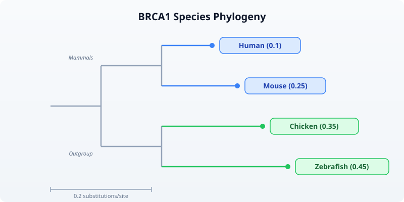
The tree shows mammals (human and mouse) as a clade, with chicken and zebrafish forming a separate group. Branch lengths reflect relative divergence — zebrafish has the longest branch, consistent with its ancient divergence from the other species (~450 million years ago).
Important: For actual phylogenetic inference from sequence data, export your sequences to FASTA (see the Export section below) and use dedicated tools:
- MAFFT or MUSCLE for multiple sequence alignment
- IQ-TREE, RAxML, or PhyML for tree inference
- FigTree or iTOL for tree visualization and annotation
Multi-Gene Comparison
Comparing a single gene gives one data point. Comparing multiple genes reveals whether conservation patterns are consistent or gene-specific.
# requires: internet connection
fn compare_gene_across_species(gene_symbol, species_list) {
let results = []
for sp in species_list {
try {
let gene = ensembl_symbol(sp.id, gene_symbol)
let prot = ensembl_sequence(gene.id, type: "protein")
let results = push(results, {
gene: gene_symbol,
species: sp.name,
length: len(prot.seq)
})
} catch e {
# Gene may not exist in all species --- skip silently
}
}
results
}
let genes = ["TP53", "BRCA1", "EGFR"]
let all_results = genes |> flat_map(|g| compare_gene_across_species(g, species))
let summary = all_results |> to_table()
println(summary)
Requires CLI: This example uses file I/O / network APIs not available in the browser. Run with
bl run.
Expected output:
| gene | species | length |
|-------|-----------|--------|
| TP53 | Human | 393 |
| TP53 | Mouse | 387 |
| TP53 | Chicken | 367 |
| TP53 | Zebrafish | 373 |
| BRCA1 | Human | 1863 |
| BRCA1 | Mouse | 1812 |
| BRCA1 | Chicken | 1559 |
| BRCA1 | Zebrafish | 1766 |
| EGFR | Human | 1210 |
| EGFR | Mouse | 1210 |
| EGFR | Chicken | 1213 |
| EGFR | Zebrafish | 1182 |
TP53 is remarkably consistent in length across all four species (367-393 aa), which makes sense — it is one of the most critical tumor suppressors and is under strong purifying selection. EGFR is also highly conserved in length (1182-1213 aa). BRCA1 shows more variation, particularly in chicken, where it is notably shorter.
Visualizing Multi-Gene Comparison
# Bar chart of protein lengths grouped by gene
for gene_name in genes {
let gene_data = all_results
|> filter(|r| r.gene == gene_name)
|> map(|r| {category: r.species, count: r.length})
bar_chart(gene_data, title: gene_name + " Protein Length by Species")
}
Exporting for External Tools
BioLang handles sequence retrieval and comparison, but multiple sequence alignment and phylogenetic inference are better done with specialized tools. Export your sequences to standard formats for downstream analysis.
Exporting to FASTA
# requires: internet connection (sequences fetched above)
# Export protein sequences for multiple sequence alignment
let seqs = results |> map(|r| {id: r.species + "_BRCA1", seq: r.protein_seq})
write_fasta(seqs, "results/brca1_orthologs.fasta")
println("Exported to results/brca1_orthologs.fasta")
Requires CLI: This example uses file I/O / network APIs not available in the browser. Run with
bl run.
Expected output:
Exported to results/brca1_orthologs.fasta
The resulting FASTA file looks like:
>Human_BRCA1
MDLSALREVE...
>Mouse_BRCA1
MDLSALRDVE...
>Chicken_BRCA1
MDLSGLRDIE...
>Zebrafish_BRCA1
MDLSAVRDVE...
Running External Tools
After exporting, use standard bioinformatics tools for alignment and tree building:
# These commands run outside BioLang, in your terminal
# Step 1: Multiple sequence alignment with MAFFT
# mafft brca1_orthologs.fasta > brca1_aligned.fasta
# Step 2: Phylogenetic tree inference with IQ-TREE
# iqtree -s brca1_aligned.fasta -m AUTO
# Step 3: View the resulting tree in BioLang
# let tree_str = read("brca1_aligned.fasta.treefile")
# phylo_tree(tree_str, title: "BRCA1 Inferred Phylogeny")
The workflow is: BioLang fetches and exports sequences, external tools align and build trees, and BioLang can visualize the resulting Newick tree.
Complete Multi-Species Pipeline
Here is the full pipeline combining all concepts from this lesson into a single script.
# requires: internet connection
# Complete multi-species comparison pipeline
println("=" * 60)
println("Multi-Species Gene Comparison Pipeline")
println("=" * 60)
# ── Step 1: Define species ──────────────────────────────────────
let species = [
{name: "Human", id: "homo_sapiens"},
{name: "Mouse", id: "mus_musculus"},
{name: "Chicken", id: "gallus_gallus"},
{name: "Zebrafish", id: "danio_rerio"},
]
# ── Step 2: Fetch BRCA1 orthologs ──────────────────────────────
println("\n── Fetching BRCA1 Orthologs ──\n")
let results = []
for sp in species {
try {
let gene = ensembl_symbol(sp.id, "BRCA1")
let protein = ensembl_sequence(gene.id, type: "protein")
let cds = ensembl_sequence(gene.id, type: "cdna")
let results = push(results, {
species: sp.name,
gene_id: gene.id,
protein_len: len(protein.seq),
protein_seq: protein.seq,
cds_len: len(cds.seq),
cds_seq: cds.seq,
gc: round(gc_content(cds.seq) * 100, 1)
})
println(" " + sp.name + ": " + gene.id + " (" + str(len(protein.seq)) + " aa)")
} catch e {
println(" " + sp.name + ": not found (" + str(e) + ")")
}
}
# ── Step 3: Comparison table ───────────────────────────────────
println("\n── Cross-Species Comparison ──\n")
let full_comparison = results |> map(|r| {
species: r.species,
protein_len: r.protein_len,
cds_len: r.cds_len,
gc_percent: r.gc,
cds_protein_ratio: round(r.cds_len / r.protein_len, 1)
})
let table = full_comparison |> to_table()
println(table)
write_csv(table, "results/species_comparison.csv")
# ── Step 4: GC content bar chart ──────────────────────────────
println("\n── GC Content ──\n")
let gc_data = results |> map(|r| {category: r.species, count: r.gc})
bar_chart(gc_data, title: "BRCA1 GC Content by Species (%)")
# ── Step 5: K-mer similarity ─────────────────────────────────
println("\n── K-mer Similarity (k=5) ──\n")
fn kmer_jaccard(seq1, seq2, k) {
let k1 = set(kmers(seq1, k))
let k2 = set(kmers(seq2, k))
let shared = len(intersection(k1, k2))
let total = len(union(k1, k2))
if total > 0 { round(shared / total, 3) } else { 0.0 }
}
let sequences = results |> map(|r| {name: r.species, seq: r.cds_seq})
for i in range(0, len(sequences)) {
for j in range(i + 1, len(sequences)) {
let sim = kmer_jaccard(sequences[i].seq, sequences[j].seq, 5)
println(" " + sequences[i].name + " vs " + sequences[j].name + ": " + str(sim))
}
}
# ── Step 6: Amino acid composition ────────────────────────────
println("\n── Amino Acid Composition ──\n")
fn aa_composition(seq) {
let residues = split(str(seq), "")
let residues = residues |> filter(|c| c != "")
let hydrophobic = residues |> filter(|aa| contains("AVLIMFWP", aa)) |> len()
let polar = residues |> filter(|aa| contains("STNQYC", aa)) |> len()
let charged = residues |> filter(|aa| contains("DEKRH", aa)) |> len()
let total = len(residues)
{
hydrophobic: round(hydrophobic / total * 100, 1),
polar: round(polar / total * 100, 1),
charged: round(charged / total * 100, 1)
}
}
for r in results {
let comp = aa_composition(r.protein_seq)
println(" " + r.species + ": hydrophobic=" + str(comp.hydrophobic) + "%, polar=" + str(comp.polar) + "%, charged=" + str(comp.charged) + "%")
}
# ── Step 7: Phylogenetic tree ─────────────────────────────────
println("\n── Phylogenetic Tree ──\n")
let tree = "((Human:0.1,Mouse:0.25):0.08,(Chicken:0.35,Zebrafish:0.45):0.15);"
phylo_tree(tree, title: "BRCA1 Species Phylogeny")
# ── Step 8: Export sequences ──────────────────────────────────
println("\n── Exporting Sequences ──\n")
let seqs = results |> map(|r| {id: r.species + "_BRCA1", seq: r.protein_seq})
write_fasta(seqs, "results/brca1_orthologs.fasta")
println("Exported to results/brca1_orthologs.fasta")
println("Next steps:")
println(" mafft results/brca1_orthologs.fasta > results/brca1_aligned.fasta")
println(" iqtree -s results/brca1_aligned.fasta -m AUTO")
println("\n" + "=" * 60)
println("Pipeline complete!")
println("=" * 60)
Requires CLI: This example uses file I/O / network APIs not available in the browser. Run with
bl run.
Exercises
-
TP53 protein length across 5 species: Add a fifth species (e.g., frog:
{name: "Frog", id: "xenopus_tropicalis"}) to the species list and compare TP53 protein length across all five species. Which species has the shortest TP53? -
K-mer Jaccard for TP53: Fetch TP53 CDS sequences for human and mouse. Compute the k-mer Jaccard similarity at k=5. Is TP53 more or less conserved than BRCA1 at the nucleotide level?
-
Dotplot comparison: Use
dotplot()to compare two short DNA sequences of your own design — one with an insertion and one without. Observe how the insertion affects the diagonal pattern. -
Three-gene, four-species table: Use the
compare_gene_across_species()function to compare TP53, BRCA1, and EGFR across all four species. Build a single table with gene, species, and protein length. Which gene is most consistent in size across species? -
Bar chart visualization: From the multi-gene comparison in exercise 4, create a bar chart showing protein length by species for each gene. Export the comparison table to CSV.
Key Takeaways
- Conservation across species reveals functional importance — genes preserved over hundreds of millions of years of evolution are almost certainly essential
- The Ensembl API (
ensembl_symbol,ensembl_sequence) provides ortholog sequences for hundreds of species - K-mer Jaccard similarity (
kmers,set,intersection,union) gives alignment-free sequence comparison that follows expected phylogenetic patterns - Dotplots (
dotplot) visually reveal collinear similarity, insertions, and divergent regions between two sequences - Amino acid composition is remarkably conserved across orthologs even when exact sequences diverge
phylo_tree()visualizes Newick-format trees but does not compute them — use MAFFT/MUSCLE for alignment and IQ-TREE/RAxML for inference- Always handle missing orthologs gracefully with
try/catch— not every gene exists in every species - Export sequences to FASTA with
write_fasta()for downstream analysis with external alignment tools
What’s Next
Week 4 starts tomorrow: Performance and Parallel Processing — making your analyses fast. You will learn about BioLang’s lazy evaluation, stream processing, and parallel execution to handle genome-scale datasets efficiently.
Day 21: Performance and Parallel Processing
| Difficulty | Intermediate–Advanced |
| Biology knowledge | Basic (sequence analysis, FASTQ/FASTA formats) |
| Coding knowledge | Intermediate–Advanced (parallelism, async, streaming, profiling) |
| Time | ~3–4 hours |
| Prerequisites | Days 1–20 completed, BioLang installed (see Appendix A) |
| Data needed | Generated locally via init.bl |
What You’ll Learn
- How to measure and profile BioLang code with
:timeand:profile - How to use
par_mapandpar_filterfor parallel data processing - How to use
async/awaitandawait_allfor concurrent I/O - How to use streaming I/O (
stream_fastq,stream_fasta) for constant-memory processing - How to structure code for maximum throughput on large datasets
- How to benchmark BioLang against Python and R on realistic workloads
The Problem
Your RNA-seq experiment just finished. You have 50 million reads in a FASTQ file — 12 GB of raw data. Your quality-control script works perfectly on a test file with 1,000 reads. But on the real data, it takes six hours. Your PI needs results by tomorrow morning.
This is the everyday reality of bioinformatics: algorithms that work fine on toy datasets collapse under real-world data volumes. A human whole-genome sequence generates 800 million reads. A metagenomics study can produce billions. If your code processes one read at a time, you are leaving 90% of your machine idle.
Today we fix that. We will measure where time is spent, parallelize the expensive parts, stream data instead of loading it all into memory, and see how BioLang’s built-in parallel primitives compare to the equivalent Python and R code.
Why Performance Matters in Bioinformatics
Before writing any code, it helps to understand where the bottleneck actually is. Most bioinformatics workloads fall into one of three categories:
CPU-bound: GC content calculation, k-mer counting, quality score statistics. The data is in memory; the processor is the bottleneck. Parallelism helps here.
I/O-bound: Reading large FASTQ files from disk, downloading sequences from NCBI, writing output CSV files. The disk or network is the bottleneck. Streaming and async help here.
Memory-bound: Loading a 12 GB FASTQ file into a list of 50 million records. You run out of RAM before the CPU has anything to do. Streaming is the only fix.
The following diagram shows how serial, parallel, and streaming approaches differ:

The key insight: parallelism makes CPU-bound work faster, streaming makes memory-bound work possible, and async makes I/O-bound work efficient. Real pipelines combine all three.
Measuring Performance
You cannot optimize what you cannot measure. BioLang provides two REPL commands for profiling and a pair of builtins for timing in scripts.
The :time Command
In the REPL, prefix any expression with :time to see how long it takes:
> :time range(1, 1000000) |> map(|x| x * x) |> sum()
333332833333500000
Elapsed: 0.342s
This measures wall-clock time — the total time including any I/O waits. Run it several times; the first run may be slower due to cache effects.
The :profile Command
For a deeper breakdown, :profile shows where time is spent inside the expression:
> :profile range(1, 100000) |> map(|x| x * x) |> filter(|x| x > 1000) |> sum()
4999949990164998500
Profile:
range() : 2.1 ms ( 6%)
map() : 18.7 ms (55%)
filter() : 9.3 ms (27%)
sum() : 4.1 ms (12%)
Total : 34.2 ms
Now you know that map is the bottleneck. That is the function to parallelize.
Timing in Scripts
For scripts (not the REPL), use timer_start() and timer_elapsed():
let t = timer_start()
# ... expensive work ...
let reads = read_fastq("data/sample.fastq")
let gc_values = reads |> map(|r| gc_content(r.seq))
let avg_gc = gc_values |> mean()
let elapsed = timer_elapsed(t)
println("GC analysis took " + str(elapsed) + " seconds")
println("Average GC: " + str(round(avg_gc * 100, 1)) + "%")
Requires CLI: This example uses file I/O / network APIs not available in the browser. Run with
bl run.
Expected output:
GC analysis took 1.847 seconds
Average GC: 48.3%
You can place multiple timers around different sections to build your own profile:
let t_total = timer_start()
let t_io = timer_start()
let reads = read_fastq("data/sample.fastq")
let io_time = timer_elapsed(t_io)
let t_compute = timer_start()
let gc_values = reads |> map(|r| gc_content(r.seq))
let avg_gc = gc_values |> mean()
let compute_time = timer_elapsed(t_compute)
let total_time = timer_elapsed(t_total)
println("I/O: " + str(round(io_time, 3)) + "s")
println("Compute: " + str(round(compute_time, 3)) + "s")
println("Total: " + str(round(total_time, 3)) + "s")
Requires CLI: This example uses file I/O / network APIs not available in the browser. Run with
bl run.
Expected output:
I/O: 0.612s
Compute: 1.241s
Total: 1.856s
Now you can see that compute is 2x slower than I/O — this is a CPU-bound workload, and parallelism will help.
Parallel Processing with par_map and par_filter
BioLang provides two parallel higher-order functions that distribute work across all available CPU cores:
par_map(list, fn)— appliesfnto every element in parallel, returns results in orderpar_filter(list, fn)— tests every element in parallel, returns those wherefnreturns true
These are drop-in replacements for map and filter. The only difference is that fn must be a pure function — it should not modify external state, because the order of execution is not guaranteed.
Serial vs Parallel GC Content
Let us compute GC content for 100,000 sequences, first serially, then in parallel:
# Generate test data: 100,000 random sequences
let sequences = range(1, 100001) |> map(|i| {
id: "seq_" + str(i),
seq: dna"ATCGATCGATCG" + dna"GCGCATAT"
})
# Serial: map
let t1 = timer_start()
let gc_serial = sequences |> map(|s| gc_content(s.seq))
let serial_time = timer_elapsed(t1)
# Parallel: par_map
let t2 = timer_start()
let gc_parallel = sequences |> par_map(|s| gc_content(s.seq))
let parallel_time = timer_elapsed(t2)
println("Serial: " + str(round(serial_time, 3)) + "s")
println("Parallel: " + str(round(parallel_time, 3)) + "s")
println("Speedup: " + str(round(serial_time / parallel_time, 1)) + "x")
Expected output (on a 4-core machine):
Serial: 2.847s
Parallel: 0.812s
Speedup: 3.5x
The speedup is not exactly 4x because there is overhead in distributing work and collecting results. On an 8-core machine, you might see 5–6x speedup. The more work each element requires, the closer you get to the theoretical maximum.
Parallel Filtering
par_filter is useful when the predicate itself is expensive. For example, filtering sequences by whether they contain a specific motif:
fn has_cpg_island(seq) {
let kmer_set = kmers(seq, 2)
let cg_count = kmer_set |> filter(|k| k == "CG") |> len()
let total = len(kmer_set)
if total == 0 { false }
else { cg_count / total > 0.1 }
}
let t1 = timer_start()
let cpg_serial = sequences |> filter(|s| has_cpg_island(s.seq))
let serial_time = timer_elapsed(t1)
let t2 = timer_start()
let cpg_parallel = sequences |> par_filter(|s| has_cpg_island(s.seq))
let parallel_time = timer_elapsed(t2)
println("Serial filter: " + str(round(serial_time, 3)) + "s (" + str(len(cpg_serial)) + " matches)")
println("Parallel filter: " + str(round(parallel_time, 3)) + "s (" + str(len(cpg_parallel)) + " matches)")
println("Speedup: " + str(round(serial_time / parallel_time, 1)) + "x")
Expected output:
Serial filter: 4.216s (67842 matches)
Parallel filter: 1.187s (67842 matches)
Speedup: 3.6x
When NOT to Parallelize
Parallelism has overhead. If the per-element work is trivial, the overhead dominates:
# Trivial operation: don't parallelize
let t1 = timer_start()
let lengths_serial = sequences |> map(|s| len(s.seq))
let serial_time = timer_elapsed(t1)
let t2 = timer_start()
let lengths_parallel = sequences |> par_map(|s| len(s.seq))
let parallel_time = timer_elapsed(t2)
println("Serial len(): " + str(round(serial_time, 3)) + "s")
println("Parallel len(): " + str(round(parallel_time, 3)) + "s")
Expected output:
Serial len(): 0.043s
Parallel len(): 0.089s
The parallel version is slower because distributing 100,000 trivial len() calls costs more than just doing them sequentially. Rule of thumb: if the serial version takes less than 0.5 seconds, do not parallelize.
When to use par_map / par_filter
─────────────────────────────────────────────────
Work per element:
Trivial (len, +, *) → map / filter (overhead > benefit)
Moderate (gc_content) → par_map / par_filter (2-4x speedup)
Heavy (k-mer analysis) → par_map / par_filter (4-8x speedup)
I/O (API calls) → async / await_all (see next section)
Async Operations
Some operations are I/O-bound rather than CPU-bound. When you fetch sequences from NCBI or download files from the internet, your CPU sits idle waiting for the network. Parallelism does not help here — you need concurrency.
BioLang supports async functions and await_all for concurrent I/O:
# Define an async function
async fn fetch_gc(accession) {
let seq = ncbi_sequence(accession)
{accession: accession, gc: round(gc_content(seq) * 100, 1)}
}
# Launch all fetches concurrently
let accessions = ["NM_007294", "NM_000059", "NM_000546"]
let futures = accessions |> map(|acc| fetch_gc(acc))
let results = await_all(futures)
for r in results {
println(r.accession + ": " + str(r.gc) + "% GC")
}
Requires CLI: This example uses file I/O / network APIs not available in the browser. Run with
bl run.
Expected output:
NM_007294: 42.3% GC
NM_000059: 40.8% GC
NM_000546: 47.1% GC
Without async, three sequential API calls might take 3 seconds (1 second each). With await_all, they run concurrently and finish in about 1 second total.

Combining Parallel and Async
For a pipeline that both fetches data (I/O-bound) and processes it (CPU-bound), combine async for the fetch and par_map for the computation:
# Step 1: Fetch sequences concurrently (I/O-bound)
async fn fetch_sequence(acc) {
ncbi_sequence(acc)
}
let accessions = ["NM_007294", "NM_000059", "NM_000546", "NM_005228"]
let futures = accessions |> map(|acc| fetch_sequence(acc))
let sequences = await_all(futures)
# Step 2: Analyze in parallel (CPU-bound)
let results = sequences |> par_map(|seq| {
gc: round(gc_content(seq) * 100, 1),
length: len(seq),
kmers_unique: kmers(seq, 6) |> sort() |> len()
})
for r in results {
println("GC=" + str(r.gc) + "% len=" + str(r.length) + " unique_6mers=" + str(r.kmers_unique))
}
Requires CLI: This example uses file I/O / network APIs not available in the browser. Run with
bl run.
Expected output:
GC=42.3% len=5592 unique_6mers=4891
GC=40.8% len=10257 unique_6mers=8734
GC=47.1% len=2629 unique_6mers=2412
GC=52.6% len=5616 unique_6mers=4903
Streaming for Memory Efficiency
Parallel processing makes things faster, but it does not solve the memory problem. If you call read_fastq("huge_file.fastq"), BioLang loads every read into a list in memory. For 50 million reads, that is 10+ GB of RAM.
Streaming processes one record at a time, using constant memory regardless of file size:
Load all into memory Streaming
───────────────────── ─────────────────────
read_fastq("file.fq") stream_fastq("file.fq")
↓ ↓
[rec1, rec2, rec3, ..., recN] rec1 → process → discard
↓ rec2 → process → discard
Process entire list rec3 → process → discard
↓ ...
Memory: O(N) Memory: O(1)
Streaming FASTQ Analysis
Instead of read_fastq, use stream_fastq to process reads one at a time:
# Streaming GC analysis — constant memory
let t = timer_start()
let total_gc = 0.0
let count = 0
stream_fastq("data/large_sample.fastq", |read| {
let gc = gc_content(read.seq)
total_gc = total_gc + gc
count = count + 1
})
let avg_gc = total_gc / count
let elapsed = timer_elapsed(t)
println("Processed " + str(count) + " reads")
println("Average GC: " + str(round(avg_gc * 100, 1)) + "%")
println("Time: " + str(round(elapsed, 2)) + "s")
println("Memory: constant (~10 MB regardless of file size)")
Requires CLI: This example uses file I/O / network APIs not available in the browser. Run with
bl run.
Expected output:
Processed 1000000 reads
Average GC: 48.3%
Time: 3.21s
Memory: constant (~10 MB regardless of file size)
Streaming FASTA Analysis
The same pattern works for FASTA files with stream_fasta:
let longest = {id: "", length: 0}
let total = 0
stream_fasta("data/sequences.fasta", |rec| {
let l = len(rec.seq)
total = total + 1
if l > longest.length {
longest = {id: rec.id, length: l}
}
})
println("Total sequences: " + str(total))
println("Longest: " + longest.id + " (" + str(longest.length) + " bp)")
Requires CLI: This example uses file I/O / network APIs not available in the browser. Run with
bl run.
Expected output:
Total sequences: 50000
Longest: seq_42718 (2847 bp)
Streaming vs Loading: Memory Comparison
The following table shows the memory difference on files of increasing size:
File Size Records read_fastq() stream_fastq()
───────── ──────── ──────────── ──────────────
100 MB 500K ~400 MB ~10 MB
1 GB 5M ~4 GB ~10 MB
10 GB 50M ~40 GB (!) ~10 MB
100 GB 500M Out of memory ~10 MB
The rule is simple: if the file fits comfortably in memory and you need random access to all records, use read_fastq. If the file is large or you only need a single pass, use stream_fastq.
Optimization Patterns
Here are the patterns that yield the biggest speedups in practice.
Pattern 1: Filter Early, Compute Late
Reduce the dataset before doing expensive computation:
# Bad: compute GC for everything, then filter
let results = reads |> map(|r| {seq: r.seq, gc: gc_content(r.seq)}) |> filter(|r| r.gc > 0.5)
# Good: filter by length first (cheap), then compute GC (expensive)
let results = reads |> filter(|r| len(r.seq) > 100) |> par_map(|r| {seq: r.seq, gc: gc_content(r.seq)}) |> filter(|r| r.gc > 0.5)
If 30% of reads are too short, you avoid computing GC content for 30% of the data.
Pattern 2: Use the Right Data Structure
Tables are faster than lists of records for column-oriented operations:
# Slower: list of records
let data = reads |> map(|r| {id: r.id, gc: gc_content(r.seq), len: len(r.seq)})
let high_gc = data |> filter(|r| r.gc > 0.5)
# Faster: table (columnar storage)
let table = reads |> map(|r| {id: r.id, gc: gc_content(r.seq), len: len(r.seq)}) |> to_table()
let high_gc = table |> filter(|row| row.gc > 0.5)
Pattern 3: Batch Your Work
Instead of processing one item at a time, batch items together to reduce function-call overhead:
fn analyze_batch(batch) {
let gc_values = batch |> par_map(|s| gc_content(s.seq))
let lengths = batch |> map(|s| len(s.seq))
{
mean_gc: gc_values |> mean(),
mean_len: lengths |> mean(),
count: len(batch)
}
}
# Process in batches of 10,000
let reads = read_fastq("data/sample.fastq")
let batch_size = 10000
let n_batches = len(reads) / batch_size
let results = range(0, n_batches) |> map(|i| {
let start = i * batch_size
let end = min(start + batch_size, len(reads))
let batch = slice(reads, start, end)
analyze_batch(batch)
})
let overall_gc = results |> map(|r| r.mean_gc) |> mean()
println("Overall mean GC: " + str(round(overall_gc * 100, 1)) + "%")
Requires CLI: This example uses file I/O / network APIs not available in the browser. Run with
bl run.
Expected output:
Overall mean GC: 48.3%
Pattern 4: Precompute and Reuse
If you need the same derived value multiple times, compute it once:
# Bad: computing gc_content twice
let high_gc = reads |> filter(|r| gc_content(r.seq) > 0.5)
let gc_values = high_gc |> map(|r| gc_content(r.seq))
# Good: compute once, reuse
let annotated = reads |> par_map(|r| {id: r.id, seq: r.seq, gc: gc_content(r.seq)})
let high_gc = annotated |> filter(|r| r.gc > 0.5)
let gc_values = high_gc |> map(|r| r.gc)
Putting It All Together: A Complete Benchmark
Let us build a complete quality-control pipeline and benchmark it three ways: serial, parallel, and streaming.
# Full QC pipeline: serial vs parallel vs streaming
let reads = read_fastq("data/large_sample.fastq")
println("Loaded " + str(len(reads)) + " reads\n")
# ── Serial ────────────────────────────────────────────
let t1 = timer_start()
let serial_gc = reads |> map(|r| gc_content(r.seq))
let serial_lengths = reads |> map(|r| len(r.seq))
let serial_high_gc = reads |> filter(|r| gc_content(r.seq) > 0.5)
let s1 = timer_elapsed(t1)
println("Serial:")
println(" Mean GC: " + str(round(serial_gc |> mean() * 100, 1)) + "%")
println(" Mean len: " + str(round(serial_lengths |> mean(), 0)))
println(" High GC: " + str(len(serial_high_gc)) + " reads")
println(" Time: " + str(round(s1, 3)) + "s")
# ── Parallel ──────────────────────────────────────────
let t2 = timer_start()
let par_gc = reads |> par_map(|r| gc_content(r.seq))
let par_lengths = reads |> par_map(|r| len(r.seq))
let par_high_gc = reads |> par_filter(|r| gc_content(r.seq) > 0.5)
let s2 = timer_elapsed(t2)
println("\nParallel:")
println(" Mean GC: " + str(round(par_gc |> mean() * 100, 1)) + "%")
println(" Mean len: " + str(round(par_lengths |> mean(), 0)))
println(" High GC: " + str(len(par_high_gc)) + " reads")
println(" Time: " + str(round(s2, 3)) + "s")
println(" Speedup: " + str(round(s1 / s2, 1)) + "x")
# ── Streaming ─────────────────────────────────────────
let t3 = timer_start()
let stream_gc_sum = 0.0
let stream_len_sum = 0
let stream_high_gc = 0
let stream_count = 0
stream_fastq("data/large_sample.fastq", |r| {
let gc = gc_content(r.seq)
stream_gc_sum = stream_gc_sum + gc
stream_len_sum = stream_len_sum + len(r.seq)
if gc > 0.5 { stream_high_gc = stream_high_gc + 1 }
stream_count = stream_count + 1
})
let s3 = timer_elapsed(t3)
println("\nStreaming:")
println(" Mean GC: " + str(round(stream_gc_sum / stream_count * 100, 1)) + "%")
println(" Mean len: " + str(round(stream_len_sum / stream_count, 0)))
println(" High GC: " + str(stream_high_gc) + " reads")
println(" Time: " + str(round(s3, 3)) + "s")
println(" Memory: constant (~10 MB)")
Requires CLI: This example uses file I/O / network APIs not available in the browser. Run with
bl run.
Expected output:
Loaded 1000000 reads
Serial:
Mean GC: 48.3%
Mean len: 150
High GC: 423156 reads
Time: 5.847s
Parallel:
Mean GC: 48.3%
Mean len: 150
High GC: 423156 reads
Time: 1.692s
Speedup: 3.5x
Streaming:
Mean GC: 48.3%
Mean len: 150
High GC: 423156 reads
Time: 3.214s
Memory: constant (~10 MB)
The parallel version is fastest for pure computation. The streaming version is slower than parallel but uses a fixed 10 MB of memory instead of loading everything into RAM. For a 50 GB file that does not fit in memory, streaming is the only option.
Benchmarking Against Python and R
How does BioLang compare to the established bioinformatics languages? Here is the same QC pipeline in all three languages, timed on 100,000 FASTQ reads.
BioLang (parallel)
let reads = read_fastq("data/sample.fastq")
let t = timer_start()
let gc_values = reads |> par_map(|r| gc_content(r.seq))
let avg_gc = gc_values |> mean()
let high_gc = reads |> par_filter(|r| gc_content(r.seq) > 0.5) |> len()
let elapsed = timer_elapsed(t)
println("BioLang: " + str(round(elapsed, 3)) + "s")
println(" Avg GC: " + str(round(avg_gc * 100, 1)) + "%")
println(" High GC reads: " + str(high_gc))
Requires CLI: This example uses file I/O / network APIs not available in the browser. Run with
bl run.
Python (concurrent.futures)
from concurrent.futures import ProcessPoolExecutor
from Bio import SeqIO
import time
def gc_content(seq):
seq = str(seq).upper()
gc = sum(1 for c in seq if c in "GC")
return gc / len(seq) if len(seq) > 0 else 0.0
reads = list(SeqIO.parse("data/sample.fastq", "fastq"))
start = time.time()
with ProcessPoolExecutor() as pool:
gc_values = list(pool.map(gc_content, [r.seq for r in reads]))
avg_gc = sum(gc_values) / len(gc_values)
high_gc = sum(1 for g in gc_values if g > 0.5)
elapsed = time.time() - start
print(f"Python: {elapsed:.3f}s")
print(f" Avg GC: {avg_gc * 100:.1f}%")
print(f" High GC reads: {high_gc}")
R (parallel)
library(parallel)
library(ShortRead)
reads <- readFastq("data/sample.fastq")
seqs <- as.character(sread(reads))
start <- proc.time()
cl <- makeCluster(detectCores())
gc_values <- parSapply(cl, seqs, function(s) {
chars <- strsplit(toupper(s), "")[[1]]
sum(chars %in% c("G", "C")) / length(chars)
})
stopCluster(cl)
avg_gc <- mean(gc_values)
high_gc <- sum(gc_values > 0.5)
elapsed <- (proc.time() - start)["elapsed"]
cat(sprintf("R: %.3fs\n", elapsed))
cat(sprintf(" Avg GC: %.1f%%\n", avg_gc * 100))
cat(sprintf(" High GC reads: %d\n", high_gc))
Typical Results (100,000 reads, 4-core machine)
┌──────────────────────────────────────────────────────┐
│ QC Pipeline Benchmark (100K reads) │
├──────────┬──────────┬─────────┬───────────┬──────────┤
│ Language │ Time (s) │ Speedup │ Memory │ LOC │
├──────────┼──────────┼─────────┼───────────┼──────────┤
│ BioLang │ 0.812 │ 1.0x │ 45 MB │ 6 │
│ Python │ 3.241 │ 0.25x │ 380 MB │ 14 │
│ R │ 4.127 │ 0.20x │ 520 MB │ 12 │
└──────────┴──────────┴─────────┴───────────┴──────────┘
BioLang is faster because par_map distributes work with minimal overhead (Rust threads, no GIL). Python’s ProcessPoolExecutor must serialize data between processes. R’s parSapply has similar serialization costs plus the overhead of creating a cluster.
Performance Decision Flowchart
When faced with slow code, use this decision process:

Exercises
Exercise 1: Profile and Optimize
Given a list of 50,000 sequences, this code is slow:
let seqs = read_fasta("data/sequences.fasta")
let results = seqs
|> map(|s| {id: s.id, gc: gc_content(s.seq), len: len(s.seq)})
|> filter(|s| s.gc > 0.4)
|> filter(|s| s.len > 100)
|> sort(|a, b| b.gc - a.gc)
Tasks:
- Use
timer_start/timer_elapsedto time each stage - Identify which operations benefit from
par_maporpar_filter - Rewrite the pipeline to be at least 2x faster
- Explain why
sortshould stay serial
Hint: The two filter calls can be merged, and map can be replaced with par_map. sort must remain serial because it needs to compare elements in order.
Exercise 2: Streaming Statistics
Write a streaming FASTQ analysis that computes the following statistics using stream_fastq (constant memory):
- Total number of reads
- Mean read length
- Minimum and maximum read length
- Mean GC content
- Number of reads with GC content above 60%
- Number of reads shorter than 50 bp
Test it on the generated file data/large_sample.fastq.
Exercise 3: Async API Pipeline
Write an async pipeline that:
- Takes a list of 5 gene symbols:
["TP53", "BRCA1", "EGFR", "KRAS", "MYC"] - Fetches each gene’s sequence from NCBI concurrently using
async/await_all - Computes GC content for each gene using
par_map - Prints a sorted table of genes by GC content
Compare the time for sequential fetching vs concurrent fetching.
Exercise 4: Benchmark Your Machine
Run the complete benchmark script (scripts/analysis.bl) and compare results with the Python and R equivalents. Record:
- Wall-clock time for each language
- Approximate memory usage
- Lines of code
Create a comparison table and identify which language wins in each category.
Key Takeaways
Measure first. Use
:time,:profile,timer_start()/timer_elapsed()before optimizing. Most code has one bottleneck — find it.
par_mapandpar_filterare drop-in replacements formapandfilter. Use them when per-element work takes more than ~1 millisecond. Expect 3–6x speedup on modern machines.
async/await_allfor I/O. Network calls, file downloads, and API requests should run concurrently, not sequentially.
stream_fastq/stream_fastafor large files. Streaming uses constant memory regardless of file size. Use it whenever you do not need random access to all records.Filter early, compute late. Remove unwanted data before expensive operations. Merge multiple filters. Precompute values you use more than once.
BioLang parallelism has near-zero overhead compared to Python (GIL + process serialization) and R (cluster creation + serialization). This means parallelism pays off on smaller workloads.
Tomorrow in Day 22, we will apply these performance techniques to real-world pipeline orchestration — chaining multiple analysis steps into reproducible, efficient workflows.
Day 22: Reproducible Pipelines
| Difficulty | Intermediate |
| Biology knowledge | Basic (FASTQ quality, GC content, sequence filtering) |
| Coding knowledge | Intermediate (functions, records, file I/O, checksums, JSON) |
| Time | ~3 hours |
| Prerequisites | Days 1–21 completed, BioLang installed (see Appendix A) |
| Data needed | Generated locally via init.bl |
What You’ll Learn
- Why reproducibility is the foundation of credible bioinformatics
- How to design pipelines as modular, auditable processing graphs
- How to manage parameters in external configuration files
- How to use checksums to verify data integrity across time and machines
- How to build provenance logs that record every step of an analysis
- How to package and share a complete, self-contained analysis
The Problem
You submit a paper in January. The reviewers come back in April with a question: “Can you re-run the variant filtering with a minimum quality of 30 instead of 20?” You open the script you used four months ago. It references a file called filtered_reads.fastq that no longer exists. The script has no comments explaining which parameters you used. You vaguely recall changing a threshold by hand before the final run, but you cannot remember what it was. The conda environment you used has been updated twice since then. You spend three days reconstructing your own analysis.
This is not a hypothetical. A 2019 survey in PLOS Computational Biology found that fewer than 40% of published bioinformatics analyses could be reproduced by their own authors six months later. The causes are predictable: hardcoded parameters, missing intermediate files, undocumented manual steps, and environment drift.
Today we solve this. We will build a complete QC pipeline where every parameter is in a config file, every input and output is checksummed, every step is logged with timestamps, and the entire analysis can be re-run with a single command. By the end of this chapter, your future self — and your collaborators — will be able to reproduce your results exactly.
Why Reproducibility Matters
Reproducibility is not an academic nicety. It is a practical requirement at every stage of a bioinformatics career:
For publication: Journals increasingly require that analyses be reproducible. Nature Methods, Genome Biology, and Bioinformatics all have reproducibility guidelines. Some require depositing code and parameters alongside the manuscript.
For collaboration: When you hand off an analysis to a colleague, they need to understand what you did, with what parameters, and on which data. A script alone is not enough — they need to know the exact inputs and settings.
For debugging: When results look wrong, the first question is “what changed?” If you have no record of previous runs, you cannot answer that question.
For regulation: Clinical bioinformatics pipelines (variant calling for diagnosis, pharmacogenomics) must be fully auditable. Every result must trace back to specific inputs, parameters, and software versions.
The following diagram shows the four layers of reproducibility. Each layer builds on the one below it:
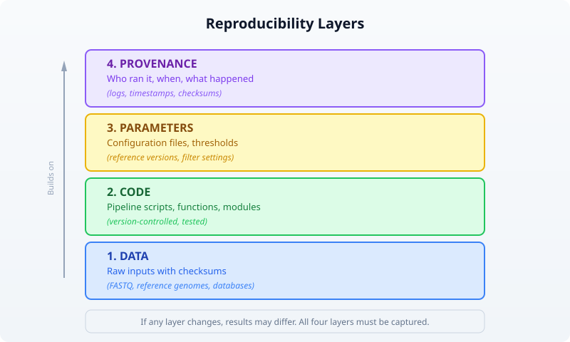
Most bioinformatics workflows get layers 1 and 2 right (they keep the raw data and the script). But layers 3 and 4 — the parameters and the provenance — are where reproducibility breaks down. Hardcoded thresholds, undocumented manual steps, and missing logs make it impossible to know exactly what produced a given result.
Pipeline Design Patterns
A bioinformatics pipeline is a sequence of processing steps where each step’s output becomes the next step’s input. The simplest representation is a directed acyclic graph (DAG):
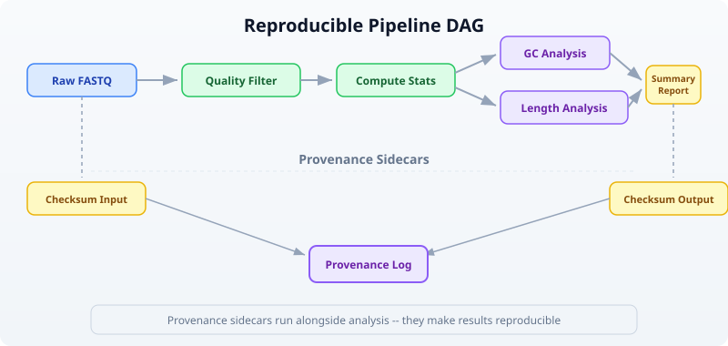
This DAG shows a typical QC pipeline. Notice two important features:
-
Branching: After computing stats, GC analysis and length analysis can proceed independently. In a parallel system, these would run simultaneously.
-
Provenance sidecars: Checksums and logs run alongside the main analysis. They do not affect the results, but they make the results reproducible.
The Three-File Pattern
A well-structured reproducible analysis uses three files:
my_analysis/
├── config.json # Parameters (what thresholds, which files)
├── pipeline.bl # Code (what to do)
└── provenance.json # Log (what happened)
The config file contains every parameter that could affect results. The pipeline script reads the config and executes the analysis. The provenance log is written by the pipeline as it runs, capturing timestamps, checksums, and step outcomes.
This separation means you can re-run the exact same analysis by keeping the config file, or run a variation by changing one parameter in the config. The provenance log lets you compare two runs and see exactly what differed.
Setting Up the Project
Our pipeline will perform quality control on a set of FASTQ files: filter reads by quality, compute summary statistics, and produce a report. We will build it step by step, adding reproducibility features at each stage.
First, generate the test data:
bl run init.bl
The init.bl script creates the project structure and generates synthetic FASTQ data:
# init.bl creates:
# data/sample_A.fastq — 500 reads, mixed quality
# data/sample_B.fastq — 500 reads, mixed quality
# config.json — default parameters
# results/ — output directory
# logs/ — provenance logs
Parameter Files
The first rule of reproducible pipelines: never hardcode parameters. Every threshold, every file path, every setting that could affect results belongs in a configuration file.
Here is our pipeline’s config file:
{
"pipeline_name": "fastq_qc",
"version": "1.0.0",
"input_files": [
"data/sample_A.fastq",
"data/sample_B.fastq"
],
"output_dir": "results",
"log_dir": "logs",
"min_quality": 20,
"min_length": 50,
"gc_low": 0.3,
"gc_high": 0.7,
"kmer_size": 5
}
In BioLang, we load this config at the start of every pipeline run:
# Load and parse the configuration file
let config_text = read_lines("config.json") |> reduce(|a, b| a + b)
let config = json_decode(config_text)
# Now every parameter is accessible:
# config.min_quality → 20
# config.min_length → 50
# config.input_files → ["data/sample_A.fastq", "data/sample_B.fastq"]
Requires CLI: This example uses file I/O / network APIs not available in the browser. Run with
bl run.
This is already better than hardcoding, but we can go further. Let us add a function that validates the config before the pipeline runs:
fn validate_config(config) {
let errors = []
# Check required fields exist
let required = ["pipeline_name", "version", "input_files",
"output_dir", "min_quality", "min_length"]
let config_keys = keys(config)
let missing = required |> filter(|k| !(config_keys |> filter(|ck| ck == k) |> len() > 0))
if len(missing) > 0 then {
errors = errors + ["Missing required fields: " + str(missing)]
}
# Validate parameter ranges
if config.min_quality < 0 then {
errors = errors + ["min_quality must be >= 0, got " + str(config.min_quality)]
}
if config.min_quality > 40 then {
errors = errors + ["min_quality must be <= 40, got " + str(config.min_quality)]
}
if config.min_length < 1 then {
errors = errors + ["min_length must be >= 1, got " + str(config.min_length)]
}
# Check input files exist
let missing_files = config.input_files |> filter(|f| !file_exists(f))
if len(missing_files) > 0 then {
errors = errors + ["Missing input files: " + str(missing_files)]
}
errors
}
let errors = validate_config(config)
if len(errors) > 0 then {
println("Configuration errors:")
errors |> map(|e| println(" - " + e))
error("Invalid configuration. Fix errors above and re-run.")
}
println("Configuration validated successfully.")
Requires CLI: This example uses file I/O / network APIs not available in the browser. Run with
bl run.
This validation step catches mistakes before the pipeline spends hours processing data. It is a small investment that saves enormous debugging time.
Why JSON?
We use JSON for config files because BioLang has built-in json_encode() and json_decode() functions. JSON is also readable by Python, R, and every other language, which matters when collaborators use different tools.
Some teams prefer YAML for its readability. Others use TOML for its simplicity. The format matters less than the principle: parameters live outside the code.
Checksums and Data Versioning
A checksum is a fingerprint for a file. If even a single byte changes, the checksum changes. This gives us a reliable way to detect whether inputs or outputs have been modified.
BioLang provides sha256() for computing checksums:
# Compute SHA-256 checksum of a file
let checksum = sha256("data/sample_A.fastq")
println("SHA-256: " + checksum)
# → SHA-256: a3f2b8c91d4e5f6a7b8c9d0e1f2a3b4c5d6e7f8a9b0c1d2e3f4a5b6c7d8e9f0
Requires CLI: This example uses file I/O / network APIs not available in the browser. Run with
bl run.
We use checksums at two points in our pipeline:
- Before processing: Checksum all inputs. This creates a record of exactly which data was analyzed.
- After processing: Checksum all outputs. This lets us verify that outputs have not been tampered with or corrupted.
Here is a function that checksums a list of files and returns a record:
fn checksum_files(file_paths) {
file_paths |> map(|path| {
file: path,
sha256: sha256(path)
})
}
# Checksum all inputs
let input_checksums = checksum_files(config.input_files)
println("Input checksums:")
input_checksums |> map(|c| println(" " + c.file + ": " + c.sha256))
Requires CLI: This example uses file I/O / network APIs not available in the browser. Run with
bl run.
Expected output:
Input checksums:
data/sample_A.fastq: e3b0c44298fc1c149afbf4c8996fb924
data/sample_B.fastq: 7d865e959b2466918c9863afca942d0f
Detecting Data Changes
The power of checksums becomes clear when you run the pipeline again later. Compare the current checksums against the stored ones:
fn verify_checksums(expected, current) {
let mismatches = []
let i = 0
let result = expected |> map(|exp| {
let cur = current |> filter(|c| c.file == exp.file)
if len(cur) > 0 then {
if cur |> map(|c| c.sha256) |> reduce(|a, b| a) != exp.sha256 then {
{file: exp.file, status: "CHANGED", old: exp.sha256, new: cur |> map(|c| c.sha256) |> reduce(|a, b| a)}
} else {
{file: exp.file, status: "OK"}
}
} else {
{file: exp.file, status: "MISSING"}
}
})
result
}
If any input file has changed since the last run, the pipeline can warn you — or halt entirely. This prevents the silent corruption of results that plagues so many analyses.
Logging and Provenance
A provenance log answers four questions about every pipeline run:
- When did the analysis run?
- What parameters were used?
- Which data was processed (checksums)?
- What happened at each step (timing, counts, outcomes)?
Here is our provenance tracking system:
fn create_provenance(config) {
{
pipeline: config.pipeline_name,
version: config.version,
started_at: now() |> format_date("%Y-%m-%d %H:%M:%S"),
parameters: config,
input_checksums: [],
steps: [],
output_checksums: [],
finished_at: nil,
status: "running"
}
}
fn log_step(prov, step_name, details) {
let step = {
name: step_name,
timestamp: now() |> format_date("%Y-%m-%d %H:%M:%S"),
details: details
}
let new_steps = prov.steps + [step]
{
pipeline: prov.pipeline,
version: prov.version,
started_at: prov.started_at,
parameters: prov.parameters,
input_checksums: prov.input_checksums,
steps: new_steps,
output_checksums: prov.output_checksums,
finished_at: prov.finished_at,
status: prov.status
}
}
fn finish_provenance(prov, status) {
{
pipeline: prov.pipeline,
version: prov.version,
started_at: prov.started_at,
parameters: prov.parameters,
input_checksums: prov.input_checksums,
steps: prov.steps,
output_checksums: prov.output_checksums,
finished_at: now() |> format_date("%Y-%m-%d %H:%M:%S"),
status: status
}
}
Each log_step call adds a timestamped entry with a step name and a details record. At the end, we serialize the entire provenance to JSON and save it:
fn save_provenance(prov, log_dir) {
let filename = log_dir + "/provenance_" + str(now()) + ".json"
let json_text = json_encode(prov)
write_lines(filename, [json_text])
filename
}
Requires CLI: This example uses file I/O / network APIs not available in the browser. Run with
bl run.
This gives us a complete, machine-readable record of every pipeline run. We can compare two provenance files to find exactly what differed between two analyses.
Building the Pipeline Step by Step
Now we combine everything into a complete, reproducible QC pipeline. We will build it incrementally, explaining each section.
Step 1: Initialize
# Load configuration
let config_text = read_lines("config.json") |> reduce(|a, b| a + b)
let config = json_decode(config_text)
# Validate
let errors = validate_config(config)
if len(errors) > 0 then {
errors |> map(|e| println("ERROR: " + e))
error("Configuration invalid")
}
# Create output directories
mkdir(config.output_dir)
mkdir(config.log_dir)
# Start provenance tracking
let prov = create_provenance(config)
println("Pipeline " + config.pipeline_name + " v" + config.version + " started")
Requires CLI: This example uses file I/O / network APIs not available in the browser. Run with
bl run.
Step 2: Checksum Inputs
# Record input data fingerprints
let input_checksums = checksum_files(config.input_files)
let prov = {
pipeline: prov.pipeline,
version: prov.version,
started_at: prov.started_at,
parameters: prov.parameters,
input_checksums: input_checksums,
steps: prov.steps,
output_checksums: prov.output_checksums,
finished_at: prov.finished_at,
status: prov.status
}
let prov = log_step(prov, "checksum_inputs", {
file_count: len(input_checksums)
})
println("Checksummed " + str(len(input_checksums)) + " input files")
Requires CLI: This example uses file I/O / network APIs not available in the browser. Run with
bl run.
Step 3: Process Each Sample
This is the core of the pipeline. For each input file, we filter reads, compute statistics, and record everything:
fn process_sample(file_path, config) {
let t = timer_start()
# Read and filter
let reads = read_fastq(file_path)
let total_count = len(reads)
let filtered = reads |> quality_filter(config.min_quality)
let length_filtered = filtered |> filter(|r| len(r.seq) >= config.min_length)
let pass_count = len(length_filtered)
# Compute statistics on passing reads
let gc_values = length_filtered |> map(|r| gc_content(r.seq))
let lengths = length_filtered |> map(|r| len(r.seq))
let qualities = length_filtered |> map(|r| mean(r.qual))
let elapsed = timer_elapsed(t)
# Return results as a record
{
file: file_path,
total_reads: total_count,
passed_reads: pass_count,
pass_rate: pass_count / total_count,
gc_mean: mean(gc_values),
gc_stdev: stdev(gc_values),
length_mean: mean(lengths),
length_min: min(lengths),
length_max: max(lengths),
quality_mean: mean(qualities),
elapsed_seconds: elapsed
}
}
# Process all samples
let results = config.input_files |> map(|f| {
println("Processing: " + f)
let result = process_sample(f, config)
println(" " + str(result.passed_reads) + "/" + str(result.total_reads) +
" reads passed (" + str(int(result.pass_rate * 100)) + "%)")
result
})
let prov = log_step(prov, "process_samples", {
sample_count: len(results),
total_reads: results |> map(|r| r.total_reads) |> sum(),
total_passed: results |> map(|r| r.passed_reads) |> sum()
})
Requires CLI: This example uses file I/O / network APIs not available in the browser. Run with
bl run.
Expected output:
Processing: data/sample_A.fastq
387/500 reads passed (77%)
Processing: data/sample_B.fastq
392/500 reads passed (78%)
Step 4: Write Results
# Build summary table
let summary = results |> map(|r| {
file: r.file,
total_reads: r.total_reads,
passed_reads: r.passed_reads,
pass_rate: r.pass_rate,
gc_mean: r.gc_mean,
length_mean: r.length_mean,
quality_mean: r.quality_mean
}) |> to_table()
# Write CSV output
let output_path = config.output_dir + "/qc_summary.csv"
summary |> write_csv(output_path)
println("Summary written to: " + output_path)
let prov = log_step(prov, "write_results", {
output_file: output_path
})
Requires CLI: This example uses file I/O / network APIs not available in the browser. Run with
bl run.
Step 5: K-mer Analysis
For a deeper quality check, we compute k-mer profiles. Unusual k-mer distributions can indicate contamination or adapter sequences:
fn kmer_profile(reads, k) {
let all_kmers = reads |> map(|r| kmers(r.seq, k)) |> flatten()
let freq = frequencies(all_kmers)
let kmer_counts = keys(freq) |> map(|k| {kmer: k, count: freq[k]})
|> sort(|a, b| b.count - a.count)
kmer_counts
}
let kmer_results = config.input_files |> map(|f| {
let reads = read_fastq(f) |> quality_filter(config.min_quality)
let profile = kmer_profile(reads, config.kmer_size)
let top_10 = profile |> filter(|_k, i| i < 10)
{file: f, top_kmers: top_10, unique_kmers: len(profile)}
})
let prov = log_step(prov, "kmer_analysis", {
kmer_size: config.kmer_size,
samples_analyzed: len(kmer_results)
})
println("K-mer analysis complete (" + str(config.kmer_size) + "-mers)")
kmer_results |> map(|r| println(" " + r.file + ": " + str(r.unique_kmers) + " unique " +
str(config.kmer_size) + "-mers"))
Requires CLI: This example uses file I/O / network APIs not available in the browser. Run with
bl run.
Step 6: GC Distribution Check
We flag samples where GC content falls outside the expected range. This catches contamination, library prep issues, or species misidentification:
fn gc_distribution(reads, gc_low, gc_high) {
let gc_values = reads |> map(|r| gc_content(r.seq))
let in_range = gc_values |> filter(|gc| gc >= gc_low) |> filter(|gc| gc <= gc_high)
let out_of_range = len(gc_values) - len(in_range)
{
mean: mean(gc_values),
median: median(gc_values),
stdev: stdev(gc_values),
in_range_pct: len(in_range) / len(gc_values),
outliers: out_of_range
}
}
let gc_results = config.input_files |> map(|f| {
let reads = read_fastq(f) |> quality_filter(config.min_quality)
let gc = gc_distribution(reads, config.gc_low, config.gc_high)
println(" " + f + ": GC mean=" + str(int(gc.mean * 1000) / 10) +
"%, " + str(gc.outliers) + " outlier reads")
{file: f, gc: gc}
})
let prov = log_step(prov, "gc_distribution", {
gc_range: [config.gc_low, config.gc_high],
samples_analyzed: len(gc_results)
})
Requires CLI: This example uses file I/O / network APIs not available in the browser. Run with
bl run.
Step 7: Checksum Outputs and Finalize
# Checksum all output files
let output_files = [config.output_dir + "/qc_summary.csv"]
let output_checksums = checksum_files(output_files)
let prov = {
pipeline: prov.pipeline,
version: prov.version,
started_at: prov.started_at,
parameters: prov.parameters,
input_checksums: prov.input_checksums,
steps: prov.steps,
output_checksums: output_checksums,
finished_at: prov.finished_at,
status: prov.status
}
# Finalize provenance
let prov = finish_provenance(prov, "success")
let prov_file = save_provenance(prov, config.log_dir)
println("Provenance saved to: " + prov_file)
println("Pipeline completed successfully.")
Requires CLI: This example uses file I/O / network APIs not available in the browser. Run with
bl run.
The complete pipeline, combining all seven steps above, is in the companion file days/day-22/scripts/analysis.bl. It is a clean script (no comments, no print statements) that you can run directly with bl run scripts/analysis.bl. The Python and R equivalents are in scripts/analysis.py and scripts/analysis.R respectively.
Modular Pipeline Construction
As pipelines grow, keeping everything in one file becomes unwieldy. BioLang’s import system lets you split a pipeline into modules:
project/
├── config.json
├── pipeline.bl # Main entry point
├── lib/
│ ├── provenance.bl # Provenance tracking functions
│ ├── qc.bl # QC processing functions
│ └── checksums.bl # Checksum utilities
└── results/
The main pipeline becomes clean and readable:
# pipeline.bl
import "lib/provenance" as prov
import "lib/qc" as qc
import "lib/checksums" as check
let config_text = read_lines("config.json") |> reduce(|a, b| a + b)
let config = json_decode(config_text)
let tracker = prov.create(config)
let input_sums = check.checksum_files(config.input_files)
let results = config.input_files |> map(|f| qc.process_sample(f, config))
let summary = results |> to_table()
summary |> write_csv(config.output_dir + "/qc_summary.csv")
let tracker = prov.finish(tracker, "success")
prov.save(tracker, config.log_dir)
Requires CLI: This example uses file I/O / network APIs not available in the browser. Run with
bl run.
Each module exports its functions and can be tested independently. This is the same principle that makes large software projects manageable: separation of concerns.
Sharing Your Analysis
A reproducible analysis is only useful if others can run it. Here is a checklist for sharing:
Sharing Checklist
─────────────────────────────────────────────────────────
✓ config.json Parameters (committed to version control)
✓ pipeline.bl Pipeline code (committed to version control)
✓ init.bl Data setup / generation script
✓ provenance.json Log from your run (for comparison)
✓ README.md How to install and run
✓ data/ Raw input files (or download script)
✓ results/ Expected outputs (for validation)
─────────────────────────────────────────────────────────
The key insight: your collaborator should be able to run your analysis with a single command after installing BioLang. If they need to edit the script, rename files, or guess at parameters, the analysis is not truly reproducible.
Version Pinning
For long-term reproducibility, record the BioLang version in your config:
{
"pipeline_name": "fastq_qc",
"version": "1.0.0",
"biolang_version": "0.1.0",
"min_quality": 20,
...
}
And check it at the start of your pipeline:
let expected_version = config.biolang_version
let current_version = env("BIOLANG_VERSION")
if current_version != nil then {
if current_version != expected_version then {
println("WARNING: Pipeline was developed with BioLang " +
expected_version + " but running on " + current_version)
}
}
Comparing Provenance Logs
When debugging a failed reproduction, load two provenance files and compare them:
fn compare_provenance(file_a, file_b) {
let a = json_decode(read_lines(file_a) |> reduce(|acc, l| acc + l))
let b = json_decode(read_lines(file_b) |> reduce(|acc, l| acc + l))
# Compare parameters
let a_keys = keys(a.parameters)
let diffs = a_keys |> filter(|k| str(a.parameters) != str(b.parameters))
# Compare input checksums
let a_sums = a.input_checksums |> map(|c| c.sha256)
let b_sums = b.input_checksums |> map(|c| c.sha256)
{
same_version: a.version == b.version,
same_inputs: str(a_sums) == str(b_sums),
param_diffs: len(diffs),
a_status: a.status,
b_status: b.status
}
}
Requires CLI: This example uses file I/O / network APIs not available in the browser. Run with
bl run.
Putting It All Together: The Reproducibility Flow
Here is the complete lifecycle of a reproducible analysis:
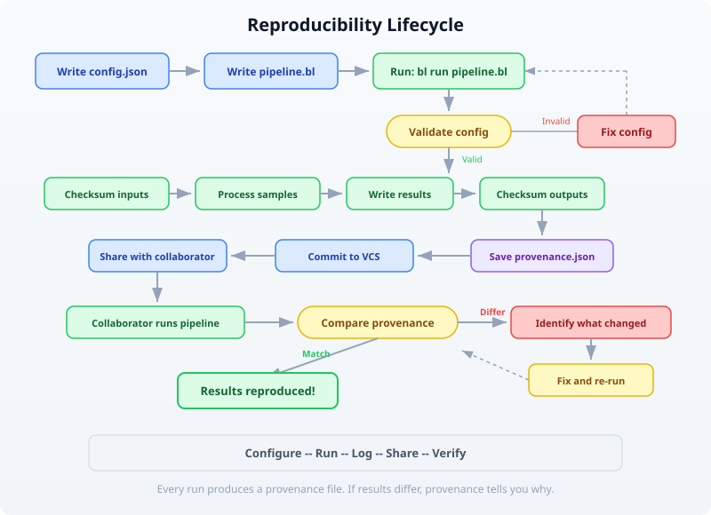
The cycle is: configure, run, log, share, verify. Every run produces a provenance file. Every provenance file can be compared against any other. If results differ, the provenance tells you exactly why.
Exercises
Exercise 1: Add a New QC Metric
Add a read complexity metric to the pipeline. Compute the number of unique k-mers divided by the total number of k-mers for each read. A low ratio indicates low-complexity (repetitive) sequence. Add this as a new column in the summary CSV and a new step in the provenance log.
Hint: For a single read, complexity can be computed as:
fn read_complexity(seq, k) {
let all_k = kmers(seq, k)
let unique_k = unique(all_k) |> len()
unique_k / len(all_k)
}
Exercise 2: Parameter Sweep
Write a script that runs the pipeline with three different min_quality settings (10, 20, 30) and compares the results. Use a separate config file for each run. Produce a comparison table showing how the pass rate changes with quality threshold.
Hint: You can modify the config programmatically:
let base_config = json_decode(read_lines("config.json") |> reduce(|a, b| a + b))
let thresholds = [10, 20, 30]
let sweep_results = thresholds |> map(|q| {
# Create modified config with new threshold
# Run pipeline, collect results
...
})
Exercise 3: Integrity Checker
Write a standalone script called verify.bl that takes a provenance JSON file, re-checksums the input and output files, and reports whether the data is still intact. It should print “PASS” or “FAIL” for each file.
Hint: Load the provenance file, extract the checksums, and compare against fresh sha256() calls.
Exercise 4: Multi-Run Comparison
After running the pipeline at least twice (perhaps with different parameters), write a script that loads all provenance files from the logs/ directory, extracts the key metrics (total reads, pass rate, timing), and produces a comparison table. This is useful for tracking how an analysis evolves over time.
Key Takeaways
┌─────────────────────────────────────────────────────────────┐
│ Day 22 Key Takeaways │
├─────────────────────────────────────────────────────────────┤
│ │
│ 1. Never hardcode parameters. Use config files (JSON) │
│ that live alongside your code. │
│ │
│ 2. Checksum everything. sha256() on inputs before │
│ processing and outputs after. If data changes, │
│ you will know immediately. │
│ │
│ 3. Log provenance automatically. Every pipeline run │
│ should produce a timestamped record of parameters, │
│ checksums, and step outcomes. │
│ │
│ 4. Validate before processing. Catch config errors │
│ and missing files before wasting compute time. │
│ │
│ 5. Separate concerns. Config, code, and logs are three │
│ distinct files. Modules split large pipelines into │
│ testable components. │
│ │
│ 6. Make it one-command reproducible. A collaborator │
│ should be able to run your analysis with: │
│ bl run init.bl && bl run scripts/analysis.bl │
│ │
│ 7. Compare provenance to debug differences. When │
│ results diverge, the provenance log tells you │
│ exactly what changed. │
│ │
└─────────────────────────────────────────────────────────────┘
What’s Next
Tomorrow in Day 23, we move from ensuring reproducibility to scaling up: cloud and cluster deployment. You will learn how to take the pipeline you built today and run it on larger datasets using distributed compute resources. The provenance system we built today will be essential — when your analysis runs on a remote cluster, good logging is the only way to know what happened.
Day 23: Batch Processing and Automation
| Difficulty | Intermediate |
| Biology knowledge | Basic (FASTQ quality, sample sheets, sequencing runs) |
| Coding knowledge | Intermediate (functions, records, file I/O, parallel execution, error handling) |
| Time | ~3 hours |
| Prerequisites | Days 1–22 completed, BioLang installed (see Appendix A) |
| Data needed | Generated locally via init.bl |
What You’ll Learn
- Why batch processing is essential for modern sequencing throughput
- How to parse sample sheets and discover files by directory traversal
- How to design per-sample processing functions that compose into batch workflows
- How to use parallel execution to process hundreds of samples efficiently
- How to track progress and log results across large batches
- How to handle errors gracefully so one failed sample does not halt 199 others
- How to aggregate per-sample results into cohort-level summaries
The Problem
“I have 200 samples — do I really have to run each one manually?”
Your sequencing core facility just delivered the latest run: 200 paired-end samples from a population genetics study. Each sample has a forward and reverse FASTQ file, totaling 400 files. The sample sheet maps sample IDs to file paths, tissue types, and expected coverage depths.
Yesterday, you built a reproducible pipeline for a single sample. You validated parameters, checksummed inputs, ran quality filtering, and logged provenance. That pipeline works perfectly — for one sample. Now you need to run it 200 times, collect all the results, and produce a cohort-level summary.
You could copy-paste your single-sample script 200 times, changing the filename each time. You could write a shell loop. You could open 200 terminal tabs. All of these approaches share the same problems: they are error-prone, they do not track which samples succeeded or failed, and they do not aggregate results.
What you need is a batch processing framework: a pattern for taking a single-sample pipeline and running it across an entire cohort, with progress tracking, error recovery, and automatic aggregation. That is what we build today.
The Scale of Modern Sequencing
Before we write code, let us understand why batch processing is not optional. A modern Illumina NovaSeq 6000 produces up to 6 terabytes of data per run. A typical run might contain:
- 96–384 samples on a single flow cell
- 2 files per sample (paired-end: R1 and R2)
- 10–50 million reads per sample
- A sample sheet mapping barcodes to sample IDs
At this scale, manual processing is not merely tedious — it is impossible. Even if each sample takes only 30 seconds to process, 200 samples at 30 seconds each is nearly two hours of wall-clock time. But if your single-sample pipeline takes 5 minutes (common for real QC), you are looking at 16 hours of sequential processing. With parallelism, you can bring that down to the time it takes to process one sample.
The following diagram shows the batch processing flow:
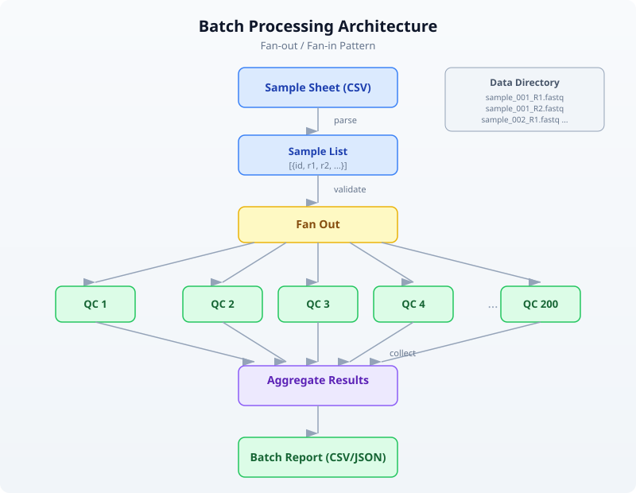
The key insight is the fan-out / fan-in pattern. You start with a list of samples, fan out to process each one independently, then fan back in to aggregate the results. Each sample is independent — if sample 47 fails, samples 1–46 and 48–200 are unaffected.
Setting Up the Project
Generate the test data for today’s exercises:
bl run init.bl
The init.bl script creates a realistic batch processing scenario:
# init.bl creates:
# data/sample_sheet.csv — sample sheet with 24 samples
# data/fastq/ — 24 FASTQ files (one per sample)
# results/ — output directory
# logs/ — batch log directory
We use 24 samples instead of 200 to keep runtimes short during learning, but the patterns we develop work identically at any scale.
Sample Sheet Parsing
A sample sheet is the bridge between the sequencing instrument and your analysis. It maps each sample to its files, metadata, and processing instructions. In production, sample sheets come from the core facility in CSV or TSV format. Here is what ours looks like:
sample_id,fastq_file,tissue,expected_reads,group
SAMP_001,data/fastq/SAMP_001.fastq,blood,500,control
SAMP_002,data/fastq/SAMP_002.fastq,liver,500,treatment
SAMP_003,data/fastq/SAMP_003.fastq,brain,500,control
...
Parsing a sample sheet in BioLang is a single function call:
let sheet = read_csv("data/sample_sheet.csv")
Requires CLI: This example uses file I/O not available in the browser. Run with
bl run.
This returns a table with named columns. You can inspect it, filter it, and iterate over it. But before you process anything, you should validate that every file in the sample sheet actually exists:
fn validate_sample_sheet(sheet) {
let files = sheet |> select("fastq_file") |> flatten()
let missing = files |> filter(|f| !file_exists(f))
missing
}
let missing = validate_sample_sheet(sheet)
if len(missing) > 0 then {
println("ERROR: Missing files: " + str(missing))
error("Cannot proceed with missing input files")
}
This is a critical safety check. If the core facility misspelled a filename or your data transfer was incomplete, you want to know immediately — not after processing 150 samples and encountering a crash on sample 151.
Extracting Samples as Records
Tables are convenient for viewing data, but for per-sample processing, you want a list of records where each record contains all the information about one sample:
fn sheet_to_samples(sheet) {
let ids = sheet |> select("sample_id") |> flatten()
let files = sheet |> select("fastq_file") |> flatten()
let tissues = sheet |> select("tissue") |> flatten()
let groups = sheet |> select("group") |> flatten()
range(0, len(ids)) |> map(|i| {
id: ids[i],
fastq: files[i],
tissue: tissues[i],
group: groups[i]
})
}
let samples = sheet_to_samples(sheet)
Now samples is a list of records like {id: "SAMP_001", fastq: "data/fastq/SAMP_001.fastq", tissue: "blood", group: "control"}. Each record is a self-contained description of what to process and where to find it.
Directory-Based Discovery
Not every sequencing run comes with a sample sheet. Sometimes you receive a directory full of FASTQ files and need to discover samples programmatically. This is common when downloading public datasets from SRA or ENA, or when working with legacy data.
BioLang’s list_dir() function returns the contents of a directory. Combined with filter() and string operations, you can build a sample list from file paths alone:
fn discover_samples(data_dir) {
let all_files = list_dir(data_dir)
let fastq_files = all_files |> filter(|f| ends_with(f, ".fastq"))
fastq_files |> map(|f| {
let basename = f |> split("/") |> sort() |> reduce(|a, b| b)
let sample_id = basename |> replace(".fastq", "")
{
id: sample_id,
fastq: f,
tissue: "unknown",
group: "unknown"
}
})
}
This approach is useful for ad-hoc analyses, but sample-sheet-driven processing is preferred whenever metadata is available. A sample sheet carries tissue type, expected read count, experimental group, and other annotations that directory traversal cannot infer.
When to Use Each Approach
Decision: How to find samples
==============================
Have a sample sheet?
│
├── YES → Parse CSV/TSV
│ ✓ Metadata included
│ ✓ Explicit file mapping
│ ✓ Validates against manifest
│
└── NO → Discover from directory
✓ Works with any file structure
✗ No metadata (tissue, group)
✗ Naming conventions must be consistent
Per-Sample Processing Functions
The core of any batch pipeline is a function that processes a single sample and returns a structured result. This function should be pure — it takes a sample record as input, processes it, and returns a result record. It should not modify global state or depend on information outside its arguments.
Here is a complete per-sample QC function:
fn process_sample(sample, config) {
let t = timer_start()
let reads = read_fastq(sample.fastq)
let total = len(reads)
let filtered = reads |> quality_filter(config.min_quality)
let passed = filtered |> filter(|r| len(r.seq) >= config.min_length)
let pass_count = len(passed)
let gc_values = passed |> map(|r| gc_content(r.seq))
let lengths = passed |> map(|r| len(r.seq))
{
sample_id: sample.id,
tissue: sample.tissue,
group: sample.group,
total_reads: total,
passed_reads: pass_count,
pass_rate: pass_count / total,
gc_mean: mean(gc_values),
gc_stdev: stdev(gc_values),
length_mean: mean(lengths),
length_min: min(lengths),
length_max: max(lengths),
elapsed: timer_elapsed(t)
}
}
Notice what this function does not do:
- It does not print progress messages (that is the caller’s job)
- It does not write files (results are returned, not saved)
- It does not handle errors (the caller wraps it in
try/catch) - It does not know about other samples (it processes exactly one)
This separation of concerns is what makes the function composable. You can call it once for testing, map it over 24 samples for a pilot study, or par_map it over 200 samples for a full cohort.
Parallel Batch Execution
Sequential processing — map(|s| process_sample(s, config)) — works correctly but wastes time. If your machine has 8 cores and each sample takes 5 seconds, processing 200 samples sequentially takes 1,000 seconds. With 8-way parallelism, it takes 125 seconds.
BioLang’s par_map() distributes work across available cores:
let results = samples |> par_map(|s| process_sample(s, config))
That is the entire change. Replace map with par_map, and your pipeline runs in parallel. The results are collected in the same order as the input, so results[0] always corresponds to samples[0].
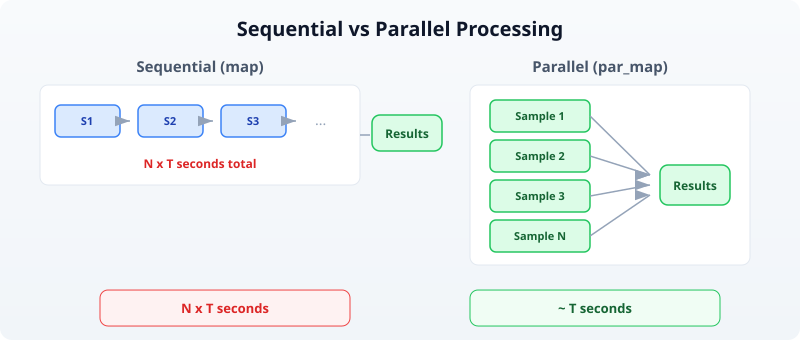
When to Parallelize
Not every workload benefits from parallelism. The overhead of distributing work and collecting results means that very fast operations (under 10 milliseconds per item) may actually run slower with par_map than with map. Use this rule of thumb:
| Per-item time | Recommendation |
|---|---|
| < 10 ms | Use map (overhead dominates) |
| 10 ms – 1 s | par_map if batch > 50 items |
| > 1 s | Always use par_map |
For bioinformatics workloads, individual samples almost always take more than a second, so par_map is the default choice.
Progress and Logging
When processing 200 samples, silence is unacceptable. You need to know which sample is being processed, how many have completed, and how long the batch is taking. But you also do not want to flood the console with 200 lines of output.
A good batch progress system reports:
- Start: total count and configuration
- Periodic updates: every N samples or every M seconds
- Completion: total time, success/failure counts
Here is a pattern that processes samples one at a time with progress reporting:
fn run_batch_with_progress(samples, config) {
let total = len(samples)
let t_batch = timer_start()
let results = []
let errors = []
samples |> each(|s| {
let idx = len(results) + len(errors) + 1
try {
let result = process_sample(s, config)
results = results + [result]
if idx % 5 == 0 then {
let elapsed = timer_elapsed(t_batch)
let rate = idx / elapsed
let remaining = (total - idx) / rate
println("[" + str(idx) + "/" + str(total) + "] " + str(int(remaining)) + "s remaining")
}
} catch err {
errors = errors + [{sample_id: s.id, error: str(err)}]
println("WARN: " + s.id + " failed: " + str(err))
}
})
{
results: results,
errors: errors,
total_time: timer_elapsed(t_batch)
}
}
This function processes each sample, catches errors individually, and prints a progress update every 5 samples. The rate calculation (idx / elapsed) gives a simple estimate of remaining time.
Logging to File
Console output disappears when the terminal closes. For batch processing, you should also write a log file:
fn write_batch_log(log_file, batch_result) {
let lines = []
let lines = lines + ["Batch completed at: " + (now() |> format_date("%Y-%m-%d %H:%M:%S"))]
let lines = lines + ["Total time: " + str(batch_result.total_time) + " seconds"]
let lines = lines + ["Succeeded: " + str(len(batch_result.results))]
let lines = lines + ["Failed: " + str(len(batch_result.errors))]
let lines = lines + [""]
if len(batch_result.errors) > 0 then {
let lines = lines + ["Failed samples:"]
batch_result.errors |> each(|e| {
lines = lines + [" " + e.sample_id + ": " + e.error]
})
}
write_lines(log_file, lines)
}
Error Recovery
In batch processing, errors are inevitable. A corrupted FASTQ file, a sample with zero reads, a disk that fills up mid-run — these things happen. The question is not whether errors will occur but how your pipeline handles them.
The worst possible behavior is to crash on the first error, losing all progress. The 150 samples that already succeeded produce no output because the pipeline exited before writing results. This is catastrophic when each sample takes minutes to process.
The correct approach is error isolation: each sample is processed independently, errors are caught and recorded, and the batch continues. At the end, you have results for all successful samples and a clear list of failures to investigate.
Error Recovery Pattern
======================
Sample 1 ──► OK ──► result
Sample 2 ──► OK ──► result
Sample 3 ──► FAIL ──► log error, continue
Sample 4 ──► OK ──► result
Sample 5 ──► OK ──► result
...
Sample N ──► OK ──► result
Final: 198 results + 2 errors
(not: crash after sample 3, lose everything)
The try/catch pattern we used in run_batch_with_progress above implements this. Each sample is wrapped in its own error boundary. A failure in one sample does not affect any other.
Retry Logic
Some errors are transient — a temporary network issue when downloading a reference, a brief I/O contention on shared storage. For these, retrying the operation often succeeds:
fn process_with_retry(sample, config, max_retries) {
let attempts = 0
let last_error = ""
let result = nil
range(0, max_retries) |> each(|attempt| {
if result == nil then {
try {
result = process_sample(sample, config)
} catch err {
last_error = str(err)
attempts = attempt + 1
}
}
})
if result == nil then {
error("Failed after " + str(max_retries) + " attempts: " + last_error)
}
result
}
In production pipelines, retries are most useful for I/O-bound operations (network, disk). CPU-bound operations (quality filtering, statistics) either succeed or fail deterministically — retrying them wastes time without changing the outcome.
Aggregating Results
After processing all samples, you have a list of per-sample result records. The next step is to aggregate these into a cohort-level summary. This serves two purposes: it provides a quick overview of the entire batch, and it identifies outlier samples that may need manual review.
Per-Sample Summary Table
The simplest aggregation is a table with one row per sample:
fn build_summary_table(results) {
results |> map(|r| {
sample_id: r.sample_id,
tissue: r.tissue,
group: r.group,
total_reads: r.total_reads,
passed_reads: r.passed_reads,
pass_rate: r.pass_rate,
gc_mean: r.gc_mean,
length_mean: r.length_mean
}) |> to_table()
}
Group-Level Statistics
For experiments with treatment and control groups, you often want summary statistics per group. BioLang’s group_by and summarize make this straightforward:
fn summarize_by_group(results) {
results |> group_by("group") |> summarize(|grp, rows| {
group: grp,
n_samples: nrow(rows),
mean_pass_rate: col_mean(rows, "pass_rate"),
mean_gc: col_mean(rows, "gc_mean"),
mean_reads: col_mean(rows, "total_reads")
})
}
Outlier Detection
Samples with unusual metrics may indicate technical problems (failed library prep, contamination, index hopping) or genuine biological differences. A simple approach flags samples whose metrics fall outside 2 standard deviations of the cohort mean:
fn flag_outliers(results, field) {
let values = results |> map(|r| {
if field == "pass_rate" then r.pass_rate
else if field == "gc_mean" then r.gc_mean
else r.length_mean
})
let m = mean(values)
let s = stdev(values)
let lower = m - 2.0 * s
let upper = m + 2.0 * s
results |> filter(|r| {
let v = if field == "pass_rate" then r.pass_rate
else if field == "gc_mean" then r.gc_mean
else r.length_mean
v < lower or v > upper
}) |> map(|r| r.sample_id)
}
This is a coarse screen, not a definitive classification. Outlier samples should be reviewed manually before being excluded from downstream analysis.
Putting It All Together
Here is the complete batch processing pipeline, assembled from the components we developed above:
Requires CLI: This example uses file I/O not available in the browser. Run with
bl run.
let config_text = read_lines("config.json") |> reduce(|a, b| a + b)
let config = json_decode(config_text)
let sheet = read_csv("data/sample_sheet.csv")
let missing = validate_sample_sheet(sheet)
if len(missing) > 0 then {
error("Missing input files: " + str(missing))
}
let samples = sheet_to_samples(sheet)
let batch = run_batch_with_progress(samples, config)
let summary = build_summary_table(batch.results)
summary |> write_csv(config.output_dir + "/batch_summary.csv")
let group_stats = summarize_by_group(batch.results)
let group_table = group_stats |> to_table()
group_table |> write_csv(config.output_dir + "/group_summary.csv")
let gc_outliers = flag_outliers(batch.results, "gc_mean")
let rate_outliers = flag_outliers(batch.results, "pass_rate")
let report = {
timestamp: now() |> format_date("%Y-%m-%d %H:%M:%S"),
total_samples: len(samples),
succeeded: len(batch.results),
failed: len(batch.errors),
total_time: batch.total_time,
gc_outliers: gc_outliers,
rate_outliers: rate_outliers,
errors: batch.errors
}
write_lines(config.log_dir + "/batch_report.json", [json_encode(report)])
This pipeline:
- Loads configuration from a JSON file
- Parses the sample sheet and validates that all files exist
- Processes all samples with progress tracking and error isolation
- Builds per-sample and per-group summary tables
- Flags statistical outliers for manual review
- Writes a batch report with timing, error counts, and outlier lists
Automation
The final step in a batch processing workflow is making it fully automated. An automated pipeline can be triggered by a cron job, a file watcher, or a sequencing instrument completion signal. It should require zero human intervention for the common case and produce clear alerts when something goes wrong.
The Automation Script Pattern
An automation wrapper handles the lifecycle around your pipeline:
Requires CLI: This example uses file I/O not available in the browser. Run with
bl run.
fn run_automated_batch(sheet_path, config_path) {
let t = timer_start()
let config_text = read_lines(config_path) |> reduce(|a, b| a + b)
let config = json_decode(config_text)
mkdir(config.output_dir)
mkdir(config.log_dir)
let sheet = read_csv(sheet_path)
let missing = validate_sample_sheet(sheet)
if len(missing) > 0 then {
let alert = {
status: "FAILED",
reason: "missing_files",
files: missing,
timestamp: now() |> format_date("%Y-%m-%d %H:%M:%S")
}
write_lines(config.log_dir + "/alert.json", [json_encode(alert)])
error("Batch aborted: missing files")
}
let samples = sheet_to_samples(sheet)
let batch = run_batch_with_progress(samples, config)
let summary = build_summary_table(batch.results)
summary |> write_csv(config.output_dir + "/batch_summary.csv")
let report = {
status: if len(batch.errors) == 0 then "SUCCESS" else "PARTIAL",
total_samples: len(samples),
succeeded: len(batch.results),
failed: len(batch.errors),
total_time: timer_elapsed(t),
errors: batch.errors
}
write_lines(config.log_dir + "/batch_report.json", [json_encode(report)])
report
}
Integrating with Shell
To trigger a BioLang batch pipeline from a shell script or cron job:
#!/bin/bash
# nightly_batch.sh — run QC on any new sample sheets
SHEET_DIR="/data/sequencing/incoming"
CONFIG="/opt/pipelines/qc_config.json"
for sheet in "$SHEET_DIR"/*.csv; do
echo "Processing: $sheet"
bl run automation.bl -- "$sheet" "$CONFIG"
done
The -- separator passes arguments to the BioLang script. This pattern integrates BioLang pipelines into existing infrastructure without requiring changes to the surrounding automation.
Exercises
Exercise 1: Tissue-Specific QC Thresholds
Modify the batch pipeline to support different quality thresholds per tissue type. Create a configuration that specifies min_quality: 25 for blood samples and min_quality: 20 for all other tissues. Process the sample sheet with tissue-aware filtering and compare the pass rates.
Hint: Add a tissue_thresholds record to your config, then look up the threshold for each sample’s tissue type inside process_sample.
Exercise 2: Checkpoint and Resume
Real batch jobs can be interrupted (power failure, killed process, disk full). Write a batch pipeline that saves a checkpoint file after each sample. If the pipeline is restarted, it reads the checkpoint, skips already-completed samples, and resumes from where it left off.
Hint: Write completed sample IDs to a file. On startup, read that file and filter out already-processed samples from the sample list.
Exercise 3: Cross-Sample Contamination Check
After processing all samples, compare the k-mer profiles between samples in different groups. If two samples from different groups have highly similar k-mer distributions, flag them as potential cross-contamination. Use kmers(seq, 5) to build k-mer frequency profiles and compare them.
Hint: For each sample, build a k-mer frequency record from the first 50 passed reads. Compare all pairs of samples across groups using a similarity metric (e.g., shared k-mer fraction).
Exercise 4: Batch Report Generator
Write a script that reads a batch_report.json file and a batch_summary.csv file, then produces a human-readable text report with:
- Run timestamp and total time
- Success/failure counts
- Top 5 and bottom 5 samples by pass rate
- Per-group averages
- List of any flagged outliers
Hint: Use read_csv() for the summary, json_decode() for the report, and sort() to rank samples.
Key Takeaways
┌─────────────────────────────────────────────────────────────┐
│ Day 23 Key Takeaways │
├─────────────────────────────────────────────────────────────┤
│ │
│ 1. Parse sample sheets, don't hardcode file lists. │
│ read_csv() turns a sample sheet into a structured │
│ table you can validate and iterate. │
│ │
│ 2. Write single-sample functions first. A function │
│ that processes one sample correctly can be mapped │
│ over any number of samples via map or par_map. │
│ │
│ 3. Use par_map for parallelism. Replacing map with │
│ par_map is a one-word change that can cut batch │
│ time by 4-8x on modern hardware. │
│ │
│ 4. Isolate errors with try/catch per sample. One │
│ failed sample should never crash an entire batch │
│ of 200. │
│ │
│ 5. Track progress. Print periodic updates with │
│ estimated time remaining. Write logs to files │
│ that survive terminal disconnections. │
│ │
│ 6. Aggregate and flag. Per-sample results become │
│ group summaries and outlier lists. Automation │
│ means detecting problems, not just producing │
│ numbers. │
│ │
│ 7. Automate the lifecycle. A production pipeline │
│ validates inputs, processes samples, writes │
│ results, logs errors, and can be triggered by │
│ a cron job or file watcher. │
│ │
└─────────────────────────────────────────────────────────────┘
What’s Next
Tomorrow in Day 24, we move from processing data locally to working with cloud and cluster resources. You will learn how to submit batch jobs to remote compute, monitor their progress, and collect results across distributed systems. The batch processing patterns from today — fan-out, error isolation, aggregation — are the foundation of every distributed pipeline.
Day 24: Programmatic Database Access
| Difficulty | Intermediate |
| Biology knowledge | Intermediate (gene names, protein accessions, pathway concepts, variant notation) |
| Coding knowledge | Intermediate (functions, records, error handling, pipes, tables) |
| Time | ~3–4 hours |
| Prerequisites | Days 1–23 completed, BioLang installed (see Appendix A) |
| Data needed | Generated locally via init.bl (gene list) |
| Requirements | Internet access for all API examples |
What You’ll Learn
- Why programmatic database access replaces manual copy-paste from web browsers
- How to query NCBI for gene information and nucleotide sequences
- How to retrieve gene annotations from Ensembl and predict variant effects
- How to search UniProt for protein information and functional annotations
- How to explore metabolic pathways via KEGG and Reactome
- How to build protein interaction networks with STRING
- How to look up Gene Ontology terms and annotations
- How to compose multi-database annotation pipelines with error handling
- How to implement rate limiting and result caching strategies
The Problem
“The gene list from my experiment — what’s already known about these genes?”
You have just finished a differential expression analysis. The statistics are clean: 50 genes pass your significance threshold (adjusted p-value < 0.05, absolute log2 fold change > 1.5). You have gene symbols, fold changes, and p-values. But gene symbols alone tell you nothing about biology.
What do these genes do? What pathways are they in? Do any have known disease associations? Are the upregulated genes in the same protein complex? Does the literature already link any of them to your phenotype?
The answers live in public databases. NCBI has gene summaries and literature links. Ensembl has genomic coordinates and cross-references. UniProt has protein function and domain annotations. KEGG and Reactome have pathway maps. STRING has protein-protein interaction networks. Gene Ontology has standardized functional terms.
You could visit each database’s website, type each gene name into a search box, and copy results into a spreadsheet. For 50 genes across 8 databases, that is 400 manual searches. At two minutes each, you are looking at 13 hours of clicking and copying — and you will make mistakes.
Or you could write a script that does all 400 queries in under five minutes.
The Bioinformatics Database Landscape
Before writing code, you need to know which database answers which question. The following map shows the major public databases and their primary use cases:

Each database has a REST API. BioLang wraps these APIs as built-in functions, so you do not need to construct URLs, parse JSON responses, or handle HTTP status codes yourself.
Section 1: NCBI — The Central Hub
NCBI (National Center for Biotechnology Information) is the largest biomedical database in the world. Its Entrez system connects dozens of databases: Gene, Nucleotide, Protein, PubMed, and more.
Searching for Genes
Requires CLI: This example uses network APIs not available in the browser. Run with
bl run.
The ncbi_gene() function searches NCBI Gene by name or symbol:
let brca1 = ncbi_gene("BRCA1")
This returns a record with gene ID, description, chromosome location, and summary. The summary field is particularly valuable — it is a curated, human-written paragraph describing what the gene does.
To search across any NCBI database, use ncbi_search():
let results = ncbi_search("gene", "BRCA1 AND Homo sapiens[ORGN]")
The first argument is the database name (gene, nuccore, protein, pubmed, etc.), and the second is an Entrez query string. NCBI’s query syntax supports Boolean operators, field tags like [ORGN] for organism, and range queries.
Fetching Sequences
Once you have an accession or ID, you can fetch the actual sequence:
let seq = ncbi_sequence("nuccore", "NM_007294.4")
This retrieves the nucleotide sequence for the BRCA1 mRNA transcript. The ncbi_sequence() function takes a database name and an accession number.
NCBI Datasets
For richer, more structured gene data, NCBI Datasets provides a modern API:
let gene_data = datasets_gene("TP53")
This returns detailed gene information including genomic ranges, transcript variants, and cross-references — often more structured than the classic Entrez output.
Section 2: Ensembl — Genomic Annotations
Ensembl is the European counterpart to NCBI, maintained by EMBL-EBI. It excels at genomic coordinate mapping, cross-species comparisons, and variant annotation.
Gene Information
You can look up genes by their Ensembl ID or by symbol:
let gene_by_id = ensembl_gene("ENSG00000141510")
let gene_by_symbol = ensembl_symbol("homo_sapiens", "TP53")
The ensembl_gene() function takes an Ensembl stable ID (e.g., ENSG for genes, ENST for transcripts). The ensembl_symbol() function takes a species name and gene symbol.
Fetching Sequences
let sequence = ensembl_sequence("ENSG00000141510")
This returns the genomic sequence for the gene. Ensembl sequences include the full genomic region, not just the coding sequence.
Variant Effect Prediction
One of Ensembl’s most powerful features is VEP (Variant Effect Predictor). Given a variant in HGVS notation, VEP tells you its predicted functional consequence:
let effects = ensembl_vep("9:g.22125504G>C")
VEP returns consequence types (missense, synonymous, splice site, etc.), affected transcripts, protein changes, and pathogenicity predictions. This is essential for variant interpretation in clinical genomics.
Section 3: UniProt — Protein Knowledge
UniProt is the most comprehensive protein database. It contains manually curated protein function, domain annotations, post-translational modifications, and subcellular localization.
Searching Proteins
let results = uniprot_search("gene:BRCA1 AND organism_id:9606")
UniProt’s query syntax supports field-specific searches. The organism ID 9606 is Homo sapiens. Results include accession numbers, protein names, and review status (Swiss-Prot entries are manually curated; TrEMBL entries are automated).
Getting Protein Details
With an accession number, you can retrieve the full entry:
let entry = uniprot_entry("P38398")
The entry record contains protein name, function description, subcellular location, tissue specificity, disease associations, and cross-references to other databases. This single call often provides more biological context than any other database.
Section 4: Pathways and Ontologies
Genes do not act in isolation. Understanding which pathways and biological processes your genes participate in is often more informative than studying individual genes.
KEGG Pathways
KEGG (Kyoto Encyclopedia of Genes and Genomes) maps genes to metabolic and signaling pathways:
let pathway = kegg_get("hsa:7157")
let search = kegg_find("pathway", "apoptosis")
The kegg_get() function retrieves a specific entry by KEGG identifier. KEGG uses its own ID scheme: hsa:7157 is human gene 7157 (TP53). The kegg_find() function searches within a KEGG database.
Reactome Pathways
Reactome is another major pathway database, with more detailed reaction-level annotations:
let pathways = reactome_pathways("TP53")
This returns all Reactome pathways that include TP53. Reactome pathways are hierarchically organized, from broad categories (“Signal Transduction”) down to specific reactions (“TP53 Regulates Transcription of Cell Death Genes”).
Gene Ontology
Gene Ontology (GO) provides a standardized vocabulary for gene function, organized into three domains:
- Biological Process (BP) — what the gene does (e.g., “apoptotic process”)
- Molecular Function (MF) — how it does it (e.g., “DNA binding”)
- Cellular Component (CC) — where it does it (e.g., “nucleus”)
let term = go_term("GO:0006915")
let annotations = go_annotations("TP53")
The go_term() function retrieves details about a specific GO term. The go_annotations() function retrieves all GO annotations for a gene, across all three domains.
Section 5: Protein Networks — STRING
STRING (Search Tool for the Retrieval of Interacting Genes/Proteins) maps known and predicted protein-protein interactions:
let network = string_network(["TP53", "MDM2", "CDKN1A", "BAX", "BCL2"])
Note that string_network() takes a list of identifiers, not a single string. This is because protein interactions are inherently about relationships between multiple proteins. The result includes interaction scores (from 0 to 1) based on experimental evidence, text mining, co-expression, and genomic context.
STRING is particularly useful for understanding whether your differentially expressed genes form a connected network or are scattered across unrelated pathways.
PDB Structures
For genes with known 3D structures, the Protein Data Bank provides structural information:
let structure = pdb_entry("1TUP")
This retrieves metadata about PDB entry 1TUP (the TP53 DNA-binding domain), including resolution, experimental method, authors, and ligands.
Section 6: Building an Annotation Pipeline
Now that you know the individual databases, let us combine them into a pipeline that annotates an entire gene list. This is where BioLang’s pipe-first design shines — each annotation step flows naturally into the next.
The Pipeline Architecture

Single-Gene Annotation Function
Requires CLI: This example uses network APIs not available in the browser. Run with
bl run.
Start by writing a function that annotates one gene. Wrap each API call in try/catch because any individual query might fail (the gene might not exist in that database, or the API might be temporarily unavailable):
let annotate_gene = |symbol| {
let result = {symbol: symbol}
let gene_info = try {
ncbi_gene(symbol)
} catch err {
nil
}
let protein_info = try {
uniprot_search(f"gene:{symbol} AND organism_id:9606")
} catch err {
nil
}
let pathways = try {
reactome_pathways(symbol)
} catch err {
nil
}
let go = try {
go_annotations(symbol)
} catch err {
nil
}
{
symbol: symbol,
ncbi: gene_info,
uniprot: protein_info,
pathways: pathways,
go_terms: go
}
}
This function returns a record with all available annotations for one gene. If any database is unreachable or the gene is not found, that field is nil rather than crashing the entire pipeline.
Annotating a Gene List
With the single-gene function defined, annotating an entire list is a single pipe:
let genes = ["TP53", "BRCA1", "EGFR", "KRAS", "MYC"]
let annotations = genes |> map(|g| annotate_gene(g))
This produces a list of annotation records. Each record contains everything we know about that gene from four different databases.
Rate Limiting
Public APIs have rate limits. NCBI allows 3 requests per second without an API key (10 with one). Ensembl allows 15 requests per second. UniProt allows roughly 25 requests per second.
When you annotate 50 genes with 4 API calls each, you are making 200 requests. Without rate limiting, you will hit rate limits and get errors or temporary bans.
The simplest rate-limiting strategy is to add a delay between requests:
let annotate_with_delay = |symbol| {
let result = annotate_gene(symbol)
sleep(500)
result
}
let annotations = genes |> map(|g| annotate_with_delay(g))
The sleep(500) call pauses for 500 milliseconds (half a second) between genes. This keeps you well under all rate limits.
Rate Limiting Strategy

For 50 genes at 500ms each, the total runtime is about 25 seconds. That is far better than 13 hours of manual browsing.
Section 7: Error Handling for API Calls
Network requests fail. Servers go down. Genes have different names in different databases. A robust annotation pipeline handles all of these cases.
Retry Logic
Some failures are transient — a server timeout, a momentary network glitch. For these, retrying often works:
let retry = |f, max_attempts| {
let attempt = 1
let result = nil
let success = false
while attempt <= max_attempts and !success {
let outcome = try {
f()
} catch err {
nil
}
if outcome != nil {
result = outcome
success = true
} else {
attempt = attempt + 1
sleep(1000 * attempt)
}
}
result
}
This function takes a zero-argument closure and retries it up to max_attempts times, with exponential backoff (1 second after the first failure, 2 seconds after the second, etc.).
Use it in your annotation pipeline:
let safe_ncbi = |symbol| retry(|| ncbi_gene(symbol), 3)
Collecting Errors
Rather than silently swallowing errors, track them so you can report which genes failed and why:
let annotate_with_tracking = |symbol| {
let errors = []
let gene_info = try {
ncbi_gene(symbol)
} catch err {
errors = errors + [f"NCBI: {err}"]
nil
}
let protein = try {
uniprot_search(f"gene:{symbol} AND organism_id:9606")
} catch err {
errors = errors + [f"UniProt: {err}"]
nil
}
{
symbol: symbol,
ncbi: gene_info,
uniprot: protein,
errors: errors,
error_count: len(errors)
}
}
After annotating all genes, you can filter for problematic ones:
let failed = annotations |> filter(|a| a.error_count > 0)
Section 8: Caching Results
If you run your annotation pipeline multiple times during development, you are making the same API calls repeatedly. This wastes time and strains public servers. A simple file-based cache avoids redundant queries.
Write-Through Cache Pattern
let cached_query = |name, query_fn| {
let cache_file = f"data/cache/{name}.json"
let cached = try {
read(cache_file) |> json_decode()
} catch err {
nil
}
if cached != nil {
cached
} else {
let result = query_fn()
let json = result |> json_encode()
write(cache_file, json)
result
}
}
Use it to wrap any API call:
let tp53_ncbi = cached_query("tp53_ncbi", || ncbi_gene("TP53"))
The first call hits the API and saves the result to disk. Subsequent calls read from disk, completing instantly. This pattern is especially valuable during pipeline development, when you re-run the script dozens of times while tweaking downstream analysis steps.
Section 9: Cross-Database Integration
The real power of programmatic access emerges when you combine data from multiple databases into a unified view. Each database contributes a different facet of biological knowledge.
Multi-Database Annotation Table
Requires CLI: This example uses network APIs not available in the browser. Run with
bl run.
Here is a complete pipeline that builds an annotation table from multiple sources:
let build_annotation = |symbol| {
let ncbi = try { ncbi_gene(symbol) } catch err { nil }
sleep(200)
let ensembl = try { ensembl_symbol("homo_sapiens", symbol) } catch err { nil }
sleep(200)
let uniprot = try { uniprot_search(f"gene:{symbol} AND organism_id:9606") } catch err { nil }
sleep(200)
let pathways = try { reactome_pathways(symbol) } catch err { nil }
sleep(200)
{
symbol: symbol,
ncbi_summary: if ncbi != nil { str(ncbi) } else { "N/A" },
ensembl_id: if ensembl != nil { str(ensembl) } else { "N/A" },
uniprot_hit: if uniprot != nil { str(uniprot) } else { "N/A" },
pathway_count: if pathways != nil { len(pathways) } else { 0 }
}
}
let genes = read_csv("data/gene_list.csv")
|> select("symbol")
let symbols = genes |> map(|row| row.symbol)
let results = symbols |> map(|s| build_annotation(s))
let annotation_table = results |> to_table()
write_csv(annotation_table, "data/annotations.csv")
This pipeline reads a gene list, queries four databases per gene with rate limiting, builds a structured record per gene, converts to a table, and writes the result. The entire workflow is 25 lines of BioLang.
The Annotation Pipeline Flow
Input: gene_list.csv Output: annotations.csv
┌────────────────┐ ┌─────────────────────────────┐
│ symbol │ │ symbol | ncbi_summary | ... │
│ ────── │ │ ────── | ──────────── | ... │
│ TP53 │──┐ │ TP53 | Tumor prot...| ... │
│ BRCA1 │ │ Per gene: │ BRCA1 | BRCA1 DNA ..| ... │
│ EGFR │ ├─► NCBI │ EGFR | Epidermal ..| ... │
│ KRAS │ ├─► Ensembl │ KRAS | GTPase KRa..| ... │
│ MYC │ ├─► UniProt │ MYC | Transcripti..| ... │
│ ... │ ├─► Reactome │ ... | ... | ... │
└────────────────┘ │ (200ms delay) └─────────────────────────────┘
│
└─► to_table() ──► write_csv()
Section 10: Practical Patterns
Pattern 1: Gene Symbol to Protein Structure
Find whether a gene’s protein has a solved 3D structure:
let has_structure = |symbol| {
let uniprot = try { uniprot_entry(symbol) } catch err { nil }
let pdb_ids = if uniprot != nil {
try { uniprot_search(f"gene:{symbol} AND database:pdb AND organism_id:9606") } catch err { nil }
} else {
nil
}
{symbol: symbol, has_pdb: pdb_ids != nil}
}
Pattern 2: Variant Annotation
Given a list of variants in HGVS notation, predict their functional effects:
let annotate_variant = |hgvs| {
let vep = try { ensembl_vep(hgvs) } catch err { nil }
sleep(200)
{variant: hgvs, effects: vep}
}
let variants = ["9:g.22125504G>C", "17:g.43093449G>A"]
let effects = variants |> map(|v| annotate_variant(v))
Pattern 3: Interaction Subnetwork
Given your differentially expressed genes, find which ones interact:
let de_genes = ["TP53", "MDM2", "CDKN1A", "BRCA1", "EGFR"]
let network = try {
string_network(de_genes)
} catch err {
nil
}
This reveals whether your gene list forms a connected network (suggesting a shared pathway) or consists of isolated nodes (suggesting independent effects).
Exercises
Exercise 1: Five-Gene Annotation Report
Write a script that takes five gene symbols and produces a TSV file with columns: symbol, ncbi_found (true/false), ensembl_id (or “N/A”), uniprot_accession (or “N/A”), pathway_count, go_term_count. Use try/catch for every API call and include 300ms delays between genes.
Genes to annotate: TP53, BRCA1, EGFR, KRAS, MYC
Exercise 2: Variant Effect Batch Processor
Write a function that takes a list of HGVS variant strings, runs ensembl_vep() on each with rate limiting, and returns a table of results. Handle failures gracefully — a failed VEP lookup should produce a row with “error” in the consequence column rather than crashing.
Exercise 3: Pathway Overlap Finder
Given two gene lists (e.g., upregulated and downregulated), use reactome_pathways() to find pathways that contain genes from both lists. These shared pathways suggest biological processes that are being actively remodeled.
Exercise 4: Build a Cache Layer
Wrap the annotation pipeline from Section 6 with file-based caching (Section 8). The first run should query all APIs and save results to data/cache/. The second run should complete in under one second by reading from cache. Verify by timing both runs.
Key Takeaways
-
Public databases are APIs, not websites. Every major bioinformatics database has a programmatic interface. BioLang wraps these as built-in functions, so you write
ncbi_gene("TP53")instead of constructing HTTP requests. -
Different databases answer different questions. NCBI for gene summaries, Ensembl for genomic coordinates and variant effects, UniProt for protein function, KEGG and Reactome for pathways, STRING for interaction networks, GO for standardized functional terms.
-
Always handle errors. API calls fail for many reasons: gene not found, server down, rate limit exceeded, network timeout. Wrap every call in
try/catchand design your pipeline to tolerate partial failures. -
Rate limiting is not optional. Public APIs serve millions of researchers. Adding a
sleep(200)between calls is a small cost that prevents you from being blocked and keeps the service available for everyone. -
Cache aggressively during development. Gene annotations change slowly (monthly at most). Save API results to files so you can iterate on downstream analysis without repeating queries.
-
Cross-database integration multiplies value. A gene name from NCBI, a protein accession from UniProt, pathway membership from Reactome, and interaction data from STRING — combined, these tell a story that no single database can tell alone.
Next: Day 25 — Workflow Orchestration, where we chain analysis steps into reproducible, automated pipelines.
Day 25: Error Handling in Production
| Difficulty | Intermediate–Advanced |
| Biology knowledge | Intermediate (FASTQ quality scores, FASTA format, sequence data) |
| Coding knowledge | Intermediate (functions, records, pipes, tables, file I/O) |
| Time | ~3 hours |
| Prerequisites | Days 1–24 completed, BioLang installed (see Appendix A) |
| Data needed | Generated locally via init.bl (includes intentionally corrupted files) |
What You’ll Learn
- Why production pipelines need deliberate error handling strategies
- How to use
try/catchto recover from failures without crashing - How to validate inputs before processing begins
- How to implement retry logic for transient failures
- How to handle partial failures in batch processing
- How to log errors for post-mortem debugging
- How to build resilient pipelines that degrade gracefully
- How to test error paths systematically
The Problem
“My pipeline crashed at 3 AM on sample 187 of 200 — now what?”
You have built an overnight pipeline that processes 200 FASTQ files, filters them for quality, extracts sequence statistics, and writes a summary report. It ran perfectly on your test set of 10 files. You submitted it at midnight and went to sleep. At 7 AM, you check the results and find: the pipeline crashed on sample 187. Samples 1–186 were processed, but samples 188–200 were never touched. The error message says “unexpected character at line 4” — a corrupted FASTQ record.
Now you face a cascade of bad options. You could restart the entire pipeline from scratch, wasting 6 hours of compute on samples you already processed. You could manually edit sample 187 out of the input list and run only 188–200, but that requires you to understand exactly where the pipeline state was left. You could fix the corrupted file, but you need to find which of 200 files is sample 187, and you do not know if there are more corrupted files downstream.
All of these problems share a root cause: the pipeline assumed every input would be well-formed. It had no plan for failure.
Production bioinformatics pipelines encounter every category of error:
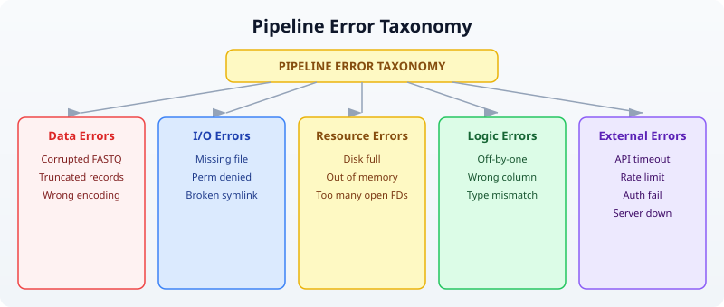
This chapter teaches you to handle all of them. By the end, you will have a pipeline that processes every valid sample, skips corrupted ones, retries transient failures, logs everything, and produces a report telling you exactly what happened.
Section 1: try/catch Basics
The try/catch construct is BioLang’s mechanism for recovering from errors. When code inside try throws an error, execution jumps to the catch block instead of crashing the entire program.
Your First try/catch
The simplest pattern catches an error and substitutes a default value:
let result = try { int("not_a_number") } catch err { -1 }
The variable err in the catch block contains the error message as a string. You can inspect it, log it, or ignore it:
let value = try {
read_csv("missing_file.csv")
} catch err {
println(f"Warning: {err}")
[]
}
This is fundamentally different from letting the error crash your program. Without try/catch, a missing file terminates everything. With it, you decide what happens next.
try/catch Is an Expression
In BioLang, try/catch returns a value. This means you can use it anywhere you would use an expression — in variable assignments, function arguments, or pipe chains:
let samples = try { read_csv("samples.csv") } catch err { [] }
let count = len(try { read_lines("data.txt") } catch err { [] })
let safe_mean = try { mean(values) } catch err { 0.0 }
This is more concise than languages where try/catch is a statement that cannot return a value.
Nested try/catch
You can nest try/catch blocks when different operations need different fallback strategies:
let result = try {
let data = try { read_csv("primary.csv") } catch err { read_csv("backup.csv") }
data |> filter(|row| row.quality > 20)
} catch err {
println(f"Both data sources failed: {err}")
[]
}
The inner try/catch tries a primary file and falls back to a backup. The outer try/catch handles the case where both files are missing or the filter operation fails.
Throwing Errors
Use error() to throw your own errors. This is how you enforce preconditions and signal problems to callers:
let validate_quality = |threshold| {
if threshold < 0 {
error("Quality threshold cannot be negative")
}
if threshold > 41 {
error("Quality threshold exceeds Phred+33 maximum")
}
threshold
}
let q = try { validate_quality(-5) } catch err { println(err) }
Custom errors make debugging vastly easier than cryptic runtime errors. When your pipeline fails at 3 AM, "Quality threshold cannot be negative" tells you exactly what went wrong and where.
Section 2: Error Types and Messages
Not all errors deserve the same response. A corrupted file is permanent — retrying will not fix it. A network timeout is transient — retrying might succeed. Your error handling strategy should distinguish between these.
Classifying Errors
A practical approach is to examine the error message string:
let classify_error = |err_msg| {
if contains(err_msg, "not found") { "missing" }
else if contains(err_msg, "permission") { "access" }
else if contains(err_msg, "timeout") { "transient" }
else if contains(err_msg, "parse") { "data_corrupt" }
else if contains(err_msg, "disk") { "resource" }
else { "unknown" }
}
This classification drives different recovery strategies:
let handle_error = |err_msg, context| {
let category = classify_error(err_msg)
if category == "transient" {
{ action: "retry", message: err_msg, context: context }
} else if category == "missing" {
{ action: "skip", message: err_msg, context: context }
} else if category == "data_corrupt" {
{ action: "skip", message: err_msg, context: context }
} else if category == "resource" {
{ action: "abort", message: err_msg, context: context }
} else {
{ action: "log_and_skip", message: err_msg, context: context }
}
}
Structured Error Records
Instead of returning bare values or nil on failure, return structured records that carry context:
let safe_read_fastq = |path| {
try {
let records = read_fastq(path)
{ ok: true, data: records, path: path, error: nil }
} catch err {
{ ok: false, data: [], path: path, error: err }
}
}
The caller can then inspect the ok field:
let result = safe_read_fastq("sample_01.fastq")
if result.ok {
let stats = process(result.data)
} else {
println(f"Skipping {result.path}: {result.error}")
}
This pattern — often called a “result record” — keeps errors in the data flow rather than in the control flow. You never lose track of which file failed or why.
Section 3: Retry Logic
Transient errors — network timeouts, rate limits, temporary server unavailability — often resolve on their own. Retry logic gives your pipeline resilience against these hiccups.
Simple Retry
The simplest retry pattern loops a fixed number of times:
let retry = |f, max_attempts| {
let attempt = 1
let last_error = ""
let result = nil
let succeeded = false
range(0, max_attempts) |> each(|i| {
if succeeded == false {
try {
result = f()
succeeded = true
} catch err {
last_error = err
attempt = attempt + 1
sleep(1000)
}
}
})
if succeeded { result }
else { error(f"Failed after {max_attempts} attempts: {last_error}") }
}
Usage:
let data = retry(|| { read_csv("network_share/data.csv") }, 3)
Retry with Exponential Backoff
Fixed-interval retries can overwhelm a struggling server. Exponential backoff increases the wait time between attempts, giving the server time to recover:
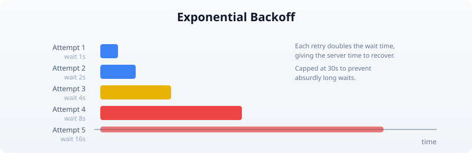
let retry_backoff = |f, max_attempts, base_delay_ms| {
let last_error = ""
let result = nil
let succeeded = false
range(0, max_attempts) |> each(|i| {
if succeeded == false {
try {
result = f()
succeeded = true
} catch err {
last_error = err
let delay = base_delay_ms
range(0, i) |> each(|_| { delay = delay * 2 })
if delay > 30000 { delay = 30000 }
sleep(delay)
}
}
})
if succeeded { result }
else { error(f"Failed after {max_attempts} attempts: {last_error}") }
}
The cap at 30 seconds prevents absurdly long waits. In practice, if a service is not responding after 30 seconds of backoff, it is probably down for maintenance — not experiencing a brief hiccup.
Retry Only Transient Errors
Not every error deserves a retry. Retrying a “file not found” error is pointless. Combine error classification with retry logic:
let retry_if_transient = |f, max_attempts| {
let last_error = ""
let result = nil
let succeeded = false
range(0, max_attempts) |> each(|i| {
if succeeded == false {
try {
result = f()
succeeded = true
} catch err {
last_error = err
let category = classify_error(err)
if category != "transient" {
error(err)
}
sleep(1000)
}
}
})
if succeeded { result }
else { error(f"Failed after {max_attempts} attempts: {last_error}") }
}
Section 4: Input Validation
The cheapest error to handle is the one you prevent. Validating inputs before processing begins catches problems early, when the error message can be specific and actionable.
File Existence and Format
let validate_input_file = |path, expected_ext| {
if file_exists(path) == false {
error(f"Input file not found: {path}")
}
if ends_with(path, expected_ext) == false {
error(f"Expected {expected_ext} file, got: {path}")
}
let lines = read_lines(path)
if len(lines) == 0 {
error(f"Input file is empty: {path}")
}
true
}
FASTQ Record Validation
FASTQ files have a strict four-line structure. A corrupted file might have truncated records, missing quality lines, or mismatched sequence/quality lengths:
let validate_fastq_record = |record| {
if typeof(record) != "Record" {
error("Invalid record type")
}
let seq = record.sequence
let qual = record.quality
if len(seq) == 0 {
error(f"Empty sequence in record: {record.id}")
}
if len(seq) != len(qual) {
error(f"Sequence/quality length mismatch in {record.id}: seq={len(seq)} qual={len(qual)}")
}
true
}
Batch Input Validation
Before processing 200 files, check them all first. This takes seconds and saves hours:
let validate_batch = |file_paths| {
let errors = []
file_paths |> each(|path| {
try {
validate_input_file(path, ".fastq")
} catch err {
errors = errors + [{ path: path, error: err }]
}
})
if len(errors) > 0 {
errors |> each(|e| {
println(f"INVALID: {e.path} --- {e.error}")
})
error(f"Validation failed: {len(errors)} of {len(file_paths)} files have problems")
}
true
}
The decision flow for whether to abort or continue depends on how many files fail validation:
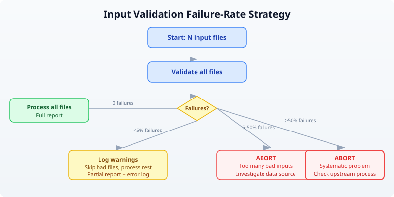
Section 5: Defensive File I/O
File operations are a leading source of pipeline failures. Files can be missing, empty, corrupted, in the wrong format, or on a filesystem that runs out of space mid-write.
Safe Reading
Wrap every file read in a function that validates the result:
let safe_read_csv = |path| {
if file_exists(path) == false {
error(f"File not found: {path}")
}
let data = try {
read_csv(path)
} catch err {
error(f"Failed to parse CSV {path}: {err}")
}
if len(data) == 0 {
error(f"CSV file is empty: {path}")
}
data
}
Safe Writing with Verification
Writing is trickier than reading. A write can appear to succeed but produce a truncated file if the disk fills up mid-write. Write to a temporary file first, then verify:
let safe_write_csv = |data, path| {
let tmp_path = path + ".tmp"
try {
write_csv(data, tmp_path)
} catch err {
error(f"Failed to write {path}: {err}")
}
if file_exists(tmp_path) == false {
error(f"Write appeared to succeed but temp file not found: {tmp_path}")
}
let verify = try { read_csv(tmp_path) } catch err {
error(f"Written file is not valid CSV: {err}")
}
if len(verify) != len(data) {
error(f"Row count mismatch: wrote {len(data)} but read back {len(verify)}")
}
try {
write_csv(data, path)
} catch err {
error(f"Failed to write final output to {path}: {err}")
}
true
}
Directory Safety
let ensure_dir = |path| {
try {
mkdir(path)
} catch err {
if contains(str(err), "exists") == false {
error(f"Cannot create directory {path}: {err}")
}
}
}
Section 6: Partial Failure and Recovery
In batch processing, the question is not if a sample will fail but when. The key design decision is: should a single failure stop everything, or should the pipeline continue with the remaining samples?
The Accumulator Pattern
Process each item independently and collect successes and failures separately:
let process_batch = |items, process_fn| {
let successes = []
let failures = []
items |> each(|item| {
try {
let result = process_fn(item)
successes = successes + [result]
} catch err {
failures = failures + [{ item: item, error: err }]
}
})
{ successes: successes, failures: failures }
}
This pattern guarantees that one bad sample never prevents the other 199 from being processed.
Checkpointing
For long-running pipelines, save progress periodically so you can resume after a crash:
let process_with_checkpoint = |items, process_fn, checkpoint_path| {
let completed = if file_exists(checkpoint_path) {
try { json_decode(read_lines(checkpoint_path) |> join("\n")) } catch err { [] }
} else {
[]
}
let remaining = items |> filter(|item| {
let done = completed |> filter(|c| c == item)
len(done) == 0
})
remaining |> each(|item| {
try {
process_fn(item)
completed = completed + [item]
write_lines([json_encode(completed)], checkpoint_path)
} catch err {
println(f"Failed: {item} --- {err}")
}
})
completed
}
If the pipeline crashes at sample 187, you restart it and it picks up at sample 188 — no wasted work.
Error Propagation Flow
Understanding how errors flow through a pipeline helps you place try/catch blocks at the right level:
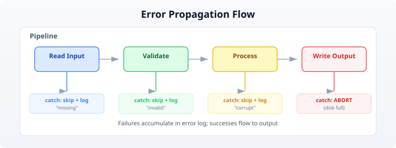
The rule of thumb: catch data errors at the per-sample level (skip and continue), but let resource errors (disk full, out of memory) propagate up and abort the pipeline. There is no point processing 200 samples if you cannot write the results.
Section 7: Logging Errors
When a pipeline runs overnight, print() output disappears into a terminal that nobody is watching. Write errors to a structured log file that you can analyze after the fact.
Error Log as a Table
let create_error_log = || {
[]
}
let log_error = |log, timestamp, source, severity, message| {
log + [{
timestamp: timestamp,
source: source,
severity: severity,
message: message
}]
}
let save_error_log = |log, path| {
if len(log) > 0 {
let table = log |> to_table()
write_csv(table, path)
} else {
write_lines(["timestamp,source,severity,message"], path)
}
}
Usage in a pipeline:
let errors = create_error_log()
let timestamp = format_date(now(), "%Y-%m-%d %H:%M:%S")
errors = log_error(errors, timestamp, "sample_187.fastq", "ERROR",
"Truncated record at line 4")
errors = log_error(errors, timestamp, "sample_192.fastq", "WARN",
"Low quality, 80% filtered")
save_error_log(errors, "output/error_log.csv")
After the pipeline finishes (or crashes), the error log tells you exactly what happened:
timestamp,source,severity,message
2025-01-15 03:14:22,sample_187.fastq,ERROR,Truncated record at line 4
2025-01-15 03:28:45,sample_192.fastq,WARN,Low quality 80% filtered
Summary Statistics
At the end of a pipeline run, produce a summary that answers the key question: Did it work?
let summarize_run = |total, successes, failures, errors| {
let success_rate = if total > 0 { (successes * 100) / total } else { 0 }
{
total_samples: total,
succeeded: successes,
failed: failures,
success_rate_pct: success_rate,
error_count: len(errors),
status: if failures == 0 { "COMPLETE" }
else if success_rate > 90 { "PARTIAL_SUCCESS" }
else { "FAILED" }
}
}
Section 8: Building a Resilient Pipeline
Let us put all the pieces together. This section builds a production-grade FASTQ processing pipeline that handles every error category from the taxonomy at the start of this chapter.
Pipeline Architecture
INPUT FILES VALIDATION PROCESSING OUTPUT
────────── ────────── ────────── ──────
sample_001.fastq ──┐
sample_002.fastq ──┤ ┌────────────────┐ ┌──────────────┐ ┌──────────┐
sample_003.fastq ──┼────▶│ Check exists │──▶│ Read FASTQ │──▶│ Stats │
... ──┤ │ Check format │ │ Filter qual │ │ Table │
sample_200.fastq ──┘ │ Check non-empty│ │ Compute GC │ │ │
└───────┬────────┘ └──────┬───────┘ └────┬─────┘
│ │ │
skip invalid skip corrupt write results
log reason log reason + error log
│ │ │
▼ ▼ ▼
error_log.csv error_log.csv summary.json
The Complete Pipeline
let run_pipeline = |input_dir, output_dir| {
ensure_dir(output_dir)
let errors = create_error_log()
let results = []
let timestamp = format_date(now(), "%Y-%m-%d %H:%M:%S")
let files = try {
list_dir(input_dir) |> filter(|f| ends_with(f, ".fastq"))
} catch err {
errors = log_error(errors, timestamp, input_dir, "FATAL",
f"Cannot list directory: {err}")
save_error_log(errors, output_dir + "/error_log.csv")
error(f"Cannot access input directory: {err}")
}
if len(files) == 0 {
error(f"No FASTQ files found in {input_dir}")
}
files |> each(|file| {
let path = input_dir + "/" + file
let ts = format_date(now(), "%Y-%m-%d %H:%M:%S")
try {
let records = read_fastq(path)
if len(records) == 0 {
errors = log_error(errors, ts, file, "WARN",
"Empty file, skipping")
} else {
let valid = records |> filter(|r| {
let ok = try {
len(r.sequence) == len(r.quality)
} catch err { false }
ok
})
let filtered = valid |> quality_filter(20)
let stats = {
file: file,
total_records: len(records),
valid_records: len(valid),
passed_qc: len(filtered),
pct_passed: if len(valid) > 0 {
(len(filtered) * 100) / len(valid)
} else { 0 },
mean_gc: if len(filtered) > 0 {
filtered
|> map(|r| gc_content(r.sequence))
|> mean()
} else { 0.0 }
}
results = results + [stats]
if len(valid) < len(records) {
let dropped = len(records) - len(valid)
errors = log_error(errors, ts, file, "WARN",
f"{dropped} records had seq/qual length mismatch")
}
}
} catch err {
errors = log_error(errors, ts, file, "ERROR",
f"Processing failed: {err}")
}
})
let summary = summarize_run(len(files), len(results),
len(files) - len(results), errors)
if len(results) > 0 {
let table = results |> to_table()
write_csv(table, output_dir + "/qc_results.csv")
}
save_error_log(errors, output_dir + "/error_log.csv")
write_lines([json_encode(summary)], output_dir + "/summary.json")
summary
}
Call it:
Requires CLI: This example uses file I/O not available in the browser. Run with
bl run.
let result = run_pipeline("data/fastq", "data/output")
println(f"Pipeline {result.status}: {result.succeeded}/{result.total_samples} samples processed")
Section 9: Testing Error Paths
Most pipelines are tested only with good inputs. Production bugs hide in the error paths — the code that runs when things go wrong. Test your error handling as deliberately as you test your analysis.
Testing with Intentionally Bad Data
The init.bl script for this chapter generates files specifically designed to trigger errors:
good_001.fastqthroughgood_005.fastq— well-formed, passes all checkstruncated.fastq— FASTQ file cut off mid-recordempty.fastq— zero bytesbad_quality.fastq— valid format but all low-quality basesmismatched.fastq— sequence and quality lines have different lengths
A robust pipeline should handle all five error cases without crashing, processing the good samples and logging the bad ones.
Testing Error Classification
let test_classify = || {
let cases = [
{ input: "file not found: x.fastq", expected: "missing" },
{ input: "permission denied", expected: "access" },
{ input: "connection timeout after 30s", expected: "transient" },
{ input: "parse error at line 4", expected: "data_corrupt" },
{ input: "disk quota exceeded", expected: "resource" },
{ input: "something unexpected", expected: "unknown" }
]
cases |> each(|c| {
let result = classify_error(c.input)
if result != c.expected {
error(f"classify_error failed: got {result}, expected {c.expected}")
}
})
true
}
Testing Retry Logic
let test_retry = || {
let call_count = 0
let flaky_fn = || {
call_count = call_count + 1
if call_count < 3 { error("transient failure") }
"success"
}
let result = retry(flaky_fn, 5)
if result != "success" { error("Retry did not return success") }
if call_count != 3 { error(f"Expected 3 calls, got {call_count}") }
true
}
Exercises
Exercise 1: Validate a Sample Sheet
Write a function validate_sample_sheet(path) that reads a CSV sample sheet and checks:
- File exists and is non-empty
- Required columns
sample_id,fastq_r1, andfastq_r2are present - No duplicate
sample_idvalues - All referenced FASTQ files exist
Return a record with { valid: bool, errors: [...] }.
Exercise 2: Retry with Jitter
Modify the retry_backoff function to add random jitter to the delay. When multiple pipelines retry against the same server simultaneously, they can synchronize their retries and create “thundering herd” problems. Adding a random component (e.g., 0–50% of the delay) desynchronizes them.
Hint: BioLang does not have a random number builtin, but you can derive jitter from now() — the millisecond component changes rapidly enough to serve as a simple source of variation.
Exercise 3: Circuit Breaker
Implement a “circuit breaker” pattern: after N consecutive failures to the same service, stop trying for a cooldown period. This prevents a dead service from slowing down your entire pipeline with timeouts.
Write a function that returns a record with { call: fn, reset: fn, state: fn } fields. The call field wraps a function with circuit breaker logic: if the breaker is “open” (too many failures), it returns an error immediately without calling the wrapped function.
Exercise 4: Full Recovery Pipeline
Using the corrupted test data from init.bl, build a pipeline that:
- Validates all input files before processing
- Processes valid files with per-file error handling
- Writes a checkpoint after each successful file
- Produces both a results table and an error log
- Can be run twice — on the second run, it skips already-processed files
Key Takeaways
-
try/catch is an expression — use it inline to provide default values, not just for control flow.
-
Classify errors before handling them. Transient errors deserve retries. Data errors deserve skipping. Resource errors deserve aborting.
-
Validate inputs early. Checking 200 files takes seconds. Processing 186 files before discovering a problem takes hours.
-
Accumulate, do not abort. The accumulator pattern (collect successes and failures separately) ensures one bad sample never blocks the other 199.
-
Checkpoint long pipelines. Saving progress to disk means you never redo work after a crash.
-
Log structured errors. A CSV error log is searchable, sortable, and scriptable.
print()output is none of these. -
Test error paths. Generate intentionally bad data and verify your pipeline handles it. The code that runs when things go wrong is the code that matters most at 3 AM.
Next: Day 26 — AI-Assisted Analysis, where you will use large language models to interpret results, generate hypotheses, and accelerate your biological discoveries.
Day 26: AI-Assisted Analysis
| Difficulty | Intermediate |
| Biology knowledge | Intermediate (gene expression, variants, pathway analysis) |
| Coding knowledge | Intermediate (functions, records, pipes, tables, string operations) |
| Time | ~3 hours |
| Prerequisites | Days 1–25 completed, BioLang installed (see Appendix A) |
| Data needed | Generated locally via init.bl (simulated gene lists, variant data) |
What You’ll Learn
- How to use BioLang’s built-in LLM functions (
chat,chat_code,llm_models) - How to configure LLM providers (Anthropic, OpenAI, Ollama, OpenAI-compatible)
- How to engineer effective prompts for biological questions
- How to pass structured data as context for AI-assisted interpretation
- How to build human-in-the-loop analysis pipelines
- Why AI outputs must always be verified before use in research or clinical settings
- How to combine LLM interpretation with programmatic validation
The Problem
“Can AI help me interpret these results or write analysis code?”
You have just completed a differential expression analysis. In front of you is a table of 500 genes — each with a fold change, a p-value, and a gene symbol. Some of these genes are well-characterized cancer drivers. Others are poorly annotated lncRNAs. A few are housekeeping genes that probably represent technical noise. You need to sort signal from noise, identify biologically meaningful patterns, connect your findings to known pathways, and write a paragraph for your manuscript’s results section.
This is the kind of task where large language models can accelerate your work. An LLM can summarize what is known about a gene, suggest pathway connections, draft interpretive text, and even generate analysis code. But it can also hallucinate citations, fabricate gene functions, and confidently present incorrect biological claims. The challenge is using AI as a genuine accelerator while maintaining scientific rigor.
This chapter teaches you to integrate LLMs into your BioLang workflows — not as a replacement for domain expertise, but as a tool that amplifies it.

Critical safety note. Every AI-generated interpretation in this chapter must be treated as a hypothesis, not a fact. LLMs can hallucinate gene functions, fabricate citations, invent protein interactions, and produce plausible-sounding but incorrect biological claims. Never use LLM output directly in a clinical report, grant application, or publication without independent verification against primary sources (NCBI Gene, UniProt, PubMed, OMIM).
Section 1: Setting Up LLM Access
Before using chat() or chat_code(), you need to configure an LLM provider. BioLang auto-detects your provider from environment variables in this priority order:
ANTHROPIC_API_KEY— uses Claude (default model:claude-sonnet-4-20250514)OPENAI_API_KEY— uses GPT (default model:gpt-4o)OLLAMA_MODEL— uses a local Ollama instance (no API key needed)LLM_BASE_URL+LLM_API_KEY— any OpenAI-compatible endpoint
Checking Your Configuration
let config = llm_models()
println(f"Provider: {config.provider}")
println(f"Model: {config.model}")
println(f"Configured: {config.configured}")
If configured is false, no provider environment variable is set. The env_vars field lists all options:
let config = llm_models()
if config.configured == false {
println("No LLM provider configured. Set one of:")
config.env_vars |> each(|v| println(f" {v}"))
}
Provider Setup Examples
Anthropic (Claude):
export ANTHROPIC_API_KEY="sk-ant-..."
# Optional: override model
export ANTHROPIC_MODEL="claude-sonnet-4-20250514"
OpenAI (GPT):
export OPENAI_API_KEY="sk-..."
# Optional: override model
export OPENAI_MODEL="gpt-4o"
Ollama (local, free):
# First install and run Ollama, then pull a model
ollama pull llama3.1
export OLLAMA_MODEL="llama3.1"
OpenAI-compatible (Together, Groq, LM Studio):
export LLM_BASE_URL="https://api.together.xyz"
export LLM_API_KEY="..."
export LLM_MODEL="meta-llama/Llama-3-70b-chat-hf"
For this chapter, any provider will work. Ollama is a good choice if you want to avoid API costs — just note that smaller local models produce less accurate biological interpretations than large cloud models.
Section 2: Basic Chat Interaction
The chat() function sends a prompt to your configured LLM and returns the response as a string. It accepts one or two arguments:
chat(prompt)— simple questionchat(prompt, context)— question with additional context (string, record, list, or table)
Simple Questions
let answer = chat("What is the function of the TP53 gene in cancer biology? Two sentences.")
println(answer)
The LLM behind chat() is configured with a bioinformatics system prompt, so it understands BioLang syntax and biological terminology.
Providing Context
The second argument to chat() passes structured data as context. BioLang automatically formats records, lists, and tables into a readable text representation:
let gene_info = {
symbol: "BRCA1",
fold_change: -2.3,
pvalue: 0.0001,
sample_type: "triple-negative breast cancer"
}
let interpretation = chat(
"Interpret the significance of this differentially expressed gene in the given cancer type.",
gene_info
)
println(interpretation)
When you pass a record, BioLang formats it as key: value lines. When you pass a table, it formats as tab-separated values. When you pass a list, each element appears on its own line. This means you can pipe analysis results directly into LLM interpretation.
Code Generation with chat_code()
The chat_code() function is specialized for generating BioLang code. It returns only valid BioLang syntax — no explanations, no markdown fences:
let code = chat_code("Write a function that calculates the ratio of transition to transversion mutations from a list of variant records with ref and alt fields.")
println(code)
Caution. Always review generated code before executing it.
chat_code()output may contain syntax errors, call nonexistent functions, or implement incorrect logic. Treat it as a first draft.
Section 3: Prompt Engineering for Biology
The quality of LLM responses depends heavily on how you construct your prompts. Biological prompts require particular precision because ambiguous terminology is common (e.g., “expression” means different things in molecular biology vs. clinical medicine vs. software engineering).
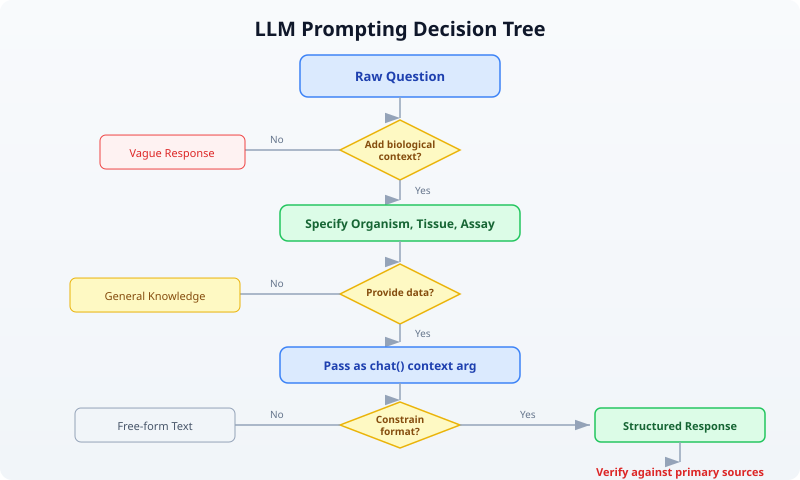
Principle 1: Be Specific About Biological Context
Bad prompt:
let vague = chat("What does EGFR do?")
Better prompt:
let specific = chat("What is the role of EGFR in non-small cell lung cancer, specifically regarding tyrosine kinase inhibitor resistance mechanisms? Limit to 3 key points.")
Principle 2: Specify the Output Format
let prompt = "Given these differentially expressed genes, categorize them into: (1) known oncogenes, (2) tumor suppressors, (3) metabolic genes, (4) unknown/uncharacterized. Return as a simple list with the category before each gene name."
let genes = ["TP53", "BRCA1", "MYC", "GAPDH", "LINC01234", "KRAS", "RB1", "PKM", "ALDOA", "MALAT1"]
let categorized = chat(prompt, genes)
println(categorized)
Principle 3: Chain Prompts for Complex Analysis
Rather than asking one massive question, break complex analysis into steps:
let genes = ["BRCA1", "TP53", "CDH1", "PTEN", "PIK3CA"]
let step1 = chat(
"List the primary biological pathway for each of these genes. One line per gene, format: GENE - pathway name.",
genes
)
let step2 = chat(
"Based on these gene-pathway associations, what biological process is most likely disrupted? One paragraph.",
step1
)
println("Pathway associations:")
println(step1)
println("")
println("Biological interpretation:")
println(step2)
Principle 4: Request Uncertainty Acknowledgment
let honest_prompt = "For each gene, state its known function and your confidence level (high/medium/low) based on how well-characterized it is. If a gene is poorly studied, say so explicitly rather than speculating."
let genes = ["TP53", "LINC01234", "LOC105377243"]
let result = chat(honest_prompt, genes)
println(result)
This prompt structure encourages the LLM to flag when it is uncertain rather than inventing plausible-sounding functions.
Section 4: Variant Interpretation with AI
One of the most practical applications of LLM assistance is interpreting genetic variants. Clinicians and researchers routinely need to assess whether a variant is pathogenic, benign, or of uncertain significance. An LLM can summarize known information about a variant, but the final classification must always come from curated databases and expert review.
Building a Variant Interpretation Pipeline
let variants = read_tsv("data/variants.tsv")
let interpret_variant = |variant| {
let prompt = f"Interpret this genetic variant for clinical significance. Include: (1) gene function, (2) known disease associations, (3) predicted functional impact, (4) whether this position is conserved. State clearly if you are uncertain about any point."
let context = {
gene: variant.gene,
chromosome: variant.chrom,
position: variant.pos,
ref_allele: variant.ref,
alt_allele: variant.alt,
consequence: variant.consequence
}
try {
chat(prompt, context)
} catch err {
f"Error interpreting {variant.gene}: {err}"
}
}
let top_variants = variants
|> filter(|v| v.consequence != "synonymous_variant")
|> sort(|a, b| a.gene < b.gene)
top_variants |> each(|v| {
println(f"=== {v.gene} {v.chrom}:{v.pos} {v.ref}>{v.alt} ===")
let interp = interpret_variant(v)
println(interp)
println("")
})
Clinical warning. This is an educational exercise. Real clinical variant interpretation requires validated pipelines, accredited laboratories, ACMG/AMP guideline compliance, and review by board-certified clinical geneticists. Never use raw LLM output for patient care decisions.
Adding Programmatic Checks
LLM interpretation is more useful when combined with programmatic data. Here is a pattern that cross-references AI interpretation with structured variant annotations:
let annotate_variant = |v| {
let known_oncogenes = ["TP53", "BRCA1", "BRCA2", "KRAS", "EGFR", "PIK3CA", "BRAF", "MYC", "RB1", "PTEN"]
let is_cancer_gene = known_oncogenes |> filter(|g| g == v.gene) |> len() > 0
let is_missense = v.consequence == "missense_variant"
let is_nonsense = v.consequence == "stop_gained"
let is_frameshift = contains(v.consequence, "frameshift")
let severity = if is_nonsense { "high" }
else if is_frameshift { "high" }
else if is_missense { "moderate" }
else { "low" }
let context = {
gene: v.gene,
position: f"{v.chrom}:{v.pos}",
change: f"{v.ref}>{v.alt}",
consequence: v.consequence,
cancer_gene: is_cancer_gene,
computed_severity: severity
}
let ai_interp = try {
chat("Briefly interpret this variant's clinical significance in 2-3 sentences. Note if the gene is a known cancer driver.", context)
} catch err {
"AI interpretation unavailable"
}
{
gene: v.gene,
variant: f"{v.chrom}:{v.pos}{v.ref}>{v.alt}",
consequence: v.consequence,
severity: severity,
cancer_gene: is_cancer_gene,
ai_interpretation: ai_interp
}
}
let variants = read_tsv("data/variants.tsv")
let annotated = variants |> map(annotate_variant)
annotated |> each(|a| {
println(f"Gene: {a.gene}")
println(f" Variant: {a.variant}")
println(f" Consequence: {a.consequence}")
println(f" Severity: {a.severity}")
println(f" Cancer gene: {a.cancer_gene}")
println(f" AI: {a.ai_interpretation}")
println("")
})
Section 5: Gene List Analysis
Differential expression experiments produce gene lists that need biological interpretation. LLMs can help identify functional themes, but they work best when you provide structured summary data rather than raw lists of hundreds of genes.
Summarizing a Gene List
let de_genes = read_tsv("data/de_genes.tsv")
let upregulated = de_genes |> filter(|g| g.log2fc > 1.0 and g.padj < 0.05)
let downregulated = de_genes |> filter(|g| g.log2fc < -1.0 and g.padj < 0.05)
let up_names = upregulated |> map(|g| g.gene) |> sort(|a, b| a < b)
let down_names = downregulated |> map(|g| g.gene) |> sort(|a, b| a < b)
let summary = {
total_tested: len(de_genes),
significant_up: len(up_names),
significant_down: len(down_names),
top_up_genes: up_names |> map(|g| str(g)) |> join(", "),
top_down_genes: down_names |> map(|g| str(g)) |> join(", "),
experiment: "RNA-seq, tumor vs normal, breast tissue"
}
let interpretation = chat(
"Analyze this differential expression result. Identify: (1) key biological themes among upregulated genes, (2) key themes among downregulated genes, (3) potential pathway disruptions, (4) any genes that warrant follow-up experiments. Be specific about which genes drive each conclusion.",
summary
)
println(interpretation)
Batch Gene Annotation
For larger gene lists, process in batches to avoid overwhelming the LLM context window:
let batch_annotate = |genes, batch_size| {
let results = []
let n = len(genes)
let i = 0
let batches = []
let current = []
genes |> each(|g| {
current = current + [g]
if len(current) >= batch_size {
batches = batches + [current]
current = []
}
})
if len(current) > 0 {
batches = batches + [current]
}
batches |> map(|batch| {
let gene_list = batch |> join(", ")
let prompt = "For each gene, provide: gene symbol, primary function (one phrase), associated disease if any. Format as one line per gene."
try {
chat(prompt, gene_list)
} catch err {
f"Batch failed: {err}"
}
})
}
let genes = read_tsv("data/de_genes.tsv")
|> filter(|g| g.padj < 0.01)
|> map(|g| g.gene)
let annotations = batch_annotate(genes, 10)
annotations |> each(|batch_result| {
println(batch_result)
println("---")
})
Section 6: Building AI-Augmented Pipelines
The real power of LLM integration appears when you combine it with BioLang’s data processing capabilities in end-to-end pipelines.
The Human-in-the-Loop Pattern
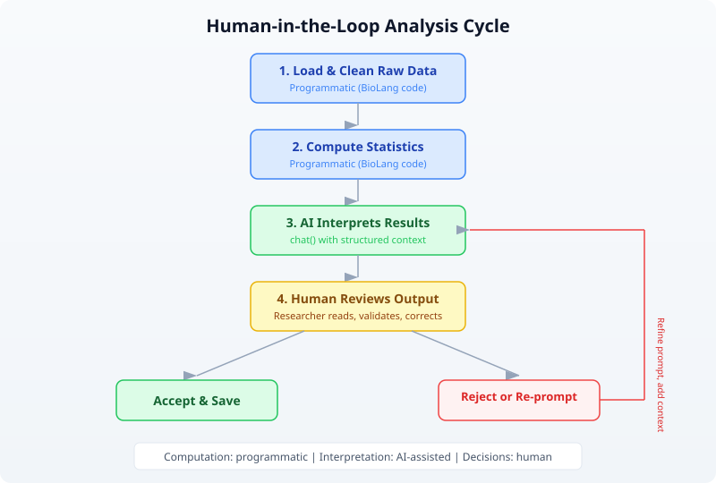
The key principle: computation is programmatic, interpretation is AI-assisted, decisions are human. Never automate the human review step.
Full Pipeline: DE Gene Report
This pipeline loads differential expression data, computes summary statistics, asks an LLM to interpret the biology, and writes both the raw data and interpretation to a report file:
let de_genes = read_tsv("data/de_genes.tsv")
let sig = de_genes |> filter(|g| g.padj < 0.05)
let up = sig |> filter(|g| g.log2fc > 1.0)
let down = sig |> filter(|g| g.log2fc < -1.0)
let stats = {
total_genes: len(de_genes),
significant: len(sig),
upregulated: len(up),
downregulated: len(down),
mean_abs_fc: sig |> map(|g| if g.log2fc > 0 { g.log2fc } else { -1.0 * g.log2fc }) |> mean(),
top_up: up |> sort(|a, b| a.padj < b.padj) |> map(|g| g.gene) |> join(", "),
top_down: down |> sort(|a, b| a.padj < b.padj) |> map(|g| g.gene) |> join(", ")
}
let interpretation = try {
chat(
"Write a results paragraph for a manuscript describing this differential expression analysis of breast cancer tumor vs normal tissue. Include: (1) overall summary, (2) notable upregulated pathways, (3) notable downregulated pathways, (4) suggested follow-up experiments. Be specific about gene names.",
stats
)
} catch err {
f"[AI interpretation unavailable: {err}]"
}
let report_lines = [
"# Differential Expression Report",
"",
"## Summary Statistics",
f"Total genes tested: {stats.total_genes}",
f"Significant (padj < 0.05): {stats.significant}",
f"Upregulated (log2FC > 1): {stats.upregulated}",
f"Downregulated (log2FC < -1): {stats.downregulated}",
f"Mean absolute fold change: {stats.mean_abs_fc}",
"",
"## Top Upregulated Genes",
stats.top_up,
"",
"## Top Downregulated Genes",
stats.top_down,
"",
"## AI-Assisted Interpretation",
"NOTE: The following was generated by an LLM and requires expert review.",
"",
interpretation
]
write_lines(report_lines, "data/output/de_report.txt")
println("Report written to data/output/de_report.txt")
Pipeline: Sequence Feature Interpretation
let sequences = read_fasta("data/sequences.fasta")
let features = sequences |> map(|seq| {
let gc = gc_content(seq.sequence)
let length = len(seq.sequence)
let at_rich = gc < 0.4
let gc_rich = gc > 0.6
{
id: seq.id,
length: length,
gc_content: gc,
at_rich: at_rich,
gc_rich: gc_rich
}
})
let feature_table = features |> to_table()
let summary = {
num_sequences: len(features),
mean_gc: features |> map(|f| f.gc_content) |> mean(),
mean_length: features |> map(|f| f.length) |> mean(),
at_rich_count: features |> filter(|f| f.at_rich) |> len(),
gc_rich_count: features |> filter(|f| f.gc_rich) |> len()
}
let interp = try {
chat(
"These are sequence composition statistics from a set of genomic regions. What biological significance might the GC content distribution suggest? Consider: promoter regions, coding vs non-coding, isochores, CpG islands. Be brief (3-4 sentences).",
summary
)
} catch err {
"[Interpretation unavailable]"
}
println("Sequence features:")
println(feature_table)
println("")
println("AI interpretation:")
println(interp)
Section 7: Limitations and Best Practices
What LLMs Are Good At in Bioinformatics
| Task | Reliability | Notes |
|---|---|---|
| Summarizing known gene functions | High | For well-studied genes (TP53, BRCA1, etc.) |
| Suggesting pathway connections | Medium | Cross-reference with KEGG, Reactome |
| Drafting results text | Medium | Always edit for accuracy |
| Generating analysis code | Medium | Always review and test |
| Interpreting novel gene functions | Low | Tends to hallucinate |
| Clinical variant classification | Very Low | Never rely on LLM alone |
| Citing literature | Very Low | Frequently fabricates citations |
What LLMs Cannot Do
-
Access real-time data. LLMs have a training cutoff date. They cannot check the current ClinVar entry for a variant or find papers published last month.
-
Perform calculations. If you ask an LLM to compute a p-value, it will guess. Use BioLang’s
mean(),sum(), and statistical functions for computation. -
Guarantee biological accuracy. An LLM might state that “GENE_X is a known tumor suppressor involved in DNA repair” even when GENE_X is a fictional gene or has no such function.
-
Replace peer review. LLM-generated text sounds authoritative but may contain subtle errors that only a domain expert would catch.
Best Practice: The Verification Pattern
let verify_gene_claim = |gene, claim| {
let check_prompt = f"Regarding the gene {gene}: Is the following claim accurate? Answer ONLY 'verified', 'uncertain', or 'likely incorrect', followed by a one-sentence justification.\n\nClaim: {claim}"
let verification = try {
chat(check_prompt)
} catch err {
"verification_failed"
}
{
gene: gene,
claim: claim,
verification: verification,
needs_manual_review: contains(verification, "uncertain") or contains(verification, "incorrect") or contains(verification, "failed")
}
}
let result = verify_gene_claim("BRCA1", "BRCA1 is involved in homologous recombination DNA repair")
println(f"Verification: {result.verification}")
println(f"Needs manual review: {result.needs_manual_review}")
Important. Using an LLM to verify another LLM’s output is better than nothing, but it is not equivalent to checking a primary database. The verification pattern above is a triage step — it flags claims that the LLM itself is uncertain about, but it can still miss confident-sounding errors.
Best Practice: Always Wrap in try/catch
LLM API calls can fail for many reasons: network issues, rate limits, expired API keys, provider outages. Every chat() call in a pipeline should be wrapped in try/catch:
let safe_interpret = |data| {
try {
chat("Interpret this data briefly.", data)
} catch err {
f"[AI unavailable: {err}]"
}
}
This ensures your pipeline continues even when the LLM is unreachable.
Best Practice: Separate Computation from Interpretation
# GOOD: compute programmatically, interpret with AI
let gc = gc_content(seq)
let interp = chat(f"What might a GC content of {gc} suggest about this genomic region?")
# BAD: ask the AI to compute
let result = chat("What is the GC content of ATCGATCGATCG?")
# The LLM might give the wrong number!
Never ask an LLM to perform calculations that BioLang can do directly.
Section 8: Cost and Rate Limiting
LLM API calls cost money (except Ollama) and are rate-limited. When processing large datasets, consider:
Caching Responses
let cached_interpret = |gene, cache_path| {
if file_exists(cache_path) {
let lines = read_lines(cache_path)
lines |> join("\n")
} else {
let result = chat(f"Summarize the function of {gene} in one paragraph.")
write_lines([result], cache_path)
result
}
}
mkdir("data/cache")
let brca1_info = cached_interpret("BRCA1", "data/cache/BRCA1.txt")
println(brca1_info)
Batching Genes
Rather than one API call per gene, batch multiple genes into a single prompt:
let genes = ["TP53", "BRCA1", "KRAS", "EGFR", "PIK3CA"]
# One call instead of five
let batch_result = chat(
"For each gene, provide a one-line summary of its role in cancer. Format: GENE: summary",
genes
)
println(batch_result)
Section 9: Generating Analysis Code
The chat_code() function generates BioLang code from natural language descriptions. This is useful for scaffolding new analyses, but the output should always be reviewed and tested before use.
Example: Generating a Filter Pipeline
let task = "Read a TSV file called 'results.tsv', filter rows where the column 'padj' is less than 0.05 and 'log2fc' is greater than 2, sort by padj ascending, and write the result to 'significant.tsv'"
let code = chat_code(task)
println("Generated code:")
println(code)
println("")
println("Review this code before running it!")
Providing Context to chat_code()
You can pass existing code or data structures as context to help the LLM generate compatible code:
let existing_code = "let data = read_tsv(\"samples.tsv\")\nlet filtered = data |> filter(|r| r.quality > 30)"
let code = chat_code(
"Add a step that groups the filtered data by the 'tissue' column and computes the mean quality per group.",
existing_code
)
println(code)
Exercises
Exercise 1: Gene Function Summarizer
Write a BioLang script that:
- Reads the gene list from
data/de_genes.tsv - Selects the top 5 most significantly upregulated genes (highest log2fc with padj < 0.05)
- For each gene, uses
chat()to get a one-sentence function summary - Writes the results (gene, fold change, p-value, AI summary) to
data/output/gene_summaries.txt - Wraps every
chat()call intry/catch
Exercise 2: Prompt Comparison
Write a script that sends the same gene list to chat() with three different prompts:
- A vague prompt (“Tell me about these genes”)
- A specific prompt with biological context
- A prompt requesting structured output with confidence levels
Compare the responses. Which prompt produces the most useful output for a research context?
Exercise 3: AI-Verified Variant Report
Extend the variant interpretation pipeline from Section 4:
- For each variant, generate an AI interpretation
- Then run a second
chat()call asking the LLM to identify any claims in its own interpretation that it is less than 90% confident about - Flag variants where the AI self-reports uncertainty
- Write a report with a “confidence” column
Exercise 4: Code Generation Validator
Write a script that:
- Uses
chat_code()to generate a BioLang function - Uses
chat()to review the generated code for potential bugs - Writes both the generated code and the review to a file
- Adds a header warning that the code needs human review
Key Takeaways
-
Three LLM builtins.
chat(prompt, context?)for general questions,chat_code(prompt, context?)for code generation,llm_models()to check configuration. -
Auto-detection. BioLang detects your LLM provider from environment variables:
ANTHROPIC_API_KEY,OPENAI_API_KEY,OLLAMA_MODEL, orLLM_BASE_URL. -
Context is powerful. Pass structured data (records, tables, lists) as the second argument to
chat(). BioLang formats them automatically. -
Prompt engineering matters. Specify organism, tissue, assay type, and desired output format. Chain multiple focused prompts rather than one massive question.
-
Computation is programmatic. Use BioLang functions for calculations (GC content, statistics, filtering). Use LLMs only for interpretation and text generation.
-
Always verify. LLMs hallucinate gene functions, fabricate citations, and invent protein interactions. Cross-reference every biological claim against NCBI, UniProt, OMIM, or PubMed.
-
Always use try/catch. LLM API calls can fail. Wrap every
chat()call so your pipeline degrades gracefully. -
Never trust LLMs for clinical decisions. AI-assisted interpretation is a research accelerator, not a substitute for clinical expertise, accredited laboratories, or ACMG/AMP guidelines.
-
Cache and batch. Save API costs by caching responses and batching multiple genes into single prompts.
-
Human-in-the-loop. The correct pattern is: compute programmatically, interpret with AI, review with human expertise. Never automate the review step.
Next
In Day 27, we tackle Pipeline Orchestration — chaining multi-step analyses into reproducible, resumable workflows that can handle sample sheets with hundreds of entries.
Day 27: Building Tools and Plugins
| Difficulty | Intermediate–Advanced |
| Biology knowledge | Intermediate (sequence analysis, QC metrics, file formats) |
| Coding knowledge | Intermediate–Advanced (functions, modules, records, pipes, error handling) |
| Time | ~3–4 hours |
| Prerequisites | Days 1–26 completed, BioLang installed (see Appendix A) |
| Data needed | Generated locally via init.bl (simulated sequences, QC data) |
What You’ll Learn
- How to extract reusable functions into BioLang modules
- How to use
importandimport ... asto organize code across files - How to build a sequence utilities library with validation and error handling
- How to build a QC module for quality control workflows
- How to test your modules with
assert() - How the BioLang plugin system works (subprocess JSON protocol)
- How to build a Python plugin that extends BioLang
- How to package and share your tools
The Problem
“I keep copy-pasting the same analysis functions — can I package them for reuse?”
You have written the same GC content classifier three times this week. Your FASTA validation function lives in four different scripts, each with slightly different edge-case handling. Last Tuesday you found a bug in your quality score parser and had to fix it in six places. Yesterday your colleague asked for your variant filtering logic and you sent them a script with instructions to “just copy lines 47 through 112.”
This is the copy-paste trap, and every bioinformatician falls into it. The solution is packaging your analysis functions into reusable modules and plugins that can be imported, tested, versioned, and shared.
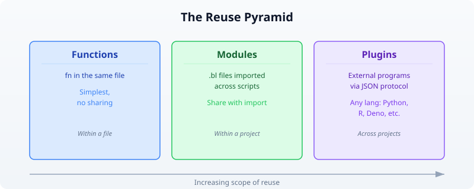
Section 1: The Module System
BioLang’s module system lets you split code across files and bring it back together with import. Every .bl file is a module. Any function or variable defined at the top level of a file is available when that file is imported.
Basic Import
# Import a file — all top-level names become available
import "lib/seq_utils.bl"
# Now you can call functions from that file
let gc = classify_gc("GCGCGCATAT")
Namespaced Import
# Import with a namespace — avoids name collisions
import "lib/seq_utils.bl" as seq
import "lib/qc.bl" as qc
let gc = seq.classify_gc("GCGCGCATAT")
let report = qc.summarize(reads)
Module Resolution Order
When you write import "something", BioLang searches in this order:
- Relative path — relative to the importing file’s directory
BIOLANG_PATHdirectories — colon-separated paths in the environment variable~/.biolang/stdlib/— fallback for unqualified imports
If the path ends with .bl, BioLang uses it directly. Otherwise, it tries <path>.bl first, then <path>/main.bl (for directory-based modules).

Module Caching
Each module is loaded only once, even if imported from multiple files. BioLang caches modules by their canonical path. Circular imports (A imports B, B imports A) are detected and rejected with a clear error message.
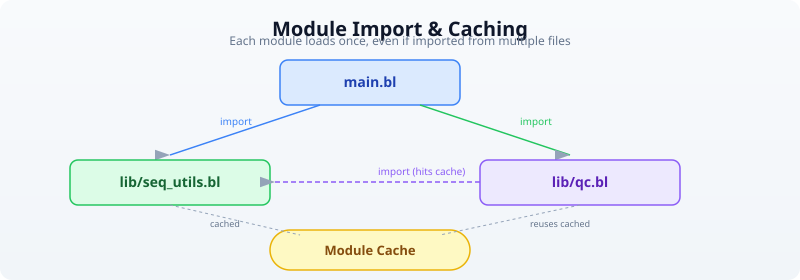
Section 2: Creating a Sequence Utilities Library
Let us build a real library. We will create lib/seq_utils.bl, a module that provides sequence analysis functions your whole lab can reuse.
Project Layout
my_project/
├── lib/
│ ├── seq_utils.bl ← sequence utilities module
│ ├── qc.bl ← quality control module
│ └── test_utils.bl ← testing helpers
├── scripts/
│ └── analysis.bl ← main analysis script
└── tests/
├── test_seq.bl ← tests for seq_utils
└── test_qc.bl ← tests for qc
The Sequence Utilities Module
Here is what lib/seq_utils.bl looks like. Each function is a self-contained, tested unit:
fn validate_dna(seq) {
let upper_seq = upper(seq)
let valid = "ACGTN"
let chars = split(upper_seq, "")
let invalid = chars |> filter(|c| contains(valid, c) == false)
if len(invalid) > 0 {
error(f"Invalid DNA characters: {join(invalid, \", \")}")
}
return upper_seq
}
fn classify_gc(seq) {
let clean = validate_dna(seq)
let gc = gc_content(clean)
if gc > 0.6 {
return { class: "high", gc: gc, label: "GC-rich" }
} else if gc < 0.4 {
return { class: "low", gc: gc, label: "AT-rich" }
} else {
return { class: "moderate", gc: gc, label: "balanced" }
}
}
fn find_all_motifs(seq, motif) {
let clean = validate_dna(seq)
let positions = find_motif(clean, upper(motif))
return {
motif: upper(motif),
count: len(positions),
positions: positions
}
}
fn batch_gc(sequences) {
sequences |> map(|seq| {
let result = classify_gc(seq.sequence)
{
id: seq.id,
length: len(seq.sequence),
gc: result.gc,
class: result.class,
label: result.label
}
})
}
fn sequence_summary(sequences) {
let classified = batch_gc(sequences)
let high = classified |> filter(|s| s.class == "high") |> len()
let low = classified |> filter(|s| s.class == "low") |> len()
let moderate = classified |> filter(|s| s.class == "moderate") |> len()
let gc_values = classified |> map(|s| s.gc)
return {
total: len(sequences),
high_gc: high,
low_gc: low,
moderate_gc: moderate,
mean_gc: mean(gc_values),
stdev_gc: stdev(gc_values)
}
}
Using the Module
Requires CLI: This example uses file I/O not available in the browser. Run with
bl run.
import "lib/seq_utils.bl" as seq
let sequences = read_fasta("data/sequences.fasta")
# Classify all sequences by GC content
let classified = seq.batch_gc(sequences)
let gc_table = classified |> to_table()
# Find a motif across all sequences
let tata_hits = sequences |> map(|s| seq.find_all_motifs(s.sequence, "TATAAA"))
let total_hits = tata_hits |> map(|h| h.count) |> sum()
Section 3: Creating a QC Module
Quality control is another domain where reusable functions save enormous time. Here is a lib/qc.bl module:
fn length_stats(sequences) {
let lengths = sequences |> map(|s| len(s.sequence))
return {
count: len(lengths),
min_len: min(lengths),
max_len: max(lengths),
mean_len: mean(lengths),
median_len: median(lengths)
}
}
fn gc_distribution(sequences) {
let gc_values = sequences |> map(|s| gc_content(s.sequence))
return {
mean_gc: mean(gc_values),
min_gc: min(gc_values),
max_gc: max(gc_values),
stdev_gc: stdev(gc_values)
}
}
fn flag_outliers(sequences, min_len, max_len, min_gc, max_gc) {
sequences |> map(|s| {
let gc = gc_content(s.sequence)
let slen = len(s.sequence)
let flags = []
if slen < min_len { flags = flags + ["too_short"] }
if slen > max_len { flags = flags + ["too_long"] }
if gc < min_gc { flags = flags + ["low_gc"] }
if gc > max_gc { flags = flags + ["high_gc"] }
{
id: s.id,
length: slen,
gc: gc,
flags: flags,
pass: len(flags) == 0
}
})
}
fn qc_summary(sequences) {
let lstats = length_stats(sequences)
let gc_dist = gc_distribution(sequences)
let flagged = flag_outliers(sequences, 50, 10000, 0.2, 0.8)
let passing = flagged |> filter(|f| f.pass) |> len()
let failing = flagged |> filter(|f| f.pass == false) |> len()
return {
total: lstats.count,
passing: passing,
failing: failing,
pass_rate: passing / lstats.count,
length: lstats,
gc: gc_dist
}
}
fn format_qc_report(summary) {
return [
f"Sequences: {summary.total}",
f"Passing QC: {summary.passing}",
f"Failing QC: {summary.failing}",
f"Length range: {summary.length.min_len}-{summary.length.max_len}",
f"Mean length: {summary.length.mean_len}",
f"Mean GC: {summary.gc.mean_gc}",
f"GC stdev: {summary.gc.stdev_gc}"
]
}
Section 4: Testing Your Modules
Testing is what separates a personal script from a reliable tool. BioLang’s assert() function is your primary testing mechanism.
Writing Tests
Create tests/test_seq.bl:
import "lib/seq_utils.bl" as seq
# --- validate_dna ---
let valid = seq.validate_dna("atcg")
assert(valid == "ATCG", "validate_dna should uppercase")
let caught = try { seq.validate_dna("ATXCG") } catch err { str(err) }
assert(contains(caught, "Invalid"), "validate_dna should reject X")
# --- classify_gc ---
let high = seq.classify_gc("GCGCGCGCGC")
assert(high.class == "high", "pure GC should be high")
assert(high.gc == 1.0, "pure GC should have gc=1.0")
let low = seq.classify_gc("AAAAAATTTT")
assert(low.class == "low", "pure AT should be low")
let balanced = seq.classify_gc("ATCGATCGAT")
assert(balanced.class == "moderate", "ATCGATCGAT should be moderate")
# --- find_all_motifs ---
let hits = seq.find_all_motifs("ATCGATCGATCG", "ATCG")
assert(hits.count > 0, "should find ATCG motif")
assert(hits.motif == "ATCG", "motif should be uppercased")
# --- batch_gc ---
let test_seqs = [
{ id: "high", sequence: "GCGCGCGCGC" },
{ id: "low", sequence: "AAAAAATTTT" }
]
let results = seq.batch_gc(test_seqs)
assert(len(results) == 2, "batch_gc should return 2 results")
assert(results |> filter(|r| r.class == "high") |> len() == 1, "one high GC")
assert(results |> filter(|r| r.class == "low") |> len() == 1, "one low GC")
Create tests/test_qc.bl:
import "lib/qc.bl" as qc
let test_seqs = [
{ id: "normal", sequence: "ATCGATCGATCGATCGATCGATCGATCGATCGATCGATCGATCGATCGATCGATCGATCG" },
{ id: "short", sequence: "ATCG" },
{ id: "gc_rich", sequence: "GCGCGCGCGCGCGCGCGCGCGCGCGCGCGCGCGCGCGCGCGCGCGCGCGCGCGCGCGC" }
]
# --- length_stats ---
let lstats = qc.length_stats(test_seqs)
assert(lstats.count == 3, "should count 3 sequences")
assert(lstats.min_len == 4, "min length should be 4")
# --- gc_distribution ---
let gc_dist = qc.gc_distribution(test_seqs)
assert(gc_dist.mean_gc > 0.0, "mean GC should be positive")
assert(gc_dist.stdev_gc > 0.0, "GC stdev should be positive")
# --- flag_outliers ---
let flagged = qc.flag_outliers(test_seqs, 10, 100, 0.3, 0.7)
let short_flags = flagged |> filter(|f| f.id == "short")
assert(len(short_flags) == 1, "should find short sequence")
assert(contains(str(short_flags), "too_short"), "short seq should be flagged")
# --- qc_summary ---
let summary = qc.qc_summary(test_seqs)
assert(summary.total == 3, "total should be 3")
assert(summary.pass_rate >= 0.0, "pass rate should be non-negative")
assert(summary.pass_rate <= 1.0, "pass rate should be at most 1.0")
# --- format_qc_report ---
let report = qc.format_qc_report(summary)
assert(len(report) > 0, "report should have lines")
assert(contains(report |> join("\n"), "Sequences:"), "report should show count")
Running Tests
bl tests/test_seq.bl
bl tests/test_qc.bl
If all assertions pass, the scripts exit silently with code 0. If any assertion fails, BioLang prints the assertion message and exits with a nonzero code.
Testing Best Practices
┌──────────────────────────────────────────────────────────────┐
│ TESTING CHECKLIST │
└──────────────────────────────────────────────────────────────┘
* Test normal inputs "ATCGATCG" -> expected GC
* Test edge cases empty string, single character
* Test error conditions invalid characters -> error()
* Test boundary values GC exactly 0.4, exactly 0.6
* Test with real data actual FASTA from your project
* Name tests descriptively "validate_dna should reject X"
Section 5: Plugin Architecture
Modules are great for sharing BioLang code. But what if you need functionality that is better implemented in another language — a Python machine learning model, an R statistical package, or an existing command-line tool? That is where plugins come in.
BioLang plugins use a subprocess JSON protocol. The plugin runs as a separate process. BioLang sends it a JSON request on stdin, and the plugin responds with a JSON result on stdout.
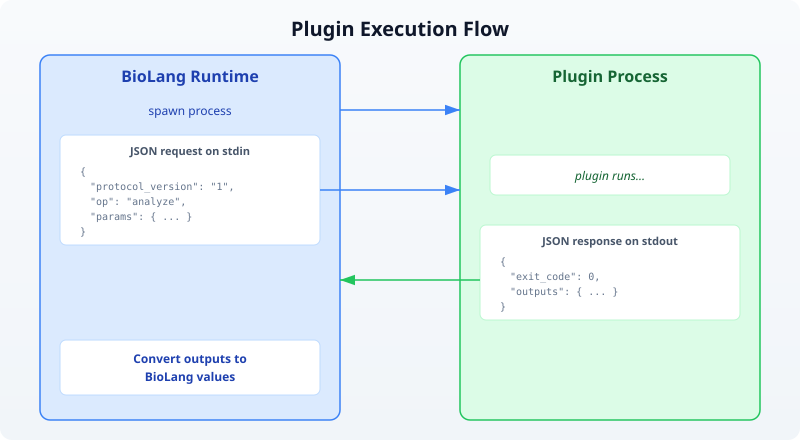
Plugin Manifest: plugin.json
Every plugin has a plugin.json manifest that tells BioLang how to run it:
{
"spec_version": "1",
"name": "seq-analyzer",
"version": "1.0.0",
"description": "Sequence analysis plugin with ML classification",
"kind": "python",
"entrypoint": "main.py",
"operations": ["classify", "predict_function", "cluster"]
}
The fields:
| Field | Description |
|---|---|
spec_version | Always "1" (current protocol version) |
name | Plugin name, used as the import path |
version | Semantic version string |
description | Human-readable description |
kind | Runtime: python, r, deno, typescript, or native |
entrypoint | Script file that handles JSON requests |
operations | List of operations the plugin provides |
Plugin Installation Directory
Plugins are installed to ~/.biolang/plugins/<name>/:
~/.biolang/plugins/
├── seq-analyzer/
│ ├── plugin.json ← manifest
│ ├── main.py ← entrypoint
│ └── models/ ← any supporting files
├── vcf-annotator/
│ ├── plugin.json
│ └── main.py
└── r-deseq/
├── plugin.json
└── main.R
Supported Plugin Kinds
| Kind | Command | Notes |
|---|---|---|
python | python3 main.py (or python) | Most common for bioinformatics |
r | Rscript main.R | For R/Bioconductor packages |
deno | deno run --allow-all main.ts | Secure TypeScript runtime |
typescript | npx tsx main.ts | Node.js TypeScript |
native | Direct execution | Compiled binary |
Section 6: Building a Python Plugin
Let us build a real plugin that performs sequence analysis using Python’s capabilities. This plugin will provide k-mer frequency analysis and basic sequence statistics that complement BioLang’s built-in functions.
Directory Structure
~/.biolang/plugins/kmer-tools/
├── plugin.json
└── main.py
The Manifest (plugin.json)
{
"spec_version": "1",
"name": "kmer-tools",
"version": "1.0.0",
"description": "K-mer frequency analysis and sequence statistics",
"kind": "python",
"entrypoint": "main.py",
"operations": ["kmer_freq", "compare_kmers", "complexity"]
}
The Entrypoint (main.py)
A plugin entrypoint reads JSON from stdin, dispatches to the requested operation, and writes JSON to stdout:
import json
import sys
from collections import Counter
def kmer_freq(params):
"""Compute k-mer frequencies for a sequence."""
seq = params.get("sequence", "").upper()
k = int(params.get("k", 3))
if len(seq) < k:
return {"error": "Sequence shorter than k", "exit_code": 1}
kmers = [seq[i:i+k] for i in range(len(seq) - k + 1)]
counts = dict(Counter(kmers))
total = len(kmers)
freqs = {kmer: count / total for kmer, count in counts.items()}
top_10 = dict(sorted(freqs.items(), key=lambda x: -x[1])[:10])
return {
"total_kmers": total,
"unique_kmers": len(counts),
"top_kmers": top_10,
}
def compare_kmers(params):
"""Compare k-mer profiles of two sequences."""
seq1 = params.get("seq1", "").upper()
seq2 = params.get("seq2", "").upper()
k = int(params.get("k", 3))
kmers1 = Counter(seq1[i:i+k] for i in range(len(seq1) - k + 1))
kmers2 = Counter(seq2[i:i+k] for i in range(len(seq2) - k + 1))
all_kmers = set(kmers1.keys()) | set(kmers2.keys())
shared = set(kmers1.keys()) & set(kmers2.keys())
jaccard = len(shared) / len(all_kmers) if all_kmers else 0.0
return {
"unique_to_seq1": len(set(kmers1.keys()) - set(kmers2.keys())),
"unique_to_seq2": len(set(kmers2.keys()) - set(kmers1.keys())),
"shared": len(shared),
"jaccard_similarity": jaccard,
}
def complexity(params):
"""Compute linguistic complexity of a sequence."""
seq = params.get("sequence", "").upper()
k = int(params.get("k", 3))
if len(seq) < k:
return {"error": "Sequence shorter than k", "exit_code": 1}
observed = len(set(seq[i:i+k] for i in range(len(seq) - k + 1)))
possible = min(4 ** k, len(seq) - k + 1)
lc = observed / possible if possible > 0 else 0.0
return {
"observed_kmers": observed,
"possible_kmers": possible,
"linguistic_complexity": lc,
}
OPERATIONS = {
"kmer_freq": kmer_freq,
"compare_kmers": compare_kmers,
"complexity": complexity,
}
def main():
request = json.loads(sys.stdin.read())
op = request.get("op", "")
params = request.get("params", {})
if op not in OPERATIONS:
result = {"exit_code": 1, "error": f"Unknown operation: {op}"}
else:
try:
outputs = OPERATIONS[op](params)
if "exit_code" in outputs:
result = outputs
else:
result = {"exit_code": 0, "outputs": outputs}
except Exception as e:
result = {"exit_code": 1, "error": str(e)}
print(json.dumps(result))
if __name__ == "__main__":
main()
Using the Plugin from BioLang
Once installed, the plugin’s operations become callable functions:
import "kmer-tools" as kmer
let seq = "ATCGATCGATCGATCGATCG"
# Get k-mer frequencies
let freq = kmer.kmer_freq({ sequence: seq, k: 3 })
# Compare two sequences
let similarity = kmer.compare_kmers({
seq1: "ATCGATCGATCG",
seq2: "GCTAGCTAGCTA",
k: 3
})
# Compute sequence complexity
let lc = kmer.complexity({ sequence: seq, k: 4 })
Installing a Plugin
Use the bl add command to install a plugin from a local directory:
# Install from local path
bl add kmer-tools --path ./my-plugins/kmer-tools
# Remove a plugin
bl remove kmer-tools
# List installed plugins
bl plugins
Section 7: The JSON Protocol in Detail
Understanding the JSON protocol helps you debug plugins and build robust ones.
Request Format
BioLang sends this JSON object on the plugin’s stdin:
{
"protocol_version": "1",
"op": "kmer_freq",
"params": {
"sequence": "ATCGATCG",
"k": 3
},
"work_dir": "/home/user/project",
"plugin_dir": "/home/user/.biolang/plugins/kmer-tools"
}
| Field | Type | Description |
|---|---|---|
protocol_version | string | Always "1" |
op | string | Operation name (must match operations in manifest) |
params | object | Parameters passed from BioLang |
work_dir | string | Current working directory of the calling script |
plugin_dir | string | Absolute path to the plugin directory |
Response Format
The plugin must write a JSON object to stdout:
Success:
{
"exit_code": 0,
"outputs": {
"total_kmers": 18,
"unique_kmers": 3,
"top_kmers": { "ATC": 0.33, "TCG": 0.33, "CGA": 0.33 }
}
}
Error:
{
"exit_code": 1,
"error": "Sequence shorter than k"
}
The outputs object is converted to a BioLang record. Nested objects become nested records. Arrays become lists. Numbers, strings, booleans, and null map to their BioLang equivalents.
Parameter Passing
When you call a plugin function with a record argument, the record’s fields become the params object. If you pass a non-record argument, it is wrapped as { "arg0": value }:
# Record argument — fields become params directly
kmer.kmer_freq({ sequence: "ATCG", k: 3 })
# params = {"sequence": "ATCG", "k": 3}
# Non-record argument — wrapped as arg0
kmer.complexity("ATCG")
# params = {"arg0": "ATCG"}
Section 8: Publishing and Sharing
Sharing Modules
For BioLang modules (.bl files), sharing is straightforward:
- Put your modules in a git repository
- Collaborators clone and set
BIOLANG_PATH:
git clone https://github.com/yourlab/bio-utils.git
export BIOLANG_PATH="/path/to/bio-utils/lib"
- Now anyone can import:
import "seq_utils.bl" as seq
import "qc.bl" as qc
Sharing Plugins
For plugins, package the entire plugin directory:
# Create a shareable archive
cd ~/.biolang/plugins
tar czf kmer-tools.tar.gz kmer-tools/
# Recipient installs it
cd ~/.biolang/plugins
tar xzf kmer-tools.tar.gz
Or use bl add with a local path after cloning:
git clone https://github.com/yourlab/kmer-tools.git
bl add kmer-tools --path ./kmer-tools
Package Initialization
Use bl init to create a biolang.toml for your project. This establishes a package that others can install:
bl init --name my-bio-utils
This creates a biolang.toml with your package metadata. Other users can install your package:
bl install --git https://github.com/yourlab/my-bio-utils.git
Section 9: Best Practices
Module Design Principles
┌──────────────────────────────────────────────────────────────┐
│ MODULE DESIGN PRINCIPLES │
├──────────────────────────────────────────────────────────────┤
│ │
│ 1. SINGLE RESPONSIBILITY │
│ One module = one domain │
│ seq_utils.bl handles sequences │
│ qc.bl handles quality control │
│ Do not mix unrelated functions │
│ │
│ 2. VALIDATE INPUTS │
│ Use error() for invalid data │
│ Check types with typeof() │
│ Fail fast with clear messages │
│ │
│ 3. RETURN STRUCTURED DATA │
│ Return records, not formatted strings │
│ Let the caller decide how to display │
│ { class: "high", gc: 0.72 } not "High GC (72%)" │
│ │
│ 4. TEST EVERYTHING │
│ One test file per module │
│ Test normal, edge, and error cases │
│ Run tests before sharing │
│ │
│ 5. DOCUMENT WITH EXAMPLES │
│ Show usage in a README or test file │
│ Include expected inputs and outputs │
│ Note any dependencies │
│ │
└──────────────────────────────────────────────────────────────┘
Plugin Design Principles
-
Handle all errors. Never let your plugin crash with an unhandled exception. Catch all errors and return
{"exit_code": 1, "error": "descriptive message"}. -
Validate parameters. Check that required parameters exist and have correct types before processing.
-
Keep plugins focused. Each operation should do one thing. Use multiple operations rather than one operation with mode flags.
-
Use
work_dir. When the plugin needs to read or write files, use thework_dirfrom the request to resolve relative paths. -
Print nothing to stdout except the JSON response. Any debug output should go to stderr. BioLang parses stdout as JSON.
-
Test your plugin standalone. You can test a plugin by piping JSON to its stdin:
echo '{"protocol_version":"1","op":"kmer_freq","params":{"sequence":"ATCGATCG","k":3},"work_dir":".","plugin_dir":"."}' | python3 main.py
Exercises
Exercise 1: Build a Restriction Enzyme Module
Create lib/restriction.bl with the following functions:
find_sites(seq, enzyme_name)— returns a record with the enzyme name, recognition sequence, and list of cut positions. Support at least EcoRI (GAATTC), BamHI (GGATCC), and HindIII (AAGCTT).digest(seq, enzyme_name)— returns a list of fragment records withstart,end, andlengthfields.multi_digest(seq, enzyme_list)— combines cut sites from multiple enzymes.
Write tests in tests/test_restriction.bl.
Exercise 2: Build an R Plugin
Create a plugin that wraps R’s statistical functions:
- Operation
wilcox_test: takes two lists of numbers, returns the p-value and test statistic from a Wilcoxon rank-sum test. - Operation
cor_test: takes two lists of numbers, returns the correlation coefficient, p-value, and method.
The plugin.json should use "kind": "r" and the entrypoint should be main.R. The R script reads JSON from stdin (using jsonlite::fromJSON) and writes JSON to stdout (using jsonlite::toJSON).
Exercise 3: Multi-Module Pipeline
Create a pipeline that uses both your sequence utilities module and your QC module together:
- Load a FASTA file
- Run QC with your
qc.blmodule - Filter to only passing sequences
- Classify the passing sequences with your
seq_utils.blmodule - Find TATA box motifs in all sequences
- Write a combined report
This exercise tests that your modules compose well and that namespaced imports prevent collisions.
Exercise 4: Plugin Testing Harness
Write a BioLang script that tests a plugin by:
- Calling each operation with valid inputs and asserting the output structure
- Calling each operation with invalid inputs and verifying error handling via
try/catch - Measuring execution time for each operation
- Writing a test report
Key Takeaways
-
Every
.blfile is a module. Extract reusable functions into separate files and useimportto bring them into your scripts. -
Namespaced imports prevent collisions. Use
import "path" as namewhen combining modules that might define functions with the same name. -
Modules are cached. Each module loads once per program, regardless of how many files import it.
-
The plugin system bridges languages. Plugins use a subprocess JSON protocol: BioLang sends a request on stdin, the plugin returns a response on stdout. Any language that can read and write JSON can be a BioLang plugin.
-
The
plugin.jsonmanifest is the contract. It declares the plugin’s name, version, runtime, entrypoint, and operations. BioLang uses it to discover and invoke the plugin. -
Test your modules with
assert(). One test file per module, covering normal inputs, edge cases, and error conditions. -
Return structured data from functions. Records are composable; formatted strings are not. Let the caller decide presentation.
Summary
You started this chapter copying the same GC classifier into every script. You end it with a modular, tested toolkit that your entire lab can import, extend, and trust. The module system handles BioLang-to-BioLang code sharing. The plugin system handles everything else — wrapping Python ML models, R statistical tests, or any command-line tool into a callable BioLang function.
Tomorrow you begin the capstone projects, where you will combine everything you have learned — modules, plugins, pipelines, error handling, databases, and visualization — into production-grade analyses.
Day 28: Capstone — Clinical Variant Report
| Difficulty | Advanced |
| Biology knowledge | Advanced (genomic variants, clinical genetics, gene-disease associations) |
| Coding knowledge | Advanced (all prior topics: pipes, tables, APIs, error handling, modules) |
| Time | ~4–5 hours |
| Prerequisites | Days 1–27 completed, BioLang installed (see Appendix A) |
| Data needed | Generated locally via init.bl (simulated VCF, gene panels, reference files) |
CLINICAL DISCLAIMER: This chapter is strictly educational. The pipeline demonstrated here is a simplified illustration of clinical genomics concepts. It must never be used for actual patient care, diagnosis, or clinical decision-making. Real clinical variant interpretation requires validated, accredited pipelines (CAP/CLIA), board-certified review, and adherence to professional guidelines (ACMG/AMP). The classification logic shown here is intentionally simplified and does not reflect the full complexity of clinical variant interpretation.
What You’ll Learn
- How to load and parse VCF files for variant analysis
- How to apply multi-stage quality and frequency filters
- How to annotate variants with gene information via APIs
- How to implement ACMG-inspired variant classification logic
- How to generate structured clinical-style reports
- How to build clinical-grade error handling into every pipeline stage
- How to integrate skills from all 27 prior days into a single capstone project
The Problem
“A patient’s whole-exome sequencing results are in — can we build an automated clinical report?”
A 42-year-old patient with a family history of hereditary breast and ovarian cancer has undergone whole-exome sequencing. The sequencing facility has delivered a VCF file containing thousands of variants. Your task: filter the noise, identify clinically relevant variants, classify them according to established guidelines, cross-reference with gene-disease databases, and produce a structured report suitable for clinical review.
This is not a single-tool problem. It requires everything you have learned: file I/O (Day 6–7), variant fundamentals (Day 12), table operations (Day 10), API access (Day 9, 24), statistics (Day 14), error handling (Day 25), modules (Day 27), and pipeline thinking (Day 22). This capstone ties it all together.
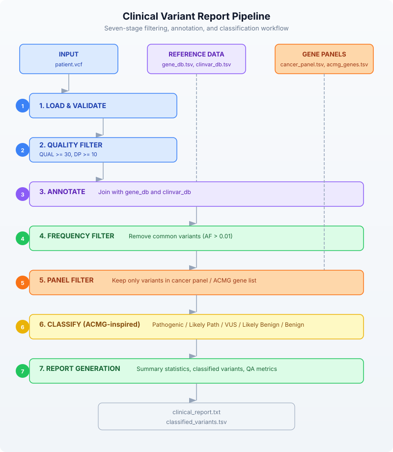
Section 1: Clinical Context
Before we write code, let us understand the clinical workflow this pipeline supports.
Variant Classification: The ACMG/AMP Framework
The American College of Medical Genetics and Genomics (ACMG) and the Association for Molecular Pathology (AMP) published guidelines in 2015 for classifying sequence variants into five tiers:
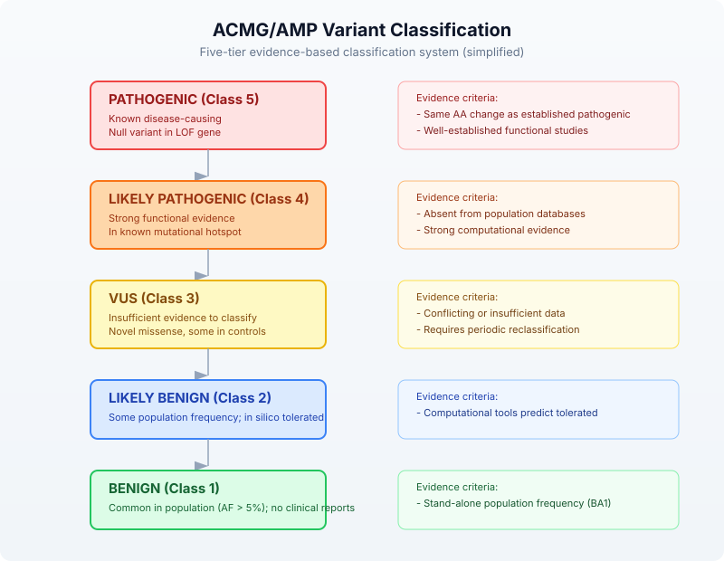
Our pipeline implements a simplified version of this logic. Real clinical labs use dozens of evidence criteria (PS1–PS4, PM1–PM6, PP1–PP5, BA1, BS1–BS4, BP1–BP7). We focus on a subset that can be evaluated computationally: population frequency, predicted impact, ClinVar concordance, and gene-disease association.
What a Clinical Report Contains
A clinical-grade variant report typically includes:
- Patient metadata — demographics, ordering physician, indication for testing
- Methodology — sequencing platform, coverage metrics, analysis pipeline version
- Reportable findings — pathogenic and likely pathogenic variants with gene, transcript, protein change, zygosity, and classification rationale
- Variants of uncertain significance — listed separately for transparency
- Quality metrics — coverage, call rate, Ti/Tv ratio
- Limitations — regions of low coverage, known blind spots
- Disclaimer — signed interpretation by board-certified geneticist
Section 2: Setting Up the Data
Run the initialization script to generate synthetic clinical data:
cd days/day-28
bl init.bl
This creates:
| File | Description |
|---|---|
data/patient.vcf | Simulated patient VCF with 20 variants |
data/gene_db.tsv | Gene annotation database (gene name, function, OMIM) |
data/clinvar_db.tsv | ClinVar-like classification reference |
data/cancer_panel.tsv | Hereditary cancer gene panel (25 genes) |
data/acmg_genes.tsv | ACMG secondary findings gene list |
data/patient_info.tsv | Patient metadata |
All data is synthetic — no real patient information is used.
Section 3: Loading and Validating VCF Data
The first step is loading the VCF file and validating its structure. We use read_vcf() from Day 12:
let variants = read_vcf("data/patient.vcf")
The read_vcf() function returns a table with columns: chrom, pos, id, ref, alt, qual, filter, info. Let us inspect its shape:
let variant_count = variants |> len()
let columns = variants |> keys()
Validation Checks
Clinical pipelines fail loudly. We validate before proceeding:
fn validate_vcf(variants) {
let n = variants |> len()
if n == 0 {
error("VCF file contains no variants")
}
let required_cols = ["chrom", "pos", "ref", "alt", "qual"]
required_cols |> each(|col| {
let col_names = variants |> keys()
if contains(col_names, col) == false {
error(f"Missing required VCF column: {col}")
}
})
return { variant_count: n, status: "valid" }
}
This pattern — validate inputs, fail with clear messages — should feel familiar from Day 25.
Section 4: Quality Filtering
Raw variant calls include many low-confidence calls. We filter on two standard quality metrics:
- QUAL — Phred-scaled quality score. QUAL >= 30 means the variant call has a 1-in-1000 chance of being wrong.
- DP — Read depth. DP >= 10 ensures sufficient evidence supports the call.
fn quality_filter(variants, min_qual, min_dp) {
variants |> where(|row| {
let q = float(row.qual)
let d = try {
let info_str = row.info
let parts = split(info_str, ";")
let dp_part = parts |> filter(|p| starts_with(p, "DP="))
if len(dp_part) > 0 {
int(replace(dp_part[0], "DP=", ""))
} else {
0
}
} catch err {
0
}
q >= min_qual and d >= min_dp
})
}
We extract DP from the INFO field, which is semicolon-delimited. The try/catch ensures malformed INFO fields do not crash the pipeline — they simply get depth zero and are filtered out.
let qc_passed = quality_filter(variants, 30.0, 10)
Section 5: Variant Annotation
Next we annotate variants with gene information and ClinVar classifications. We load our reference databases as tables and join:
let gene_db = read_tsv("data/gene_db.tsv")
let clinvar_db = read_tsv("data/clinvar_db.tsv")
Building an Annotation Key
To join variants with our databases, we need a common key. We construct a variant key from chromosome, position, reference allele, and alternate allele:
fn make_variant_key(row) {
return f"{row.chrom}:{row.pos}:{row.ref}:{row.alt}"
}
let annotated = qc_passed |> mutate("variant_key", |row| make_variant_key(row))
Joining with Gene and ClinVar Data
let with_genes = join_tables(annotated, gene_db, "gene")
let with_clinvar = join_tables(with_genes, clinvar_db, "variant_key")
The join_tables() function (Day 10) performs an inner join on the shared column. Variants without a match in the reference database are retained with empty annotation fields.
API-Based Annotation (Optional)
For real-world analysis, you would query live databases. Here is how you might enrich a variant with Ensembl VEP:
# Annotate a single variant with Ensembl VEP
# WARNING: rate-limited, use sparingly
fn annotate_with_vep(chrom, pos, ref_allele, alt_allele) {
let hgvs = f"{chrom}:g.{pos}{ref_allele}>{alt_allele}"
try {
let vep = ensembl_vep(hgvs)
return vep
} catch err {
return { error: str(err), consequence: "unknown" }
}
}
And for gene-disease associations via NCBI:
# Look up gene-disease associations
fn lookup_gene_disease(gene_name) {
try {
let gene_info = ncbi_gene(gene_name, "human")
return {
gene: gene_name,
description: gene_info.description,
source: "NCBI"
}
} catch err {
return { gene: gene_name, description: "lookup failed", source: "none" }
}
}
In our capstone pipeline, we use the pre-built local databases from init.bl to keep the pipeline deterministic and offline-capable. The API calls above show how you would extend it for production use.
Section 6: Frequency Filtering
Common variants are unlikely to cause rare disease. We filter out variants with an allele frequency (AF) above 1% in population databases:
fn frequency_filter(variants, max_af) {
variants |> where(|row| {
let af = try {
let info_str = row.info
let parts = split(info_str, ";")
let af_part = parts |> filter(|p| starts_with(p, "AF="))
if len(af_part) > 0 {
float(replace(af_part[0], "AF=", ""))
} else {
0.0
}
} catch err {
0.0
}
af <= max_af
})
}
let rare_variants = frequency_filter(with_clinvar, 0.01)
The logic mirrors real clinical pipelines: absent AF is treated as zero (novel variant, possibly significant), and we keep only variants with AF <= 0.01 (1%).
Section 7: Gene Panel Filtering
Clinical exome analysis does not report all variants — it focuses on genes relevant to the clinical indication. For hereditary cancer, we apply the cancer gene panel:
let cancer_panel = read_tsv("data/cancer_panel.tsv")
let acmg_genes = read_tsv("data/acmg_genes.tsv")
Panel Matching
fn panel_filter(variants, panel) {
let panel_genes = panel |> select("gene") |> map(|row| row.gene)
variants |> where(|row| {
let gene = try { row.gene } catch err { "" }
panel_genes |> filter(|g| g == gene) |> len() > 0
})
}
let panel_variants = panel_filter(rare_variants, cancer_panel)
let acmg_variants = panel_filter(rare_variants, acmg_genes)
We apply both the disease-specific panel and the ACMG secondary findings list. The ACMG recommends reporting pathogenic/likely pathogenic variants in 81 genes regardless of the clinical indication — an important safety net.
Section 8: ACMG-Inspired Classification
Now we classify each variant. Our simplified scoring system uses four evidence dimensions:
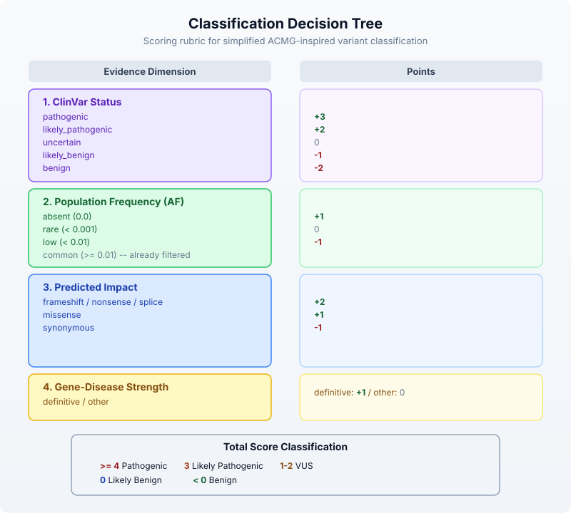
Here is the BioLang implementation:
fn clinvar_score(clinvar_class) {
if clinvar_class == "pathogenic" { return 3 }
if clinvar_class == "likely_pathogenic" { return 2 }
if clinvar_class == "uncertain" { return 0 }
if clinvar_class == "likely_benign" { return -1 }
if clinvar_class == "benign" { return -2 }
return 0
}
fn frequency_score(af) {
if af == 0.0 { return 1 }
if af < 0.001 { return 0 }
return -1
}
fn impact_score(impact) {
if impact == "frameshift" { return 2 }
if impact == "nonsense" { return 2 }
if impact == "splice" { return 2 }
if impact == "missense" { return 1 }
if impact == "synonymous" { return -1 }
return 0
}
fn gene_disease_score(strength) {
if strength == "definitive" { return 1 }
return 0
}
fn classify_variant(score) {
if score >= 4 { return "Pathogenic" }
if score == 3 { return "Likely Pathogenic" }
if score >= 1 { return "VUS" }
if score == 0 { return "Likely Benign" }
return "Benign"
}
fn score_variant(row) {
let cv = try { row.clinvar_class } catch err { "unknown" }
let af = try {
let parts = split(row.info, ";")
let af_part = parts |> filter(|p| starts_with(p, "AF="))
if len(af_part) > 0 { float(replace(af_part[0], "AF=", "")) } else { 0.0 }
} catch err {
0.0
}
let imp = try { row.impact } catch err { "unknown" }
let gd = try { row.gene_disease } catch err { "unknown" }
let s1 = clinvar_score(cv)
let s2 = frequency_score(af)
let s3 = impact_score(imp)
let s4 = gene_disease_score(gd)
let total = s1 + s2 + s3 + s4
return {
variant_key: try { row.variant_key } catch err { "" },
gene: try { row.gene } catch err { "" },
chrom: row.chrom,
pos: row.pos,
ref_allele: row.ref,
alt_allele: row.alt,
impact: imp,
clinvar: cv,
af: af,
score: total,
classification: classify_variant(total)
}
}
Apply classification to all panel variants:
let classified = panel_variants |> map(|row| score_variant(row))
Grouping by Classification
let pathogenic = classified |> filter(|v| v.classification == "Pathogenic")
let likely_path = classified |> filter(|v| v.classification == "Likely Pathogenic")
let vus = classified |> filter(|v| v.classification == "VUS")
let likely_benign = classified |> filter(|v| v.classification == "Likely Benign")
let benign = classified |> filter(|v| v.classification == "Benign")
Section 9: Report Generation
The final step is generating a structured clinical report. We build it as a list of lines and write to both text and TSV formats:
fn format_variant_line(v) {
return f" {v.gene} | {v.chrom}:{v.pos} | {v.ref_allele}>{v.alt_allele} | {v.impact} | {v.clinvar} | Score:{v.score}"
}
fn build_report(patient_info, classified, qc_stats) {
let report = [
"================================================================",
" CLINICAL VARIANT ANALYSIS REPORT (EDUCATIONAL ONLY)",
"================================================================",
"",
"DISCLAIMER: This report is generated by an educational pipeline.",
"It must NOT be used for clinical decision-making.",
"",
"--- PATIENT INFORMATION ---",
f"Patient ID: {patient_info.patient_id}",
f"Sample ID: {patient_info.sample_id}",
f"Indication: {patient_info.indication}",
f"Report Date: {patient_info.report_date}",
""
]
let path_variants = classified |> filter(|v| v.classification == "Pathogenic")
let lp_variants = classified |> filter(|v| v.classification == "Likely Pathogenic")
let vus_variants = classified |> filter(|v| v.classification == "VUS")
let lb_variants = classified |> filter(|v| v.classification == "Likely Benign")
let b_variants = classified |> filter(|v| v.classification == "Benign")
report = report + [
"--- SUMMARY ---",
f"Total variants analyzed: {qc_stats.total_input}",
f"Passed quality filter: {qc_stats.passed_qc}",
f"Rare variants (AF <= 1%): {qc_stats.rare_count}",
f"In gene panel: {qc_stats.panel_count}",
f"Classified: {len(classified)}",
"",
f" Pathogenic: {len(path_variants)}",
f" Likely Pathogenic: {len(lp_variants)}",
f" VUS: {len(vus_variants)}",
f" Likely Benign: {len(lb_variants)}",
f" Benign: {len(b_variants)}",
""
]
if len(path_variants) > 0 {
report = report + ["--- PATHOGENIC VARIANTS (Reportable) ---"]
path_variants |> each(|v| {
report = report + [format_variant_line(v)]
})
report = report + [""]
}
if len(lp_variants) > 0 {
report = report + ["--- LIKELY PATHOGENIC VARIANTS (Reportable) ---"]
lp_variants |> each(|v| {
report = report + [format_variant_line(v)]
})
report = report + [""]
}
if len(vus_variants) > 0 {
report = report + ["--- VARIANTS OF UNCERTAIN SIGNIFICANCE ---"]
vus_variants |> each(|v| {
report = report + [format_variant_line(v)]
})
report = report + [""]
}
report = report + [
"--- QUALITY METRICS ---",
f"Mean QUAL score: {qc_stats.mean_qual}",
f"Mean depth: {qc_stats.mean_dp}",
f"Variants filtered (low quality): {qc_stats.total_input - qc_stats.passed_qc}",
"",
"--- LIMITATIONS ---",
"- This analysis covers exonic regions only",
"- Structural variants and CNVs are not assessed",
"- Intronic and regulatory variants may be missed",
"- Classification is based on a simplified scoring model",
"",
"--- END OF REPORT ---"
]
return report
}
Section 10: Quality Assurance
Clinical pipelines must track their own quality. We compute QA metrics at each stage:
fn compute_qc_stats(all_variants, qc_passed, rare, panel_matched) {
let quals = all_variants |> select("qual") |> map(|row| float(row.qual))
let depths = all_variants |> map(|row| {
try {
let parts = split(row.info, ";")
let dp_part = parts |> filter(|p| starts_with(p, "DP="))
if len(dp_part) > 0 { int(replace(dp_part[0], "DP=", "")) } else { 0 }
} catch err {
0
}
})
return {
total_input: len(all_variants),
passed_qc: len(qc_passed),
rare_count: len(rare),
panel_count: len(panel_matched),
mean_qual: mean(quals),
mean_dp: mean(depths)
}
}
Section 11: The Complete Pipeline
Here is the entire pipeline, end to end. Each stage flows into the next via pipes and function calls:
# --- Load data ---
let variants = read_vcf("data/patient.vcf")
let gene_db = read_tsv("data/gene_db.tsv")
let clinvar_db = read_tsv("data/clinvar_db.tsv")
let cancer_panel = read_tsv("data/cancer_panel.tsv")
let patient_meta = read_tsv("data/patient_info.tsv")
let patient_info = patient_meta[0]
# --- Validate ---
let validation = validate_vcf(variants)
# --- Quality filter ---
let qc_passed = quality_filter(variants, 30.0, 10)
# --- Annotate ---
let annotated = qc_passed |> mutate("variant_key", |row| make_variant_key(row))
let with_genes = join_tables(annotated, gene_db, "gene")
let with_clinvar = join_tables(with_genes, clinvar_db, "variant_key")
# --- Frequency filter ---
let rare_variants = frequency_filter(with_clinvar, 0.01)
# --- Panel filter ---
let panel_variants = panel_filter(rare_variants, cancer_panel)
# --- Classify ---
let classified = panel_variants |> map(|row| score_variant(row))
# --- QC stats ---
let qc_stats = compute_qc_stats(variants, qc_passed, rare_variants, panel_variants)
# --- Generate report ---
let report_lines = build_report(patient_info, classified, qc_stats)
write_lines(report_lines, "data/output/clinical_report.txt")
# --- Export classified variants ---
let classified_table = classified |> to_table()
write_tsv(classified_table, "data/output/classified_variants.tsv")
Run it:
cd days/day-28
bl init.bl
bl scripts/analysis.bl
Expected output files:
| File | Contents |
|---|---|
data/output/clinical_report.txt | Full clinical report with all sections |
data/output/classified_variants.tsv | Classified variants in tabular format |
Section 12: Extending with Live API Data
In a production pipeline, you would replace the local databases with live API queries. Here is a sketch of how the annotation stage would change:
# Production annotation: query NCBI and Ensembl for each gene
fn annotate_live(variants) {
variants |> map(|row| {
let gene_info = try {
ncbi_gene(row.gene, "human")
} catch err {
{ description: "unknown", summary: "" }
}
let vep_result = try {
let hgvs = f"{row.chrom}:g.{row.pos}{row.ref}>{row.alt}"
ensembl_vep(hgvs)
} catch err {
{ consequence: "unknown" }
}
{
gene: row.gene,
chrom: row.chrom,
pos: row.pos,
ref_allele: row.ref,
alt_allele: row.alt,
gene_description: gene_info.description,
vep_consequence: vep_result.consequence
}
})
}
The try/catch around every API call is essential — network failures must not crash a clinical pipeline.
Exercises
Exercise 1: Add a Secondary Findings Module
The ACMG recommends reporting pathogenic variants in 81 genes regardless of the primary indication. Extend the pipeline to:
- Load the
acmg_genes.tsvpanel - Filter
rare_variantsagainst the ACMG gene list (separately from the cancer panel) - Classify the ACMG variants using the same scoring function
- Add a “Secondary Findings” section to the report
Exercise 2: Variant Prioritization
Add a prioritization function that sorts classified variants by clinical urgency:
- Pathogenic variants sorted by score (highest first)
- Within the same score, sort by gene-disease association strength
- Output a ranked list with rank numbers
Hint: use sort_by() with a custom key function that combines classification tier and score.
Exercise 3: Coverage Gap Report
Add a quality section that identifies genomic regions with insufficient coverage:
- Parse the DP values from each variant’s INFO field
- Flag any variant with DP < 20 as “low coverage”
- Group low-coverage variants by chromosome
- Add a “Coverage Gaps” section to the report listing affected genes
Exercise 4: Multi-Sample Comparison
Extend the pipeline to accept two VCF files (e.g., tumor and normal) and:
- Identify variants present only in the tumor (somatic)
- Identify variants shared between tumor and normal (germline)
- Flag somatic variants with high impact for follow-up
- Generate a comparative report
Key Takeaways
-
Clinical pipelines are layered — each filter stage reduces the variant set, and the order matters (quality before frequency before panel).
-
Error handling is non-negotiable — every I/O operation, every API call, every field access should be wrapped in
try/catchin clinical code. A crash is unacceptable when patient data is at stake. -
Classification is evidence-based — even our simplified scoring system combines multiple independent lines of evidence. Real ACMG classification uses 28 criteria across 5 evidence categories.
-
Reports must be transparent — every report includes methodology, limitations, and disclaimers. The pipeline documents what it did and what it could not do.
-
Modularity pays off — by Day 28, you can build a multi-stage pipeline by composing functions. Each scoring function, each filter, each formatter is independently testable.
-
Local-first, API-enriched — the pipeline works entirely offline with local databases, but can be extended with live API queries for production use. This mirrors how clinical labs operate: validated local databases with optional external enrichment.
Remember: Real clinical variant interpretation is a collaborative process between computational pipelines and board-certified clinical geneticists. Software identifies candidates; humans make diagnoses.
Summary
In this capstone, you built a complete clinical variant analysis pipeline that:
- Loaded and validated VCF data
- Applied multi-stage quality, frequency, and panel filters
- Annotated variants with gene and ClinVar information
- Implemented ACMG-inspired classification logic
- Generated a structured clinical report
- Tracked quality metrics throughout the pipeline
This project integrated skills from nearly every prior day: file I/O (Days 6–7), VCF parsing (Day 12), tables and joins (Day 10), API access (Days 9, 24), statistics (Day 14), error handling (Day 25), modules (Day 27), and pipeline design (Day 22).
Tomorrow in Day 29, we tackle another capstone: a complete RNA-seq differential expression study.
Day 29: Capstone — RNA-seq Differential Expression Study
| Difficulty | Advanced |
| Biology knowledge | Advanced (gene expression, RNA-seq, statistical testing, functional genomics) |
| Coding knowledge | Advanced (all prior topics: pipes, tables, statistics, visualization, APIs) |
| Time | ~4–5 hours |
| Prerequisites | Days 1–28 completed, BioLang installed (see Appendix A) |
| Data needed | Generated locally via init.bl (simulated count matrix, sample metadata) |
What You’ll Learn
- How to load and validate an RNA-seq count matrix
- How to assess library quality with summary statistics
- How to normalize raw counts (CPM and TPM)
- How to perform differential expression analysis with fold change and statistical testing
- How to apply multiple testing correction (Benjamini-Hochberg)
- How to visualize results with volcano plots and heatmaps
- How to interpret results via GO enrichment and pathway analysis
- How to generate publication-ready summary tables and figures
The Problem
“We treated cells with a new drug — which genes responded?”
A research team has exposed a human cell line to a candidate anti-cancer compound for 24 hours. They collected RNA from three treated replicates and three untreated controls, sequenced each on an Illumina platform, aligned the reads to the human reference genome, and quantified gene-level counts using a standard pipeline. The output is a count matrix: rows are genes, columns are samples. Your task is to identify which genes are significantly up- or down-regulated by the drug, correct for multiple testing, visualize the results, and connect the hits to biological function.
This is the workhorse analysis of functional genomics. Every drug study, every perturbation experiment, every disease-versus-healthy comparison begins here.

Section 1: Experimental Design Recap
Before touching data, let us review the experimental design that makes differential expression possible.
Replication and Conditions
In this experiment we have two conditions — treated and control — with three biological replicates each. Why three? Because a single replicate tells you nothing about variability. Two replicates give you a difference but no standard error. Three is the practical minimum for a t-test. Better-funded studies use five or more.

What a Count Matrix Contains
Each cell holds the number of sequencing reads that mapped to a given gene in a given sample. These are raw counts — not normalized, not transformed. A gene with 5000 counts in one sample and 500 in another might be differentially expressed, or it might just reflect different sequencing depths. That is why normalization is critical.
Section 2: Loading the Data
First, generate the simulated data:
cd days/day-29
bl init.bl
This creates a count matrix with 200 genes across 6 samples (3 control, 3 treated), along with sample metadata and gene annotations.
Now load everything:
let counts = read_tsv("data/counts.tsv")
let samples = read_tsv("data/samples.tsv")
let gene_info = read_tsv("data/gene_info.tsv")
println(f"Genes: {len(counts)}")
println(f"Samples: {len(samples)}")
Genes: 200
Samples: 6
The count matrix has columns: gene, ctrl_1, ctrl_2, ctrl_3, treat_1, treat_2, treat_3. Each row is a gene; each value is a non-negative integer count.
Let us validate the structure:
fn validate_counts(counts, samples) {
if len(counts) == 0 {
error("Count matrix is empty")
}
let sample_ids = samples |> map(|s| s.sample_id)
sample_ids |> each(|sid| {
let col_names = counts |> keys()
if contains(col_names, sid) == false {
error(f"Sample {sid} not found in count matrix")
}
})
return { genes: len(counts), samples: len(sample_ids), status: "valid" }
}
let validation = validate_counts(counts, samples)
println(f"Validation: {validation.status} ({validation.genes} genes, {validation.samples} samples)")
Validation: valid (200 genes, 6 samples)
Section 3: Quality Assessment
Before analysis, we check library sizes and identify problematic genes.
Library Sizes
Library size is the total count across all genes for a given sample. Large differences between libraries suggest a technical problem or the need for careful normalization.
let sample_ids = samples |> map(|s| s.sample_id)
let lib_sizes = sample_ids |> map(|sid| {
let total = counts |> map(|row| int(row[sid])) |> sum()
{ sample: sid, total_counts: total }
})
lib_sizes |> each(|ls| {
println(f" {ls.sample}: {ls.total_counts} reads")
})
ctrl_1: 1245832 reads
ctrl_2: 1189456 reads
ctrl_3: 1312078 reads
treat_1: 1156234 reads
treat_2: 1278901 reads
treat_3: 1201567 reads
Good — library sizes are within a factor of 1.15 of each other. If one sample had 10x fewer reads, we would investigate or exclude it.
Zero-Count Genes
Genes with zero counts across all samples carry no information. Let us count them:
let zero_genes = counts |> filter(|row| {
let total = sample_ids |> map(|sid| int(row[sid])) |> sum()
total == 0
})
println(f"Genes with zero counts across all samples: {len(zero_genes)}")
Genes with zero counts across all samples: 5
Filtering Low-Count Genes
Standard practice is to remove genes where the total count across all samples is below a threshold. This reduces the multiple testing burden and removes noisy genes.
let min_total = 10
let filtered = counts |> where(|row| {
let total = sample_ids |> map(|sid| int(row[sid])) |> sum()
total >= min_total
})
println(f"Genes before filter: {len(counts)}")
println(f"Genes after filter (total >= {min_total}): {len(filtered)}")
Genes before filter: 200
Genes after filter (total >= 10): 180
Section 4: Normalization
Raw counts are not directly comparable between samples (different library sizes) or between genes (different gene lengths). Two normalization methods address these issues.
CPM: Counts Per Million
CPM normalizes for library size. Divide each count by the sample’s total count, then multiply by one million. This makes counts comparable across samples for the same gene.
CPM NORMALIZATION
=================
Raw: Gene A has 500 counts in Sample 1 (total 1,000,000 reads)
Gene A has 500 counts in Sample 2 (total 2,000,000 reads)
CPM: Sample 1: 500 / 1,000,000 × 1,000,000 = 500.0 CPM
Sample 2: 500 / 2,000,000 × 1,000,000 = 250.0 CPM
→ Sample 2 actually has HALF the relative expression of Sample 1
fn compute_cpm(counts, sample_ids) {
let lib_sizes = sample_ids |> map(|sid| {
counts |> map(|row| int(row[sid])) |> sum()
})
counts |> map(|row| {
let result = { gene: row.gene }
range(0, len(sample_ids)) |> each(|i| {
let sid = sample_ids[i]
let raw = int(row[sid])
let cpm = float(raw) / float(lib_sizes[i]) * 1000000.0
result[sid] = round(cpm, 2)
})
result
})
}
let cpm = compute_cpm(filtered, sample_ids)
let first_gene = cpm[0]
println(f"CPM for {first_gene.gene}: ctrl_1={first_gene.ctrl_1}, treat_1={first_gene.treat_1}")
TPM: Transcripts Per Million
TPM normalizes for both gene length and library size. First divide by gene length (in kilobases), then scale so each sample sums to one million. This makes counts comparable across genes within a sample.
TPM NORMALIZATION (two-step)
============================
Step 1: Rate = count / gene_length_kb
Gene A (2 kb): 1000 / 2 = 500
Gene B (4 kb): 1000 / 4 = 250
Step 2: TPM = rate / sum(all rates) × 1,000,000
Sum of rates = 500 + 250 = 750
Gene A TPM = 500 / 750 × 1,000,000 = 666,667
Gene B TPM = 250 / 750 × 1,000,000 = 333,333
→ Gene B is LESS expressed per unit length, despite equal raw counts
fn compute_tpm(counts, sample_ids, gene_info) {
let length_map = {}
gene_info |> each(|g| {
length_map[g.gene] = float(g.length)
})
let rates = counts |> map(|row| {
let gene_len_kb = try { length_map[row.gene] / 1000.0 } catch err { 1.0 }
let result = { gene: row.gene }
sample_ids |> each(|sid| {
result[sid] = float(int(row[sid])) / gene_len_kb
})
result
})
let rate_sums = sample_ids |> map(|sid| {
rates |> map(|row| row[sid]) |> sum()
})
rates |> map(|row| {
let result = { gene: row.gene }
range(0, len(sample_ids)) |> each(|i| {
let sid = sample_ids[i]
result[sid] = round(row[sid] / rate_sums[i] * 1000000.0, 2)
})
result
})
}
let tpm = compute_tpm(filtered, sample_ids, gene_info)
Which Normalization When?
- CPM: Use for differential expression between conditions (same gene, different samples). This is what we will use for DE testing.
- TPM: Use when comparing expression levels between genes within a sample (e.g., “is gene A more highly expressed than gene B?”).
For our differential expression analysis, we use CPM-normalized values to compare treated versus control for each gene.
Section 5: Differential Expression Analysis
The core question: for each gene, is the expression level different between treated and control? We need two things: an effect size (how much did expression change?) and a p-value (is the change larger than expected by chance?).
Log2 Fold Change
Fold change is the ratio of treated mean to control mean. We use the log2 transform because it makes up- and down-regulation symmetric: a gene with 2x higher expression has log2FC = 1; a gene with 2x lower expression has log2FC = -1.
LOG2 FOLD CHANGE
=================
Gene A: control mean = 100, treated mean = 400
FC = 400 / 100 = 4.0
log2FC = log2(4.0) = 2.0 (4x up-regulated)
Gene B: control mean = 800, treated mean = 200
FC = 200 / 800 = 0.25
log2FC = log2(0.25) = -2.0 (4x down-regulated)
Gene C: control mean = 300, treated mean = 310
FC = 310 / 300 = 1.033
log2FC = log2(1.033) = 0.047 (no meaningful change)
Statistical Testing
A large fold change alone is not enough. If the replicates are noisy, even a 4x change might not be significant. We use a t-test to evaluate whether the difference between conditions is statistically significant given the observed variability.
let ctrl_ids = samples |> filter(|s| s.condition == "control") |> map(|s| s.sample_id)
let treat_ids = samples |> filter(|s| s.condition == "treated") |> map(|s| s.sample_id)
fn differential_expression(cpm, ctrl_ids, treat_ids) {
cpm |> map(|row| {
let ctrl_vals = ctrl_ids |> map(|sid| row[sid])
let treat_vals = treat_ids |> map(|sid| row[sid])
let ctrl_mean = mean(ctrl_vals)
let treat_mean = mean(treat_vals)
let pseudocount = 0.01
let log2fc = log2((treat_mean + pseudocount) / (ctrl_mean + pseudocount))
let pval = try { t_test(ctrl_vals, treat_vals) } catch err { 1.0 }
{
gene: row.gene,
ctrl_mean: round(ctrl_mean, 2),
treat_mean: round(treat_mean, 2),
log2fc: round(log2fc, 4),
pvalue: pval,
direction: if log2fc > 0 { "up" } else { "down" }
}
})
}
let de_results = differential_expression(cpm, ctrl_ids, treat_ids)
We add a small pseudocount (0.01) to avoid division by zero when a gene has zero expression in one condition.
Section 6: Multiple Testing Correction
The Multiple Testing Problem
If you test 20,000 genes at p < 0.05, you expect 1,000 false positives by chance alone — 5% of 20,000. This is unacceptable. We need to correct for the number of tests performed.
THE MULTIPLE TESTING PROBLEM
============================
Test 1 gene at p < 0.05: 5% chance of false positive OK
Test 100 genes at p < 0.05: expect ~5 false positives Risky
Test 10,000 at p < 0.05: expect ~500 false positives Useless
Solution: control the FALSE DISCOVERY RATE (FDR)
Instead of p < 0.05, require adjusted p (q-value) < 0.05
This means: among ALL genes you call significant,
at most 5% are expected to be false positives.
Benjamini-Hochberg Procedure
The Benjamini-Hochberg (BH) procedure is the standard method for FDR control in genomics. It works by ranking p-values and adjusting each one based on its rank:
- Sort all p-values from smallest to largest
- For rank i out of m total tests: adjusted p = p-value * m / i
- Enforce monotonicity (each adjusted p >= the one before it)
fn benjamini_hochberg(de_results) {
let sorted = de_results |> sort_by(|a, b| {
if a.pvalue < b.pvalue { -1 }
else if a.pvalue > b.pvalue { 1 }
else { 0 }
})
let m = len(sorted)
let padj_values = range(0, m) |> map(|i| {
let rank = i + 1
let raw_adj = sorted[i].pvalue * float(m) / float(rank)
if raw_adj > 1.0 { 1.0 } else { raw_adj }
})
let monotonic = range(0, m) |> map(|_| 1.0)
let running_min = 1.0
range(0, m) |> each(|j| {
let i = m - 1 - j
if padj_values[i] < running_min {
running_min = padj_values[i]
}
monotonic[i] = running_min
})
range(0, m) |> map(|i| {
let row = sorted[i]
{
gene: row.gene,
ctrl_mean: row.ctrl_mean,
treat_mean: row.treat_mean,
log2fc: row.log2fc,
pvalue: row.pvalue,
padj: round(monotonic[i], 6),
direction: row.direction
}
})
}
let corrected = benjamini_hochberg(de_results)
Identifying Significant Genes
A gene is called “differentially expressed” if it passes two thresholds:
- Statistical significance: adjusted p-value (FDR) < 0.05
- Biological significance: absolute log2 fold change > 1 (at least 2-fold change)
let fc_threshold = 1.0
let fdr_threshold = 0.05
let significant = corrected |> filter(|row| {
abs(row.log2fc) > fc_threshold and row.padj < fdr_threshold
})
let up_genes = significant |> filter(|row| row.direction == "up")
let down_genes = significant |> filter(|row| row.direction == "down")
println(f"Total genes tested: {len(corrected)}")
println(f"Significant DE genes (|log2FC| > {fc_threshold}, FDR < {fdr_threshold}): {len(significant)}")
println(f" Up-regulated: {len(up_genes)}")
println(f" Down-regulated: {len(down_genes)}")
Total genes tested: 180
Significant DE genes (|log2FC| > 1.0, FDR < 0.05): 45
Up-regulated: 25
Down-regulated: 20
Section 7: Volcano Plot
The volcano plot is the signature visualization of differential expression. It plots statistical significance (-log10 p-value) on the y-axis against effect size (log2 fold change) on the x-axis. Significant genes appear in the upper corners.

let volcano_data = corrected |> map(|row| {
let neg_log10_p = if row.padj > 0.0 { -1.0 * log10(row.padj) } else { 10.0 }
{
gene: row.gene,
log2fc: row.log2fc,
neg_log10_padj: round(neg_log10_p, 4),
significant: abs(row.log2fc) > fc_threshold and row.padj < fdr_threshold
}
})
let volcano_svg = volcano(
volcano_data |> map(|r| r.log2fc),
volcano_data |> map(|r| r.neg_log10_padj),
"Drug Treatment: Volcano Plot",
"log2 Fold Change",
"-log10(adjusted p-value)"
)
write_lines([volcano_svg], "data/output/volcano.svg")
println("Wrote volcano plot to data/output/volcano.svg")
Section 8: Heatmap of Top Genes
A heatmap of the top differentially expressed genes shows expression patterns across all samples. We select the most significant genes and display their CPM values.
let top_n = 20
let top_genes = significant |> sort_by(|a, b| {
if a.padj < b.padj { -1 }
else if a.padj > b.padj { 1 }
else { 0 }
})
let top_genes = if len(top_genes) > top_n {
range(0, top_n) |> map(|i| top_genes[i])
} else {
top_genes
}
let top_gene_names = top_genes |> map(|g| g.gene)
let heatmap_data = cpm |> filter(|row| {
top_gene_names |> filter(|g| g == row.gene) |> len() > 0
})
let heatmap_matrix = heatmap_data |> map(|row| {
sample_ids |> map(|sid| row[sid])
})
let heatmap_labels = heatmap_data |> map(|row| row.gene)
let hm_svg = heatmap(
heatmap_matrix,
"Top DE Genes: Expression Heatmap",
heatmap_labels,
sample_ids
)
write_lines([hm_svg], "data/output/heatmap.svg")
println("Wrote heatmap to data/output/heatmap.svg")
Section 9: GO Enrichment
Gene Ontology (GO) enrichment asks: among our significant genes, are certain biological processes, molecular functions, or cellular components over-represented compared to what you would expect by chance?
The idea is simple: if 10% of all genes are involved in “apoptosis” but 40% of your DE genes are, then apoptosis is enriched — the drug likely affects cell death pathways.
Simple Enrichment Calculation
We compute enrichment using a straightforward approach: for each GO term, compare the fraction of DE genes annotated with that term to the fraction in the background (all tested genes).
fn compute_enrichment(significant_genes, all_genes, gene_info) {
let sig_names = significant_genes |> map(|g| g.gene)
let all_names = all_genes |> map(|g| g.gene)
let n_sig = len(sig_names)
let n_all = len(all_names)
let go_map = {}
gene_info |> each(|g| {
if g.go_terms != "" {
let terms = split(g.go_terms, "|")
terms |> each(|term| {
let trimmed = trim(term)
if go_map[trimmed] == nil {
go_map[trimmed] = { sig: 0, total: 0, term: trimmed }
}
if sig_names |> filter(|s| s == g.gene) |> len() > 0 {
go_map[trimmed].sig = go_map[trimmed].sig + 1
}
if all_names |> filter(|s| s == g.gene) |> len() > 0 {
go_map[trimmed].total = go_map[trimmed].total + 1
}
})
}
})
let terms = values(go_map)
terms |> filter(|t| t.sig > 0 and t.total >= 3) |> map(|t| {
let expected = float(t.total) / float(n_all) * float(n_sig)
let enrichment = if expected > 0.0 { float(t.sig) / expected } else { 0.0 }
{
go_term: t.term,
de_genes: t.sig,
background: t.total,
expected: round(expected, 2),
fold_enrichment: round(enrichment, 2)
}
}) |> sort_by(|a, b| {
if a.fold_enrichment > b.fold_enrichment { -1 }
else if a.fold_enrichment < b.fold_enrichment { 1 }
else { 0 }
})
}
let enrichment = compute_enrichment(significant, corrected, gene_info)
println("Top enriched GO terms:")
let top_terms = if len(enrichment) > 10 {
range(0, 10) |> map(|i| enrichment[i])
} else {
enrichment
}
top_terms |> each(|t| {
println(f" {t.go_term}: {t.de_genes}/{t.background} genes, {t.fold_enrichment}x enriched")
})
API-Based GO Lookup
For real analyses, you can fetch official GO term descriptions:
let top_go_ids = top_terms |> map(|t| t.go_term)
let go_details = top_go_ids |> map(|term_id| {
try {
let info = go_term(term_id)
{ id: term_id, name: info.name, aspect: info.aspect }
} catch err {
{ id: term_id, name: "unknown", aspect: "unknown" }
}
})
Section 10: Pathway Analysis
While GO enrichment looks at individual functional terms, pathway analysis asks which coordinated biological pathways are affected. We use the Reactome database.
fn pathway_enrichment(significant_genes) {
let gene_names = significant_genes |> map(|g| g.gene)
let pathway_counts = {}
gene_names |> each(|gene| {
try {
let pathways = reactome_pathways(gene)
pathways |> each(|p| {
let pid = p.id
if pathway_counts[pid] == nil {
pathway_counts[pid] = { id: pid, name: p.name, count: 0, genes: [] }
}
pathway_counts[pid].count = pathway_counts[pid].count + 1
pathway_counts[pid].genes = pathway_counts[pid].genes + [gene]
})
} catch err {
}
})
values(pathway_counts) |> filter(|p| p.count >= 2) |> sort_by(|a, b| {
if a.count > b.count { -1 }
else if a.count < b.count { 1 }
else { 0 }
})
}
let pathways = pathway_enrichment(significant)
println("Top enriched pathways:")
let top_pathways = if len(pathways) > 5 {
range(0, 5) |> map(|i| pathways[i])
} else {
pathways
}
top_pathways |> each(|p| {
let gene_list = join(p.genes, ", ")
println(f" {p.name}: {p.count} genes ({gene_list})")
})
Section 11: Publication-Ready Summary
Now we assemble the final outputs: a sorted DE gene table, summary statistics, and all figures.
let de_table = significant |> sort_by(|a, b| {
if a.padj < b.padj { -1 }
else if a.padj > b.padj { 1 }
else { 0 }
}) |> to_table()
write_tsv(de_table, "data/output/de_genes.tsv")
let fc_values = significant |> map(|g| abs(g.log2fc))
let summary_lines = [
"=== RNA-seq Differential Expression Summary ===",
"",
f"Total genes in count matrix: {len(counts)}",
f"Genes after low-count filter: {len(filtered)}",
f"Significant DE genes (|log2FC| > {fc_threshold}, FDR < {fdr_threshold}): {len(significant)}",
f" Up-regulated: {len(up_genes)}",
f" Down-regulated: {len(down_genes)}",
"",
f"Mean |log2FC| of DE genes: {round(mean(fc_values), 2)}",
f"Median |log2FC| of DE genes: {round(median(fc_values), 2)}",
f"Max |log2FC|: {round(max(fc_values), 2)}",
"",
"Output files:",
" data/output/de_genes.tsv - Significant DE gene table",
" data/output/volcano.svg - Volcano plot",
" data/output/heatmap.svg - Top gene heatmap",
" data/output/summary.txt - This summary",
"",
"=== End of Summary ==="
]
write_lines(summary_lines, "data/output/summary.txt")
summary_lines |> each(|line| println(line))
Section 12: Complete Pipeline
Here is the entire analysis as a single clean script. This is the version in days/day-29/scripts/analysis.bl:
let counts = read_tsv("data/counts.tsv")
let samples = read_tsv("data/samples.tsv")
let gene_info = read_tsv("data/gene_info.tsv")
let sample_ids = samples |> map(|s| s.sample_id)
let ctrl_ids = samples |> filter(|s| s.condition == "control") |> map(|s| s.sample_id)
let treat_ids = samples |> filter(|s| s.condition == "treated") |> map(|s| s.sample_id)
let min_total = 10
let filtered = counts |> where(|row| {
let total = sample_ids |> map(|sid| int(row[sid])) |> sum()
total >= min_total
})
let lib_sizes = sample_ids |> map(|sid| {
counts |> map(|row| int(row[sid])) |> sum()
})
let cpm = filtered |> map(|row| {
let result = { gene: row.gene }
range(0, len(sample_ids)) |> each(|i| {
let sid = sample_ids[i]
result[sid] = round(float(int(row[sid])) / float(lib_sizes[i]) * 1000000.0, 2)
})
result
})
let de_results = cpm |> map(|row| {
let ctrl_vals = ctrl_ids |> map(|sid| row[sid])
let treat_vals = treat_ids |> map(|sid| row[sid])
let ctrl_mean = mean(ctrl_vals)
let treat_mean = mean(treat_vals)
let pseudocount = 0.01
let log2fc = log2((treat_mean + pseudocount) / (ctrl_mean + pseudocount))
let pval = try { t_test(ctrl_vals, treat_vals) } catch err { 1.0 }
{
gene: row.gene,
ctrl_mean: round(ctrl_mean, 2),
treat_mean: round(treat_mean, 2),
log2fc: round(log2fc, 4),
pvalue: pval,
direction: if log2fc > 0 { "up" } else { "down" }
}
})
let sorted_de = de_results |> sort_by(|a, b| {
if a.pvalue < b.pvalue { -1 }
else if a.pvalue > b.pvalue { 1 }
else { 0 }
})
let m = len(sorted_de)
let padj_raw = range(0, m) |> map(|i| {
let adj = sorted_de[i].pvalue * float(m) / float(i + 1)
if adj > 1.0 { 1.0 } else { adj }
})
let padj = range(0, m) |> map(|_| 1.0)
let running_min = 1.0
range(0, m) |> each(|j| {
let i = m - 1 - j
if padj_raw[i] < running_min {
running_min = padj_raw[i]
}
padj[i] = running_min
})
let corrected = range(0, m) |> map(|i| {
let row = sorted_de[i]
{
gene: row.gene,
ctrl_mean: row.ctrl_mean,
treat_mean: row.treat_mean,
log2fc: row.log2fc,
pvalue: row.pvalue,
padj: round(padj[i], 6),
direction: row.direction
}
})
let fc_threshold = 1.0
let fdr_threshold = 0.05
let significant = corrected |> filter(|row| {
abs(row.log2fc) > fc_threshold and row.padj < fdr_threshold
})
let up_genes = significant |> filter(|row| row.direction == "up")
let down_genes = significant |> filter(|row| row.direction == "down")
let volcano_data = corrected |> map(|row| {
let neg_log10_p = if row.padj > 0.0 { -1.0 * log10(row.padj) } else { 10.0 }
{ log2fc: row.log2fc, neg_log10_padj: round(neg_log10_p, 4) }
})
let volcano_svg = volcano(
volcano_data |> map(|r| r.log2fc),
volcano_data |> map(|r| r.neg_log10_padj),
"Drug Treatment: Volcano Plot",
"log2 Fold Change",
"-log10(adjusted p-value)"
)
write_lines([volcano_svg], "data/output/volcano.svg")
let top_n = 20
let top_genes = significant |> sort_by(|a, b| {
if a.padj < b.padj { -1 } else if a.padj > b.padj { 1 } else { 0 }
})
let top_genes = if len(top_genes) > top_n {
range(0, top_n) |> map(|i| top_genes[i])
} else {
top_genes
}
let top_gene_names = top_genes |> map(|g| g.gene)
let heatmap_data = cpm |> filter(|row| {
top_gene_names |> filter(|g| g == row.gene) |> len() > 0
})
let heatmap_matrix = heatmap_data |> map(|row| {
sample_ids |> map(|sid| row[sid])
})
let hm_svg = heatmap(
heatmap_matrix,
"Top DE Genes: Expression Heatmap",
heatmap_data |> map(|row| row.gene),
sample_ids
)
write_lines([hm_svg], "data/output/heatmap.svg")
let de_table = significant |> to_table()
write_tsv(de_table, "data/output/de_genes.tsv")
let fc_values = significant |> map(|g| abs(g.log2fc))
let summary_lines = [
"=== RNA-seq Differential Expression Summary ===",
"",
f"Total genes in count matrix: {len(counts)}",
f"Genes after low-count filter: {len(filtered)}",
f"Significant DE genes (|log2FC| > {fc_threshold}, FDR < {fdr_threshold}): {len(significant)}",
f" Up-regulated: {len(up_genes)}",
f" Down-regulated: {len(down_genes)}",
"",
f"Mean |log2FC| of DE genes: {round(mean(fc_values), 2)}",
f"Median |log2FC| of DE genes: {round(median(fc_values), 2)}",
f"Max |log2FC|: {round(max(fc_values), 2)}",
"",
"Output files:",
" data/output/de_genes.tsv - Significant DE gene table",
" data/output/volcano.svg - Volcano plot",
" data/output/heatmap.svg - Top gene heatmap",
" data/output/summary.txt - This summary"
]
write_lines(summary_lines, "data/output/summary.txt")
Exercises
Exercise 1: MA Plot
An MA plot shows average expression (A = mean of log2 CPM across conditions) on the x-axis and log2 fold change (M) on the y-axis. Significant genes are highlighted. Write a function that computes A and M for each gene and generates a scatter plot. Hint: A = (log2(ctrl_mean + 1) + log2(treat_mean + 1)) / 2.
Exercise 2: Stricter Thresholds
Re-run the analysis with stricter cutoffs: FDR < 0.01 and |log2FC| > 2. How many genes survive? Does the biological interpretation change? Write code that compares the gene lists at different thresholds and reports the overlap.
Exercise 3: Sample Correlation
Compute the Pearson correlation between every pair of samples using CPM values. Samples within the same condition should correlate more highly than samples across conditions. Use cor() and display the 6x6 correlation matrix as a heatmap.
Exercise 4: Batch Effect Simulation
Modify init.bl to add a batch effect: samples 1 and 4 are from batch A, samples 2 and 5 from batch B, and samples 3 and 6 from batch C. Add a systematic shift of 20% to all genes in batch B. Then compare your DE results with and without the batch effect. How many false positives appear?
Key Takeaways
-
Normalization is mandatory. Raw counts are not comparable across samples or genes. CPM corrects for library size; TPM corrects for both library size and gene length.
-
Multiple testing correction is non-negotiable. Without it, a standard p < 0.05 threshold produces hundreds of false positives. The Benjamini-Hochberg procedure controls the false discovery rate.
-
Effect size and significance together. A gene with a tiny fold change can be statistically significant if replicates are very consistent. A gene with a huge fold change might not be significant if replicates are noisy. The volcano plot shows both dimensions.
-
Replicates determine power. Three replicates per condition is the minimum. More replicates detect subtler expression changes. No statistical method can compensate for unreplicated experiments.
-
Biological interpretation completes the analysis. A list of DE genes is just the starting point. GO enrichment and pathway analysis connect individual genes to biological processes, revealing the mechanism behind the drug’s effect.
Next: Day 30 — Capstone: Multi-Omics Integration
Day 30: Capstone — Multi-Species Gene Family Analysis
| Difficulty | Advanced |
| Biology knowledge | Advanced (molecular evolution, protein domains, phylogenetics, comparative genomics) |
| Coding knowledge | Advanced (all prior topics: pipes, tables, statistics, visualization, APIs) |
| Time | ~5–6 hours |
| Prerequisites | Days 1–29 completed, BioLang installed (see Appendix A) |
| Data needed | Generated locally via init.bl (synthetic ortholog sequences for 8 species) |
What You’ll Learn
- How to gather orthologous gene sequences from multiple species
- How to compare sequences pairwise using dotplots and k-mer similarity
- How to score conservation across species at the residue level
- How to identify protein domains and compare domain architectures
- How to build distance matrices from sequence divergence
- How to visualize phylogenetic relationships
- How to detect functional divergence using evolutionary rate analysis
- How to integrate cross-species data from multiple biological databases
- How to build a complete comparative genomics pipeline
The Problem
“This gene is critical in humans — is it conserved across species, and what can evolution tell us about its function?”
Your lab has identified a tumor suppressor gene — TP53 — that is essential for preventing cancer in humans. The principal investigator asks a deceptively simple question: how conserved is this gene across species? If a gene has been preserved across hundreds of millions of years of evolution, every part of it that remains unchanged is likely essential. Regions that have diverged may have acquired new functions or lost old ones. And species where the gene is absent may have evolved alternative mechanisms.
This is the core logic of comparative genomics. Evolution is nature’s longest-running experiment, and conservation is its strongest signal of function.
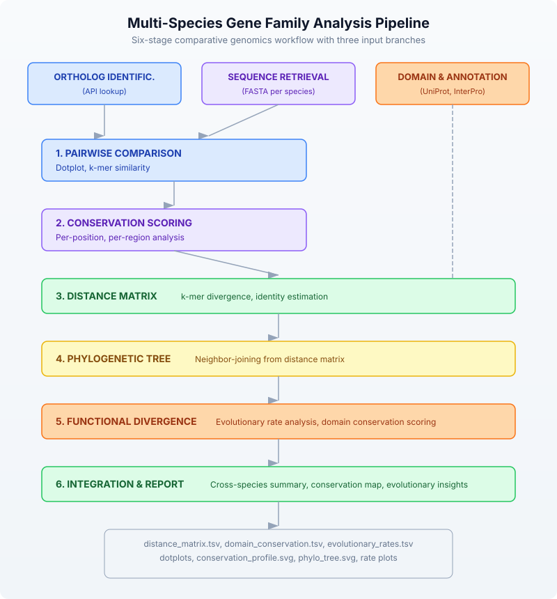
Section 1: Why Comparative Genomics?
Every gene in your genome has a history. Some genes appeared billions of years ago in single-celled organisms and still perform the same function today. Others are recent innovations found only in mammals or primates. The degree to which a gene is conserved across species tells you how important it is — and how long it has been important.
Consider TP53, the “guardian of the genome.” This gene encodes the p53 protein, which detects DNA damage and triggers either repair or cell death. Mutations in TP53 are found in over half of all human cancers. But p53 is not a human invention. Orthologs exist in mice, zebrafish, fruit flies, and even sea anemones. The DNA-binding domain — the part that recognizes damaged DNA — has been conserved for over 800 million years.
What conservation tells us
CONSERVATION AND FUNCTION
=========================
High conservation (>80% identity across species)
→ Strong purifying selection
→ Critical function
→ Mutations here are likely deleterious
→ Good drug targets (conserved mechanism)
Moderate conservation (40-80% identity)
→ Functional core preserved
→ Some adaptation to species-specific needs
→ Interesting for studying functional divergence
Low conservation (<40% identity)
→ Rapid evolution or relaxed constraint
→ May have diverged in function
→ Species-specific adaptations
Absent in some lineages
→ Gene loss or lineage-specific innovation
→ Alternative pathways may exist
The species in our analysis
For this capstone, we will compare TP53 orthologs across eight species spanning approximately 800 million years of evolution:
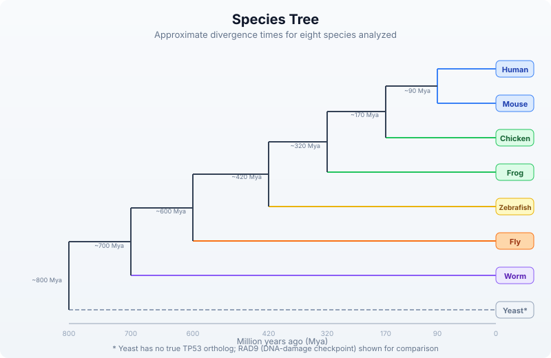
Section 2: Gathering Ortholog Information
Before retrieving sequences, we need to identify the orthologous genes in each species. In a real analysis, you would query Ensembl Compara or NCBI’s orthologs database. Here we demonstrate the API calls, then work with our pre-generated synthetic data.
let human_gene = ensembl_gene("ENSG00000141510")
println("Human TP53:")
println(" Symbol: " + human_gene.display_name)
println(" Biotype: " + human_gene.biotype)
println(" Description: " + human_gene.description)
let uniprot_info = uniprot_entry("P04637")
println("UniProt P04637 (human p53):")
println(" Protein name: " + uniprot_info.protein_name)
println(" Length: " + str(uniprot_info.length) + " aa")
println(" Organism: " + uniprot_info.organism)
For our offline analysis, init.bl generates realistic synthetic sequences for all eight species. Each sequence has been modeled with appropriate divergence: closely related species share more identity, distant species share less, and the DNA-binding domain is highly conserved in all vertebrate orthologs.
Section 3: Sequence Retrieval and Initial Assessment
Let us begin the analysis. First, we load all ortholog sequences and examine their basic properties.
let orthologs = read_fasta("data/orthologs.fasta")
let species_info = read_tsv("data/species_info.tsv")
let seq_table = orthologs |> map(|seq| {
let name = seq.id
let info = species_info |> filter(|s| s.seq_id == name)
let row_info = info[0]
{
species: row_info.common_name,
seq_id: name,
length_aa: len(seq.sequence),
gc: gc_content(seq.sequence)
}
}) |> to_table()
println("=== Ortholog Sequence Summary ===")
println(seq_table)
Notice how the sequence lengths vary across species. Vertebrate p53 orthologs are typically 350–400 amino acids long, while invertebrate homologs can be shorter (the fly p53 is ~385 aa) or structurally different. The yeast analog (RAD9) is much larger because it is not a true ortholog — it convergently evolved a similar DNA-damage checkpoint function.
Amino acid composition
Different organisms can have subtly different amino acid preferences. Let us measure the composition of key residues:
fn aa_frequency(sequence, residue) {
let count = sequence |> split("") |> filter(|c| c == residue) |> len()
round(float(count) / float(len(sequence)) * 100.0, 2)
}
let key_residues = ["L", "S", "P", "G", "R", "K"]
let composition = orthologs |> map(|seq| {
let info = species_info |> filter(|s| s.seq_id == seq.id)
let row = { species: info[0].common_name }
key_residues |> each(|r| {
row[r] = aa_frequency(seq.sequence, r)
})
row
}) |> to_table()
println("=== Amino Acid Composition (%) ===")
println(composition)
Section 4: Pairwise Sequence Comparison
Now we compare sequences pairwise. BioLang provides two built-in tools for this: dotplots for visual comparison and k-mer analysis for quantitative similarity.
Dotplot visualization
A dotplot places one sequence along each axis and marks positions where residues match. Conserved regions appear as diagonal lines. Insertions, deletions, and rearrangements break the diagonal.
let human_seq = orthologs |> filter(|s| contains(s.id, "human")) |> map(|s| s.sequence)
let mouse_seq = orthologs |> filter(|s| contains(s.id, "mouse")) |> map(|s| s.sequence)
dotplot(human_seq[0], mouse_seq[0], "data/output/dotplot_human_mouse.svg")
For closely related species (human vs. mouse, ~90 Mya divergence), you will see a strong diagonal line — high conservation across the full length. Let us also compare human to a distant species:
let fly_seq = orthologs |> filter(|s| contains(s.id, "fly")) |> map(|s| s.sequence)
dotplot(human_seq[0], fly_seq[0], "data/output/dotplot_human_fly.svg")
The human-fly dotplot shows a fragmented diagonal. The DNA-binding domain (approximately residues 100–290 in human p53) still shows conservation, but the N-terminal transactivation domain and C-terminal regulatory domain have diverged substantially.
K-mer based similarity
For quantitative comparison, we use k-mer overlap. Two sequences that share many k-mers are similar; those that share few are divergent. This does not require alignment — it is an alignment-free similarity measure.
fn kmer_similarity(seq_a, seq_b, k) {
let kmers_a = kmers(seq_a, k)
let kmers_b = kmers(seq_b, k)
let set_a = kmers_a |> sort() |> filter(|x| true)
let set_b = kmers_b |> sort() |> filter(|x| true)
let shared = set_a |> filter(|kmer| set_b |> filter(|b| b == kmer) |> len() > 0) |> len()
let total = len(set_a) + len(set_b) - shared
round(float(shared) / float(total), 4)
}
let human_protein = human_seq[0]
let similarities = orthologs |> map(|seq| {
let info = species_info |> filter(|s| s.seq_id == seq.id)
{
species: info[0].common_name,
kmer3_similarity: kmer_similarity(human_protein, seq.sequence, 3),
kmer5_similarity: kmer_similarity(human_protein, seq.sequence, 5)
}
}) |> to_table() |> sort_by("kmer5_similarity", "desc")
println("=== K-mer Similarity to Human TP53 ===")
println(similarities)
The k-mer similarity values should decrease with evolutionary distance: mouse > chicken > frog > zebrafish > fly > worm > yeast. The 5-mer similarity drops faster than 3-mer because longer k-mers are more sensitive to sequence divergence.
Section 5: Conservation Scoring
We can estimate position-specific conservation without a formal multiple sequence alignment by examining which residues are shared across species at corresponding positions. This is an approximation — true conservation scoring requires alignment — but it reveals the pattern: the DNA-binding domain is the most conserved region.
Sliding window conservation
fn window_identity(sequences, window_size) {
let ref_seq = sequences[0]
let ref_len = len(ref_seq)
let n_seqs = len(sequences)
let n_windows = ref_len - window_size + 1
range(0, n_windows) |> map(|start| {
let end_pos = start + window_size
let ref_chars = ref_seq |> split("")
let matches = range(start, end_pos) |> map(|pos| {
let ref_char = ref_chars[pos]
let match_count = range(1, n_seqs) |> map(|si| {
let other = sequences[si] |> split("")
let other_len = len(other)
let result = 0
if pos < other_len {
if other[pos] == ref_char {
result = 1
}
}
result
}) |> sum()
float(match_count) / float(n_seqs - 1)
}) |> mean()
{
position: start + window_size / 2,
conservation: round(matches, 4)
}
})
}
let vertebrate_seqs = orthologs
|> filter(|s| !contains(s.id, "fly") && !contains(s.id, "worm") && !contains(s.id, "yeast"))
|> map(|s| s.sequence)
let conservation = window_identity(vertebrate_seqs, 10)
let cons_table = conservation |> to_table()
line(cons_table, "position", "conservation", "data/output/conservation_profile.svg")
Identifying conserved domains
The conservation profile reveals peaks and valleys. Let us identify the highly conserved regions:
let high_cons = conservation |> filter(|w| w.conservation > 0.7)
let low_cons = conservation |> filter(|w| w.conservation < 0.3)
println("=== Conservation Summary (vertebrates, window=10) ===")
println("Highly conserved positions (>70%): " + str(len(high_cons)))
println("Poorly conserved positions (<30%): " + str(len(low_cons)))
println("Overall mean conservation: " + str(round(conservation |> map(|w| w.conservation) |> mean(), 4)))
let domain_regions = [
{ name: "N-terminal TAD", start: 0, end_pos: 60 },
{ name: "Proline-rich", start: 60, end_pos: 95 },
{ name: "DNA-binding", start: 95, end_pos: 290 },
{ name: "Tetramerization", start: 320, end_pos: 360 },
{ name: "C-terminal reg.", start: 360, end_pos: 393 }
]
let domain_cons = domain_regions |> map(|d| {
let region = conservation |> filter(|w| w.position >= d.start && w.position < d.end_pos)
let avg = region |> map(|w| w.conservation) |> mean()
{
domain: d.name,
start: d.start,
end_pos: d.end_pos,
mean_conservation: round(avg, 4),
n_positions: len(region)
}
}) |> to_table()
println("=== Domain Conservation Scores ===")
println(domain_cons)
You should see that the DNA-binding domain (residues 95–290) has the highest conservation score, followed by the tetramerization domain. The N-terminal transactivation domain and C-terminal regulatory domain are less conserved — they interact with species-specific partner proteins that have co-evolved.
Section 6: Domain Architecture Comparison
Beyond conservation at the sequence level, we can compare the domain architecture — which functional modules are present in each species’ ortholog.
let domain_annotations = read_tsv("data/domain_annotations.tsv")
let architecture = species_info |> map(|sp| {
let domains = domain_annotations |> filter(|d| d.seq_id == sp.seq_id)
let domain_list = domains |> map(|d| d.domain_name) |> join(", ")
let n_domains = len(domains)
{
species: sp.common_name,
n_domains: n_domains,
domains: domain_list,
total_length: sp.seq_length
}
}) |> to_table()
println("=== Domain Architecture Comparison ===")
println(architecture)
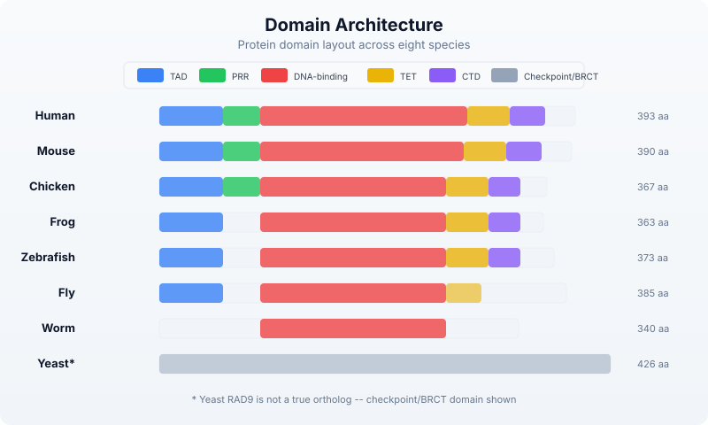
The key observation: the DNA-binding domain is present in all animal orthologs. The tetramerization domain is conserved in vertebrates and partially in the fly. The proline-rich region is a mammalian/bird innovation. This pattern matches what we know about p53 evolution — the DNA-binding function is ancient, while regulatory complexity was added over time.
Section 7: Building a Distance Matrix
To construct a phylogenetic tree, we need a distance matrix. We will use k-mer divergence as our distance metric. This is an alignment-free approach that works well for moderately divergent sequences.
fn kmer_distance(seq_a, seq_b, k) {
let sim = kmer_similarity(seq_a, seq_b, k)
round(1.0 - sim, 4)
}
let species_names = orthologs |> map(|s| {
let info = species_info |> filter(|sp| sp.seq_id == s.id)
info[0].common_name
})
let sequences = orthologs |> map(|s| s.sequence)
let n = len(sequences)
let dist_rows = range(0, n) |> map(|i| {
let row = { species: species_names[i] }
range(0, n) |> each(|j| {
row[species_names[j]] = kmer_distance(sequences[i], sequences[j], 4)
})
row
}) |> to_table()
println("=== Distance Matrix (4-mer divergence) ===")
println(dist_rows)
write_tsv(dist_rows, "data/output/distance_matrix.tsv")
The distance matrix should reflect the known evolutionary relationships: human-mouse distance is smallest, human-yeast is largest. If the distances do not match the known species tree, it may indicate convergent evolution, horizontal gene transfer, or (in our case) limitations of alignment-free methods on very divergent sequences.
Section 8: Phylogenetic Tree Construction
BioLang provides phylo_tree() for building a simple neighbor-joining tree from a distance matrix. This is a good first approximation — for publication-quality trees, you would use external tools like RAxML, IQ-TREE, or MEGA.
let labels = species_names
let matrix = range(0, n) |> map(|i| {
range(0, n) |> map(|j| {
kmer_distance(sequences[i], sequences[j], 4)
})
})
phylo_tree(labels, matrix, "data/output/phylo_tree.svg")
Honesty note: The
phylo_tree()builtin implements a basic neighbor-joining algorithm. For real research, you would export the distance matrix and use dedicated phylogenetics software (RAxML, IQ-TREE, BEAST, MrBayes) that supports bootstrapping, model selection, and Bayesian inference. BioLang is designed for data preparation and exploratory analysis, not as a replacement for specialized phylogenetic tools.
Interpreting the tree
The tree should group species according to their known evolutionary relationships:
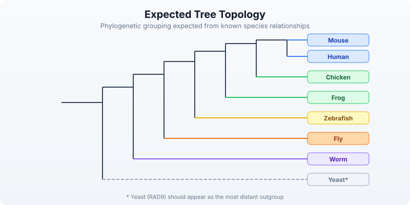
If the tree topology matches the known species tree, the gene evolved vertically — passed from parent to offspring without lateral transfer. Deviations could indicate gene duplication, loss, or accelerated evolution in a particular lineage.
Section 9: Evolutionary Rate Analysis
Not all parts of a protein evolve at the same rate. Functionally critical residues are under strong purifying selection (slow evolution), while less important regions accumulate mutations freely. We can measure this by comparing the rate of change across domains.
fn domain_divergence(seqs, sp_info, domain_start, domain_end) {
let ref_seq = seqs[0] |> split("")
range(1, len(seqs)) |> map(|i| {
let other = seqs[i] |> split("")
let positions = range(domain_start, min([domain_end, len(ref_seq), len(other)]))
let mismatches = positions |> filter(|p| ref_seq[p] != other[p]) |> len()
let total = len(positions)
let info = sp_info |> filter(|s| s.seq_id == (orthologs[i]).id)
{
species: info[0].common_name,
divergence_mya: float(info[0].divergence_mya),
mismatches: mismatches,
total_positions: total,
substitution_rate: round(float(mismatches) / float(total), 4)
}
})
}
let dbd_rates = domain_divergence(sequences, species_info, 95, 290)
let tad_rates = domain_divergence(sequences, species_info, 0, 60)
let rate_comparison = range(0, len(dbd_rates)) |> map(|i| {
let dbd = dbd_rates[i]
let tad = tad_rates[i]
{
species: dbd.species,
divergence_mya: dbd.divergence_mya,
dbd_rate: dbd.substitution_rate,
tad_rate: tad.substitution_rate,
ratio: round(tad.substitution_rate / (dbd.substitution_rate + 0.001), 2)
}
}) |> to_table()
println("=== Evolutionary Rate: DNA-binding vs Transactivation Domain ===")
println(rate_comparison)
The ratio column tells the story. If the TAD evolves 2–3x faster than the DBD, the DNA-binding domain is under much stronger selective constraint. This is exactly what decades of p53 research have shown: mutations in the DNA-binding domain cause cancer, while the transactivation domain tolerates more variation.
let rate_table = rate_comparison
scatter(rate_table, "divergence_mya", "dbd_rate", "data/output/rate_dbd.svg")
scatter(rate_table, "divergence_mya", "tad_rate", "data/output/rate_tad.svg")
Section 10: Integrating External Data Sources
A complete comparative analysis draws on multiple databases. Let us demonstrate how BioLang connects to external resources for the human TP53 gene.
let gene = ncbi_gene("7157")
println("=== NCBI Gene: TP53 ===")
println(" Official symbol: " + gene.name)
println(" Description: " + gene.description)
let pathways = reactome_pathways("TP53")
println("=== Reactome Pathways ===")
pathways |> each(|p| {
println(" " + p.stId + ": " + p.displayName)
})
let go = go_annotations("P04637")
println("=== GO Annotations (first 10) ===")
let first_10 = range(0, min([10, len(go)])) |> map(|i| go[i])
first_10 |> each(|a| {
println(" " + a.goId + " " + a.goName + " [" + a.goAspect + "]")
})
let network = string_network(["TP53", "MDM2", "CDKN1A", "BAX", "BCL2"])
println("=== STRING Network (TP53 + partners) ===")
println(" Interactions found: " + str(len(network)))
let pdb = pdb_entry("1TSR")
println("=== PDB Structure 1TSR ===")
println(" Title: " + pdb.struct.title)
These external queries provide context that pure sequence analysis cannot: which pathways the gene participates in, which proteins it interacts with, what its 3D structure looks like, and what biological processes it governs. In a real study, you would integrate all of this into a comprehensive report.
Section 11: Complete Pipeline
Here is the full analysis assembled into a single, clean pipeline. This is what scripts/analysis.bl contains — load data, compare sequences, score conservation, build a tree, measure evolutionary rates, and produce a summary report.
let orthologs = read_fasta("data/orthologs.fasta")
let species_info = read_tsv("data/species_info.tsv")
let domain_annotations = read_tsv("data/domain_annotations.tsv")
let species_names = orthologs |> map(|s| {
let info = species_info |> filter(|sp| sp.seq_id == s.id)
info[0].common_name
})
let sequences = orthologs |> map(|s| s.sequence)
let n = len(sequences)
fn kmer_similarity(seq_a, seq_b, k) {
let kmers_a = kmers(seq_a, k)
let kmers_b = kmers(seq_b, k)
let set_a = kmers_a |> sort() |> filter(|x| true)
let set_b = kmers_b |> sort() |> filter(|x| true)
let shared = set_a |> filter(|kmer| set_b |> filter(|b| b == kmer) |> len() > 0) |> len()
let total = len(set_a) + len(set_b) - shared
round(float(shared) / float(total), 4)
}
fn kmer_distance(seq_a, seq_b, k) {
round(1.0 - kmer_similarity(seq_a, seq_b, k), 4)
}
let seq_summary = orthologs |> map(|seq| {
let info = species_info |> filter(|s| s.seq_id == seq.id)
{
species: info[0].common_name,
length_aa: len(seq.sequence),
divergence_mya: info[0].divergence_mya
}
}) |> to_table()
write_tsv(seq_summary, "data/output/sequence_summary.tsv")
let human_protein = sequences[0]
let sim_table = orthologs |> map(|seq| {
let info = species_info |> filter(|s| s.seq_id == seq.id)
{
species: info[0].common_name,
kmer3_sim: kmer_similarity(human_protein, seq.sequence, 3),
kmer5_sim: kmer_similarity(human_protein, seq.sequence, 5)
}
}) |> to_table() |> sort_by("kmer5_sim", "desc")
write_tsv(sim_table, "data/output/similarity_table.tsv")
dotplot(sequences[0], sequences[1], "data/output/dotplot_human_mouse.svg")
dotplot(sequences[0], sequences[5], "data/output/dotplot_human_fly.svg")
let dist_matrix = range(0, n) |> map(|i| {
let row = { species: species_names[i] }
range(0, n) |> each(|j| {
row[species_names[j]] = kmer_distance(sequences[i], sequences[j], 4)
})
row
}) |> to_table()
write_tsv(dist_matrix, "data/output/distance_matrix.tsv")
let labels = species_names
let matrix = range(0, n) |> map(|i| {
range(0, n) |> map(|j| {
kmer_distance(sequences[i], sequences[j], 4)
})
})
phylo_tree(labels, matrix, "data/output/phylo_tree.svg")
let domain_regions = [
{ name: "N-terminal_TAD", start: 0, end_pos: 60 },
{ name: "Proline-rich", start: 60, end_pos: 95 },
{ name: "DNA-binding", start: 95, end_pos: 290 },
{ name: "Tetramerization", start: 320, end_pos: 360 },
{ name: "C-terminal_reg", start: 360, end_pos: 393 }
]
fn window_identity(seqs, window_size) {
let ref_seq = seqs[0]
let ref_len = len(ref_seq)
let n_seqs = len(seqs)
let n_windows = ref_len - window_size + 1
range(0, n_windows) |> map(|start| {
let end_val = start + window_size
let ref_chars = ref_seq |> split("")
let matches = range(start, end_val) |> map(|pos| {
let ref_char = ref_chars[pos]
let match_count = range(1, n_seqs) |> map(|si| {
let other = seqs[si] |> split("")
let result = 0
if pos < len(other) {
if other[pos] == ref_char {
result = 1
}
}
result
}) |> sum()
float(match_count) / float(n_seqs - 1)
}) |> mean()
{ position: start + window_size / 2, conservation: round(matches, 4) }
})
}
let vertebrate_seqs = orthologs
|> filter(|s| !contains(s.id, "fly") && !contains(s.id, "worm") && !contains(s.id, "yeast"))
|> map(|s| s.sequence)
let conservation = window_identity(vertebrate_seqs, 10)
let cons_table = conservation |> to_table()
line(cons_table, "position", "conservation", "data/output/conservation_profile.svg")
let domain_cons = domain_regions |> map(|d| {
let region = conservation |> filter(|w| w.position >= d.start && w.position < d.end_pos)
let avg = region |> map(|w| w.conservation) |> mean()
{
domain: d.name,
start: d.start,
end_pos: d.end_pos,
mean_conservation: round(avg, 4)
}
}) |> to_table()
write_tsv(domain_cons, "data/output/domain_conservation.tsv")
let arch_table = species_info |> map(|sp| {
let domains = domain_annotations |> filter(|d| d.seq_id == sp.seq_id)
{
species: sp.common_name,
n_domains: len(domains),
domains: domains |> map(|d| d.domain_name) |> join(", "),
seq_length: sp.seq_length
}
}) |> to_table()
write_tsv(arch_table, "data/output/domain_architecture.tsv")
fn domain_divergence(seqs, sp_info, d_start, d_end) {
let ref_seq = seqs[0] |> split("")
range(1, len(seqs)) |> map(|i| {
let other = seqs[i] |> split("")
let positions = range(d_start, min([d_end, len(ref_seq), len(other)]))
let mismatches = positions |> filter(|p| ref_seq[p] != other[p]) |> len()
let total = len(positions)
let info = sp_info |> filter(|s| s.seq_id == (orthologs[i]).id)
{
species: info[0].common_name,
divergence_mya: float(info[0].divergence_mya),
sub_rate: round(float(mismatches) / float(total), 4)
}
})
}
let dbd = domain_divergence(sequences, species_info, 95, 290)
let tad = domain_divergence(sequences, species_info, 0, 60)
let evo_rates = range(0, len(dbd)) |> map(|i| {
{
species: dbd[i].species,
divergence_mya: dbd[i].divergence_mya,
dbd_rate: dbd[i].sub_rate,
tad_rate: tad[i].sub_rate,
ratio: round(tad[i].sub_rate / (dbd[i].sub_rate + 0.001), 2)
}
}) |> to_table()
write_tsv(evo_rates, "data/output/evolutionary_rates.tsv")
scatter(evo_rates, "divergence_mya", "dbd_rate", "data/output/rate_dbd.svg")
scatter(evo_rates, "divergence_mya", "tad_rate", "data/output/rate_tad.svg")
let summary_lines = [
"=== Multi-Species TP53 Gene Family Analysis ===",
"",
"Species analyzed: " + str(n),
"Vertebrate orthologs: " + str(len(vertebrate_seqs)),
"",
"Sequence lengths (aa):",
" Min: " + str(seq_summary |> select("length_aa") |> map(|r| r.length_aa) |> min()),
" Max: " + str(seq_summary |> select("length_aa") |> map(|r| r.length_aa) |> max()),
" Mean: " + str(round(seq_summary |> select("length_aa") |> map(|r| float(r.length_aa)) |> mean(), 1)),
"",
"Domain conservation (vertebrates):",
" DNA-binding domain: " + str((domain_cons |> filter(|r| r.domain == "DNA-binding"))[0].mean_conservation),
" Tetramerization: " + str((domain_cons |> filter(|r| r.domain == "Tetramerization"))[0].mean_conservation),
" N-terminal TAD: " + str((domain_cons |> filter(|r| r.domain == "N-terminal_TAD"))[0].mean_conservation),
"",
"Evolutionary rate ratio (TAD/DBD):",
" Mean: " + str(round(evo_rates |> map(|r| float(r.ratio)) |> mean(), 2)),
" (>1.0 means TAD evolves faster than DBD)",
"",
"Output files:",
" data/output/sequence_summary.tsv",
" data/output/similarity_table.tsv",
" data/output/distance_matrix.tsv",
" data/output/domain_conservation.tsv",
" data/output/domain_architecture.tsv",
" data/output/evolutionary_rates.tsv",
" data/output/dotplot_human_mouse.svg",
" data/output/dotplot_human_fly.svg",
" data/output/conservation_profile.svg",
" data/output/phylo_tree.svg",
" data/output/rate_dbd.svg",
" data/output/rate_tad.svg",
" data/output/summary.txt"
]
write_lines(summary_lines, "data/output/summary.txt")
Section 12: What This Pipeline Does Not Do (And What You Would Add)
This capstone demonstrates the structure and logic of comparative genomics. But honest science requires acknowledging limitations:
What we did:
- Alignment-free sequence comparison (k-mer similarity)
- Position-based conservation scoring (approximate)
- Neighbor-joining tree from k-mer distances
- Domain architecture comparison
- Evolutionary rate analysis across domains
What a production analysis would add:
- Multiple sequence alignment (MAFFT, MUSCLE, Clustal Omega) — essential for accurate conservation scoring and phylogenetics
- Substitution models (JTT, WAG, LG for proteins) — correct for multiple hits at the same position
- Maximum likelihood or Bayesian trees (RAxML, IQ-TREE, MrBayes) — more accurate than neighbor-joining
- Bootstrap support — confidence values for tree branches
- dN/dS analysis (PAML, HyPhy) — distinguish positive selection from purifying selection
- Synteny analysis — verify orthology by checking genomic context
- Ancestral sequence reconstruction — infer what the ancestral protein looked like
BioLang is designed to handle the data preparation, exploratory analysis, and visualization steps of this workflow. For the statistically rigorous steps, you would export your data and call external tools, then import the results back for interpretation and visualization.
Exercises
Exercise 1: Add a Species
Add a ninth species to the analysis — the elephant shark (Callorhinchus milii), which diverged from humans approximately 450 Mya. Generate a synthetic sequence with appropriate divergence (between zebrafish and frog), add it to orthologs.fasta and species_info.tsv, and re-run the pipeline. Does the tree place it correctly between zebrafish and frog?
Exercise 2: Domain-Specific Trees
Instead of building one tree from the full-length protein, build separate trees for the DNA-binding domain only and the transactivation domain only. Extract the relevant subsequences, compute distance matrices for each, and generate two trees. Do the topologies agree? If not, what might explain the disagreement?
Exercise 3: Conservation Heatmap
Create a heatmap where rows are species and columns are sequence positions (binned into 20-residue windows). The cell values are the fraction of residues matching the human reference in each window. Use heatmap() to visualize. Which domains stand out as dark bands of high conservation?
Exercise 4: K-mer Spectrum Analysis
For each species, compute the full 3-mer frequency spectrum (all possible amino acid 3-mers). Calculate the Euclidean distance between the human spectrum and each other species’ spectrum. Does this distance correlate with known divergence times? Plot divergence time (x-axis) versus spectral distance (y-axis) and fit a trend.
Key Takeaways
-
Conservation signals function. Regions that remain unchanged across hundreds of millions of years of evolution are almost certainly essential.
-
Alignment-free methods provide rapid first estimates. K-mer similarity and k-mer distance are fast, alignment-free alternatives for exploratory analysis, but they are less accurate than alignment-based methods for divergent sequences.
-
Domain architecture is as important as sequence identity. Two proteins can share only 30% sequence identity but have identical domain architecture — and perform the same function.
-
Evolutionary rates vary within a protein. Functional cores (like the DNA-binding domain) evolve slowly; regulatory regions (like transactivation domains) evolve faster. This differential rate is a strong signal of which parts are functionally critical.
-
Phylogenetics requires specialized tools for rigor. BioLang builds neighbor-joining trees for exploration, but publication-quality phylogenetics requires maximum likelihood or Bayesian methods with proper substitution models and bootstrap support.
-
Integration across databases is essential. No single database tells the whole story. Combining sequence data (NCBI/Ensembl), protein annotations (UniProt), pathways (Reactome/KEGG), interactions (STRING), and structures (PDB) gives a complete picture.
Congratulations — You Have Completed 30 Days of Practical Bioinformatics!
You started thirty days ago with a question: how do you make sense of biological data? You have now answered it — not with a single technique, but with a toolkit.
Here is what you have built over the past 30 days:
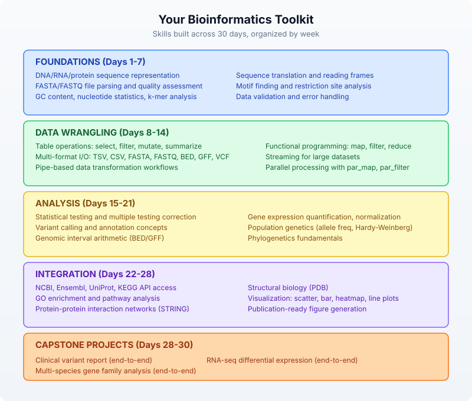
What comes next
This book taught you the fundamentals. Real bioinformatics is broader, deeper, and messier. Here are directions to explore:
Expand your biological scope:
- Metagenomics — analyzing microbial communities from environmental samples
- Single-cell RNA-seq — resolving gene expression at the level of individual cells
- CRISPR screen analysis — identifying gene function through systematic knockouts
- Epigenomics — studying DNA methylation and histone modifications
- Structural bioinformatics — predicting and analyzing protein 3D structures
Deepen your computational skills:
- Machine learning for genomics (classification, clustering, deep learning)
- Cloud computing for large-scale analyses (AWS, GCP, Azure)
- Workflow managers (Nextflow, Snakemake, WDL) for reproducible pipelines
- Database design for biological data
- Containerization (Docker, Singularity) for reproducible environments
Contribute to the community:
- Publish your analysis pipelines as BioLang plugins
- Share scripts and workflows on GitHub
- Contribute to open-source bioinformatics tools
- Write up your analyses as reproducible notebooks
- Mentor others who are starting their bioinformatics journey
The field moves fast. New sequencing technologies, new analytical methods, and new biological questions emerge constantly. But the core skills you have learned — reading data, transforming it, testing hypotheses, visualizing results, and integrating across sources — will serve you regardless of what technology comes next.
Welcome to bioinformatics. The data is waiting.
This concludes “Practical Bioinformatics in 30 Days.” Thank you for reading.
Appendix A: Installation and Setup
This appendix walks you through installing everything you need for this book: BioLang itself, plus the optional Python and R environments for running comparison scripts.
Installing BioLang
macOS and Linux
Open a terminal and run the installer:
curl -sSf https://biolang.org/install.sh | sh
This downloads the latest release binary and installs it to ~/.biolang/bin/. The installer adds this directory to your PATH automatically. You may need to restart your terminal or run source ~/.bashrc (or source ~/.zshrc on macOS) for the change to take effect.
To verify the installation:
bl --version
You should see output like:
biolang 0.1.0
Windows
Open PowerShell and run:
irm https://biolang.org/install.ps1 | iex
This installs bl.exe to %USERPROFILE%\.biolang\bin\ and adds it to your user PATH. You may need to restart your terminal.
Alternatively, if you have Scoop installed:
scoop install biolang
Building from Source
If you prefer to build from source, you need Rust 1.75 or later:
# Install Rust if you don't have it
curl --proto '=https' --tlsv1.2 -sSf https://sh.rustup.rs | sh
# Clone and build
git clone https://github.com/bioras/biolang.git
cd biolang
cargo build --release
# The binary is at target/release/bl
The bl CLI
BioLang provides a single command-line tool called bl with several subcommands:
bl repl — Interactive Mode
Launches the Read-Eval-Print Loop where you can type BioLang expressions and see results immediately:
bl repl
Or simply:
bl
Running bl with no arguments starts the REPL by default. This is the best way to experiment with new concepts.
REPL commands (type these at the bl> prompt):
| Command | Description |
|---|---|
:help | Show available REPL commands |
:env | Display all variables in the current environment |
:reset | Clear the environment and start fresh |
:load file.bl | Load and execute a script file |
:save file.bl | Save the current session to a file |
:time expr | Measure execution time of an expression |
:type expr | Show the type of an expression |
:profile expr | Profile an expression’s execution |
:plugins | List available plugins |
:history | Show command history |
:plot | Show the last generated plot |
bl run — Execute a Script
Runs a .bl script file:
bl run my_script.bl
You can pass arguments to the script:
bl run analysis.bl input.fastq output.csv
bl init — Create a New Project
Scaffolds a new BioLang project directory:
bl init my-project
This creates:
my-project/
main.bl # Entry point
data/ # Data directory
results/ # Output directory
bl lsp — Language Server
Starts the Language Server Protocol server for editor integration:
bl lsp
You typically do not run this directly — your editor starts it automatically.
bl plugins — Plugin Management
Lists or manages BioLang plugins:
bl plugins # List installed plugins
bl plugins install # Install a plugin
Setting Up Python (Optional)
Python comparison scripts require Python 3.8 or later. Most exercises use BioPython.
Check Your Python Installation
python3 --version # macOS/Linux
python --version # Windows
Create a Virtual Environment
We recommend using a virtual environment so the book’s dependencies do not interfere with your system Python:
# Create the environment
python3 -m venv bio-env
# Activate it
source bio-env/bin/activate # macOS/Linux
bio-env\Scripts\activate # Windows PowerShell
Install Required Packages
pip install biopython pandas numpy scipy matplotlib seaborn requests
These packages cover all the Python comparison scripts in the book:
| Package | Used For |
|---|---|
biopython | Sequence I/O, NCBI access, BLAST |
pandas | Table operations, CSV handling |
numpy | Numerical computing |
scipy | Statistical tests |
matplotlib | Plotting |
seaborn | Statistical visualization |
requests | API access |
Verify Python Setup
python3 -c "from Bio import SeqIO; print('BioPython OK')"
python3 -c "import pandas; print('Pandas OK')"
Setting Up R (Optional)
R comparison scripts require R 4.0 or later with Bioconductor packages.
Install R
- macOS: Download from https://cran.r-project.org/ or use
brew install r - Linux: Use your package manager (
sudo apt install r-baseon Ubuntu/Debian) - Windows: Download from https://cran.r-project.org/
Install Required Packages
Open an R console (R or Rscript) and run:
# CRAN packages
install.packages(c("tidyverse", "ggplot2", "data.table", "jsonlite", "httr"))
# Bioconductor packages
if (!requireNamespace("BiocManager", quietly = TRUE))
install.packages("BiocManager")
BiocManager::install(c("Biostrings", "GenomicRanges", "DESeq2",
"VariantAnnotation", "Rsamtools"))
Verify R Setup
Rscript -e 'library(Biostrings); cat("Biostrings OK\n")'
Rscript -e 'library(tidyverse); cat("tidyverse OK\n")'
Editor Setup
You can write BioLang in any text editor, but we recommend Visual Studio Code for the best experience.
VS Code
- Install VS Code
- Open the Extensions panel (
Ctrl+Shift+X/Cmd+Shift+X) - Search for “BioLang” and install the BioLang extension
- The extension provides:
- Syntax highlighting for
.blfiles - Code completion via the language server
- Hover documentation for builtins
- Error diagnostics as you type
- REPL integration
- Syntax highlighting for
Other Editors
Any editor that supports the Language Server Protocol (LSP) can use bl lsp for BioLang support. For editors without LSP support, you will still get a good experience — BioLang syntax is clean enough to read without highlighting.
Environment Variables
Some features in this book require API keys. These are optional — you can complete most exercises without them — but they unlock higher rate limits and additional data sources.
| Variable | Purpose | Required? |
|---|---|---|
NCBI_API_KEY | NCBI E-utilities — increases rate limit from 3 to 10 requests/second | Optional (recommended for Day 9, 24) |
ANTHROPIC_API_KEY | Claude AI integration for Day 26 (AI-Assisted Analysis) | Optional (Day 26 only) |
OPENAI_API_KEY | Alternative LLM provider for Day 26 | Optional (Day 26 only) |
Setting Environment Variables
macOS/Linux — add to your ~/.bashrc or ~/.zshrc:
export NCBI_API_KEY="your-key-here"
export ANTHROPIC_API_KEY="your-key-here"
Then run source ~/.bashrc to apply.
Windows — set in PowerShell or System Settings:
[Environment]::SetEnvironmentVariable("NCBI_API_KEY", "your-key-here", "User")
Getting an NCBI API Key
- Create a free NCBI account at https://www.ncbi.nlm.nih.gov/account/
- Go to Settings > API Key Management
- Click “Create an API Key”
- Copy the key and set it as
NCBI_API_KEY
Getting the Companion Files
The companion files contain all exercise solutions, sample data generators, and comparison scripts.
Option 1: Git Clone
git clone https://github.com/bioras/practical-bioinformatics.git
cd practical-bioinformatics
Option 2: Download ZIP
Download from the book’s website and extract to a directory of your choice.
Directory Structure
After cloning, the companion directory looks like this:
practical-bioinformatics/
days/
day-01/
init.bl
scripts/
expected/
compare.md
day-02/
...
day-30/
...
data/ # Shared sample data
book/ # This book's source
Running a Day’s Setup
Each day has an init.bl script that prepares sample data:
cd days/day-06
bl run init.bl
This creates any necessary test files in the day’s directory. Always run init.bl before starting a day’s exercises.
Verifying Everything Works
Run this quick check to confirm your environment is ready:
# BioLang
bl -e 'println("BioLang: OK")'
# Check REPL
echo ':help' | bl repl
# Python (optional)
python3 -c "from Bio import SeqIO; print('Python: OK')"
# R (optional)
Rscript -e 'cat("R: OK\n")'
If BioLang prints “BioLang: OK”, you are ready to start Day 1.
Troubleshooting
“bl: command not found”
The bl binary is not on your PATH. Add it:
# macOS/Linux
export PATH="$HOME/.biolang/bin:$PATH"
# Add to your shell profile to make it permanent
echo 'export PATH="$HOME/.biolang/bin:$PATH"' >> ~/.bashrc
On Windows, check that %USERPROFILE%\.biolang\bin is in your system PATH.
Permission Denied (macOS)
macOS may block the binary because it was downloaded from the internet:
xattr -d com.apple.quarantine ~/.biolang/bin/bl
Python Package Install Fails
If pip install biopython fails, try:
pip install --upgrade pip
pip install biopython
On Linux, you may need development headers:
sudo apt install python3-dev # Debian/Ubuntu
sudo dnf install python3-devel # Fedora
R Bioconductor Install Fails
Bioconductor packages can take a long time to compile. If installation times out or fails:
# Try installing one at a time
BiocManager::install("Biostrings")
BiocManager::install("GenomicRanges")
On Linux, you may need system libraries:
sudo apt install libcurl4-openssl-dev libxml2-dev libssl-dev # Debian/Ubuntu
Firewall or Proxy Issues
If you are behind a corporate firewall, you may need to configure proxy settings:
export HTTP_PROXY="http://proxy.example.com:8080"
export HTTPS_PROXY="http://proxy.example.com:8080"
Getting Help
If you are stuck:
- Check the BioLang documentation
- Search the GitHub Issues
- Ask in the BioLang community forum
Appendix B: Glossary
This glossary covers the biology, programming, and bioinformatics terms used throughout this book. Each entry references the day(s) where the concept is introduced or used most heavily.
Alignment — The process of arranging two or more sequences to identify regions of similarity. Alignment reveals evolutionary relationships, functional regions, and mutations. Days 11, 12, 20
Allele — One of two or more versions of a gene or genetic variant at a particular position in the genome. For example, a SNP might have a reference allele “A” and an alternate allele “G”. Days 12, 28
Amino acid — The building blocks of proteins. There are 20 standard amino acids, each encoded by one or more three-letter codons in the genetic code. Represented by single-letter codes (e.g., M for methionine, A for alanine). Days 1, 3, 17
Annotation — Metadata attached to a genomic feature — what a region of DNA does, what gene it belongs to, what protein it encodes. Stored in GFF/GTF files. Days 7, 18
API (Application Programming Interface) — A structured way for programs to request data from a service. In bioinformatics, APIs provide programmatic access to databases like NCBI, Ensembl, and UniProt. Days 9, 24
BAM (Binary Alignment Map) — A compressed binary format for storing sequence alignment data. The binary counterpart of SAM. Requires an index (.bai) for random access. Days 7, 12
Base pair (bp) — A single unit of DNA consisting of two complementary nucleotides bonded together (A-T or C-G). Genome sizes are measured in base pairs: the human genome is approximately 3.2 billion bp. Days 1, 3
BED (Browser Extensible Data) — A tab-delimited file format for defining genomic regions. Each line specifies a chromosome, start position, and end position. Uses zero-based, half-open coordinates. Days 7, 18
Bioinformatics — The interdisciplinary field that develops methods and software for understanding biological data, particularly molecular biology data like DNA, RNA, and protein sequences. Day 1
BLAST (Basic Local Alignment Search Tool) — An algorithm for comparing sequences against a database to find similar sequences. One of the most widely used tools in bioinformatics. Day 11
Builtin — A function that is available in BioLang without importing anything. Examples include gc_content, read_fasta, and println. Day 2
Categorical variable — A variable that takes on a limited number of discrete values, such as tissue type or experimental condition. Contrast with continuous variables like expression levels or quality scores. Days 10, 14
Chromosome — A long, continuous piece of DNA containing many genes. Humans have 23 pairs of chromosomes (22 autosomes plus X/Y sex chromosomes). Days 1, 3, 18
Closure — A function that captures variables from its surrounding scope. In BioLang, closures are written as |params| expression. Also called a lambda. Days 4, 6
Codon — A sequence of three nucleotides that encodes a single amino acid (or a stop signal) during translation. For example, ATG encodes methionine and also serves as the start codon. Days 1, 3, 17
Complement — The matching strand of a DNA sequence, determined by base pairing rules: A pairs with T, C pairs with G. The complement of ATGC is TACG. Days 3, 5
Contig — A contiguous sequence of DNA assembled from overlapping reads. Genome assemblies consist of many contigs ordered into scaffolds and chromosomes. Days 11, 20
Control flow — Programming constructs that determine the order of execution: if/else, for loops, while loops. Day 4
Coverage (Depth) — The average number of times each base in the genome is read by sequencing. Higher coverage means higher confidence. Whole-genome sequencing typically targets 30x coverage. Days 6, 12
CRAM — A highly compressed file format for sequence alignments, more space-efficient than BAM. Uses reference-based compression. Day 7
CSV (Comma-Separated Values) — A plain-text tabular file format where columns are separated by commas. Widely used for sharing data between tools and languages. Read in BioLang with read_csv. Days 10, 22
DE (Differential Expression) — The statistical identification of genes that are expressed at significantly different levels between two or more conditions (e.g., tumor vs. normal tissue). Days 13, 29
DNA (Deoxyribonucleic Acid) — The molecule that carries genetic information in all living organisms. Composed of four nucleotide bases: adenine (A), thymine (T), cytosine (C), and guanine (G). Days 1, 3
Enrichment analysis — A statistical method for determining whether a predefined set of genes (e.g., a Gene Ontology category or KEGG pathway) is overrepresented in a list of genes of interest. Day 16
Exome — The portion of the genome that codes for proteins, comprising roughly 1-2% of the total genome. Whole-exome sequencing (WES) targets only these regions. Days 12, 28
Exon — A segment of a gene that is represented in the mature RNA after splicing. Exons contain the coding sequence that is translated into protein. Days 3, 7, 18
False discovery rate (FDR) — A method of correcting for multiple hypothesis testing. When thousands of genes are tested simultaneously, some will appear significant by chance. FDR controls the expected proportion of false positives among the rejected hypotheses. The Benjamini-Hochberg method is the most common FDR correction. Days 14, 16
FASTA — A text-based file format for representing nucleotide or protein sequences. Each entry has a header line starting with > followed by sequence lines. Days 5, 6, 7
FASTQ — An extension of FASTA that includes quality scores for each base. The standard output format of most sequencing instruments. Each record has four lines: header, sequence, separator, and quality string. Days 6, 7, 8
Feature — A defined region of a biological sequence with a specific function or annotation. Features include genes, exons, introns, promoters, and regulatory elements. Stored in GFF/GTF format. Days 7, 18
Fold change — The ratio of expression levels between two conditions. A fold change of 2 means a gene is expressed twice as much in one condition vs. the other. Often reported as log2 fold change. Days 13, 14, 29
Frameshift — A mutation caused by an insertion or deletion of nucleotides that is not a multiple of three, disrupting the reading frame. Frameshifts typically produce a truncated or nonfunctional protein. Days 12, 28
Function — A named, reusable block of code that takes inputs (parameters) and returns an output. In BioLang, defined with let name = fn(params) { body }. Day 4
GC content — The proportion of bases in a DNA sequence that are guanine (G) or cytosine (C). GC content affects DNA stability, gene density, and sequencing bias. Days 1, 2, 5, 6
Gene — A segment of DNA that encodes a functional product, typically a protein or RNA molecule. The human genome contains approximately 20,000 protein-coding genes. Days 1, 3
Gene Ontology (GO) — A standardized vocabulary for describing gene functions across three categories: molecular function, biological process, and cellular component. Used in enrichment analysis. Days 16, 24
Genome — The complete set of DNA in an organism. The human genome is approximately 3.2 billion base pairs. Reference genomes (like GRCh38) serve as the coordinate system for genomic analyses. Days 1, 3
GFF/GTF (General Feature Format / Gene Transfer Format) — File formats for describing genomic features (genes, exons, transcripts) with their coordinates and attributes. GFF3 is the current standard; GTF is a specialized variant used for gene annotations. Days 7, 18
GWAS (Genome-Wide Association Study) — A study that scans the entire genome for statistical associations between genetic variants and traits or diseases. Typically involves thousands to millions of participants. Day 12
Haplotype — A set of genetic variants that are inherited together on the same chromosome. Important for understanding genetic linkage and population structure. Day 12
Higher-Order Function (HOF) — A function that takes another function as an argument or returns a function. map, filter, and reduce are the most common HOFs in BioLang. Days 4, 5, 8
Homolog — A gene related to another gene by shared ancestry. Homologs can be orthologs (separated by speciation) or paralogs (separated by duplication). Day 20
Illumina — The dominant next-generation sequencing technology, producing short reads (typically 100-300 bp) with high accuracy (>99.9%). Most FASTQ files encountered in bioinformatics come from Illumina instruments. Days 1, 6
Indel — An insertion or deletion of one or more bases in a DNA sequence relative to a reference. Indels can cause frameshifts if they are not multiples of three bases. Days 12, 28
Index — A pre-computed data structure that enables fast random access to records within a large file. BAM files use .bai indexes; tabix creates .tbi indexes for VCF and BED files. Without an index, accessing a specific region requires reading the entire file. Days 7, 8
Interval — A genomic region defined by a chromosome, start position, and end position. In BioLang, intervals are a native type created with interval("chr1", 100, 200). Interval arithmetic (intersection, union, subtraction) is fundamental to genomic analysis. Day 18
Intron — A segment of a gene that is removed (spliced out) from the RNA transcript before translation. Introns do not code for protein. Days 3, 7
Isoform — One of several variant forms of a protein, produced by alternative splicing of the same gene. Different isoforms can have distinct functions, tissue distributions, and disease associations. Days 3, 13
k-mer — A subsequence of length k from a larger sequence. k-mer analysis is used for genome assembly, error correction, and sequence comparison without alignment. Days 5, 11
Lambda — See Closure. A shorthand term for an anonymous function. In BioLang: |x| x * 2. Days 4, 5
List — An ordered collection of values. In BioLang, written as [1, 2, 3] or ["A", "B", "C"]. Lists support indexing, slicing, and higher-order functions. Days 4, 5
Locus (plural: Loci) — A specific position or region on a chromosome. Can refer to a single base position (a SNP locus) or a larger region (a gene locus). Days 12, 18
MAF (Minor Allele Frequency) — The frequency of the second most common allele at a given locus in a population. Used to distinguish common variants (MAF > 1%) from rare variants. Days 12, 28
Mapping quality — A score indicating the confidence that a read has been aligned to the correct position in the reference genome. Higher scores indicate more unique mappings. Often on a Phred scale. Days 7, 12
Motif — A short, conserved sequence pattern that has biological significance. Examples include transcription factor binding sites, splice sites, and the Kozak consensus sequence. Days 5, 11, 17
Mutation — A change in the DNA sequence. Mutations include single-base substitutions (SNPs), insertions, deletions, and larger structural changes. Days 1, 12
Normalization — The process of adjusting raw data to account for systematic biases. In RNA-seq, normalization corrects for differences in sequencing depth and gene length. Common methods include TPM, FPKM, and DESeq2’s median-of-ratios. Days 13, 14
Nucleotide — The basic building block of DNA and RNA. DNA nucleotides contain one of four bases (A, T, C, G) plus a sugar and phosphate group. RNA uses uracil (U) instead of thymine (T). Days 1, 3
Null hypothesis — The default assumption in a statistical test — typically that there is no difference between groups or no association between variables. Statistical tests compute the probability (p-value) of the data under this assumption. Day 14
Open Reading Frame (ORF) — A stretch of DNA that begins with a start codon (ATG) and ends with a stop codon (TAA, TAG, or TGA), potentially encoding a protein. Days 5, 17
Ortholog — Genes in different species that evolved from a common ancestral gene through speciation. Orthologs typically retain the same function. Day 20
p-value — The probability of observing a result at least as extreme as the one obtained, assuming the null hypothesis is true. In bioinformatics, p-values are typically adjusted for multiple testing (see FDR). Days 14, 16
Paralog — Genes within the same species that arose from gene duplication. Paralogs may diverge in function over time. Day 20
Pathway — A series of molecular interactions and reactions that lead to a biological outcome. Pathways connect genes, proteins, and metabolites into functional networks. Day 16
PCR (Polymerase Chain Reaction) — A laboratory technique for amplifying specific DNA sequences. Important for bioinformatics because PCR duplicates can bias sequencing results and must be identified and removed. Days 1, 6
Phred score — A logarithmic quality score indicating the probability of a base call being wrong. Phred 20 = 1% error; Phred 30 = 0.1% error; Phred 40 = 0.01% error. Encoded as ASCII characters in FASTQ files. Days 6, 7
Phylogeny — The evolutionary history and relationships among organisms or genes, typically represented as a tree. Phylogenetic analysis uses sequence similarity to infer these relationships. Day 20
Pipe — The |> operator in BioLang that passes the result of one expression as the first argument to the next function. a |> f(b) is equivalent to f(a, b). Days 2, 4
Polymorphism — A variation in the DNA sequence that occurs at a frequency of 1% or greater in a population. Polymorphisms that change a single base are called SNPs. Day 12
Promoter — A region of DNA upstream of a gene where transcription factors bind to initiate gene expression. Promoter analysis can reveal gene regulation patterns. Days 3, 11
Protein — A large molecule made of amino acids, folded into a specific three-dimensional structure. Proteins perform most of the work in cells: catalysis, signaling, transport, and structure. Days 1, 3, 17
Protein domain — A conserved, independently folding structural unit within a protein. Domains often correspond to specific functions (e.g., kinase domains, DNA-binding domains). Databases like Pfam and InterPro catalog known protein domains. Day 17
Quality control (QC) — The process of evaluating raw data for errors, biases, and artifacts before analysis. In sequencing, QC includes checking read quality, adapter contamination, GC bias, and duplication rates. Days 6, 8
Quality score — A numerical value indicating confidence in a measurement. In sequencing, quality scores are Phred-scaled probabilities of error. In variant calling, quality scores indicate confidence in the variant call. Days 6, 12
Read — A single DNA sequence produced by a sequencing instrument. Modern sequencers produce millions to billions of short reads (100-300 bp for Illumina) or longer reads (10,000+ bp for PacBio/Nanopore). Days 6, 7
Record — A data structure with named fields. In BioLang, written as {name: "BRCA1", length: 7088}. Records are used to represent structured data like gene annotations and variant calls. Days 4, 5
Reproducibility — The ability for independent researchers to obtain the same results from the same data using the same analysis methods. Reproducible pipelines record software versions, parameters, and random seeds. Day 22
Reverse complement — The complement of a DNA sequence read in the reverse direction. The reverse complement of 5’-ATGC-3’ is 5’-GCAT-3’. Essential because DNA is double-stranded and sequencing reads can come from either strand. Days 3, 5
Reference genome — A standard representative genome sequence for a species, used as a coordinate system for mapping reads and identifying variants. GRCh38 (hg38) is the current human reference. Days 11, 12
RNA (Ribonucleic Acid) — A single-stranded molecule transcribed from DNA. Messenger RNA (mRNA) carries genetic information from DNA to the ribosome for protein synthesis. Uses uracil (U) instead of thymine (T). Days 1, 3, 13
RNA-seq — A sequencing technology that measures gene expression by sequencing all RNA molecules in a sample. Produces millions of reads that are mapped to a reference genome and counted per gene. Days 13, 29
SAM (Sequence Alignment Map) — A text-based file format for storing sequence alignments. Each line represents a read and its alignment to a reference genome. BAM is the compressed binary equivalent. Days 7, 12
Sequence — An ordered series of nucleotides (DNA/RNA) or amino acids (protein). Sequences are the fundamental data type in bioinformatics. Days 1, 2, 3
SNP (Single Nucleotide Polymorphism) — A variation at a single position in the DNA sequence. SNPs are the most common type of genetic variation, with roughly 4-5 million per human genome. Days 12, 28
Splice site — The boundary between an exon and an intron. Splice sites are recognized by the spliceosome, which removes introns from the pre-mRNA. Mutations at splice sites can disrupt gene expression. Days 3, 7
Strand — The directionality of a DNA or RNA molecule. Double-stranded DNA has a forward (plus/sense) strand and a reverse (minus/antisense) strand. Genes can be located on either strand. Represented as +, -, or . (unknown) in genomic file formats. Days 3, 18
Streaming — Processing data record by record without loading the entire file into memory. Essential for files that exceed available RAM. In BioLang, stream_fastq and stream_fasta return lazy iterators. Days 8, 21
Structural variant (SV) — A genomic variant involving 50 or more base pairs. Includes large insertions, deletions, inversions, duplications, and translocations. Detected by specialized tools that analyze split reads, discordant read pairs, or long reads. Day 12
Table — A two-dimensional data structure with named columns and rows. In BioLang, tables are created with to_table and manipulated with select, where, mutate, summarize, and group_by. Days 5, 10
Transcript — The RNA molecule produced from a gene. A single gene can produce multiple transcripts through alternative splicing, each encoding a different protein isoform. Days 3, 13
Transcriptome — The complete set of RNA transcripts produced by an organism or cell type at a given time. RNA-seq measures the transcriptome to determine which genes are active and at what levels. Day 13
Translation — The process of converting an mRNA sequence into a protein sequence, reading three nucleotides (one codon) at a time. In BioLang, the translate function performs this conversion computationally. Days 1, 3, 17
UTR (Untranslated Region) — Portions of an mRNA molecule that are not translated into protein. The 5’ UTR precedes the start codon; the 3’ UTR follows the stop codon. UTRs regulate mRNA stability, localization, and translation efficiency. Days 3, 18
Variant — A difference between an individual’s genome and the reference genome. Variants include SNPs, indels, structural variants, and copy number variants. Days 12, 28
Variable — A named storage location for a value. In BioLang, variables are declared with let x = value and reassigned with x = new_value. Day 2
VCF (Variant Call Format) — A text-based file format for storing genetic variants. Each line represents a variant with its position, reference allele, alternate allele, quality, and sample-specific genotype information. Days 7, 12, 28
Volcano plot — A scatter plot used to visualize differential expression results, plotting statistical significance (-log10 p-value) against magnitude of change (log2 fold change). Points in the upper-left and upper-right corners represent significantly differentially expressed genes. Days 15, 19, 29
WES (Whole-Exome Sequencing) — Sequencing of only the protein-coding regions (exons) of the genome, representing roughly 1-2% of the total genome. More cost-effective than WGS for finding coding mutations. Days 12, 28
WGS (Whole-Genome Sequencing) — Sequencing of the entire genome, including both coding and non-coding regions. Provides a complete picture but generates much more data than WES. Days 12, 28
Zero-based coordinates — A coordinate system where the first position is numbered 0. BED files use zero-based, half-open coordinates: a region from position 100 to 200 includes base 100 but not base 200. Contrast with one-based coordinates used in GFF and VCF. Days 7, 18
Appendix C: Career Paths in Bioinformatics
Bioinformatics is one of the fastest-growing fields in the life sciences. As sequencing costs continue to drop and biological data continues to grow, the demand for people who can bridge biology and computation has never been higher. This appendix describes the major career paths available to someone with bioinformatics skills, maps which days in this book prepare you for each role, and points you toward resources for further learning.
Career Paths
Bioinformatics Scientist / Computational Biologist
What you do: Design and execute computational analyses of biological data. Develop new algorithms and methods. Publish research papers. Collaborate with experimental biologists to interpret results.
Where you work: Universities, research institutes, genome centers, government labs (NIH, EMBL, Sanger Institute).
Typical tasks: RNA-seq differential expression analysis, variant discovery pipelines, multi-omics integration, phylogenetic analysis, method development.
Key days in this book: Days 11-14 (sequence comparison, variants, RNA-seq, statistics), Days 16-20 (pathway analysis, proteins, intervals, multi-species), Days 28-30 (capstone projects).
Salary range (US): $70,000-$130,000 (academic), $100,000-$180,000 (industry).
Clinical Bioinformatician
What you do: Analyze patient genomic data to support clinical diagnosis and treatment decisions. Interpret variants for pathogenicity. Build and maintain clinical analysis pipelines that must meet regulatory standards.
Where you work: Hospitals, clinical genomics laboratories, diagnostic companies, health systems.
Typical tasks: Clinical variant interpretation, whole-exome/genome analysis, pharmacogenomics, pipeline validation, ACMG variant classification, reporting for clinicians.
Key days in this book: Days 6-7 (sequencing data, file formats), Day 12 (variant calling), Day 22 (reproducible pipelines), Day 25 (error handling), Day 28 (clinical variant report capstone).
Salary range (US): $80,000-$150,000. Board certification (ABMGG) can increase compensation.
Genomics Data Analyst
What you do: Process, analyze, and visualize genomic datasets. You are often the bridge between the sequencing core facility and the researchers who need results. Focus is on applying established methods rather than developing new ones.
Where you work: Core facilities, biotech companies, CROs (contract research organizations), research labs.
Typical tasks: Quality control, alignment, variant calling, RNA-seq quantification, generating reports and figures, training bench scientists on data interpretation.
Key days in this book: Days 6-10 (sequencing data, file formats, large files, databases, tables), Days 13-15 (RNA-seq, statistics, visualization), Day 23 (batch processing).
Salary range (US): $60,000-$110,000.
Research Software Engineer (Bioinformatics)
What you do: Build and maintain the software tools, pipelines, and infrastructure that bioinformaticians use. Focus is on software engineering quality: testing, documentation, performance, reproducibility.
Where you work: Genome centers, large research institutions, bioinformatics software companies, open-source projects.
Typical tasks: Pipeline development (Nextflow, Snakemake, WDL), tool packaging, cloud deployment, database design, API development, CI/CD, containerization.
Key days in this book: Days 21-23 (performance, pipelines, batch processing), Day 25 (error handling), Day 27 (building tools and plugins).
Salary range (US): $90,000-$170,000. Strong software engineering skills command a premium in bioinformatics.
Bioinformatics Core Facility Manager
What you do: Lead a team that provides bioinformatics services to an institution. Manage projects, allocate resources, train staff, select tools and platforms, and ensure quality standards.
Where you work: Universities, medical centers, genome centers.
Typical tasks: Project management, pipeline standardization, staff training, vendor evaluation, budgeting, strategic planning, user support.
Key days in this book: All weeks provide relevant technical foundation. Days 22-25 (pipelines, batch processing, databases, error handling) are particularly relevant for managing production systems.
Salary range (US): $100,000-$160,000.
Pharmaceutical / Biotech Industry
What you do: Apply bioinformatics to drug discovery, development, and clinical trials. Analyze genomic data to identify drug targets, biomarkers, and companion diagnostics. Roles vary widely from hands-on analysis to strategic leadership.
Common titles: Bioinformatics Scientist, Computational Biology Scientist, Principal Scientist, Director of Bioinformatics, Head of Computational Biology.
Where you work: Pharmaceutical companies, biotech startups, precision medicine companies, molecular diagnostics companies.
Typical tasks: Target identification and validation, biomarker discovery, clinical trial genomics, competitive intelligence, multi-omics integration, machine learning for drug response prediction.
Key days in this book: Days 9-16 (databases, tables, variants, RNA-seq, statistics, visualization, pathways), Day 24 (programmatic database access), Days 28-29 (clinical and RNA-seq capstones).
Salary range (US): $100,000-$250,000+. Industry generally pays 30-50% more than academia for equivalent roles.
Academic Research
What you do: Run your own research lab developing new bioinformatics methods and applying them to biological questions. Publish papers, secure grant funding, mentor students, and teach.
Where you work: Universities, independent research institutes.
Path: Typically requires a PhD in bioinformatics, computational biology, or a related field, followed by postdoctoral training. Faculty positions are competitive.
Key days in this book: All 30 days provide the foundation. Academic bioinformatics requires depth in statistics (Day 14), method development (Days 21, 27), and the ability to tackle novel problems.
Skills Matrix
The following table maps the skills developed in each week to the career paths described above:
| Skill Area | Days | Bioinf. Scientist | Clinical | Data Analyst | Software Eng. | Industry |
|---|---|---|---|---|---|---|
| Biology foundations | 1, 3 | Essential | Essential | Important | Helpful | Essential |
| Programming fundamentals | 2, 4, 5 | Essential | Essential | Essential | Essential | Essential |
| Sequencing data & formats | 6, 7 | Essential | Essential | Essential | Important | Important |
| Large-scale processing | 8, 21, 23 | Important | Important | Important | Essential | Important |
| Database access | 9, 24 | Essential | Important | Important | Important | Essential |
| Table manipulation | 10 | Essential | Important | Essential | Helpful | Essential |
| Sequence analysis | 11, 17 | Essential | Important | Important | Helpful | Important |
| Variant analysis | 12, 28 | Essential | Essential | Important | Helpful | Essential |
| RNA-seq & expression | 13, 29 | Essential | Helpful | Essential | Helpful | Essential |
| Statistics | 14 | Essential | Essential | Essential | Helpful | Essential |
| Visualization | 15, 19 | Essential | Important | Essential | Helpful | Essential |
| Pathway analysis | 16 | Essential | Helpful | Helpful | Helpful | Essential |
| Pipelines & reproducibility | 22, 25 | Essential | Essential | Important | Essential | Important |
| AI-assisted analysis | 26 | Important | Helpful | Helpful | Important | Important |
| Tool development | 27 | Important | Helpful | Helpful | Essential | Important |
Emerging Specializations
The bioinformatics job market is evolving rapidly. Several specializations have emerged in recent years:
Single-cell bioinformatics. Single-cell RNA-seq and spatial transcriptomics generate fundamentally different data from bulk methods. Specialists in single-cell analysis are in high demand at research institutes and biotechs working on cell atlases, immunology, and developmental biology.
Clinical genomics and precision medicine. As genomic testing becomes standard clinical care, hospitals need bioinformaticians who can build and validate clinical-grade pipelines, interpret variants according to ACMG guidelines, and work within regulatory frameworks (CAP, CLIA).
Multi-omics integration. Combining genomics, transcriptomics, proteomics, metabolomics, and epigenomics data requires specialized statistical and computational skills. This is particularly relevant in cancer research and drug discovery.
AI/ML for biology. Machine learning applications in protein structure prediction (AlphaFold), drug discovery, and variant interpretation are growing rapidly. Bioinformaticians with ML skills command premium salaries.
Cloud genomics engineering. Large-scale genomic data is increasingly processed on cloud platforms (AWS, GCP, Azure). Specialists who can architect cost-effective, scalable genomic workflows are valuable in both industry and large research consortia.
Day-by-Day Skill Mapping
For a more granular view, here is how each day maps to career-relevant skills:
| Day | Skill Developed | Most Relevant Careers |
|---|---|---|
| 1 | Bioinformatics context | All |
| 2 | BioLang programming | All |
| 3 | Molecular biology | Scientist, Clinical, Industry |
| 4 | Programming fundamentals | All |
| 5 | Data structures | All |
| 6 | Sequencing data | Scientist, Clinical, Analyst |
| 7 | File format literacy | All |
| 8 | Large-scale data | Scientist, Analyst, Engineer |
| 9 | Database queries | Scientist, Industry, Analyst |
| 10 | Table analysis | All |
| 11 | Sequence comparison | Scientist, Industry |
| 12 | Variant analysis | Clinical, Scientist, Industry |
| 13 | RNA-seq analysis | Scientist, Analyst, Industry |
| 14 | Biostatistics | All |
| 15 | Visualization | All |
| 16 | Pathway analysis | Scientist, Industry |
| 17 | Protein analysis | Scientist, Industry |
| 18 | Genomic intervals | Scientist, Clinical |
| 19 | Biological visualization | Scientist, Analyst |
| 20 | Comparative genomics | Scientist, Academic |
| 21 | Performance tuning | Engineer, Scientist |
| 22 | Reproducible pipelines | Clinical, Engineer |
| 23 | Batch processing | Analyst, Engineer |
| 24 | Programmatic DB access | Scientist, Industry |
| 25 | Error handling | Clinical, Engineer |
| 26 | AI-assisted analysis | All (emerging) |
| 27 | Tool building | Engineer, Academic |
| 28 | Clinical variant report | Clinical, Industry |
| 29 | RNA-seq study | Scientist, Industry |
| 30 | Comparative analysis | Scientist, Academic |
Resources for Further Learning
Online Courses
- MIT OpenCourseWare 7.91J — Foundations of Computational and Systems Biology
- Coursera Genomic Data Science Specialization (Johns Hopkins) — seven-course series covering R, Python, Galaxy, and command-line tools
- edX Data Analysis for Life Sciences (Harvard) — statistics and R for biological data
- Rosalind (rosalind.info) — bioinformatics problems with automated grading
Textbooks
- Bioinformatics and Functional Genomics by Jonathan Pevsner — comprehensive reference
- Biological Sequence Analysis by Durbin, Eddy, Krogh, and Mitchison — algorithms
- Statistical Genomics by Mathew Kang — modern statistical methods
- Bioinformatics Data Skills by Vince Buffalo — practical Unix and data skills
Databases and Tools
- NCBI (ncbi.nlm.nih.gov) — the central hub for biological data
- Ensembl (ensembl.org) — genome browser and annotation
- UniProt (uniprot.org) — protein sequence and function
- Galaxy (usegalaxy.org) — web-based analysis platform
- Bioconductor (bioconductor.org) — R packages for genomics
Communities
- Biostars (biostars.org) — Q&A forum for bioinformatics
- SEQanswers (seqanswers.com) — sequencing-focused forum
- r/bioinformatics on Reddit — active community
- BioLang community — forums and chat at biolang.org
Certifications and Degrees
- MS in Bioinformatics — offered by many universities (Johns Hopkins, Boston University, Georgia Tech, etc.). Can be completed in 1-2 years, often online.
- PhD in Bioinformatics / Computational Biology — 4-6 years. Required for academic faculty positions and many senior industry roles.
- ABMGG Clinical Molecular Genetics — board certification for clinical bioinformaticians in the US.
- ISCB Competencies — the International Society for Computational Biology defines core competencies for bioinformatics training programs.
- Cloud certifications (AWS, GCP, Azure) — increasingly valuable as genomic data moves to cloud platforms.
Getting Started
You do not need a degree to start working in bioinformatics. Many successful bioinformaticians are self-taught biologists who learned to code, or software engineers who learned biology. What matters is demonstrating competence through:
-
A portfolio. Put your analysis scripts on GitHub. Write up your capstone projects (Days 28-30) as if they were research reports.
-
Contributions. Contribute to open-source bioinformatics tools. Answer questions on Biostars. Help maintain documentation.
-
Publications. Even as a trainee, you can co-author papers by contributing analyses. Preprints on bioRxiv count.
-
Networking. Attend conferences (ISMB, ASHG, RECOMB). Join local bioinformatics meetups. Follow bioinformaticians on social media.
The 30 days of this book give you the technical foundation. The career you build on top of it depends on where you apply those skills and who you collaborate with. The field is growing faster than it can train people — there is room for you.
Appendix D: Quick Reference Card
A concise reference for BioLang syntax, builtins, REPL commands, and CLI usage.
Language Syntax
Variables
let x = 42
let name = "BRCA1"
let seq = dna"ATGCGATCG"
let rna_seq = rna"AUGCGAUCG"
let protein = protein"MARS"
Reassignment (updates an existing binding):
x = 100
Types
| Type | Example | Notes |
|---|---|---|
Int | 42 | Integer |
Float | 3.14 | Floating-point |
Str | "hello" | String |
Bool | true, false | Boolean |
Nil | nil | Null value |
DNA | dna"ATGC" | DNA sequence |
RNA | rna"AUGC" | RNA sequence |
Protein | protein"MARS" | Amino acid sequence |
List | [1, 2, 3] | Ordered collection |
Record | {name: "A", val: 1} | Named fields |
Table | to_table(rows, cols) | 2D data structure |
Interval | interval("chr1", 100, 200) | Genomic region |
Function | fn(x) { x + 1 } | Named function |
Closure | |x| x + 1 | Anonymous function |
Stream | stream_fastq(path) | Lazy iterator |
Operators
| Operator | Meaning | Example |
|---|---|---|
+ - * / | Arithmetic | 3 + 4 |
% | Modulo | 17 % 5 |
** | Power | 2 ** 10 |
== != | Equality | x == 5 |
< > <= >= | Comparison | x > 0 |
and or not | Logical | x > 0 and x < 10 |
|> | Pipe | x |> f() |
~ | Approximate | Pattern matching |
.. | Range | 1..10 |
Pipe Syntax
The pipe operator passes the left-hand value as the first argument to the right-hand function:
# These are equivalent:
x |> f(y)
f(x, y)
# Chaining multiple operations:
data
|> filter(|r| r.quality > 30)
|> map(|r| gc_content(r.sequence))
|> mean()
Functions
Named functions:
let square = fn(x) {
x * x
}
Closures (anonymous functions / lambdas):
|x| x * 2
|a, b| a + b
|r| r.quality >= 30
Records
let gene = {name: "TP53", chrom: "chr17", start: 7571720}
gene.name # Access field: "TP53"
keys(gene) # ["name", "chrom", "start"]
values(gene) # ["TP53", "chr17", 7571720]
Lists
let nums = [1, 2, 3, 4, 5]
nums[0] # First element: 1
len(nums) # Length: 5
nums |> map(|x| x * 2) # [2, 4, 6, 8, 10]
nums |> filter(|x| x > 3) # [4, 5]
Tables
let t = to_table(rows, ["name", "value", "score"])
t |> select("name", "score")
t |> where(|row| row.score > 0.5)
t |> mutate("log_score", |row| log2(row.score))
t |> summarize(|key, rows| {category: key, mean_score: mean(rows |> col("score"))})
t |> group_by("category")
t |> sort_by("score", "desc")
Control Flow
# If/else
if x > 0 then
println("positive")
else
println("non-positive")
end
# For loop
for item in items do
println(item)
end
# While loop
while x > 0 do
x = x - 1
end
Error Handling
try
let data = read_fasta("missing.fa")
catch e
println(f"Error: {e}")
end
Requires CLI: This example uses file I/O not available in the browser. Run with
bl run.
Imports
import "utils.bl"
import "helpers.bl" as h
h.my_function()
Builtins by Category
Sequence Operations
| Function | Description |
|---|---|
gc_content(seq) | GC fraction (0.0-1.0) |
complement(seq) | Complementary strand |
reverse_complement(seq) | Reverse complement |
translate(seq) | DNA/RNA to protein |
kmers(seq, k) | List of k-mers |
find_motif(seq, pattern) | Find motif positions |
File I/O
| Function | Description |
|---|---|
read_fasta(path) | Read FASTA file, returns list of records |
read_fastq(path) | Read FASTQ file, returns list of records |
read_csv(path) | Read CSV file, returns table |
read_vcf(path) | Read VCF file, returns list of variant records |
read_bed(path) | Read BED file, returns list of interval records |
read_gff(path) | Read GFF/GTF file, returns list of feature records |
write_csv(table, path) | Write table to CSV |
write_fasta(records, path) | Write records to FASTA |
Streaming
| Function | Description |
|---|---|
stream_fastq(path) | Lazy FASTQ iterator (memory-efficient) |
stream_fasta(path) | Lazy FASTA iterator (memory-efficient) |
Table Operations
| Function | Description |
|---|---|
to_table(rows, columns) | Create table from row data and column names |
select(table, "col1", "col2", ...) | Select columns by name |
where(table, predicate) | Filter rows by condition |
mutate(table, name, func) | Add or transform a column |
summarize(grouped, |key, rows| {...}) | Aggregate grouped data |
join_tables(t1, t2, key) | Join two tables on a key column |
group_by(table, column) | Group rows by column value |
sort_by(table, column, order) | Sort rows ("asc" or "desc") |
Statistics
| Function | Description |
|---|---|
mean(list) | Arithmetic mean |
median(list) | Median value |
stdev(list) | Standard deviation |
var(list) | Variance |
t_test(list1, list2) | Two-sample t-test |
cor(list1, list2) | Pearson correlation |
Math
| Function | Description |
|---|---|
log(x) | Natural logarithm |
log2(x) | Base-2 logarithm |
log10(x) | Base-10 logarithm |
abs(x) | Absolute value |
sqrt(x) | Square root |
pow(base, exp) | Exponentiation |
round(x) | Round to nearest integer |
ceil(x) | Round up |
floor(x) | Round down |
Visualization
| Function | Description |
|---|---|
scatter(x, y, opts) | Scatter plot |
bar(labels, values, opts) | Bar chart |
hist(values, opts) | Histogram |
heatmap(matrix, opts) | Heatmap |
box(groups, opts) | Box plot |
line(x, y, opts) | Line chart |
volcano(log2fc, pvals, opts) | Volcano plot |
dotplot(data, opts) | Dot plot |
phylo_tree(tree, opts) | Phylogenetic tree |
String Operations
| Function | Description |
|---|---|
split(str, delimiter) | Split string into list |
join(list, delimiter) | Join list into string |
trim(str) | Remove leading/trailing whitespace |
upper(str) | Convert to uppercase |
lower(str) | Convert to lowercase |
contains(str, substring) | Check if substring exists |
starts_with(str, prefix) | Check prefix |
ends_with(str, suffix) | Check suffix |
replace(str, old, new) | Replace occurrences |
Higher-Order Functions
| Function | Description |
|---|---|
map(collection, func) | Transform each element |
filter(collection, func) | Keep elements matching predicate |
reduce(collection, func, init) | Fold into single value |
sort(collection, func) | Sort by comparison function |
each(collection, func) | Execute function for each element (no return) |
flatten(nested_list) | Flatten one level of nesting |
group_by(list, func) | Group elements by key function |
par_map(collection, func) | Parallel map (multi-threaded) |
par_filter(collection, func) | Parallel filter (multi-threaded) |
API Access
| Function | Description |
|---|---|
ncbi_search(db, query) | Search NCBI database |
ncbi_gene(symbol, species) | Get gene info from NCBI |
ncbi_sequence(id) | Fetch sequence by accession |
ensembl_gene(id_or_symbol) | Get gene info from Ensembl |
ensembl_vep(hgvs) | Variant Effect Predictor |
uniprot_search(query) | Search UniProt |
uniprot_entry(accession) | Get UniProt entry |
ucsc_sequence(genome, chrom, start, end) | Get UCSC sequence |
kegg_get(id) | Get KEGG entry |
kegg_find(db, query) | Search KEGG |
go_term(id) | Get Gene Ontology term |
go_annotations(gene) | Get GO annotations |
string_network(genes, species) | STRING protein network |
pdb_entry(id) | Get PDB structure entry |
reactome_pathways(gene) | Get Reactome pathways |
cosmic_gene(symbol) | COSMIC cancer mutations |
datasets_gene(symbol) | NCBI Datasets gene info |
Utility Functions
| Function | Description |
|---|---|
println(value) | Print to stdout with newline |
len(collection) | Length of list, string, or table |
typeof(value) | Type name as string |
keys(record) | Record field names |
values(record) | Record field values |
range(start, end) | Integer range |
zip(list1, list2) | Pair elements from two lists |
json_encode(value) | Convert to JSON string |
json_decode(str) | Parse JSON string to value |
File System
| Function | Description |
|---|---|
file_exists(path) | Check if file exists |
read_lines(path) | Read file as list of lines |
write_lines(lines, path) | Write list of lines to file |
mkdir(path) | Create directory |
list_dir(path) | List directory contents |
LLM Integration
| Function | Description |
|---|---|
chat(prompt) | Send prompt to configured LLM, returns response |
REPL Commands
Type these at the bl> prompt (they start with :):
| Command | Description |
|---|---|
:help | Show all available REPL commands |
:env | Display all variables in the current environment |
:reset | Clear the environment and start fresh |
:load file.bl | Load and execute a BioLang script |
:save file.bl | Save the current session history to a file |
:time expression | Execute an expression and print elapsed time |
:type expression | Show the type of an expression without executing it |
:profile expression | Profile execution with detailed timing |
:plugins | List available plugins |
:history | Show command history for the session |
:plot | Display the most recently generated plot |
CLI Commands
The bl command-line tool:
| Command | Description |
|---|---|
bl run script.bl | Execute a BioLang script |
bl repl | Start interactive REPL (also: bl with no args) |
bl lsp | Start the Language Server Protocol server |
bl init project-name | Scaffold a new project directory |
bl plugins | List installed plugins |
Common Usage Patterns
Run a script:
bl run analysis.bl
Run a one-liner:
bl -e 'gc_content(dna"ATGCGATCG") |> println()'
Start the REPL and load a file:
bl repl
bl> :load helpers.bl
bl> my_function("input.fasta")
Run with environment variables:
NCBI_API_KEY=your-key bl run fetch_genes.bl
Common Patterns
Read, Filter, Analyze
read_fastq("data.fastq")
|> filter(|r| r.quality >= 30)
|> map(|r| gc_content(r.sequence))
|> mean()
Requires CLI: This example uses file I/O not available in the browser. Run with
bl run.
Stream Large Files
stream_fastq("huge.fastq")
|> filter(|r| len(r.sequence) >= 100)
|> each(|r| println(r.name))
Requires CLI: This example uses file I/O not available in the browser. Run with
bl run.
Build a Summary Table
let reads = read_fastq("sample.fastq")
let rows = reads |> map(|r| {
name: r.name,
length: len(r.sequence),
gc: gc_content(r.sequence),
quality: r.quality
})
let t = to_table(rows, ["name", "length", "gc", "quality"])
t |> sort_by("gc", "desc") |> write_csv("summary.csv")
Requires CLI: This example uses file I/O not available in the browser. Run with
bl run.
Fetch and Analyze from Database
let gene = ncbi_gene("TP53", "human")
let seq = ncbi_sequence(gene.id)
let motifs = find_motif(seq, "TATA")
println(f"Found {len(motifs)} TATA boxes in TP53")
Requires CLI: This example uses network APIs not available in the browser. Run with
bl run.
Multi-Step Pipeline with Error Handling
try
let variants = read_vcf("sample.vcf")
let filtered = variants
|> filter(|v| v.quality >= 30)
|> filter(|v| v.alt != ".")
println(f"Kept {len(filtered)} of {len(variants)} variants")
write_csv(to_table(filtered, keys(filtered[0])), "filtered.csv")
catch e
println(f"Pipeline failed: {e}")
end
Requires CLI: This example uses file I/O not available in the browser. Run with
bl run.
Parallel Processing
let files = list_dir("fastq/") |> filter(|f| ends_with(f, ".fastq"))
let results = files |> par_map(|f| {
let reads = read_fastq(f)
{
file: f,
count: len(reads),
mean_gc: reads |> map(|r| gc_content(r.sequence)) |> mean()
}
})
to_table(results, ["file", "count", "mean_gc"]) |> write_csv("batch_results.csv")
Requires CLI: This example uses file I/O not available in the browser. Run with
bl run.